稽古着と道具の基礎知識｜最初にそろえる道具と選び方
道着・防具・ミットなど、稽古に使う道具の基礎知識と、記事で紹介している道具（PR）への案内です。
全国の武術道場・格闘技ジムを紹介するリンク集です。空手・柔道・合気道から中国武術、ボクシング、総合格闘技、古武道まで、流派・ジャンルと地域から探せます。道場・ジムの掲載は無料。申請いただいた内容を確認してから掲載します。
掲載ジャンル12種／読み物73本を公開中／掲載は無料・申請制
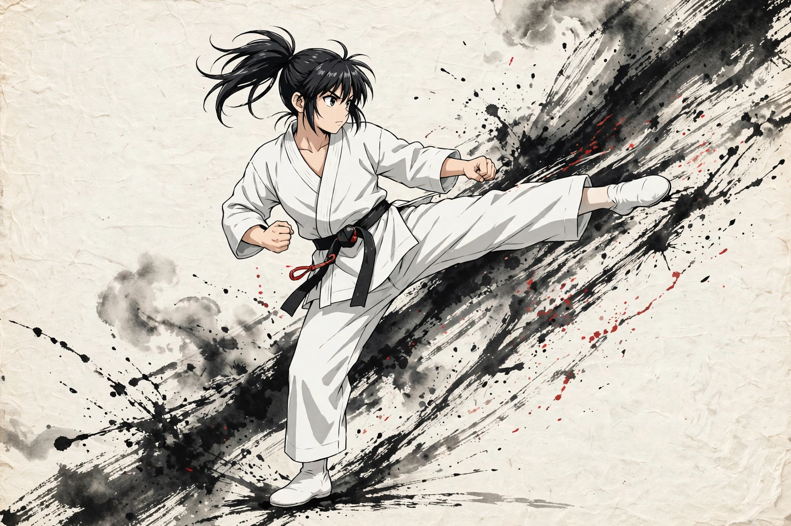
キーワード、流派・ジャンル、地域で絞り込めます。掲載はこれから順次増えていきます。お探しの条件でまだ掲載がない地域・ジャンルは、登録受付中として表示されます。
道場名のプルダウンから選ぶと、選んだ道場の詳細カードがここに表示されます。
全国の道場・ジムの登録を受け付けています
このポータルは開設したばかりで、掲載道場はこれから順次追加していきます。道場・ジムを運営されている方は、無料で登録申請できます。申請内容を確認のうえ、こちらに掲載します。
無料で登録申請する道場をお探しの方へ。お探しの地域・流派は、まだ掲載がありません。掲載が増えたらSNSでお知らせします。
掲載されると、道場名・ジャンル・所在地（市区町村まで）・対象・見学体験の有無・紹介文と、公式サイトやSNSへのリンクがこの形で表示されます。
公式サイトへ →（掲載時にリンクが入ります）
掲載情報は、各道場の公式サイトで確認できた公開情報（道場名・流派・市区町村・稽古日時・公式サイトURL）をもとに掲載しています。内容の修正・削除のご依頼は、専用フォームからご連絡ください。修正・削除のご依頼フォーム
12の武術にちなんだ、どうぶつたちの道場です。ジャンル選びに迷ったら、まずは気になる仲間からどうぞ。


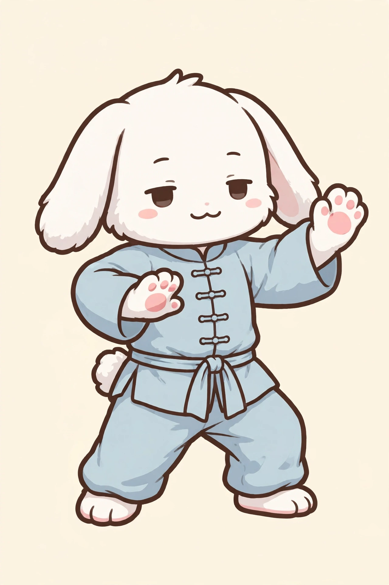

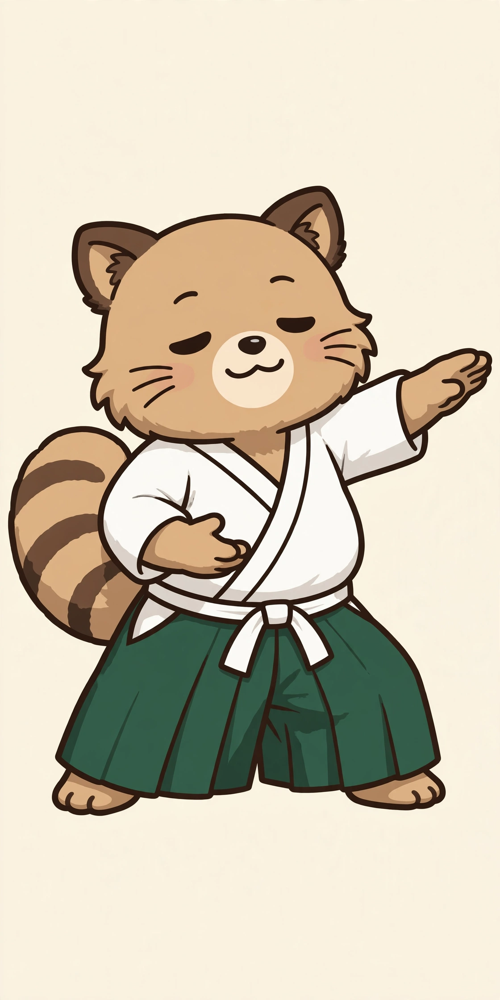

| 名前 | 担当の武術 | ひとこと |
|---|---|---|
| みけ丸（三毛猫） | 空手 | まじめで一生懸命だが、すぐ眠くなる ―「おす。…ねむい」 |
| はやて（柴犬） | 居合 | 凛として動きは速いが、散歩の帰りは動かない ―「間合いは、柴距離」 |
| まる太（白うさぎ） | 太極拳 | のんびり屋で、焦らないのが信条 ―「ゆっくりが、つよい」 |
| ロン（パンダ） | 少林拳 | おっとり。食べることと稽古が同じくらい好き ―「功夫は、焦らない」 |
| かん太（カンガルー） | ボクシング | 元気いっぱい。ポケットにはおやつ常備 ―「一歩さがって、二歩とぶ」 |
| とら吉（虎） | キックボクシング | やんちゃで負けず嫌い、昼寝も全力 ―「蹴る前に、のびをする」 |
| ニン太（黒猫） | 忍術 | こっそり屋。ごはんの気配には敏感 ―「忍法、こっそり昼寝の術」 |
| ごん太（猿） | 棒術 | いたずら好きで棒さばきは器用、集中は短め ―「長い棒、短い集中」 |
| ぽん太（たぬき） | 合気道 | おおらか。争わず、流して、ころんと勝つ ―「戦わずに、ころんと勝つ」 |
| のん太（カピバラ） | 柔道 | 穏やかで動じない。稽古のあとの温泉が楽しみ ―「勝っても負けても、温泉」 |
| まとい（フクロウ） | 弓道 | 静かで集中力が高い。夜が一番冴える ―「まばたきしないで、狙う」 |
| けろ丸（カエル） | 相撲 | どっしり堂々。雨の日は絶好調 ―「どすこい、雨の日絶好調」 |
案内役『まるまる道場』の12キャラクターのグッズを、SUZURIのショップ『222キャラ工房』で販売しています。ステッカー、マグカップ、Tシャツの3アイテムから選べます。価格は2026年11月時点のものです（変わる場合があります）。 SUZURIショップ『222キャラ工房』トップ
流派の違いより先に、この4つを確認しておくと、自分に合う道場を見つけやすくなります。
雰囲気や指導の進め方は、行ってみないと分かりません。多くの道場は見学や体験稽古を受け付けています。まずは公式サイトで確認して、無理のない範囲で申し込んでみましょう。
型や礼法をじっくり学びたい、体を動かして汗をかきたい、試合に出たい。同じ流派でも道場ごとに色があります。自分の目的に近い稽古をしているかを紹介文や稽古内容で確かめましょう。
上達も健康づくりも、続けることが前提です。自宅や職場・学校からの距離、稽古の曜日と時間帯が生活リズムに合うかどうかは、意外と大事なポイントです。
入会金・月謝・道着などの道具代は道場ごとに異なります。子ども向け・女性向け・一般向けなど対象もさまざまです。公式サイトで事前に確認し、不明点は遠慮なく道場へ問い合わせましょう。
掲載料・登録料はかかりません。個人の道場、支部道場、格闘技ジム、教室・サークルも登録できます。内容を確認してから掲載する申請制です。
下の申請リンク先のページで、道場名・流派・所在地・公式サイトなどを入力して送信してください。費用はかかりません。
道場の実在と公式サイトなどの情報を確認します。確認のため、追加でお尋ねする場合があります。
確認が取れた道場から順次、このポータルに掲載します。掲載後の修正・取り下げもいつでも依頼できます。
申請は、下のリンク先のページから送信できます。道場名、流派、都道府県・市区町村、公式サイトURL、対象クラス、稽古日、ひとこと紹介、担当者名、連絡先メールアドレスをご記入ください。掲載は内容を確認してから行います。
リンクを押すと申請ページ（新しいタブ）が開きます。リンク先で送信が完了すれば申請受付となります。
掲載されると、道場名・ジャンル・所在地（市区町村まで）・対象・見学体験の有無・紹介文と、公式サイトやSNSへのリンクがこの形で表示されます。
申請ページのリンク：https://forms.gle/RDZ9VGhuFeyonB8Y7
送信いただいた連絡先メールアドレスは、確認のご連絡にのみ使用し、公開しません。
道場やジムのホームページ・SNS・チラシに使える、ジャンル別のイラスト素材集です。各編36点・¥500で、購入した道場・ジムでの商用利用ができます。販売はBOOTHで行っています。
全9編（空手／キックボクシング／ボクシング／柔術・MMA／柔道／剣道／合気道／テコンドー／ムエタイ）をご用意しています。

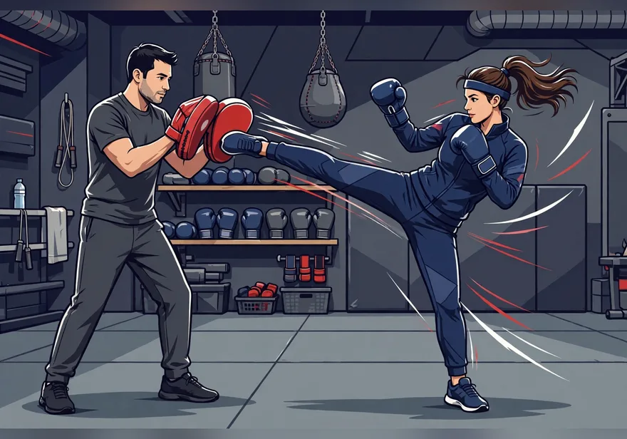
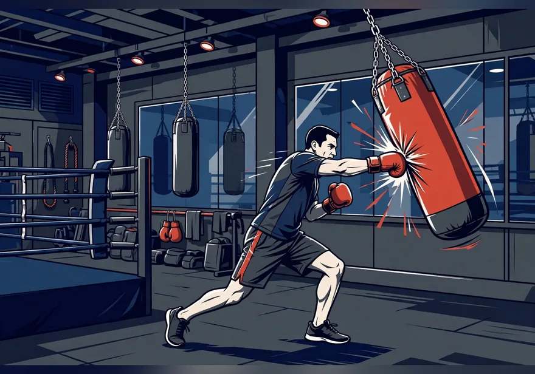


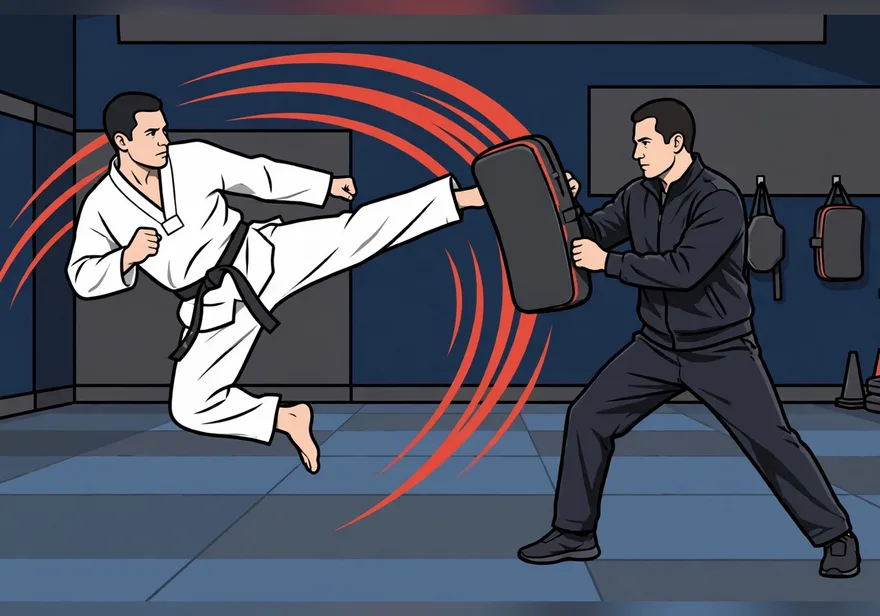
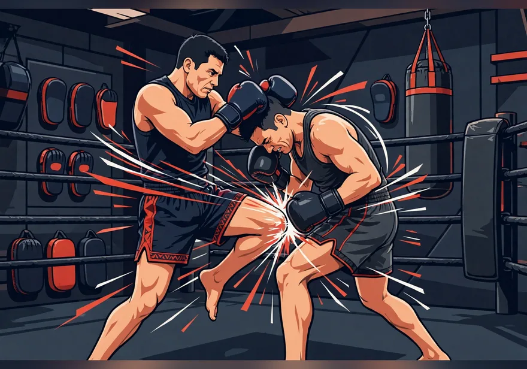
テコンドーとムエタイは、このポータルでは単独ジャンルを設けていません。道場探しでは、ムエタイ系は「キックボクシング」、テコンドーは「その他・複合」からも探せます。素材集の全商品はBOOTHショップ「angel222」でご覧いただけます。
無料です。掲載料、登録料、更新料はかかりません。このポータルは道場紹介のリンク集として運営しており、有料プランの販売も行っていません。
全国の武術・武道・格闘技の道場、ジム、教室、支部、サークルが対象です。空手・柔道・剣道などの武道、中国武術、ボクシングやキックボクシングなどの格闘技、総合格闘技、古武道まで幅広く受け付けています。
申請内容と公式サイトなどの情報を確認してから掲載します。実在が確認できない場合や、内容に事実と異なる点がある場合は、掲載をお断りしたり、確認のご連絡をしたりすることがあります。
公式のSNSアカウント（Instagram、Facebook、Xなど）のURLでも申請できます。申請リンク先の「公式サイト・SNSのURL」欄にご記入ください。
できます。移転、稽古日時の変更、休止・閉鎖などがありましたら、申請時と同じ連絡先からご連絡ください。確認のうえ修正・取り下げを行います。
上の「道場を探す」で流派・ジャンルと地域を選んでください。気になる道場が見つかったら、公式サイトへのリンクから見学・体験の申し込み方法を確認できます。入会の手続きや稽古内容の詳細は、各道場へ直接お問い合わせください。
道着・防具・ミットなど、稽古に使う道具の基礎知識と、記事で紹介している道具（PR）への案内です。
武術をこれから始める方に向けた、準備の考え方をまとめた記事です。
初めて道場やジムへ行くときは、服装や持ち物、稽古がどのように進むのかが分からず、不安に感じることもあります。この記事では、多くの武術・武道で共通する一般的な準備の考え方を整理しました。具体的な指定は流派や道場ごとに異なるため、最終的には見学先や入会を検討している道場の案内を確認してください。
道着やユニフォームが必要な流派もあれば、動きやすい服装で体験できる場合もあります。見学だけの場合は普段着で問題ないことが多いですが、体験稽古に参加する場合は事前に確認しておくと安心です。
何をそろえればよいか分からないときは、無理に先に買いそろえず、道場選びのポイントで触れた費用や対象の確認とあわせて、道場へ直接尋ねるのが確実です。
道場やジムによって持ち物は変わりますが、初めての日に持っていくと役立つものを挙げます。貸し出しがあるかどうかも、事前に公式サイトや問い合わせで確認できます。
ジャンルごとの特徴は流派・ジャンルから探すでも紹介しています。気になるジャンルがある場合は、稽古内容の違いもあわせて眺めてみてください。
稽古の進め方は流派やその日の内容で変わりますが、多くの場所では「あいさつ・準備運動」「基本の動きや型の確認」「相手と組む稽古や反復練習」「整理運動・あいさつ」といった流れが見られます。初めての場合は、最初から全てをこなすことよりも、指導者の説明を聞き、周りの動きを見ながら無理のない範囲で参加することが大切です。
分からない動きがあったときは、その場で尋ねて構いません。安全に関わる指示は特に大切なので、聞き取りにくい場合は遠慮なく確認しましょう。体調がすぐれない日は、見学に切り替えられるかどうかも含めて、事前に相談できる道場が多いです。
初回の稽古で上手に動けるかどうかよりも、自分がその場所の雰囲気や進め方に合っているか、通う曜日や時間帯が生活に無理なく組み込めるかを感じる期間として捉えると、気持ちが楽になります。礼儀作法についても、最初から完璧である必要はありません。あいさつの仕方や道場での振る舞いは、通いながら少しずつ覚えていくものとして案内されることが一般的です。
他の参加者と比べるよりも、自分のペースで休憩や水分補給を取りながら参加することを意識してください。不安な点があれば、体験の前後に指導者や受付の方へ質問しておくと、入会後のイメージがつかみやすくなります。
服装や持ち物の準備は、道場が決まってからで十分です。まずは通いやすい地域や興味のあるジャンルから候補を絞り、見学や体験の案内を確認してみましょう。
「どの武道を選べばいいか分からない」という方へ、代表的な5つのジャンルの違いを整理しました。
空手、柔道、合気道、剣道、居合道は、いずれも日本で広く稽古されている武道ですが、使う道具、相手との距離、稽古の進め方は大きく異なります。この記事では、それぞれの基本的な特徴と「こういう方に選ばれることが多い」という目安を、初心者の方向けに整理しました。同じジャンルでも流派や道場によって稽古内容は変わるため、最終的には道場を探すで候補を見つけ、見学や体験で雰囲気を確認することをおすすめします。
空手は、突き、蹴り、受けなどの基本動作を中心に学ぶ武道です。沖縄を発祥とし、現在は伝統空手、フルコンタクト系など、さまざまな流派やスタイルがあります。稽古は、基本動作の反復、一人で動作の順序を演武する「型」、相手と組んで技を掛け合う「組手」を組み合わせて進められることが多いです。道具は道着が基本で、流派によっては防具を使う場合もあります。
ジャンル全体の位置づけは流派・ジャンルから探すでも紹介しています。案内役のみけ丸が担当するジャンルでもあります。
柔道は、嘉納治五郎が創始した武道で、相手を投げる技、抑え込む技などの寝技、そして安全に倒れるための「受け身」を学びます。稽古では、型の練習に加え、相手と実際に組み合って技を掛け合う「乱取り」が行われることが一般的です。畳の上で稽古し、柔道着を着用します。オリンピック競技としても知られています。
合気道は、植芝盛平が創始した武道で、相手の力や動きを正面から受け止めるのではなく、体の転換や移動によって流し、投げ技や関節技につなげる考え方を大切にします。試合形式で勝敗を競う形を取らない流派が多く、稽古は指導者の示す技を、受け手と取り手が役割を交代しながら繰り返し練習する形が中心です。基本的には素手の稽古ですが、木刀や杖を使う稽古を取り入れる道場もあります。
合気道の案内役はぽん太です。他のジャンルと迷う場合は、案内役「まるまる道場」の紹介もあわせてご覧ください。
剣道は、竹刀を用い、防具を着けて相手と打ち合う武道です。面・小手・胴・突きといった決められた部位への打突を競い、姿勢、足さばき、間合いの取り方、大きな発声も含めて稽古します。稽古は、素振りや基本打ちの反復、相手との打ち合い、型の練習などを組み合わせて行われます。防具や竹刀が必要になるため、始め方や道具のそろえ方は道場ごとに案内が異なります。
居合道は、鞘に収まった刀を抜く動作から始まる型を中心に稽古する武道です。想定された場面に対して、抜刀、血振り、納刀までの一連の動作を、一人で繰り返し練習する時間が長いのが特徴です。実際に相手と打ち合うのではなく、姿勢、呼吸、刀の扱い、集中の持続といった内面的な要素に意識を向ける稽古として紹介されることが多いです。使用する刀は、稽古の段階に応じて模擬刀などを用いるのが一般的で、扱い方は各道場の指導に従います。
剣道と居合道は、このポータルでは「剣道・居合」としてまとめて探せるようになっています。どちらに興味があるかで、道場の案内文の確認ポイントも変わってきます。
ジャンル選びで迷ったときは、次のような観点で比べると、自分に合いそうな方向が見えてきます。どれが優れているということではなく、あくまで好みや生活に合うかどうかを見るための目安です。
はじめての道場選び、4つの確認ポイントでは、見学・体験の可否、目的との合致、通い続けられる場所かどうか、費用と対象の確認という、ジャンルを問わず共通する確認事項をまとめています。ジャンルの特徴とあわせて読むと、候補を絞り込みやすくなります。
文章だけでは、道場の雰囲気や指導の進め方は分かりません。気になるジャンルが2つ、3つに絞れたら、それぞれの道場の公式サイトで見学・体験の案内を確認し、可能であれば実際に足を運んでみてください。その際の服装や持ち物については、稽古を始める前に知っておきたいこと｜服装・持ち物・稽古の流れと心構えで一般的な準備の考え方をまとめています。
一つのジャンルを長く続ける方もいれば、体験を経て別のジャンルを選ぶ方もいます。最初から一つに決め切らなくても問題ありません。まずは興味の持てるジャンルから候補を探し、無理のない範囲で見学を申し込んでみましょう。
ジャンルが決まったあとに迷いやすい「流派や道場で何が違うのか」を、稽古の中心の置き方から整理しました。
空手なら空手、柔道なら柔道と、ジャンル名が同じでも、流派や道場によって稽古の中心は大きく異なることがあります。ある場所では一人で型を繰り返す時間が長く、別の場所では相手と組む稽古が中心で、さらに別の場所では日常生活での身の守り方を想定した練習に力を入れている――といった違いです。この記事は、ジャンルそのものの違いを扱ったジャンル入門とは切り分け、同じジャンルの中でも分かれる「何を大切にして稽古を組み立てるか」という考え方の違いを整理したものです。どの考え方が優れているという話ではなく、自分が続けたい稽古の方向と合っているかを見るときの手がかりとして読んでください。
型、組手、護身は、互いに切り離されたものではありません。型で覚えた動きを組手で試したり、護身を想定した練習の中に基本動作が含まれていたりと、多くの流派や道場では複数の要素を組み合わせて稽古が進められます。違いとして表れやすいのは、稽古時間の配分や、昇級・昇段の確認で何を重視するか、指導の際にどのような言葉で説明するかといった「中心の置き方」です。そのため、流派名や道場名だけで判断するのではなく、その場所で実際に行われている稽古の割合を見ることが大切になります。
型は、突きや受け、投げ、身のこなしなどを一定の順序にまとめた一連の動作です。型を重視する流派や道場では、一人、または相手と役割を決めて型を繰り返し、姿勢、重心の移動、呼吸、動作のつながりといった細部を少しずつ整えていく進め方が中心になることが多いです。
なお、型中心の稽古は静かに見えることもありますが、それだけで稽古の強度が決まるわけではありません。反復の量や姿勢の保持など、道場ごとの進め方を確認してみましょう。
組手は、相手と向き合い、約束した手順で技を掛け合う形から、条件を決めた実践形式、自由に近い形式まで、段階を設けて行われる稽古を指すことが多い言葉です。組手を重視する流派や道場では、距離の取り方やタイミング、相手の動きへの反応といった、相手がいるからこそ生まれる要素に稽古の中心が置かれます。競技としての試合を稽古の目標の一つに置く場所も、この方向に含まれることがあります。
護身を重視する流派や道場では、競技のルール内での勝敗よりも、日常生活で起こり得る場面を想定した身のこなしや、危険を避けるための距離の取り方、離脱の仕方などに稽古の中心が置かれることがあります。つかまれた状態からの動きや、狭い場所での体の使い方など、型や組手とは異なる場面設定で練習する時間が見られるのも特徴の一つです。
護身をうたう場合でも、その内容や想定は流派・道場ごとに異なります。具体的な場面や効果を一律に捉えるのではなく、その場所がどのような考え方で稽古を組み立てているかを見ることが大切です。
上の三つ以外にも、流派や道場によっては次のような方向に重きを置くことがあります。これらも単独ではなく、型・組手・護身の稽古と組み合わさっているのが一般的です。
公式サイトや紹介文で「型を大切にします」「実践的な稽古が中心です」「初めての方でも無理なく」といった言葉が使われている場合は、その道場がどこに中心を置いているかを考える手がかりになります。ただし、言葉だけでは配分までは分からないため、実際の稽古内容とあわせて判断しましょう。
方向性の合う・合わないは、上手かどうかではなく、続けたいと思えるかどうかで見ていくと判断しやすくなります。
方向性は、質問の仕方を少し工夫するだけでも見えやすくなります。見学や体験の前後に、次のような点を尋ねてみる方法があります。
答え方や説明の丁寧さも、その場所の考え方を知る手がかりになります。体験時の服装や持ち物については稽古を始める前に知っておきたいこと｜服装・持ち物・稽古の流れと心構えに一般的な準備をまとめています。ジャンル自体で迷っている場合は、先に流派・ジャンルから探すやジャンル入門でジャンルの特徴を眺めてから、この記事の観点で流派や道場ごとの違いを見ていくと、候補を段階的に絞り込めます。
最後に大切なのは、一度の見学で全てを決めようとしないことです。方向性が合いそうでも、曜日や距離、道場の雰囲気が生活に合わなければ続けることが難しくなります。道場を探すで通える範囲の候補をいくつか比べ、可能であれば複数の場所を見学してから選ぶ方法も検討してみてください。
候補の道場が絞れてきたら、次は「続けるときに毎月・毎年いくらかかるのか」と「通えなくなったときどうなるのか」を確認する番です。料金表の読み方を整理しました。
道場やジムの費用は、公式サイトの料金表に「月謝 ○○円」と書かれている金額だけでは比べられません。入会時に一度だけかかる費用、道着や道具の購入費、級や段の審査を受けるたびにかかる費用、そして休会や退会の扱いまで含めて初めて、自分の生活に合うかどうかが見えてきます。この記事は、はじめての道場選び、4つの確認ポイントで簡単に触れた「費用と対象の確認」を、料金表と制度の読み方に絞って掘り下げたものです。金額や制度は流派・道場・ジムごとに大きく異なるため、ここでは特定の場所の料金を示すのではなく、見学や体験のときに何を確認すればよいかを整理します。具体的な金額は、必ず候補先の最新の案内で確かめてください。
料金表を読むときは、費用を次の3種類に分けて書き出すと、道場同士の比較がしやすくなります。月謝が手頃に見えても、入会時の費用や道具代が大きければ初年度の合計は変わりますし、逆に月謝がやや高くても、通い放題で道具の貸し出しがあれば合計は抑えられる場合もあります。
「月謝に何が含まれているか」も場所によって異なります。週に何回まで通えるのか、通い放題なのか、クラスごとに料金が分かれているのかまで含めて確認すると、月謝の数字の意味が正確に分かります。
入会金は、無料の場所、月謝1か月分程度の場所、それ以上の場所と幅があります。「入会金無料キャンペーン」のような案内がある場合は、適用期間や条件（期間内に手続きした場合のみ、体験当日の入会のみなど）を確認しておきましょう。キャンペーンの有無で慌てて決める必要はなく、通常料金での合計もあわせて聞いておくと落ち着いて比べられます。
見落としやすいのが道具代です。道着は多くの流派で必要になりますが、購入先が指定されている場合、自分で用意してよい場合、レンタルや貸し出しがある場合と対応はさまざまです。剣道の防具やボクシングのグローブのように、稽古の段階が進んでから必要になる道具もあります。体験の段階では貸し出しがあっても、入会後にそろえる道具の一覧と、おおよその価格帯を尋ねておくと、初期費用の見通しが立ちます。
月々の支払い方は、大きく分けて「定額制（月謝制）」「回数制」「チケット制・都度払い」があります。どれが合うかは、通える頻度によって変わります。
あわせて、支払い方法（口座振替、クレジットカード、現金など）と、引き落とし日・締め日も確認しておくと、家計の管理がしやすくなります。月謝は「翌月分を前月に支払う」前払い制の場所が多いなど、支払いのタイミングも場所によって異なります。
クラス区分による料金差にも注意してください。子どもクラスと一般クラスで月謝が違う、女性専用クラスや早朝・昼間のクラスは別料金、といった分け方をしている場所もあります。自分が参加するクラスの料金で計算することが大切です。対象の考え方はジャンル入門でも触れています。
稽古を続ける中で発生する費用として代表的なのが、昇級・昇段の審査料です。審査は数か月ごとなど定期的に行われる流派が多く、受審するたびに審査料がかかるのが一般的です。審査を受けるかどうかが任意なのか、稽古の進度に組み込まれているのかも、場所によって異なります。流派で違う稽古の考え方で触れたように、審査や試合を稽古の中心に置くかどうかは流派や道場の方針で分かれるため、費用の発生頻度もその方針とあわせて見ると分かりやすくなります。
これらは「隠れた費用」というより、続けるほど発生する必然的な費用です。頻度と金額の目安を早めに知っておくことで、年間の合計を現実的に見積もれるようになります。
仕事や学業、家庭の都合で、数か月通えなくなることは誰にでも起こります。そのときの扱いは道場ごとに大きく異なるため、入会前に必ず確認しておきたい項目です。
休会制度がない場所では、通えない期間も月謝がかかるか、いったん退会する形になるため、長期の出張や受験、産前産後など、通えなくなる見通しがある方は特に、体験の時点で相談しておくと安心です。逆に、振替が柔軟な場所や休会費が低く設定されている場所は、生活の変化があっても続けやすいと言えます。
料金表には、家族割引、きょうだい割引、学生割引、複数クラス受講の割引などが載っていることがあります。割引は大変ありがたい制度ですが、「誰が・いつまで・どの料金に」適用されるかで実際の金額が変わります。
子どもの習い事として検討している場合は、対象年齢とクラス分けを地域から探すや各道場の案内でも確認しながら、数年後にクラスが変わった場合の料金まで含めて見積もると、長期の見通しが立てやすくなります。
月謝だけの比較で迷ったときは、「初年度にかかる合計」を自分で組み立ててみる方法があります。ここで示すのは計算の組み立て方であり、金額はあくまで試算のための例です。実際の金額は候補先の料金表に置き換えてください。
この試算に休会の可能性や通える回数を重ねると、「月何回通えば、1回あたりいくらになるか」まで見えてきます。週1回しか通えない生活の方が通い放題の定額制を選ぶより、回数制の方が合う、といった判断もしやすくなります。通い続けられる曜日や距離の確認は、稽古を始める前に知っておきたいことの「続けて通えるかを見る」という観点ともつながっています。
最後に、見学や体験の前後にそのまま使える確認項目をまとめます。すべてを一度に聞く必要はなく、公式サイトの料金表やFAQで分かるものは先に調べ、分からない点だけを尋ねる形で問題ありません。
質問への答え方も、その場所の雰囲気を知る手がかりになります。料金や制度の説明が明確で、書面や公式サイトで確認できる形になっている場所は、入会後も手続きで迷う場面が少ないと考えられます。反対に、口頭の説明だけで金額がはっきりしない場合は、その場で決めず、案内資料をもらって持ち帰り、比べ直してから判断しましょう。
候補が複数ある場合は、道場を探すで地域とジャンルを絞ったうえで、それぞれの公式サイトの料金表をこの記事の3分類（入会時・毎月・その都度）に当てはめて並べると、数字の比較が一気にしやすくなります。費用は長く続けるうえでの土台です。納得できる形で確認してから、気持ちよく稽古を始めてください。
入会が近づいてきたときに迷いやすい「何を、どのタイミングで、どう選べばよいのか」を、道着・帯・防具を中心に整理しました。
武道・武術を始めるとき、道着や帯、防具といった道具は「自分で買うものなのか、道場で指定されるものなのか」「サイズはどう見ればよいのか」が分かりにくいものです。必要な道具はジャンルによって大きく異なり、同じジャンルでも道場によって指定や貸し出しの扱いが変わります。この記事では、代表的な道具の種類と選び方の目安を初心者向けに整理しました。あくまで一般的な目安ですので、購入する前に、必ず入会を検討している道場の案内や指導者の説明を確認してください。体験時の服装や持ち物の全体像は稽古を始める前に知っておきたいこと｜服装・持ち物・稽古の流れと心構えもあわせてご覧ください。
道具選びで最初に押さえたいのは、必要な道具の種類は主にジャンルで決まる一方で、具体的な品目や購入方法は道場の指定が優先される、ということです。例えば柔道・空手・合気道では道着が基本になりますが、剣道では竹刀と防具、ボクシングではグローブといったように、ジャンルごとに出発点が異なります。
そのため、入会前にインターネットや店舗で一式をそろえてしまうと、指定と違うものを買ってしまうことがあります。順序としては「候補の道場を絞る → 見学・体験で必要な道具の一覧を聞く → 指定を確認してからそろえる」が基本と考えると、無駄な買い直しを避けやすくなります。道具代を含む初期費用の見積もり方は見学・体験で確認したい料金と制度の見方でも触れています。
道着は多くの武道で使う基本の稽古着で、一般的には上衣とズボン（下衣）の上下で構成されます。ジャンルによって呼び方や細部の仕様は異なりますが、選び方で共通する観点は「素材」「厚み（生地の重さ）」「サイズ」の3つです。
合気道では、稽古の段階が進むと袴を着用する場合がありますが、着用を始める時期や場面は道場によって異なります。最初から自分で判断して用意するのではなく、指導者の案内に沿って段階的にそろえるものと考えてください。
道着のサイズは、メーカーやジャンルによって「号数（例：2号、3号）」で示されることが多く、それぞれ身長の目安が添えられているのが一般的です。ただし、同じ号数でもメーカーによって寸法が異なるため、身長だけで決めず、可能であれば試着したり、道場でサイズ見本を確認したりする方法が確実です。
女性向け・子ども向けとして、体のラインに合わせた仕様や軽量タイプを用意しているメーカーもあります。種類の多さに迷ったときは、道場が推奨するメーカーや型番があるかどうかを先に確認すると、選択肢を絞りやすくなります。
帯は道着を留める役割に加えて、多くの流派では級や段、稽古の段階を示す目印としても使われます。ここで注意したいのは、帯の色と級・段の対応は流派や団体ごとにまったく異なる、という点です。ある流派で上級を示す色が、別の流派では初級の色であることも珍しくありません。そのため、帯の色だけで腕前を比べることはできず、色の進み方は入会先の制度として確認するものです。
刺しゅうで名前や流派名を入れるかどうかも、道場や団体で扱いが異なります。注文時に刺しゅうを入れてしまうと返品や交換ができない場合があるため、必要な場合でも、指定を確認してから手配しましょう。
防具と呼ばれる道具は、ジャンルによって指すものが大きく異なります。共通しているのは、相手と当たる稽古や、道具を使って打ち合う稽古で用いられるもので、フィット感（体に合っていること）が大切とされる点です。効果を断定するものではありませんが、安全に配慮して稽古を進めるための装備として、各ジャンルで扱いが決められています。
防具は体に直接触れる時間が長いため、中古品や譲り受けたものを使う場合は、サイズが合っているか、ひもや面金などの部品に傷みがないか、衛生面で問題がないかを慎重に確認する必要があります。判断に迷う場合は、購入前に指導者へ相談してください。
剣道の竹刀、居合道などで使う刀（稽古の段階に応じた模擬刀など）、合気道や古武道で使う木刀や杖（じょう）など、武器にあたる道具は、長さや重さに規定や目安があることが多いのが特徴です。
これらの道具は、見た目が似ていても稽古用として適さないものが販売されていることもあります。「安かったから」「格好よいから」という理由だけで選ばず、道場で使われている道具の種類を確認してからそろえることが大切です。ジャンルの探し方は流派・ジャンルから探すでも確認できます。
道具を長く使うためには、日々の手入れの考え方を知っておくことも大切です。細かな方法は素材やメーカーの表示、道場の習慣によって異なるため、ここでは一般的な観点を挙げます。
手入れの手間は、道具の種類によって続けやすさにも関わります。週に何回通うか、洗濯や乾燥の時間をどう確保するかも含めて考えると、自分に合う素材や数を選びやすくなります。通う頻度や曜日との兼ね合いは、はじめての道場選び、4つの確認ポイントの「通い続けられる場所か」という観点ともつながっています。
道具は、始める段階ごとに必要なものが変わります。一度に全てをそろえるのではなく、段階に合わせて追加していく考え方が基本です。
子どもの習い事として始める場合は、成長に伴う買い替えが前提になります。最初から高額な一式をそろえるのではなく、道場で案内される価格帯や、買い替えの頻度の目安を確認したうえで選ぶと、無理のない範囲で続けやすくなります。
最後に、見学や体験の前後にそのまま使える確認項目をまとめます。公式サイトに道具の一覧が載っている道場もあるため、分かるものは事前に調べ、分からない点だけを尋ねる形で問題ありません。
道具についての説明が一覧や書面で確認できる場所は、入会後も迷う場面が少ないと考えられます。逆に、指定がはっきりしないまま購入を急かされるような場合は、その場で決めず、案内を持ち帰って比べ直してから判断しましょう。
道具がそろってきたら、次は通える範囲で候補を比べる段階です。道場を探すで地域とジャンルを絞り、地域から探すで自宅や職場の近くの候補もあわせて確認してみてください。
この記事にはアフィリエイトリンクが含まれます。当サイトはAmazonアソシエイト・プログラムに参加しています。価格・在庫はリンク先でご確認ください。ここで紹介する商品は、運営者が実際に使った感想（体験談）ではありません。
各流派の紹介記事でも、同じ道具を紹介しています。

老舗武道用品メーカー九桜の空手衣です。上衣・ズボン・帯がそろった一般普及・初心者向けのセットで、号数やサイズは商品ページで確認してください。道場で指定がある場合は、そちらを優先してください。
Amazonで見る
組手の稽古で使うマウスガードです。熱で成形して自分の歯型に合わせるタイプです。防具の要否や形式は流派・道場の方針で異なるため、事前に確認してください。
Amazonで見る
九桜の柔道衣上下セットです。IJF・全日本柔道連盟の新規格認定品として販売されているモデルで、号数やサイズは商品ページで確認してください。道場の指定がある場合はそちらを優先してください。
Amazonで見る
格闘技用品メーカーISAMIの入門用合気道衣です。上衣・ズボン・帯のセットで、サイズは商品ページで確認してください。袴の着用時期などは道場の案内に沿ってください。
Amazonで見る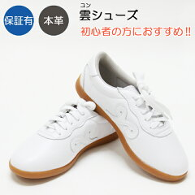
天然皮革の太極拳シューズ「雲」のホワイトです。型の稽古の足元として使われます。サイズは商品ページで確認してください。教室で指定がある場合はそちらを優先してください。
楽天市場で見る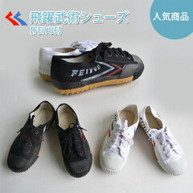
FEIYUEの布製カンフーシューズです。中国武術の型や基本功の稽古の足元として使われます。サイズや色は商品ページで確認してください。教室で指定がある場合はそちらを優先してください。
楽天市場で見る
居合の稽古で使う練習刀（模擬刀）で、刀剣袋が付属します。長さや重さの扱いは道場で決まっている場合が多いため、購入前に必ず指導者へ確認してください。
Amazonで見る
Venumのボクシンググローブです。重さ（オンス）や色・サイズは商品ページで確認してください。使える重さはジムの方針で案内される場合があります。
Amazonで見る
Shock Doctorのマウスガードです。ジェル層で歯にフィットさせるタイプで、スパーリングなど対人稽古の際の保護具として使われます。要否はジムの方針で確認してください。
Amazonで見る
Venumのボクシンググローブです。キックボクシングのミット打ちやサンドバッグ打ちにも使われるタイプで、重さ（オンス）や色・サイズは商品ページで確認してください。
Amazonで見る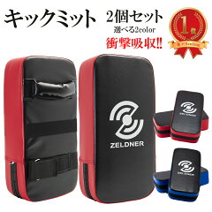
ZELDNERのキックミット2個セットです。パンチやキックを受けるミット打ちの練習に使われます。色や仕様は商品ページで確認してください。
楽天市場で見るZHENGTUのキックボクシング用レガース（すね当て）です。対人稽古で蹴りを受ける際の保護具として使われます。サイズや色は商品ページで確認してください。要否はジムの方針で確認してください。
楽天市場で見る「どの流派にするか」と同じくらい、「どの地域で、どう探すか」も始めやすさを左右します。大阪・関西に絞って、地域と流派の関係を整理しました。
武道や武術を始めるとき、多くの方はまず流派やジャンルから考えます。ただ、実際に候補がどれだけ見つかるか、通える時間帯に稽古があるかは、住んでいる地域によって大きく変わります。都市部では駅の近くにジム型の施設が集まりやすく、郊外や歴史のある地域では公民館や地域の道場、学校施設を使う教室が目立つなど、探し方の入口そのものが地域で異なるのです。この記事では、大阪・関西を例に、地域によって流派の分布や探し方がどう変わるか、通いやすさと時間帯の見方、見学で確認したい地域ならではのポイントを、一般的な情報として整理しました。特定の道場・ジムの名前や住所、料金を紹介するものではありません。具体的な条件は、候補先の公式案内で必ず確認してください。
地域差というと「都市部は道場が多く、地方は少ない」という数の話に聞こえますが、実際に探してみると、違いは数だけではありません。同じ空手やキックボクシングでも、地域によって目立つ探し方や教室の形態が変わってきます。
つまり「近所に希望の流派がない」と感じたときも、探し方の入口を変えるだけで候補が現れることがあります。まずは地域から探すで自分の都道府県を起点に、隣の市や通勤・通学の経路沿いまで範囲を少し広げてみるのが第一歩です。
大阪市内のような都市部では、駅周辺にボクシングやキックボクシングなどのジム型施設、空手や総合格闘技の道場が集まりやすい傾向があります。仕事帰りに寄れる夜のクラスや、早朝クラスを設定しているジムも見られ、平日の夜と週末で通い方を選べるのが都市部の強みです。
候補が多い都市部では絞り込みが課題になります。武道・武術のジャンル入門でジャンルの特徴を押さえ、流派で違う稽古の考え方で方向性の見方を確認してから探すと、数の多さに振り回されにくくなります。
大阪府内の郊外や、兵庫・京都・奈良・滋賀・和歌山といった関西の他府県では、探し方の様子が少し変わります。駅前にジムが並ぶ形ではなく、地域の道場、公民館やスポーツセンターで開かれる教室、学校施設を使うサークルなど、地域に根づいた形の受け皿が中心になるエリアも多くあります。
郊外や地方部では候補の数こそ少なくても、一つの教室が長く続いていて、子どもから大人まで幅広い年代が一緒に稽古している場合もあります。数の多さだけで地域を比べず、形態の違いとして捉えると見え方が変わります。
関西は電車網が発達しているため、地図上の距離が遠くても電車で30分ほどで着く場所もあれば、近くても乗り換えが多く負担になる場所もあります。通いやすさを見るときは、次のような実感ベースの観点が役立ちます。
この「続けられるかどうか」という観点は、はじめての道場選び、4つの確認ポイントの「通い続けられる場所か」とも重なります。地域で候補を広げるときほど、距離ではなく生活との接続で判断することが大切です。
見学や体験は全国共通の確認事項に加えて、地域の事情に沿った質問をしておくと、入会後の齟齬を減らせます。
体験当日の服装や持ち物は、稽古を始める前に知っておきたいこと｜服装・持ち物・稽古の流れと心構えに一般的な準備をまとめています。入会後にそろえる道着や道具については稽古着と道具の基礎知識もあわせてご覧ください。
最後に、大阪・関西で探す場合の手順をまとめます。流派から探す方法と組み合わせて使ってください。
「住んでいる市に希望の流派がない」という場合でも、隣の市や通勤経路沿いに範囲を広げれば見つかることはよくあります。逆に、候補が多すぎる都市部では、時間帯と行程で先に絞ると選びやすくなります。地域と流派の両方から眺めることが、大阪・関西で自分に合う始め方を見つける近道です。
ポータルのジャンル案内の中で、合気道だけを一本に絞って掘り下げます。流派の名前は聞いたことがあっても違いが分かりにくい、という方に向けた入門です。
合気道は、相手の力や動きを正面からぶつからずに流し、投げ技や関節技（固め技）へつなげる考え方を大切にする武道です。ジャンル入門では空手・柔道など5つのジャンルの一つとして短く紹介しましたが、この記事では合気道そのものに絞り、成り立ち、主な流派・団体の特徴の違い、そして受け身から基本技、応用へと進んでいく稽古の進め方を初心者向けに整理します。流派ごとの細かな違いや稽古の進め方は道場によって異なるため、最終的には道場を探すで候補を見つけ、見学や体験で確かめてください。
合気道は、植芝盛平（1883〜1969）を開祖とする日本の武道です。植芝盛平は大東流合気柔術など複数の武術を学んだうえで、独自の技法と理念を築き、戦後に「合気道」の名で広く知られるようになりました。現在は日本国内だけでなく、世界各地に道場や団体が広がっています。
技の面での大きな特徴は、打撃で相手を倒すのではなく、相手がつかむ、打ってくるといった動きに対して、体の転換（方向を変える動き）や入身（相手の側面や背後へ入る動き）で位置を変え、相手のバランスを崩して投げたり、関節を制して固めたりする点です。稽古では「取り（技をかける側）」と「受け（技を受ける側）」が役割を交代しながら、同じ技を繰り返し練習する形が中心になります。
このポータルでは、合気道の案内役はたぬきのぽん太です。「戦わずに、ころんと勝つ」というひとことが、争わない動き方という合気道のイメージを表しています。
合気道は、開祖の弟子たちがそれぞれの解釈や指導法を受け継ぎ、複数の流派・団体に分かれて発展してきました。技の名前や基本の形が共通していても、力の使い方の説明、稽古の進め方、審査の基準は団体によって異なります。代表的な系統を、初心者が見学先を選ぶときの手がかりとして整理します。なお、ここで挙げるのは広く知られた主な系統であり、すべての団体を網羅するものではありません。
大切なのは、どの系統が優れているかではなく、説明の仕方や稽古の進め方が自分に合っているかどうかです。流派全体の方向性の見方は流派で違う稽古の考え方｜型・組手・護身、それぞれを重視する理由でも整理しています。合気道の場合は、特に次の点が見学で差として見えやすくなります。
道場やその日の内容で変わりますが、合気道の稽古は多くの場所で次のような流れで進められます。初めて見学する際の目安としてご覧ください。
体験時の服装や持ち物の全体像は稽古を始める前に知っておきたいこと｜服装・持ち物・稽古の流れと心構えにまとめています。合気道の体験では、道着ではなく動きやすい服装で参加できる場合が多いですが、道場ごとに案内が異なるため事前に確認してください。
合気道の上達は、一足飛びではなく、段階を踏んで進んでいく形が一般的です。進み方の目安を、多くの道場で共通して見られる順序で整理します。
入会後にそろえる道着や袴については稽古着と道具の基礎知識｜道着・帯・防具などの種類と選び方の目安もあわせてご覧ください。合気道では帯の色で級を区別しない道場も多く、白帯のまま段位まで進む団体もあります。
合気道の紹介では「年齢を問わず始められる」「相手と競わないので自分のペースで続けられる」といった点が語られることがよくあります。実際に、子どもから高齢の方まで幅広い年代が同じ道場で稽古している例は多く見られます。ただし、稽古の強度は道場やクラスによって大きく異なり、受け身や投げ技には体への負担も伴います。体力や既往症に不安がある方は、体験の前に道場へ相談し、無理のないクラスや参加の仕方を確認してください。
また、合気道の技がそのまま日常の護身に直結するかどうかは、流派や指導者の考え方によって説明が異なります。具体的な効果をうたう紹介文だけで判断せず、どのような場面を想定し、どのような稽古を行っているのかを、見学の際に自分の目で確認することが大切です。
候補の道場を見学・体験する際は、はじめての道場選び、4つの確認ポイント（見学・体験の可否、目的との合致、通い続けられる場所か、費用と対象）に加えて、合気道ならではの次の点を確認すると、入会後のイメージがつかみやすくなります。
興味のある地域で合気道の道場を探す場合は、流派・ジャンルから探すで「合気道」を選び、地域から探すで通える範囲と組み合わせて候補を出してみてください。同じ合気道でも流派や道場で稽古の色は変わります。可能であれば複数の道場を見学し、説明の分かりやすさと道場の雰囲気で選ぶことをおすすめします。
この記事にはアフィリエイトリンクが含まれます。当サイトはAmazonアソシエイト・プログラムに参加しています。価格・在庫はリンク先でご確認ください。ここで紹介する商品は、運営者が実際に使った感想（体験談）ではありません。
格闘技用品メーカーISAMIの入門用合気道衣です。上衣・ズボン・帯のセットで、サイズは商品ページで確認してください。袴の着用時期などは道場の案内に沿ってください。
Amazonで見る「子どもの習い事」というイメージの強い武道・武術を、大人になってから始める方に向けた読み物です。年齢そのものより、自分の体と生活に合った始め方を整理しました。
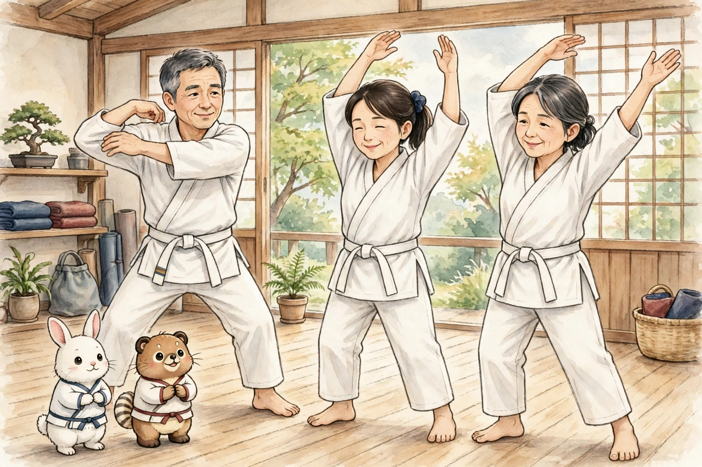
「武道は子どものころから始めるもの」「今さら始めても遅いのでは」と感じる方は少なくありません。実際には、30代・40代・50代以降になってから道場の門をたたく方はどのジャンルにもおり、子どもとは違う目的とペースで稽古を続けることができます。この記事は、初心者全般に向けた稽古を始める前に知っておきたいこととは切り分け、「大人になってから始める」ことに絞って、体力やけがへの向き合い方、無理のない始め方、見学・体験で年齢の観点から確認したい点、仕事や家庭と両立する続け方のコツを整理したものです。ジャンルや道場によって進め方は異なりますので、最後は候補先の案内と見学・体験で確かめてください。
武道・武術の上達に年齢の上限が定められているわけではなく、昇級・昇段の審査も、多くの団体では年齢ではなく稽古の積み重ねと到達度で進んでいきます。子どものころから続けている方と比べれば、技を身につける速度や体力の回復の早さは違うかもしれませんが、それは「始められない」理由ではありません。
むしろ大人から始める方には、大人ならではの進み方があります。
どのジャンルが大人に選ばれやすいかは、武道・武術のジャンル入門で整理した特徴とも照らし合わせて考えられます。なお、ジャンルや流派によっては、年齢の高い層の入門は想定していても、クラス自体は子ども中心に組まれている場合もあります。その見極めは後述する見学・体験の確認が役立ちます。
大人になってから稽古を始めるときに一番意識したいのは、今の自分の体を基準にすることです。学生時代の運動経験がある方ほど「昔はできた」という感覚が残っていて、初回から張り切りすぎてしまうことがあります。運動から離れていた期間が長いほど、筋力や柔軟性、息の上がり方への慣れは、その期間なりに変わっているものと考えておくと無理がありません。
稽古の強度を何で決めるかは、流派で違う稽古の考え方で触れた「中心の置き方」にも関わります。体力に不安がある方は、体験の申し込み時点でその旨を伝え、参加の仕方を相談できるかどうかも見学先選びの材料になります。
武道・武術は体を動かす稽古である以上、けがの可能性をゼロにはできません。大人から始める場合は、若いころにはなかった「膝や腰の古傷」「血圧や関節の持病」といった条件を抱えている方もいます。大切なのは、隠さず、自己判断で我慢せず、道場と情報を共有することです。
この記事では特定の症状への対処や効果を案内するものではありません。体の状態に不安がある方は、医療機関への相談と、道場への事前の情報共有を組み合わせて、始め方を決めてください。
大人の始め方で失敗しやすいのは、意欲が高い最初の時期に詰め込みすぎて、疲れや小さな不調が重なって足が遠のくパターンです。最初の3か月ほどは、技の上達よりも「通うリズムを作る期間」と割り切ると続けやすくなります。
体験当日の服装や持ち物については、稽古を始める前に知っておきたいこと｜服装・持ち物・稽古の流れと心構えに一般的な準備をまとめています。大人向けの体験クラスや、体験が複数回できる制度を用意している道場もあるため、公式サイトの案内をよく読んでから申し込みましょう。
はじめての道場選び、4つの確認ポイント（見学・体験の可否、目的との合致、通い続けられる場所か、費用と対象）は大人にも共通しますが、大人から始める場合は、次の点を重ねて確認すると入会後のイメージが具体的になります。
地域によって候補の集まり方や時間帯の傾向は変わります。大阪・関西で探す場合は大阪・関西で武道・武術を始める｜地域×流派の読み物もあわせてご覧ください。
大人の稽古が続くかどうかは、技の才能よりも、生活の中で稽古の置き場所をどう確保するかで決まることが多いものです。完璧に通い続けることではなく、波があっても戻ってこられる形を作ることが大切です。
続けるための土台は、料金と制度の納得感でもあります。休会や退会の扱いまで含めて納得して入会しておくと、通えない時期が来ても「戻る場所」として道場を捉えやすくなります。
大人から始める武道・武術で大切なのは、年齢を理由に諦めることでも、若い参加者と同じやり方を自分に課すことでもありません。今の体力と体の条件を正直に見つめ、道場と情報を共有し、週1回から無理のないリズムを作り、生活の波に合わせて頻度を調整しながら続ける――その組み立て方自体が、大人ならではの始め方です。
まずは道場を探すで通える範囲の候補を出し、気になる道場の公式サイトで一般クラスの年代や時間帯、体験の案内を確認してみてください。見学では、この記事のチェックポイントを手に、参加者の年代と稽古の強度の段階づけを自分の目で確かめることが、後悔のない一歩目につながります。
「週に何回通えばいいのか分からない」「週1回しか行けないけれど、それでも始めてよいのか」という迷いに向けた読み物です。頻度そのものより、無理のない間隔を保ち続ける組み立て方を整理しました。

武道・武術を始めようとするとき、「週に何回くらい通うものなのか」は、多くの方が最初に迷う点の一つです。週3回や週4回と頻繁に通う方もいれば、週1回を長く続けている方もいて、正解は一つではありません。この記事では、週1回から始める組み立て方を出発点に、週1回・週2回・それ以上の頻度それぞれの考え方、続けられなくなったときの見直し方、仕事や家庭との両立の工夫を一般論として整理しました。実際の稽古日やクラスの設定は道場やジムごとに異なるため、候補先の案内と照らし合わせながら読んでください。初めて稽古に行く前の準備については稽古を始める前に知っておきたいこと｜服装・持ち物・稽古の流れと心構えもあわせてご覧ください。
結論から言えば、武道・武術の稽古は週1回から始めて問題ありません。多くの道場や教室はもともと週1〜2回の稽古日で運営されており、公共施設や学校の体育館を借りて開く教室では、稽古日そのものが週1回だけという場所も珍しくありません。週1回でも、同じ曜日・同じ時間に通い続けることで、道場の流れや基本動作の順序、礼法といった稽古の土台は少しずつ積み重なっていきます。
逆に、意欲が高い最初の時期に週3回以上の予定を詰め込み、疲れや予定の衝突が重なって数か月で足が遠のいてしまう、というパターンもよく聞かれます。稽古は「多く通った月があること」よりも「細くても間隔を空けすぎずに通い続けていること」が土台になります。最初は週1回を確実にこなせる形から始め、物足りなさや余裕を感じてから増やすほうが、結果として長続きしやすい組み立て方です。
頻度ごとに、稽古の進み方や生活への影響は少しずつ変わります。どれが優れているという話ではなく、自分の目的と生活に照らして選ぶための目安として整理します。
料金体系との関係も見逃せません。定額の月謝制では回数が増えるほど1回あたりの負担は下がりますが、週1回しか通えない生活では回数制やチケット制のほうが合う場合もあります。頻度と費用をあわせた見方は見学・体験で確認したい料金と制度の見方｜入会金・月謝・休会・退会までで整理しています。
週1回だからこそ、1回の稽古とその前後の過ごし方を少し工夫するだけで、続けやすさと身につく感覚は変わってきます。特別な練習量を足す話ではなく、通い方の設計の話です。
道着や道具の手入れも、週1回のリズムに組み込むと負担が分散します。稽古の翌日に道着を洗って干し、次の稽古までに畳んでバッグへ入れておく、といった流れができると準備の手間が減ります。道具の扱い方は稽古着と道具の基礎知識｜道着・帯・防具などの種類と選び方の目安も参考にしてください。
頻度は一度決めたら変えられないものではありません。生活や体調、稽古への気持ちの変化に合わせて見直す前提で考えると、長く続けやすくなります。
頻度を考えるうえでは、稽古の方向性も関係します。型を中心に反復する稽古と、相手と動き続ける稽古では、同じ週2回でも体への負担の出方が異なります。方向性の見方は流派で違う稽古の考え方｜型・組手・護身、それぞれを重視する理由と自分に合う方向の見方で整理しています。
どれだけ無理なく組んでも、転勤や繁忙期、家族の行事、体調の変化などで、決めた頻度を保てなくなる時期は誰にでも訪れます。そのときに「やめる」以外の選択肢を持っているかどうかが、稽古歴の長さを分けることが多いものです。
大人の稽古が続くかどうかは、稽古そのものよりも、生活の中で稽古の置き場所をどう確保するかで決まることが多いものです。大人から始める方向けの観点は大人から始める武道・武術｜年齢を気にせず稽古を始めるための見方でも整理していますが、頻度との関係では次の点が実務的な分かれ目になります。
入会前に頻度について尋ねておくと、入会後の通い方の見通しがぐっと具体的になります。次のような質問は、見学や体験の前後にそのまま使えます。
候補を探す段階では、道場を探すで地域とジャンルを絞り、地域から探すで自宅や職場からの行程が現実的な範囲にあるかもあわせて眺めてみてください。稽古日の曜日と時間帯は公式サイトの週間スケジュールに載っていることが多いため、自分の予定表と並べて確認するのが確実です。
稽古の頻度に、すべての人に共通する正解はありません。ただ、始め方として無理が少ないのは、週1回の固定枠を生活に置き、確実に通えるリズムを作ってから、余裕と目標に応じて増やしていく組み立て方です。続けられなくなったときは、やめる前に頻度を落とす、時間帯を変える、休会するといった中間の選択肢を道場と相談してみてください。
武道・武術は、短期間に詰め込むよりも、細く長く続けるほど稽古の積み重ねが形になっていく面があります。「週1回しか行けないから」と諦める必要はありません。週1回を行ける形に設計すること自体が、長く続けるための第一歩です。
「作法が分からなくて失礼をしてしまわないか」が不安で、一歩目をためらう方に向けた読み物です。多くの道場で共通する挨拶・礼・振る舞いの考え方を、一般論として整理しました。
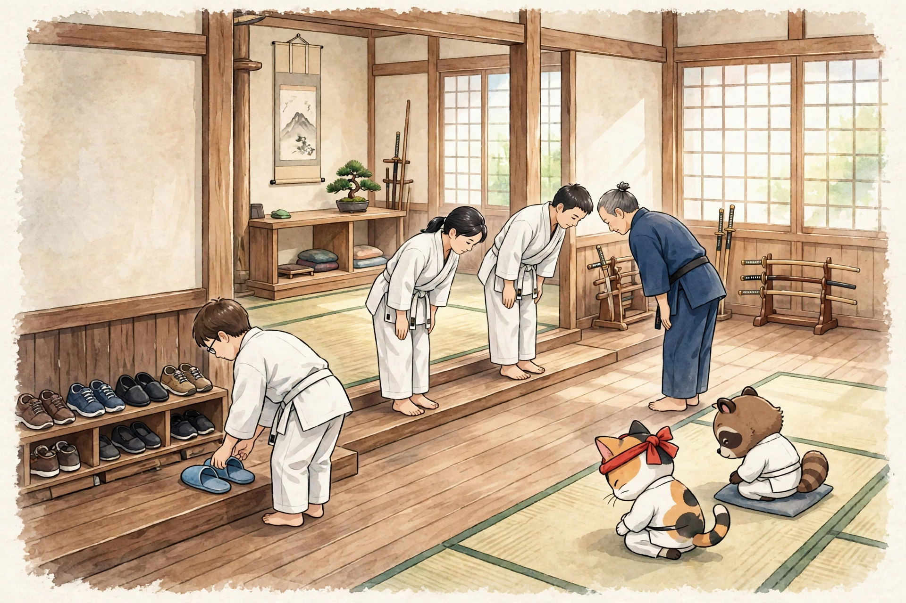
道場に初めて行くとき、技の内容よりも先に気になるのが「礼儀作法が分からなかったらどうしよう」という不安です。いつ礼をするのか、挨拶はどのような言葉がよいのか、靴や荷物はどこへ置くのか。多くの武道・武術の道場には共通する作法の大枠がありますが、細部は流派や道場によって異なります。この記事では、初めての方が戸惑いやすい場面を順に取り上げ、一般的な目安と、見学・体験で確認しておきたい点を整理しました。準備そのもの（服装・持ち物・稽古の流れ）は稽古を始める前に知っておきたいこと｜服装・持ち物・稽古の流れと心構えにまとめていますので、あわせてご覧ください。
道場の礼儀は、形だけの決まりごととして扱われているわけではありません。背景としてよく挙げられるのは、次のような実務的な理由です。
つまり、最初から所作の角度まで完璧にできるかどうかが問われるものではなく、場と相手を大切にする気持ちを、決まった形で表すことが主眼です。初めての方は、分からない作法をその場で尋ねて構いません。尋ねること自体が失礼になることは通常ありません。
道場で使われる礼は、大きく「立礼（りつれい：立ったままの礼）」と「座礼（ざれい：正座の姿勢からの礼）」に分けられます。どちらを用いるか、いつ行うかは流派や道場の方針で異なりますが、見られることの多い場面を挙げます。
礼の角度や手の位置、目線といった細部は流派ごとに教え方が異なります。動画や本で見た他流派の形をそのまま持ち込むより、その道場の指導者と先輩の動きを真似るのが確実です。礼法そのものを稽古の中心に置く道場もある点は、流派で違う稽古の考え方でも触れています。
道場で交わされる挨拶は、場面ごとにほぼ決まっています。初めての方が覚えておくと困らないのは、次の言葉です。
空手や一部の流派で使われる「押忍（おす）」は、流派や道場によって使い方の範囲が大きく異なる言葉です。使っている空気の道場では自然な返事になりますが、使わない道場で多用すると場違いになることもあります。初めて行く場所では、周りが使っていることが確認できるまでは通常の「はい」「お願いします」で応答するほうが無難です。
声の大きさも道場の空気で変わります。剣道のように発声そのものが稽古に含まれるジャンルもあれば、静かな所作を重んじるジャンルもあります。最初のうちは、周りと同じくらいの声量に合わせるのが目安です。
礼や挨拶と同じくらい、日常の細かな振る舞いも「マナー」として見られています。どれも難しいことではなく、その場所を気持ちよく使うための配慮です。
服装のマナーは「きちんとして見えるか」よりも、「清潔であること」と「安全に動けること」が基準です。道着の種類や号数の選び方といった道具面は稽古着と道具の基礎知識｜道着・帯・防具などの種類と選び方の目安で整理していますので、ここでは着方と身だしなみに絞ります。
体調がすぐれない日は無理に参加せず、見学できるかどうかを含めて相談するほうが、自分のためにも周りのためにもなります。感染症が流行する時期の参加の判断やマスクの扱いは、道場側の案内に従ってください。
仕事や学業のある生活では、遅刻や欠席は起こり得るものです。作法として大切なのは、起きたこと自体よりも、連絡と入りの振る舞いです。
通う頻度そのものの考え方は稽古の頻度と続け方の目安｜週1回から始める無理のない続け方にまとめています。週1回でも、連絡と挨拶が丁寧な方のほうが、道場側からも稽古仲間からも「続けている人」として受け止められるものです。
大切な点を繰り返すと、マナーや礼儀は、入会前に身につけておくべき試験科目ではありません。多くの道場では、作法は通いながら先輩の動きを見て覚えるものとして扱われ、指導者も「最初は分からなくて当然」という前提で教えています。稽古を始める前に知っておきたいことでも触れたとおり、初回の稽古は上手に動けるかよりも、場所の雰囲気が自分に合うかを見る期間です。作法についても同じで、この記事の内容は「見学のときに、どのような作法が交わされている道場なのか」を眺めるための観点として使ってください。
逆に、作法の細部をめぐる空気は道場の性格を映すものでもあります。初心者の質問に丁寧に答えてもらえるか、形の間違いをその場で穏やかに直してもらえるかは、長く通う場所を選ぶうえでの大切な観察点です。はじめての道場選び、4つの確認ポイントとあわせて、見学の判断材料にしてください。
最後に、見学や体験のときにそのまま使える観点をまとめます。質問として尋ねるだけでなく、稽古の様子を眺めるだけでも分かる項目が多くあります。
マナーが整っている道場は、初心者への案内も整っていることが多いものです。作法を「怖いもの」と身構えるのではなく、自分がその場に馴染めそうかを見る手がかりとして、見学のときに観察してみてください。候補探しは道場を探すから、ジャンルや地域で絞って始められます。
流派・ジャンル紹介の1本目です。空手の成り立ちから、基本・型・組手という稽古の組み立て、伝統空手とフルコンタクト系の違いまでを整理しました。
空手は、突き・蹴り・受けを中心に、素手の動作を磨いていく武道です。沖縄で育ち、日本本土を経て世界各地へ広がった歴史を持ち、今では流派やスタイルの幅がとても広いジャンルでもあります。このポータルで空手の案内役を務めるのは、三毛猫のみけ丸です。みけ丸の「おす。…ねむい」という一言どおり、まじめに稽古へ向き合いながらも自分のペースを大切にする空手の入口を、この記事で紹介します。
空手の源流は、沖縄（琉球）で伝えられてきた武術にあります。中国から伝わった拳法の影響を受けながら、沖縄各地で「唐手（とうでぃ、からて）」と呼ばれる技術が育ち、首里・那覇・泊といった地域ごとに、動きの特徴の異なる系統が受け継がれてきました。当時は型を通して技術を伝えることが中心で、型の中に突きや受け、体の使い方の要点が込められていたとされます。
大正時代に入ると、船越義珍ら沖縄の指導者が本土で演武や指導を行い、空手は学校教育や大学のクラブ活動などを通して本土へ広がっていきました。やがて道着や帯、級・段位の仕組みを取り入れながら組織化が進み、松濤館流、剛柔流、糸東流、和道流といった主要な流派が形作られていきます。第二次世界大戦後は日本各地へ、さらに海外へと普及し、現在では競技として行う空手から、型を深く追求する空手まで、多様な形で稽古されています。
同じ「空手」と呼ばれる中でも、大きく分かれるのが伝統空手とフルコンタクト系です。伝統空手の組手は、技を相手に当てる直前で止める「寸止め」を原則とする形が代表的で、型の正確さや基本の積み重ねを重視する傾向があります。一方、フルコンタクト系は防具の有無などのルールの下で実際に技を当て合う組手を中心に据えたスタイルで、極真会館を源流とする団体が広く知られています。どちらが優れているという話ではなく、稽古で何を確かめたいかによって選ぶ方向が変わります。流派ごとの方向性の見方は流派で違う稽古の考え方｜型・組手・護身でも整理しています。
空手の稽古は、多くの道場で「基本」「型」「組手」を組み合わせて進められます。道場や流派によって時間の配分は異なりますが、この三つの関係を知っておくと、見学のときに稽古の流れが読みやすくなります。
進み方は、級位から段位へ進む審査の仕組みを持つ道場が一般的です。入門当初は基本と基本型が中心で、慣れてくるにつれて組手の割合や型の難しさが段階的に上がっていきます。稽古の始めと終わりには礼や号令があり、号令に合わせて全員で動く場面が多いのも空手の稽古らしい光景です。ジャンル全体の中での空手の位置づけは武道・武術のジャンル入門でも紹介しています。
向いているかどうかは、強さや運動経験だけで決まるものではありません。基本の反復が多い稽古が心地よいと感じるかどうかは、実際に見学してみるとよく分かります。
空手は流派と道場の色の幅が広いジャンルです。まずは道場を探すで通える地域の空手道場を候補に挙げ、公式サイトで流派名と稽古内容を確認してみましょう。「型を中心に学ぶ道場か」「組手の形式は寸止めか、防具を着ける形か」といった点は、紹介文や稽古風景の説明から読み取れることが多くあります。
見学や体験では、基本・型・組手の時間配分、初心者がどの段階から組手に参加するか、道着の用意の仕方を確かめると、入門後の流れがつかみやすくなります。体験時の服装や持ち物の一般的な考え方は稽古を始める前に知っておきたいこと｜服装・持ち物・稽古の流れと心構えにまとめています。道場選び全体の観点ははじめての道場選び、4つの確認ポイントもあわせてご覧ください。案内役のみけ丸のように、まずは「おす」の一言から、無理のない一歩を踏み出してみてください。
道具の全体像は『稽古着と道具の基礎知識』にまとめています。
この記事にはアフィリエイトリンクが含まれます。当サイトはAmazonアソシエイト・プログラムに参加しています。価格・在庫はリンク先でご確認ください。ここで紹介する商品は、運営者が実際に使った感想（体験談）ではありません。
流派・ジャンル紹介の2本目です。植芝盛平が創始した合気道について、相手の力を流すという考え方と、取り手・受け手が交代する稽古の進み方を整理しました。
合気道は、相手の力や動きを正面から受け止めてぶつかるのではなく、体の転換や移動によって流し、投げ技や固め技へつなげる武道です。勝敗を競う試合の形を取らない流派が多いことも、大きな特徴として知られています。このポータルで合気道の案内役を務めるのは、たぬきのぽん太です。「戦わずに、ころんと勝つ」というぽん太の一言が表す、争わないという合気道の考え方を、歴史と稽古の両面から紹介します。なお、流派・団体の違いや級・段の進み方に絞った解説は合気道とは？ 流派の特徴と稽古の進め方にもまとめています。
合気道の創始者は植芝盛平（1883年〜1969年）です。和歌山県に生まれた植芝は、若い頃から柔術や剣術などさまざまな武術を学び、やがて大東流合気柔術の武田惣角に師事して、その技術を深く身につけていきました。大正から昭和の初めにかけて、植芝は自らが学んだ技術を土台に独自の武道を形作っていき、道場を開いて指導を始めます。
当初は「合気武道」などと呼ばれたこの武道は、昭和17年（1942年）ごろに「合気道」の名称が用いられるようになったとされます。第二次世界大戦後、合気道は日本各地へ広がり、さらに門人たちの活動を通して海外へも伝えられました。植芝の子である植芝吉祥丸が二代目道主として普及に努めた合気会の系統のほか、塩田剛三の養神館、心身統一合氣道など、指導者ごとに受け継がれた系統や団体が複数存在します。技の形や稽古の進め方には系統ごとの違いがあるため、「合気道」ひとくくりではなく、道場ごとの色を見ることが大切です。
合気道の考え方として語られることの多いのが、相手を倒すこと自体を目的とせず、相手の攻撃の力を自分の動きに取り込んで流す、という捉え方です。植芝盛平の言葉や教えは団体ごとに伝え方が異なりますが、力同士を正面からぶつけ合わない動きの組み立ては、多くの系統に共通して見られる要素です。
合気道の稽古は、指導者が技を示し、参加者が二人一組になって繰り返す形が中心です。一方が技をかける側（取り手、仕手など呼び方は団体で異なります）、もう一方が技を受ける側（受け手）となり、数回ごとに役割を交代しながら同じ技を繰り返します。受ける側も、ただ投げられるだけではなく、安全に倒れる受け身を取りながら、技の流れを体で確かめる役割を担います。
進み方は、級位から段位へ進む審査を持つ団体が多く、審査では決められた技を正確に行えるかが確認されます。同じ技でも、入門当初は大きな動作でゆっくりと、経験を重ねるにつれて小さく滑らかな動きへと学び方が変わっていく点も、合気道の稽古らしい進み方です。
稽古の強度や雰囲気は道場によって幅があります。穏やかな動きに見えても、受け身や転換の反復は全身を使う稽古です。無理のない範囲で参加できるかどうかは、体験のときに確認してみてください。
合気道を始める場合は、まず道場を探すで通える地域の道場を候補に挙げ、所属する団体や系統を確認してみましょう。同じ地域に複数の合気道道場がある場合は、稽古の進め方や説明の仕方が自分に合うかどうか、見学で比べる方法もあります。道場選びの基本的な観点ははじめての道場選び、4つの確認ポイントにまとめています。
見学や体験では、受け身の練習にどのくらい時間をかけるか、初心者がどの技から参加するか、体験時の服装の案内があるかを確かめると安心です。準備の一般的な考え方は稽古を始める前に知っておきたいこと｜服装・持ち物・稽古の流れと心構えも参考にしてください。ぽん太のように「ころん」と身を任せる受け身から始まる稽古の流れを、ぜひ一度見学で眺めてみてください。
流派・ジャンル紹介の3本目です。嘉納治五郎が創始した柔道について、投げ技・寝技・受け身の稽古と、乱取り・型・礼法の位置づけを整理しました。
柔道は、相手を投げる技、抑え込む技、そして安全に倒れるための受け身を、相手と組み合う稽古の中で学ぶ武道です。畳の上で柔道着を着て稽古する姿は、日本でも海外でも広く知られています。このポータルで柔道の案内役を務めるのは、カピバラののん太です。「勝っても負けても、温泉」というのん太の一言どおり、稽古に全力で向き合いながらも穏やかさを忘れない柔道の世界を、歴史と稽古の両面から紹介します。
柔道の創始者は嘉納治五郎（1860年〜1938年）です。嘉納は若い頃に天神真楊流や起倒流といった柔術を学び、その技術と理論を整理し直して、明治15年（1882年）、東京に講道館を開きました。ここから始まったのが講道館柔道です。嘉納は、技の理合いを「精力善用（せいりょくぜんよう）」という言葉で表し、心身の力を最も効果的に使う考え方を柔道の中心に置きました。また、互いに敬い助け合う「自他共栄（じたきょうえい）」も、柔道が大切にする考え方として伝えられています。
柔術が「術」として技そのものを指すのに対し、柔道は「道」として、技の修得を通した人間形成までを含む捉え方をした点が、嘉納の柔道の特徴とされます。柔道は学校教育にも取り入れられ、日本各地へ広がっていきました。嘉納自身が国際オリンピック委員会の委員を務めるなど国際的な普及にも関わり、柔道は世界各地で稽古される武道・競技となりました。1964年の東京オリンピックでは男子柔道が正式競技として採用され、現在もオリンピック競技として知られています。
柔道の技は、大きく投げ技と固め技（寝技）に分けられます。投げ技は、手技・腰技・足技と、体を捨てて投げる捨身技に分類され、大外刈り、背負投げ、内股といった技の名前を聞いたことがある方も多いでしょう。固め技には、相手を仰向けに抑える抑込技のほか、段階に応じて学ぶ絞技や関節技があります。当て身の技など、乱取りでは用いず型の中で学ぶ技も伝えられています。
柔道の稽古は、受け身の習得から始まります。投げられる稽古が多い柔道では、安全に倒れる方法を最初に身につけることが、すべての技の土台になります。そのうえで、技の形を覚える練習と、実際に組み合う練習を組み合わせて進みます。
進み方は、白帯から色帯を経て黒帯（段位）へ進む級・段の仕組みが広く用いられています。子どもと大人で帯の色の体系が異なる場合があるため、対象や進級の目安は道場の案内で確認してください。
体格差のある相手と組む場面もあるため、稽古の組み合わせ方や強度の段階づけは道場ごとに工夫が異なります。体験のときに、初心者同士・経験者との組み分けの考え方を確認しておくと安心です。
柔道を始める場合は、道場を探すで通える地域の道場や教室を候補に挙げ、対象（子ども・一般など）と稽古日を確認してみましょう。町の道場のほか、警察署の道場や公共施設の教室、学校の部活動など、柔道を学ぶ場の形はさまざまです。道場選びの基本ははじめての道場選び、4つの確認ポイントもあわせてご覧ください。
見学では、稽古の始めに受け身の練習がどのように行われているか、乱取りのときに指導者がどのように見守っているかを眺めると、その道場の進め方がよく分かります。柔道着の用意の仕方や貸し出しの有無は道場によって異なるため、体験の申し込み時に確認してください。準備の一般的な考え方は稽古を始める前に知っておきたいこと｜服装・持ち物・稽古の流れと心構えにまとめています。のん太のように、投げられても慌てず受け身を取れるようになることが、柔道の第一歩です。
道具の全体像は『稽古着と道具の基礎知識』にまとめています。
この記事にはアフィリエイトリンクが含まれます。当サイトはAmazonアソシエイト・プログラムに参加しています。価格・在庫はリンク先でご確認ください。ここで紹介する商品は、運営者が実際に使った感想（体験談）ではありません。
九桜の柔道衣上下セットです。IJF・全日本柔道連盟の新規格認定品として販売されているモデルで、号数やサイズは商品ページで確認してください。道場の指定がある場合はそちらを優先してください。
Amazonで見る流派・ジャンル紹介の4本目です。中国武術としての太極拳の成り立ちと、型（套路）をゆっくり繰り返す稽古の進め方、教室で学ぶ場合と自宅で続ける場合の違いを整理しました。
太極拳は、ゆっくりと滑らかな動きで型をつないでいく中国武術です。公園で集団がそろって緩やかに動く光景を思い浮かべる方も多いでしょう。その動きの土台には武術としての体の使い方の考え方があり、型の繰り返しの中で姿勢や重心の移動を確かめていく稽古です。このポータルで太極拳の案内役を務めるのは、白うさぎのまる太です。「ゆっくりが、つよい」というまる太の一言とともに、太極拳の成り立ちと稽古の進め方を紹介します。
太極拳は、中国で育った武術の一つです。その源流については諸説ありますが、河南省の陳家溝（ちんかこう）という村で伝えられた陳氏の拳法が、太極拳の形を整えるうえで大きな役割を果たしたと広く語られています。陳氏の拳法を学んだ楊露禅が北京で指導し、動きを大きく穏やかに整えた系統が楊氏として広がったほか、武氏・呉氏・孫氏など、指導者の名を冠した流派が分かれていきました。流派ごとに型の姿勢の高さや動作の大きさ、歩法の幅には違いがあります。
20世紀に入ると、中国では多くの人が学べる形として型を整理する動きも進み、24の動作で構成される簡化太極拳（二十四式太極拳）が1956年に制定されたことが知られています。入門の型として教室で広く扱われており、太極拳を初めて学ぶ方が最初に取り組む型として案内されることが多い形です。日本でも、教室や公共施設の講座、公園のグループなど、さまざまな場で太極拳が学ばれています。
太極拳の動きを説明する言葉として、陰陽の考え方や、力をためてから出す動作の流れ、相手の力を受け流す考え方などが流派の教えの中で語られます。これらは技の成り立ちを理解するための考え方であり、教室では型の動作と結びつけて説明されることが一般的です。
太極拳の稽古の中心は、型（套路：とうろ）です。套路は、複数の動作を決められた順序でつないだ一連の流れで、教室では指導者の動きに合わせて、参加者全員でゆっくりと繰り返す進め方が多く見られます。
ゆっくりした動きは、ごまかしが利かない稽古でもあります。重心の移し方や姿勢の崩れが自分でも感じ取りやすいため、同じ型を繰り返す中で少しずつ整えていく過程を楽しむ稽古と言えます。
太極拳は動画や書籍でも動きを追いやすい武術ですが、教室で学ぶ場合と自宅だけで実践する場合では、確かめられる内容が変わります。教室では、姿勢や重心の位置、膝の向きといった細部を指導者がその場で言葉にして確認してくれるため、自己流の癖に気づく機会が得られます。参加者と動きをそろえる中で、型の速さの目安をつかみやすいのも教室の特徴です。一方、自宅での実践は、自分の空いた時間に型を繰り返せる手軽さがありますが、姿勢の細部が合っているかを自分だけで判断するのは難しい場面もあります。教室で基本の型の要点を押さえ、自宅ではその復習を繰り返す、という組み合わせ方をする方もいます。
始める場合は、まず道場を探すで通える地域の太極拳を含む中国武術の教室を探し、見学や体験の案内を確認してみましょう。このポータルでは太極拳は「中国武術・太極拳」のジャンルで探せます。道場・教室選びの基本的な観点ははじめての道場選び、4つの確認ポイントにまとめています。見学では、指導者が姿勢や重心についてどのような言葉で説明しているか、初心者がどの型から参加するかを眺めてみてください。体験時の服装は、動きやすい服装が案内されることが多いですが、必ず各教室の案内を確認してください。まる太のように焦らず、一つの型をゆっくり繰り返すところから始めてみましょう。
道具の全体像は『稽古着と道具の基礎知識』にまとめています。
この記事にはアフィリエイトリンクが含まれます。当サイトはAmazonアソシエイト・プログラムに参加しています。価格・在庫はリンク先でご確認ください。ここで紹介する商品は、運営者が実際に使った感想（体験談）ではありません。
天然皮革の太極拳シューズ「雲」のホワイトです。型の稽古の足元として使われます。サイズは商品ページで確認してください。教室で指定がある場合はそちらを優先してください。
楽天市場で見る流派・ジャンル紹介の5本目です。気功の考え方と歴史の概要、教室で学ぶ内容と教室の選び方、自宅で動画などを使って学ぶ場合との違いを整理しました。
気功は、呼吸と姿勢に意識を向けながら、ゆっくりした動きや静かに立つ・座る実践を繰り返す、中国に源流を持つ身体の稽古です。武術の型とは異なる形で教室が開かれることが多く、公民館や公共施設の講座、民間の教室など、学ぶ場の形もさまざまです。この記事では、気功の考え方と歴史の概要、教室で実際に学ぶ内容、そして自分に合う教室の探し方を、初めての方に向けて整理します。
気功の土台にあるのは、中国の伝統的な考え方の中で育った「気」の概念と、体を動かし呼吸を整える実践の積み重ねです。古代中国には、動物の動きをまねた身体操法や、呼吸と動作を組み合わせた「導引（どういん）」と呼ばれる実践があったことが、馬王堆（まおうたい）漢墓から出土した導引図などの資料から知られています。後漢の医師・華佗が虎・鹿・熊・猿・鳥の動きを取り入れたと伝わる「五禽戯（ごきんぎ）」も、この流れを語るうえでよく挙げられる身体操法です。
その後も中国では、道家や医家、武術の各分野の中で、呼吸法や姿勢、動作の実践が受け継がれてきました。現在「気功」と総称される形に整理されていったのは近代以降のことで、20世紀の半ばごろから、呼吸・姿勢・意識の向け方を組み合わせた稽古法としてまとめられ、広く知られるようになったとされます。現在伝わる気功には、八段錦（はちだんきん）のように決められた動作を順に行うもの、静かに立って姿勢を保つ站椿（たんとう）を含むもの、座って行うものなど、実践の形に幅があります。
気功の説明で使われる「気」や経絡といった言葉は、中国の伝統的な体の捉え方に基づく概念です。教室では、そうした考え方を動作や呼吸の説明と結びつけて学ぶ形が一般的です。この記事では、稽古の内容と考え方の紹介にとどめます。
気功教室の1回の流れは教室ごとに異なりますが、多くの場合、次のような要素を組み合わせて進められます。
太極拳の特徴と始め方で紹介した太極拳とは成り立ちが異なりますが、姿勢や呼吸に意識を向け、ゆっくりした動きを繰り返す点では近い要素を持ちます。両方を扱う教室もあるため、案内文でどちらの内容が中心かを確認しておくと選びやすくなります。
会場の形にも幅があります。公共施設の講座は期間が区切られた形が多く、民間の教室は月謝制で継続して通う形が一般的です。費用や制度の確認の観点は見学・体験で確認したい料金と制度の見方も参考にしてください。
気功は、動画や書籍を見ながら自宅で動作をまねることもできる稽古です。空いた時間に自分のペースで繰り返せる手軽さは自宅実践の利点ですが、姿勢の細部――たとえば重心の位置、膝や腰の角度、肩に力が入っていないか――は、自分では気づきにくい点でもあります。教室では指導者がその場で言葉にして伝えてくれるため、動作の形を確かめながら進められます。実践の習慣を作るきっかけとして教室を使い、自宅では習った動作の復習を繰り返す、という組み合わせ方もあります。
始め方としては、まず道場を探すで通える地域の教室を探し、あわせて市区町村の公共施設の講座案内も確認してみましょう。気功教室は武術道場の形を取らない場合もあるため、地域の講座情報が手がかりになることがあります。教室選び全体の観点ははじめての道場選び、4つの確認ポイントにもまとめています。体験の申し込みでは、服装の案内（動きやすい服装が指定されることが多いです）と持ち物を確認し、体調に不安がある場合は、参加できる範囲を事前に相談しておくと安心です。
道具の全体像は『稽古着と道具の基礎知識』にまとめています。
この記事にはアフィリエイトリンクが含まれます。当サイトはAmazonアソシエイト・プログラムに参加しています。価格・在庫はリンク先でご確認ください。ここで紹介する商品は、運営者が実際に使った感想（体験談）ではありません。
流派・ジャンル紹介の6本目です。居合道について、抜刀から納刀までを一人で繰り返す型の稽古と、姿勢・呼吸・集中を整える進め方を整理しました。
居合道は、鞘に収まった刀を抜くところから、斬撃、血振い、納刀までの一連の動作を、決められた型として一人で繰り返す武道です。相手と組み合うのではなく、想定された場面の中で自分の姿勢と動きを整えていく稽古が中心になります。このポータルで居合道の案内役を務めるのは、柴犬のはやてです。「間合いは、柴距離」というはやての一言どおり、距離感と間（ま）を静かに確かめる居合道の世界を、歴史と稽古の両面から紹介します。
居合の源流は、戦国時代から江戸時代初期にかけての武士の剣術に求められます。鞘から刀を抜き放つと同時に斬る「抜刀」の技術は、座った姿勢や不意の場面でも刀を扱うための実践的な技術として伝えられてきました。その系譜の祖として広く語られるのが、林崎甚助（はやしざき じんすけ）です。林崎甚助が居合・抜刀の術を体系づけたという伝承は、多くの流派の由緒として受け継がれています。
江戸時代を通じて、居合は各地の剣術流派の中で伝えられました。無双直伝英信流や夢想神伝流など、現在も広く稽古されている流派はこの流れに連なります。明治以降、武士の帯刀がなくなっても、型を通して精神と身体を整える稽古として受け継がれ、剣道の連盟が定めた「全日本剣道連盟居合」のような共通の型も整えられていきました。現在では、剣道とあわせて学ぶ方、居合道を単独で学ぶ方など、入り方にも幅があります。
居合道の型は、座った姿勢から始まる座業（ざわざ）、立った姿勢の立業（たちわざ）など、想定場面ごとに構成されています。一つ一つの型には相手の動きの想定がありますが、実際に斬り合う稽古ではなく、あくまで一人の演武として動作の正確さと流れを磨く点が、居合道の大きな特徴です。
居合道の稽古は、型を一人で繰り返し、指導者に動作を確認してもらう進め方が中心です。型の流れは大きく次の要素で構成されます。
相手と当たる稽古がない分、自分の動きの癖は自分で気づきにくい面もあります。そのため、指導者に型を見てもらい、指摘を受けて直す、という往復が上達の中心になります。ジャンル全体の中での居合道の位置づけは武道・武術のジャンル入門でも紹介しています。
稽古の静けさは、居合道の魅力であると同時に、向き不向きが分かれる点でもあります。見学では、型を繰り返す稽古の空気感が自分に合いそうかを眺めてみてください。
居合道を始める場合は、まず道場を探すで通える地域の道場を候補に挙げてみましょう。このポータルでは居合道は「剣道・居合」のジャンルで探せます。剣道の道場に居合の稽古会が併設されている場合もあれば、居合道専門の団体・道場もあります。所属する流派と稽古日を公式サイトで確認しておくと選びやすくなります。
見学では、初心者が木刀や模擬刀でどのように型を学び始めるか、指導者がどのような点を見て声をかけているかを眺めてみてください。居合刀（模擬刀）などの道具は高価なため、いきなり買い揃えるのではなく、入門時に道場の案内を確認するのが一般的です。体験時の服装や持ち物の考え方は稽古を始める前に知っておきたいこと｜服装・持ち物・稽古の流れと心構えにまとめています。道場選び全体の観点ははじめての道場選び、4つの確認ポイントもあわせてご覧ください。はやてのように、まずは静かに間合いを測る見学から始めてみてください。
道具の全体像は『稽古着と道具の基礎知識』にまとめています。
この記事にはアフィリエイトリンクが含まれます。当サイトはAmazonアソシエイト・プログラムに参加しています。価格・在庫はリンク先でご確認ください。ここで紹介する商品は、運営者が実際に使った感想（体験談）ではありません。
居合の稽古で使う練習刀（模擬刀）で、刀剣袋が付属します。長さや重さの扱いは道場で決まっている場合が多いため、購入前に必ず指導者へ確認してください。
Amazonで見る流派・ジャンル紹介の7本目です。中国・少林寺に伝わる拳法としての少林拳について、型（套路）と基本功を積み上げる稽古の進め方を整理しました。
少林拳は、中国・河南省の少林寺に伝わる拳法を源流とする中国武術です。基本の身法と型（套路）を段階的に積み上げていく稽古が特徴で、虎や鶴など動物の動きを取り入れた型があることでも知られています。このポータルで少林拳の案内役を務めるのは、パンダのロンです。「功夫は、焦らない」というロンの一言どおり、急がず基本を重ねる少林拳の世界を、歴史と稽古の両面から紹介します。
少林寺は、中国・河南省登封市（とうほうし）の嵩山（すうざん）に建つ寺として知られています。寺に武術が伝わる由緒については、僧侶たちが護身や修行の一環として拳法を伝えてきたという語りが古くから受け継がれてきました。具体的な起源には伝承的な部分も多く含まれますが、少林寺の拳法が中国武術の大きな源流の一つとして長く語られてきたことは確かです。
歴史の中で、少林の拳法は寺の外へも広がり、地域や指導者ごとに異なる系統が生まれました。中国南方に伝わった系統は南派、北方の系統は北派と大別されることがあり、脚の動きを大きく使う型、低い姿勢で地に足をつける型など、動きの特徴にも幅があります。映画や演武を通じて少林拳の名が世界各地に知られるようになり、日本でも中国武術の教室で少林拳の型を学ぶことができます。
少林拳の型には、虎・鶴・蛇・豹・龍といった動物の動きや性質をかたどったものがあることが特徴の一つです。動物の型は、それぞれの動物の動きのイメージ――たとえば虎の力強い踏み込み、鶴の軽やかな身のこなしなど――を、姿勢や手の形、歩法に取り入れたものとして伝えられています。中国武術全体の広がりの中での少林拳の位置づけは、太極拳の特徴と始め方で紹介した太極拳との対比でも見えてきます。
少林拳の稽古は、体の基礎を作る「基本功（きほんこう）」と、動作をつないだ型「套路（とうろ）」を組み合わせて進められます。教室や団体によって内容は異なりますが、一般的な要素は次のとおりです。
基本功の反復は地味に見える稽古ですが、低い姿勢を保つ脚の使い方や、型の中での重心の移し方は、この積み重ねのうえに成り立ちます。同じ型を繰り返しながら、自分の動きの変化を確かめていく進め方です。
型の数や稽古の進め方は団体ごとに幅があります。中国武術の教室では少林拳と太極拳の両方を扱う場合もあるため、案内文でどちらの内容が中心かを確認しておくと選びやすくなります。
少林拳を始める場合は、まず道場を探すで通える地域の中国武術の教室を候補に挙げてみましょう。このポータルでは少林拳は「中国武術・太極拳」のジャンルで探せます。教室ごとに、少林拳の套路が中心なのか、太極拳や他の中国武術と併せて学ぶ形なのかが異なるため、公式サイトの案内で扱う内容を確認しておくことが大切です。
見学や体験では、基本功にどのくらい時間を使うか、初心者が最初に学ぶ型は何か、服装の案内（動きやすい服装が指定されることが多いです）を確かめてみてください。道場・教室選びの基本的な観点ははじめての道場選び、4つの確認ポイントにもまとめています。ロンのように焦らず、基本の立ち方ひとつから始めてみましょう。
道具の全体像は『稽古着と道具の基礎知識』にまとめています。
この記事にはアフィリエイトリンクが含まれます。当サイトはAmazonアソシエイト・プログラムに参加しています。価格・在庫はリンク先でご確認ください。ここで紹介する商品は、運営者が実際に使った感想（体験談）ではありません。
FEIYUEの布製カンフーシューズです。中国武術の型や基本功の稽古の足元として使われます。サイズや色は商品ページで確認してください。教室で指定がある場合はそちらを優先してください。
楽天市場で見る流派・ジャンル紹介の8本目です。ボクシングについて、ジャブやストレートといった基本のパンチとフットワーク、シャドー・ミット打ち・サンドバッグというジムでの稽古の流れを整理しました。
ボクシングは、両手のパンチとフットワークだけで相手と向き合う立ち技の格闘技です。使う技がパンチに絞られている分、距離の取り方や足の動きといった基礎の積み重ねがはっきりと表れる競技でもあります。このポータルでボクシングの案内役を務めるのは、カンガルーのかん太です。「一歩さがって、二歩とぶ」というかん太の一言どおり、足で距離を作るボクシングの世界を、稽古の流れとあわせて紹介します。
素手で打ち合う拳闘は古代から行われてきましたが、現在のボクシングの形は、近代イギリスでルールが整えられていく中で形作られました。グローブの着用やラウンド制、体重別の階級といった枠組みが定められ、19世紀後半には近代ボクシングの基礎となるルールが広がっていきます。その後、ボクシングは世界各地へ広がり、プロの世界タイトル戦からアマチュアの大会まで、幅広い形で行われる競技となりました。
日本にも明治以降に伝わり、ジムを拠点に選手が育つ文化が根づいています。現在では、試合に出ることを目指すジムのほかに、試合には出ず、運動としてボクシングの稽古を楽しむ「フィットネス」寄りのジムも多くあります。同じ「ボクシングジム」でも目的の置き方に幅があるため、始める前にジムの方針を確認することが大切です。
ボクシングの技はパンチのみで、蹴りや投げ、寝技はありません。その分、一つ一つのパンチの正確さと、相手との距離を足で調整するフットワークの組み立てが、稽古の中心になります。
ボクシングジムの稽古は、縄跳びや準備運動から始まり、シャドーボクシング、ミット打ち、サンドバッグ打ちといったメニューを組み合わせて進む形が一般的です。ジムごとに順序や時間配分は異なりますが、代表的な内容は次のとおりです。
道具は、グローブとバンテージ（手を保護する布）が基本です。ジムによっては貸し出しがあり、入会後に自分のものを揃える流れが一般的です。シューズやウェアの案内はジムごとに異なるため、体験の申し込み時に確認しましょう。
道具の全体像は『稽古着と道具の基礎知識』にまとめています。
フィットネス寄りか、選手育成寄りかで、同じボクシングでもジムの空気は大きく変わります。自分の目的とジムの方針が合っているかが、続けるうえでの最初の分かれ目です。
ボクシングを始める場合は、まず道場を探すで通える地域のボクシングジムを候補に挙げ、公式サイトでジムの方針を確認してみましょう。「選手を目指す人向けか」「フィットネス利用ができるか」「女性や学生の参加枠があるか」といった点は、案内文から読み取れることが多くあります。
体験では、シャドーやミット打ちといった初心者向けメニューの進め方、グローブの貸し出しの有無、トレーナーがフォームをどのように見てくれるかを確かめてみてください。体験時の服装や持ち物の一般的な考え方は稽古を始める前に知っておきたいこと｜服装・持ち物・稽古の流れと心構えにまとめています。道場・ジム選び全体の観点ははじめての道場選び、4つの確認ポイントもあわせてご覧ください。かん太のように、まずは一歩下がって距離を測る体験から始めてみてください。
この記事にはアフィリエイトリンクが含まれます。当サイトはAmazonアソシエイト・プログラムに参加しています。価格・在庫はリンク先でご確認ください。ここで紹介する商品は、運営者が実際に使った感想（体験談）ではありません。
流派・ジャンル紹介の9本目です。キックボクシングについて、ボクシングのパンチに蹴りなどを加えた立ち技格闘技としての特徴と、ミット打ち中心の稽古の進め方を整理しました。
キックボクシングは、ボクシングのパンチに、蹴りや膝蹴りなどを組み合わせた立ち技の格闘技です。手と足の両方を使うため距離の幅が広く、ミット打ちを中心にした稽古の形が多くのジムで取り入れられています。このポータルでキックボクシングの案内役を務めるのは、虎のとら吉です。「蹴る前に、のびをする」というとら吉の一言どおり、しなやかに脚を使うキックボクシングの世界を、成り立ちと稽古の両面から紹介します。
キックボクシングの成り立ちには、タイの国技として知られるムエタイの影響が大きく関わっています。ムエタイは、パンチと蹴りに加え、肘打ち・膝蹴りや首相撲（くびずもう）と呼ばれる組み合う技術までを含む立ち技格闘技です。日本では1960年代に、ムエタイの要素を取り入れた立ち技格闘技が「キックボクシング」として興行されるようになり、テレビ中継などを通して広く知られるようになりました。
その後は団体やイベントごとにルールが整えられ、現在では国際的な立ち技格闘技の舞台も開かれています。使う技の範囲は団体・ジムによって異なり、肘打ちを認めるかどうか、首相撲の扱いなどに違いがあります。そのため、キックボクシングと一口に言っても、稽古で扱う技の範囲はジムごとに確認が必要です。
近年は、試合を目指すジムのほかに、ミット打ちやサンドバッグ打ちを運動として楽しむフィットネス寄りのジムも増えています。ボクシングの特徴と始め方で紹介したボクシングと同様に、ジムの方針の幅が広いジャンルです。
キックボクシングの稽古は、準備運動や縄跳びから始まり、シャドー、ミット打ち、サンドバッグ打ちを組み合わせて進む形が一般的です。代表的な内容は次のとおりです。
道具は、グローブとバンテージに加え、対人稽古ではすね当て（レガース）などを使います。ジムで貸し出しがある場合も多いため、体験の際に確認してください。
道具の全体像は『稽古着と道具の基礎知識』にまとめています。
蹴りの稽古が含まれる分、股関節まわりの柔軟さに不安がある方は、体験のときに無理のない範囲で参加できるか相談しておくと安心です。準備運動の進め方はジムごとに案内があります。
キックボクシングを始める場合は、まず道場を探すで通える地域のジムを候補に挙げ、公式サイトで「扱う技の範囲」と「ジムの方針」を確認してみましょう。肘打ちの有無、試合出場の指導をしているか、フィットネス利用ができるかといった点は、案内文やクラスの説明から読み取れることが多くあります。
体験では、ミット打ちの進め方、初心者向けのクラス分けがあるか、グローブなどの貸し出しの有無を確かめてみてください。体験時の服装や持ち物の一般的な考え方は稽古を始める前に知っておきたいこと｜服装・持ち物・稽古の流れと心構えにまとめています。道場・ジム選び全体の観点ははじめての道場選び、4つの確認ポイントもあわせてご覧ください。とら吉のように、まずは大きくのびをして、体験のミット打ちから始めてみてください。
この記事にはアフィリエイトリンクが含まれます。当サイトはAmazonアソシエイト・プログラムに参加しています。価格・在庫はリンク先でご確認ください。ここで紹介する商品は、運営者が実際に使った感想（体験談）ではありません。
流派・ジャンル紹介の10本目です。忍術について、忍びの伝承としての歴史と、体術・歩法など現代に伝わる稽古の範囲を、誇張を排して整理しました。
忍術は、戦国時代の日本で、情報収集や潜入といった任務を担った「忍び」の人々に伝わった技術と心得の総称です。現代に伝わる忍術の稽古は、その伝承を受け継ぐ団体の中で、体術や歩法といった身体の使い方を中心に行われています。このポータルで忍術の案内役を務めるのは、黒猫のニン太です。「忍法、こっそり昼寝の術」というニン太の一言のような親しみやすさも交えつつ、伝承としての忍術の姿を落ち着いて紹介します。
忍びの活動が歴史の表に現れるのは、主に戦国時代です。伊賀（三重県）や甲賀（滋賀県）といった地域は、忍びの里として古くから知られ、地域に根ざした技能集団が、各地の大名に雇われて情報収集や伝令、潜入などの任務にあたったことが記録や伝承に残されています。忍びの仕事は派手な戦闘ではなく、目立たずに情報を運ぶことにあったと伝えられます。
江戸時代に入ると、忍びの技術や心得は書物の形でもまとめられました。『万川集海（ばんせんしゅうかい）』や『忍秘伝』など、忍術の伝書として知られる書物が残されており、当時の忍びがどのような知識や心構えを必要とされたかがうかがえます。衣食や天候、地形の読み方まで含む実務的な内容が伝書には記されており、忍術が単なる戦闘技術ではなく、任務を果たすための総合的な技能として捉えられていたことが分かります。
現代に「忍術」を名乗って稽古を行う団体は、その伝承の系譜を掲げる組織や、忍びの文化を研究・保存する団体など、成り立ちに幅があります。団体ごとに、伝承の受け止め方や稽古内容の方針は異なります。この記事では、超人的な能力といった誇張した描写は避け、現在行われている稽古の範囲として紹介します。
現代の忍術の稽古内容は団体ごとに異なりますが、身体の使い方を学ぶ要素が中心に置かれることが多いようです。代表的な範囲は次のとおりです。
稽古の全体像は団体ごとに差が大きいため、文章だけで判断せず、見学や公開の体験会で実際の進め方を確かめることが大切です。
映画や物語の中の忍者のイメージと、実際の稽古の内容には開きがあります。地に足のついた稽古の積み重ねである点を理解して始めると、学ぶ内容とのずれが少なくなります。
忍術を始める場合は、まず道場を探すで通える地域の忍術の道場・教室を候補に挙げ、公式サイトで団体の成り立ちと稽古内容を確認してみましょう。このポータルでも「忍術」のジャンルで探せます。どの伝承を掲げているか、稽古は体術中心か、歴史学習の比重はどの程度かといった点は、案内文から読み取れる範囲で確かめておくと安心です。
見学や体験では、初心者がどの内容から参加するか、稽古着や服装の案内があるかを確認してみてください。道場選び全体の観点ははじめての道場選び、4つの確認ポイントにもまとめています。ニン太のようにこっそりと、まずは見学で稽古の空気を感じるところから始めてみてください。
道具の全体像は『稽古着と道具の基礎知識』にまとめています。
この記事にはアフィリエイトリンクが含まれます。当サイトはAmazonアソシエイト・プログラムに参加しています。価格・在庫はリンク先でご確認ください。ここで紹介する商品は、運営者が実際に使った感想（体験談）ではありません。
流派・ジャンル紹介の11本目です。棒術について、六尺棒などの棒を使う武術としての成り立ちと、持ち方・振り方の基本から型へ進む稽古の進め方を整理しました。
棒術は、自分の身長ほどもある長い棒を両手で操る武器術です。突く・打つ・払うといった棒の動きを、基本の振り方と型の繰り返しの中で学んでいきます。このポータルで棒術の案内役を務めるのは、猿のごん太です。「長い棒、短い集中」というごん太の一言とは裏腹に、棒の先まで意識を通す集中が求められる棒術の世界を、歴史と稽古の両面から紹介します。
棒は、古くから身近にあった道具であり、護身や戦いの道具としても長い歴史を持ちます。日本の棒術は、各地の武術流派の中で、剣術などと併せて伝えられてきたほか、地域の伝承として独自の型を持つ系統も育ちました。代表的な棒の長さは六尺（約180センチ）で、この六尺棒を使う術技が多くの流派の基本となっています。半分ほどの長さの杖（じょう）を扱う杖術とは、道具の長さも技の組み立ても異なります。
地域の伝承として特に知られるのが、沖縄の棒術です。沖縄では、空手と並行して武器術が伝えられ、棒の型も数多く受け継がれてきました。沖縄の棒術は、農具や身近な道具を武器として扱う伝統の流れの中で語られることが多く、現在も空手の道場で棒の型をあわせて学ぶ形が見られます。
棒術の稽古は、流派に属して学ぶ形のほか、古武道の道場で他の武器術と組み合わせて学ぶ形もあります。同じ「棒術」でも、流派ごとに棒の長さや持ち方、型の構成には違いがあるため、道場の方針を確認して選ぶことが大切です。
棒術の稽古は、棒の扱いの基本を体に覚えさせるところから始まり、型の稽古へ進んでいく進め方が一般的です。代表的な内容は次のとおりです。
棒は軽い道具に見えますが、長さがあるため振り回すと遠心力が大きく、姿勢が崩れやすい稽古でもあります。速く振ることより、軌道を正確に通すことを優先する進め方が、多くの道場で取られています。
棒を振るには広さのある場所が必要なため、稽古場の環境も道場ごとに異なります。見学では、稽古場の広さや、初心者がどの基本から始めるかを眺めてみてください。
棒術を始める場合は、まず道場を探すで通える地域の道場を候補に挙げてみましょう。このポータルでは棒術は「古武道・武器術」のジャンルで探せます。棒術を単独で教える道場のほか、空手や古武道の稽古の一部として棒の型を扱う道場もあるため、公式サイトで稽古内容の案内を確認しておくことが大切です。
見学や体験では、初心者が使う棒の用意の仕方（道場の備品を借りられるか）、基本の振り方をどのように段階づけているかを確認してみてください。体験時の服装や持ち物の一般的な考え方は稽古を始める前に知っておきたいこと｜服装・持ち物・稽古の流れと心構えにまとめています。道場選び全体の観点ははじめての道場選び、4つの確認ポイントもあわせてご覧ください。ごん太のように棒を持つ手つきから、まずは見学で確かめてみてください。
流派・ジャンル紹介の12本目です。弓道について、射の動作を八つの節に分けた射法八節と、的に当てることだけでなく所作と心身の整え方を重んじる考え方を整理しました。
弓道は、和弓を用いて的を射る日本の武道です。矢を的に当てる技術であると同時に、射に至る一連の所作と、その中で心身を整えることを重んじる稽古として知られています。このポータルで弓道の案内役を務めるのは、フクロウのまといです。「まばたきしないで、狙う」というまといの一言どおり、静かな集中の中で一射と向き合う弓道の世界を、歴史と稽古の両面から紹介します。
日本における弓の歴史は古く、狩猟や戦の道具としてだけでなく、儀式の道具としても弓が扱われてきました。戦国時代までは戦の主要な武器の一つでしたが、江戸時代に入り戦が減ると、弓術は武士のたしなみとして、また射の技を競う行事などを通して伝えられていきます。流鏑馬（やぶさめ）のような騎射の伝統も、この流れの中で受け継がれてきたものです。
明治以降、弓術は教育や武道の一つとして再編され、「弓道」として稽古の形が整えられていきました。現在、弓道の型の基礎として広く共有されているのが、射の動作を八つの節に分けて整理した「射法八節（しゃほうはっせつ）」です。流派や団体ごとに細部の所作には違いがありますが、八節の枠組みは、現在の弓道の稽古を理解するうえでの共通の物差しとなっています。
弓道で語られることの多い考え方に、的に当てること（的中）だけを目的とせず、射の型の正しさと、それを通して心身が整うことを重んじる捉え方があります。審査や大会でも、的中とあわせて射の所作そのものが評価の対象になることがあるのは、この考え方を受けたものです。
弓道の射は、射法八節と呼ばれる八つの節で構成されます。稽古ではこの流れを、道具の扱いとともに段階的に学んでいきます。
弓具は、弓・矢・弽（ゆがけ：弦を引くための革の手袋）などが基本です。入門の段階では道場や教室の備品を借りられる場合も多く、自分の弓具を揃えるのは段階が進んでから、という進め方が一般的です。
道具の全体像は『稽古着と道具の基礎知識』にまとめています。
弓道場は、他の武道の道場に比べて数が限られます。通える範囲に弓道場や教室があるかどうかが、始めるうえでの最初の確認点になります。
弓道を始める場合は、まず道場を探すで通える地域の弓道場や教室を候補に挙げてみましょう。公共の弓道場に併設された教室や、市区町村の講座、大学や社会人の団体など、学ぶ場の形はさまざまです。弓具は備品の貸し出しがある場合が多いため、入門時に買い揃える必要があるかは、各団体の案内で確認してください。
見学では、射法八節の流れがどのように指導されているか、初心者がゴム弓や巻藁の稽古からどのように段階を進めるかを眺めてみてください。道場選び全体の観点ははじめての道場選び、4つの確認ポイントにもまとめています。まといのように静かに的を見据える一射目を、まずは見学で感じてみてください。
この記事にはアフィリエイトリンクが含まれます。当サイトはAmazonアソシエイト・プログラムに参加しています。価格・在庫はリンク先でご確認ください。ここで紹介する商品は、運営者が実際に使った感想（体験談）ではありません。
流派・ジャンル紹介の13本目です。相撲について、神事としての成り立ちと、四股・すり足・鉄砲といった基礎稽古の進み方、アマチュア相撲や教室で体験できる範囲を整理しました。
相撲は、土俵の中で相手を倒すか、土俵の外へ出すかを競う、日本に古くから伝わる武道・競技です。四股（しこ）や塩撒きなど、神事に由来する所作が今も残る点が大きな特徴です。このポータルで相撲の案内役を務めるのは、カエルのけろ丸です。「どすこい、雨の日絶好調」というけろ丸の一言とともに、相撲の成り立ちと基礎稽古の進め方を紹介します。
相撲の起源は、古代の神事や宮中の行事に求められます。豊作を祈る儀礼の中で相撲が取られたという伝承があり、神社の祭礼と結びついた相撲は、各地に長く伝えられてきました。奈良時代から平安時代にかけては、宮中の年中行事として相撲が行われたことも知られています。
江戸時代に入ると、興行としての相撲が形を整え、現在の大相撲につながる組織や、土俵・番付といった仕組みができあがっていきました。大相撲の取組の前に行われる土俵入りや四股、塩を撒く所作などには、神事の名残が今も色濃く残っています。プロである大相撲の力士の世界は部屋に所属して生活する独特の形を取りますが、相撲そのものは、アマチュアの大会や学校の部活動、地域の教室など、一般の人が稽古できる形でも広く行われています。
相撲の勝敗の決め方は単純で、相手の体の足の裏以外を地面につけるか、土俵の外に出すかで決まります。技の決まり手は数多く分類されていますが、稽古の土台は、次に紹介する基礎の反復にあります。
相撲の稽古は、まわしを締めて土俵に上がり、基礎の動きを繰り返すところから始まります。大相撲の稽古の光景として知られる基礎稽古は、アマチュアの教室でも土台として取り入れられる内容です。
基礎稽古は一見すると単純な動作の反復ですが、腰を落とした姿勢を保ち続ける稽古でもあり、相撲の動きのすべてはこの土台の上に成り立ちます。
アマチュア相撲には、学生や社会人の大会、わんぱく相撲のような子どもの大会など、参加の形に幅があります。まずは大会や教室の見学から、地域の相撲の場を探してみるのもよい入り口です。
相撲を始める場合は、まず道場を探すで通える地域の相撲教室やアマチュア相撲の団体を候補に挙げてみましょう。このポータルでも「相撲」のジャンルで探せます。地域の相撲協会が開く教室や、学校の相撲部出身者が指導する団体など、受け皿の形は地域ごとに異なります。
見学や体験では、初心者がどの基礎稽古から参加するか、まわしの貸し出しや服装の案内があるかを確かめてみてください。体験時の服装や持ち物の一般的な考え方は稽古を始める前に知っておきたいこと｜服装・持ち物・稽古の流れと心構えにまとめています。道場選び全体の観点ははじめての道場選び、4つの確認ポイントもあわせてご覧ください。けろ丸のようにどっしりと、まずは四股の一歩から始めてみてください。
空手を始めたいけれど「流派の違いが分からない」という方に向けた読み物です。伝統空手の四大流派を取り上げ、型・組手・呼吸法の見え方の違いと、見学で確かめる観点を一般的な解説として整理しました。

空手の道場を探し始めると、松濤館流・剛柔流・糸東流・和道流といった流派名に出会います。いずれも伝統空手の主要な流派として知られますが、型の動き方、組手での距離の取り方、呼吸の扱い方には、それぞれに特徴があります。この記事は、空手そのものの成り立ちや基本・型・組手の全体像を扱った空手の特徴と歴史、ジャンル全体の違いを扱った武道・武術のジャンル入門、流派ごとの考え方の一般論を扱った流派で違う稽古の考え方とは切り分け、「四大流派どうしの違い」に絞って整理したものです。なお、ここで紹介するのは各流派に共通して語られることの多い一般的な特徴です。同じ流派でも、所属する団体や道場、指導者によって稽古の進め方は異なります。最終的には候補の道場の案内を確認し、見学・体験で確かめてください。案内役は空手担当のみけ丸です。
四大流派と呼ばれる松濤館流・剛柔流・糸東流・和道流は、沖縄で育った空手が大正〜昭和初期に本土へ広がる過程で形作られていった流派です。おおまかな成り立ちを知っておくと、型や動きの違いも読み取りやすくなります。
この四つのほかにも、空手には多くの流派・団体があります。また、実際に技を当て合う形式を中心とするフルコンタクト系は、ここで扱う伝統空手の四大流派とは成り立ちも稽古の形式も異なります。その違いの入口は空手の特徴と歴史でも触れています。
松濤館流は、動作の大きさと分かりやすさが目立つ流派として紹介されることが多いです。
基本動作が大きく明快なため、見学のときにも「何を練習しているか」が読み取りやすい流派です。反面、立ち方の低さや動作の大きさは、最初のうちは足腰への負担として感じる方もいます。体験では無理のない範囲で参加し、体の使い方を指導者に確認しながら進めてください。
剛柔流は、沖縄・那覇手を背景に、力強い動きと柔らかい受けの両方をあわせ持つ流派として知られます。
近距離の動きと呼吸への意識づけに関心がある方には、見学で三戦の稽古風景を眺めると流派の色がつかみやすくなります。呼吸を強く使う稽古は体への負荷も変わるため、体調に不安がある方は体験前に道場へ相談してください。
糸東流は、型の数の多さと、型の正確な再現を大切にする姿勢で知られる流派です。
「たくさんの型を、順を追って身につけていきたい」という方には、型の体系の広さが魅力になります。一方で、覚える型が多い分、進度は一人ひとりの積み重ねに左右されます。見学では、初心者が最初に学ぶ型と、審査で型がどのように扱われるかを確認しておくと見通しが立ちます。
和道流は、空手の突き・蹴りに、柔術由来の体の捌き方を組み合わせた流派として知られます。
相手と正面からぶつからない動きに関心がある方、型だけでなく組手の応答を早い段階から体験してみたい方には、見学で組手稽古の様子をよく眺めてみることをおすすめします。捌きの動きは言葉だけでは伝わりにくいため、体験で実際に体を動かすと違いが分かりやすくなります。
ここまでの内容を、見学のときに思い出しやすい形で並べ直します。いずれも一般的に語られる傾向であり、個々の道場の稽古が必ずこのとおりとは限りません。
比べる観点そのものについては、流派で違う稽古の考え方｜型・組手・護身、それぞれを重視する理由と自分に合う方向の見方でも整理しています。この記事の早見とあわせて読むと、「流派の特徴」と「道場ごとの方針」は別の層の話だということが分かりやすくなります。
流派が違っても、伝統空手の稽古は多くの道場で「基本」「型」「組手」を組み合わせて進められます。初心者がたどる大まかな順序は、次のような形が一般的です。
通う頻度は、週1回から始めて無理なく続ける組み立て方が基本です。頻度の考え方は稽古の頻度と続け方の目安｜週1回から始める無理のない続け方にまとめています。体験時の服装や持ち物は稽古を始める前に知っておきたいこと｜服装・持ち物・稽古の流れと心構え、入会後にそろえる道着や防具は稽古着と道具の基礎知識もあわせてご覧ください。
流派名だけで決めず、見学・体験で次の点を確かめると、自分に合う場所を選びやすくなります。流派の特徴は「傾向」であり、実際に通うのは一つの道場だからです。
候補探しは道場を探すで地域と「空手」のジャンルを絞るところから始められます。公式サイトに流派名が書かれていない場合は、見学の申し込み時に尋ねて構いません。流派の違いは優劣ではなく、稽古の色の違いです。みけ丸のように、まずは「おす」の一言と見学の一歩から、自分のペースに合う流派と道場を探してみてください。
柔道の技の仕組みに絞った入門です。嘉納治五郎と講道館の歴史を扱った柔道紹介記事とは切り分け、投げ技と寝技の分類、礼法の作法、受け身から乱取りへ進む稽古の段階を整理しました。

柔道は、立った姿勢で相手を投げる「投げ技」と、倒れた状態で抑え込む「寝技」を、相手と組み合う稽古の中で学ぶ武道です。技の名前は聞いたことがあっても、技がどのような考え方で分類され、稽古がどのような順序で進むのかは、始める前には分かりにくいものです。この記事では、柔道の技の全体像を投げ技・寝技・礼法の三つに分けて整理し、受け身から打ち込み・乱取り・型へと進む稽古の進め方を初心者向けに解説します。柔道の成り立ちや歴史については柔道の特徴と歴史｜投げ技・受け身と稽古の進み方にまとめていますので、この記事は「技の仕組みと稽古の進み方」に絞った、歴史編と対になる読み物として読んでください。ジャンル全体の中での柔道の位置づけは武道・武術のジャンル入門でも紹介しています。案内役は柔道担当ののん太です。
柔道は、嘉納治五郎が柔術の技術と理論を整理し、明治15年（1882年）に講道館を開いたことから始まった武道です。詳しい歴史は歴史編の記事に譲りますが、技の面で押さえておきたいのは、柔道の技が大きく「投げ技」と「固め技（寝技）」の二つで組み立てられているという点です。立った状態で相手を投げるのが投げ技、投げたあとや倒れた状態から相手を抑え込む・制するのが寝技で、実際の試合や乱取りでは、この二つが途切れずにつながります。
技の考え方を表す言葉として、嘉納が示した「精力善用（心身の力を最も効果的に使う）」と「自他共栄（互いに敬い助け合う）」が知られています。力の大きさだけで相手を倒すのではなく、相手の力や動きの向きを利用して崩す、という柔道の技の組み立ては、この考え方と結びつけて説明されることが多いです。なお、当身技（当てる技）など、乱取りや試合では用いず、型の中でだけ学ぶ技も伝えられています。
投げ技は、どの技にも共通する三つの段階で説明されます。崩し（相手のバランスを技の掛かる方向へ崩す）、作り（自分の体を技に入れる位置へ持っていく）、掛け（実際に投げる）です。初心者の稽古では、まずこの流れを一つの技でゆっくり確認することから始まります。技の分類は、主にどの部分の力を中心に投げるかで分かれます。
実際の稽古では、一つの技を単体で覚えたあと、相手の反応に応じて技をつなげる「連絡技」や、相手の技をかわして逆に投げる「返し技」といった応用も、段階に応じて扱われます。どの技から学ぶか、どの順序で増やしていくかは道場や指導者によって異なります。技の数を競うのではなく、一つの技の崩し・作り・掛けの流れを、相手を変えながら繰り返し確かめる進め方が基本です。
寝技は、投げ技で相手を倒したあと、そのまま地面で相手を制する場面と、最初から寝た状態で組み合う場面の両方で使われます。柔道の寝技は「固め技」と総称され、次の三つに分類されます。
寝技の稽古は、決められた姿勢から始める反復練習と、自由に動き合う寝技の乱取りを組み合わせて行われます。投げ技から寝技への移行――投げた直後に間を置かず抑え込みに入る流れ――も、柔道らしい稽古の一つです。体格差のある相手と組む場合は、体重のかけ方や無理のない組み分けが道場ごとに工夫されているため、体験のときに初心者同士・経験者との組み分けの考え方を確認しておくと安心です。
柔道では、礼法が稽古の流れそのものに組み込まれています。道場への入退室の礼、稽古の始めと終わりに正座して行う座礼、立ったまま行う立礼、相手と組む前後の礼、試合の始めと終わりの礼といった作法が、場面ごとに決まっています。礼は形だけの決まりごとではなく、「これから相手と組み合います」「稽古をありがとうございました」という区切りを、相手と共有するための動作として扱われます。
作法の細部は道場によって異なるため、初めての方は周りの動きに合わせて同じように動けば問題ありません。道場全般に共通する挨拶や振る舞いの目安は稽古のマナーと礼儀の基礎｜初めての道場で戸惑わないための挨拶・礼・服装の目安でも整理しています。流派や道場ごとに礼法や伝統への重きの置き方が違う点は、流派で違う稽古の考え方｜型・組手・護身、それぞれを重視する理由と自分に合う方向の見方の観点とも重なります。
柔道の1回の稽古は、多くの道場で「礼・準備運動」「受け身の練習」「技の反復練習（打ち込み・投げ込み）」「乱取りや寝技の稽古」「型や整理運動・礼」といった流れで進められます。その日の内容や道場の方針で配分は変わりますが、段階ごとの学び方はおおむね次のような順序です。
体験時の服装や持ち物、稽古全体の心構えは稽古を始める前に知っておきたいこと｜服装・持ち物・稽古の流れと心構えにまとめています。柔道着の素材や号数、帯の扱いについては稽古着と道具の基礎知識｜道着・帯・防具などの種類と選び方の目安もあわせてご覧ください。週に通う頻度の考え方は、週1回から始める組み立て方が基本です。
投げられることへの不安は、始める前の多くの方が感じるものです。受け身の練習にどのくらい時間をかけて段階を進めるかが、その不安をほぐす鍵になります。見学では、まず受け身の稽古の進め方を眺めてみてください。
候補の道場を見学・体験する際は、はじめての道場選び、4つの確認ポイント（見学・体験の可否、目的との合致、通い続けられる場所か、費用と対象）に加えて、柔道ならではの次の点を確認すると、入会後のイメージがつかみやすくなります。
柔道の道場や教室を探す場合は、道場を探すで地域と「柔道」のジャンルを絞り、地域から探すで通える範囲と組み合わせて候補を出してみてください。町の道場のほか、公共施設の教室や学校施設を使う教室など、学ぶ場の形はさまざまです。のん太のように、投げられても慌てず受け身を取るところから、柔道の稽古は始まります。
剣道の道具と稽古の進み方に絞った入門です。ジャンル入門で触れた剣道の概要とは切り分け、竹刀の成り立ち、防具の構成、打突と礼法の考え方、素振りから互角稽古・型へ進む段階を整理しました。
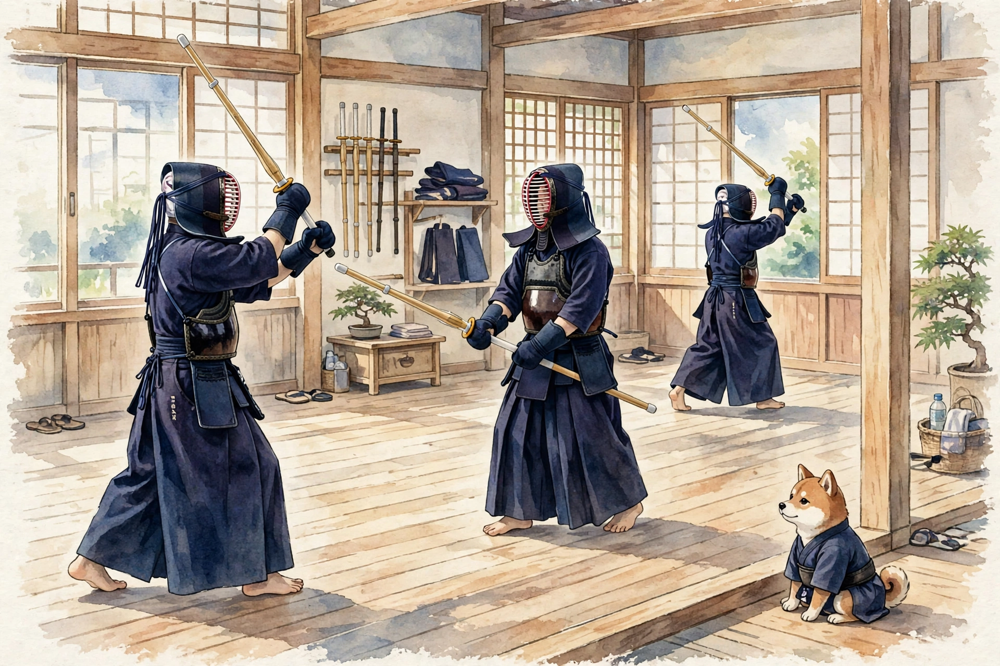
剣道は、竹刀（しない）を用い、防具を着けて相手と打ち合う武道です。決められた部位を正しく打つことだけでなく、姿勢や足さばき、相手との間合い、礼法まで含めて稽古する点に特徴があります。道具の名前は聞いたことがあっても、竹刀がどのような作りで、防具が何で構成され、稽古がどのような順序で進むのかは、始める前には分かりにくいものです。この記事では、剣道を「竹刀」「防具」「稽古の進め方」の三つに分けて整理し、初心者向けに解説します。ジャンル全体の中での剣道の位置づけは武道・武術のジャンル入門でも紹介しています。このポータルでは剣道は居合道とあわせて「剣道・居合」の区分で探せるため、刀を一人で扱う型の稽古が中心の居合道の特徴と歴史との違いもあわせて触れます。案内役は剣道・居合担当のはやてです。
剣道の源流は、武士が刀で戦う技術として伝えられてきた剣術にあります。江戸時代には、竹刀と防具を用いて安全に打ち合う稽古法が各地の道場で工夫され、明治以降は学校教育や警察などにも広がりながら、現在の剣道の形が整えられていきました。現在、段級位や試合の規則などの面で中心的な役割を担っているのが全日本剣道連盟です。
剣道の考え方を表す言葉として、全日本剣道連盟が示す「剣道の理念」――「剣の理法の修錬による人間形成の道」が知られています。勝敗だけを目的とするのではなく、稽古を通して姿勢や心構えを整えていく武道である、という位置づけです。実際の稽古でも、試合で一本を取る技術と並んで、礼法や所作、相手への敬意といった面が繰り返し扱われます。
竹刀は、竹を四つに割った素材を組み合わせ、革の柄（つか）と先革（さきがわ）、鍔（つば）などで構成された道具です。真剣の代わりに安全に打ち合えるよう工夫されたもので、稽古の中心的な道具になります。
竹刀や防具など道具全体の種類と手入れの考え方は、稽古着と道具の基礎知識｜道着・帯・防具などの種類と選び方の目安でも整理しています。剣道の道具はそろえる品目が多い分、買うタイミングと順序を入会先で確認することが大切です。
剣道の防具は、打突を受ける部位を守るための道具一式で、次の四つで構成されます。その下には剣道着（上着）と袴を着用します。
防具を着けるのは、入門してすぐとは限りません。多くの道場では、まず剣道着と袴、あるいは動きやすい服装で、礼法・足さばき・素振り・基本の打ち方を学び、段階が進んでから防具を着けての打ち合いに入ります。防具一式は費用もかかるため、購入の時期や、道場で貸し出されるかどうかは、見学・体験のときに必ず確認しておきたい点です。費用全体の確認の観点は見学・体験で確認したい料金と制度の見方｜入会金・月謝・休会・退会までも参考にしてください。
剣道の打突は、ただ竹刀を相手に当てればよいものではありません。試合や稽古で有効な一本として認められるには、一般に次のような要素がそろうことが求められると説明されます。
発声（気合いの声）も剣道の稽古の大きな特徴です。打突のときに打つ部位の名前を叫ぶなど、声を出しながら打つ形が基本の稽古に組み込まれています。声の大きさや出し方への戸惑いは、始める前の多くの方が感じるものです。道場の雰囲気の中では自然に慣れていく方が多いとされますが、見学のときに稽古の声の様子を眺めておくと、入会後のイメージがつかみやすくなります。発声を含む場の空気の読み方は稽古のマナーと礼儀の基礎でも触れています。
剣道は「礼に始まり、礼に終わる」と言われることがあるほど、礼法が稽古の流れに組み込まれています。道場への入退室の礼、稽古の始めと終わりの礼、相手との礼に加えて、竹刀の持ち方・置き方そのものにも作法があります。
作法の細部は道場によって異なるため、初めての方は周りの動きに合わせて同じように動けば問題ありません。道場全般に共通する挨拶や振る舞いの目安は稽古のマナーと礼儀の基礎｜初めての道場で戸惑わないための挨拶・礼・服装の目安でも整理しています。流派や道場ごとに伝統や礼法への重きの置き方が違う点は、流派で違う稽古の考え方｜型・組手・護身、それぞれを重視する理由と自分に合う方向の見方の観点とも重なります。
剣道の1回の稽古は、多くの道場で「礼・準備運動」「素振り」「基本打ちの稽古」「防具を着けての稽古（打ち込み稽古・互角稽古など）」「整理運動・礼」といった流れで進められます。その日の内容や道場の方針で配分は変わりますが、段階ごとの学び方はおおむね次のような順序です。
体験時の服装や持ち物、稽古全体の心構えは稽古を始める前に知っておきたいこと｜服装・持ち物・稽古の流れと心構えにまとめています。週に通う頻度の考え方は、週1回から始める組み立て方が基本です。頻度の目安は稽古の頻度と続け方の目安｜週1回から始める無理のない続け方もあわせてご覧ください。
大きな発声や、防具を着けての打ち合いへの不安は、始める前の多くの方が感じるものです。防具を着けるまでの段階づけがどうなっているかが見えると、その不安はほぐれやすくなります。見学では、まず初心者が防具なしでどのような稽古をしているかを眺めてみてください。
候補の道場を見学・体験する際は、はじめての道場選び、4つの確認ポイント（見学・体験の可否、目的との合致、通い続けられる場所か、費用と対象）に加えて、剣道ならではの次の点を確認すると、入会後のイメージがつかみやすくなります。
剣道の道場や教室を探す場合は、道場を探すで地域と「剣道・居合」のジャンルを絞り、地域から探すで通える範囲と組み合わせて候補を出してみてください。町の道場のほか、公共施設の教室や体育館を使う教室など、学ぶ場の形はさまざまです。はやてのように、まずは間合いを測る見学の一歩から、剣道の稽古は始まります。
この記事にはアフィリエイトリンクが含まれます。当サイトはAmazonアソシエイト・プログラムに参加しています。価格・在庫はリンク先でご確認ください。ここで紹介する商品は、運営者が実際に使った感想（体験談）ではありません。
居合道の「刀をどう扱い、稽古がどう進むのか」に絞った入門です。流派の成り立ちや歴史を扱った居合道紹介記事とは切り分け、木刀・模擬刀の段階、型の流れ、礼法、級・段の目安を整理しました。
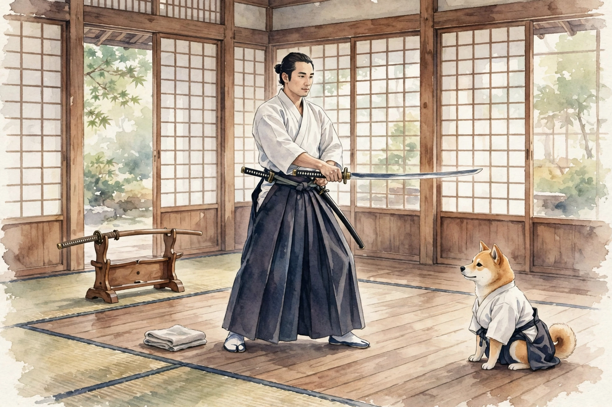
居合道は、鞘（さや）に収まった刀を抜くところから始まる型を、一人で繰り返す武道です。相手と打ち合う稽古ではなく、想定された場面の中で、抜刀、斬撃、血振い、納刀までの一連の動作と、その土台になる姿勢・呼吸・礼法を整えていく点に特徴があります。刀という道具を扱う武道であるため、「どの段階で、どのような刀を使うのか」「扱い方にどのような決まりがあるのか」が、始める前に分かりにくい点でもあります。この記事では、居合道を「刀の扱い」「型の流れ」「礼法」「稽古の進め方」の四つに分けて、初心者向けに一般的な解説として整理します。居合道の成り立ちや歴史については居合道の特徴と歴史｜抜刀・納刀の型と向いている人の目安にまとめていますので、この記事は「刀の扱いと稽古の進み方」に絞った、歴史編と対になる読み物として読んでください。ジャンル全体の中での居合道の位置づけは武道・武術のジャンル入門でも紹介しています。案内役は居合担当のはやてです。
居合道の型は、刀が鞘に収まった状態から始まります。座った姿勢から始まる座業（ざわざ）、膝をついた姿勢から始まる居合腰（いあいごし）の形、立った姿勢から始まる立業（たちわざ）など、型ごとに想定場面と出発の姿勢が決まっており、相手の動きを想像しながら自分の動作を整えていきます。全日本剣道連盟が定めた共通の型（全日本剣道連盟居合）を学ぶ道場もあれば、無双直伝英信流や夢想神伝流といった古流の型を中心に学ぶ道場もあり、学ぶ型の体系は所属する流派や団体で異なります。
居合道で使う刀は、稽古の段階に応じて種類が変わっていくのが一般的です。いきなり金属製の刀を持つことは少なく、段階を踏んで扱いに慣れていきます。どの段階で何を使うかは道場や流派の方針で異なるため、ここでは一般的な順序として整理します。
模擬刀は決して安い道具ではないため、入門時に慌てて買いそろえる必要は基本的にありません。「いつ頃、どのようなものを用意すればよいか」を見学や体験の段階で尋ねておくと、費用の見通しも含めて安心です。道具全体の種類と買うタイミングの考え方は稽古着と道具の基礎知識｜道着・帯・防具などの種類と選び方の目安でも整理しています。
居合道の型は、流派や型の種類によって細部は異なりますが、多くの型が次の要素の組み合わせで構成されます。型の名前や想定場面は流派ごとに受け継がれたものがあり、稽古では動作とあわせて想定の説明を受ける形が一般的です。
速く動くことよりも、姿勢が崩れない範囲で滑らかに、刃筋を通して動くことが重んじられます。同じ型でも、入門当初は順序をたどることで精一杯ですが、経験を重ねるにつれて、重心の移動や呼吸の合わせ方といった細部に意識が向いていく点が、居合道の稽古らしい進み方です。
居合道では、礼法が稽古の流れに深く組み込まれています。稽古の始めと終わりの礼に加えて、刀を受け取る・置く・持ち運ぶといった扱いの所作そのものが礼法として扱われる点が、道具を持つ武道ならではの特徴です。
作法の細部は流派や道場で異なるため、初めての方は周りの動きに合わせて同じように動けば問題ありません。道場全般に共通する挨拶や振る舞いの目安は稽古のマナーと礼儀の基礎｜初めての道場で戸惑わないための挨拶・礼・服装の目安でも整理しています。流派や道場ごとに伝統や礼法への重きの置き方が違う点は、流派で違う稽古の考え方｜型・組手・護身、それぞれを重視する理由と自分に合う方向の見方の観点とも重なります。
居合道の1回の稽古は、多くの道場で「礼・準備運動」「基本の所作や決められた型の反復」「指導者による型の確認」「整理運動・礼」といった流れで進められます。その日の内容や道場の方針で配分は変わりますが、段階ごとの学び方はおおむね次のような順序です。
体験時の服装や持ち物、稽古全体の心構えは稽古を始める前に知っておきたいこと｜服装・持ち物・稽古の流れと心構えにまとめています。週に通う頻度の考え方は、週1回から始める組み立て方が基本です。頻度の目安は稽古の頻度と続け方の目安｜週1回から始める無理のない続け方もあわせてご覧ください。
稽古の静けさは、居合道の魅力であると同時に、向き不向きが分かれる点でもあります。見学では、型を繰り返す稽古の空気感が自分に合いそうかを眺めてみてください。
候補の道場を見学・体験する際は、はじめての道場選び、4つの確認ポイント（見学・体験の可否、目的との合致、通い続けられる場所か、費用と対象）に加えて、居合道ならではの次の点を確認すると、入会後のイメージがつかみやすくなります。
居合道の道場や教室を探す場合は、道場を探すで地域と「剣道・居合」のジャンルを絞り、地域から探すで通える範囲と組み合わせて候補を出してみてください。剣道の道場に居合の稽古会が併設されている場合もあれば、居合道専門の団体・道場もあります。はやてのように、まずは静かに間合いを測る見学の一歩から、居合道の稽古は始まります。
杖道の「杖をどう扱い、稽古がどう進むのか」に絞った入門です。約128cmの木の杖を使う点、太刀と組んで型を行う稽古の形、神道夢想流杖術と全日本剣道連盟杖道という二つの流れを整理しました。
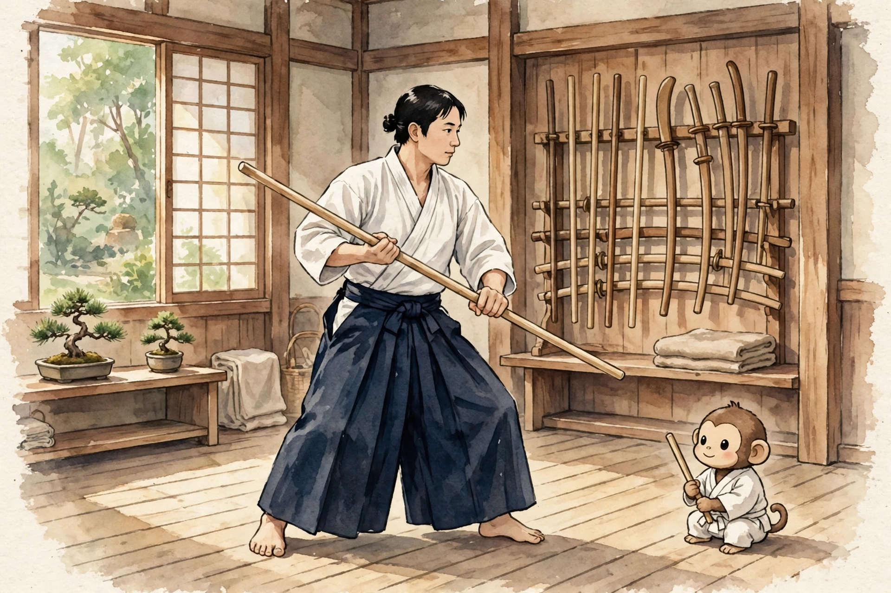
杖道は、長さ約128cmの木の杖（じょう）を両手で扱う武道です。刀を持った相手を想定し、杖で打つ・突く・払うといった動きを、相手役と組んで行う型の中で学んでいきます。杖は刀より長く素手より届く道具でありながら、持ち替えによって両端も中央も使えるため、間合いの取り方と持ち替えの滑らかさが稽古の中心になります。この記事では、杖道を「杖の特徴」「型稽古の形」「杖の扱い」「稽古の進め方」の四つに分けて、初心者向けに一般的な解説として整理します。よく似た名前の棒術との違いにも触れます。同じ武器術の仲間である棒術の成り立ちは棒術の特徴と歴史にまとめています。ジャンル全体の中での杖道の位置づけは、このポータルでは「古武道・武器術」の区分にあたります。武器術つながりの案内役は棒術担当のごん太です。
杖道の中心的な流派は、江戸時代初期に夢想権之助（むそうごんのすけ）が開いたとされる神道夢想流杖術（しんとうむそうりゅうじょうじゅつ）です。権之助が宮本武蔵との試合を経て杖の術を工夫したという話が伝承として語り継がれていますが、これはあくまで伝えられる話として受け取るのがよいでしょう。神道夢想流はその後、福岡の黒田藩で門外不出の武術として伝えられ、明治以降に少しずつ門戸が開かれていきました。
杖道で使う杖は、白樫（しらかし）などの木で作られた丸い棒で、長さは四尺二寸一分（約128cm）、太さは八分（約2.4cm）が標準とされています。身長にかかわらずこの寸法が基準になる点が、身長に合わせて長さを選ぶことの多い居合道の刀とは違うところです。
道具全般の種類と、買うタイミングの考え方は稽古着と道具の基礎知識｜道着・帯・防具などの種類と選び方の目安でも整理しています。
杖道の型は、杖を持つ側の「仕杖（しじょう）」と、太刀（木刀）を持つ側の「打太刀（うちだち）」の二人で一組になって行います。打太刀が太刀を振るい、仕杖がそれを受け、払い、打ち、突いて制する、という攻防の流れが一つの型として決められています。
二人で組む型は、相手の動きに合わせて自分の動きを整える稽古であり、一人で繰り返す居合道の型とは進み方が異なります。どちらが自分に合うかは、見学で型稽古の様子を眺めて比べるのが確実です。
杖道では、稽古の始めと終わりの礼に加えて、杖を受け取る・置く・持ち運ぶといった扱いの所作そのものが礼法として扱われます。相手と組んで太刀と杖を交える武道であるため、稽古相手への礼と、道具の安全管理が一体の作法になっています。
作法の細部は流派や道場で異なるため、初めての方は周りの動きに合わせて同じように動けば問題ありません。道場全般に共通する挨拶や振る舞いの目安は稽古のマナーと礼儀の基礎｜初めての道場で戸惑わないための挨拶・礼・服装の目安でも整理しています。
杖道の1回の稽古は、多くの道場で「礼・準備運動」「基本動作の反復」「二人で組む型の稽古」「整理運動・礼」といった流れで進められます。その日の内容や道場の方針で配分は変わりますが、段階ごとの学び方はおおむね次のような順序です。
体験時の服装や持ち物、稽古全体の心構えは稽古を始める前に知っておきたいこと｜服装・持ち物・稽古の流れと心構えにまとめています。週に通う頻度の考え方は、週1回から始める組み立て方が基本です。頻度の目安は稽古の頻度と続け方の目安｜週1回から始める無理のない続け方もあわせてご覧ください。
杖道は稽古人口の多い武道とは言えず、道場や教室の数自体は限られます。その分、見学の機会があれば、型稽古の空気感と指導の進め方をじっくり眺めてみてください。
候補の道場を見学・体験する際は、はじめての道場選び、4つの確認ポイント（見学・体験の可否、目的との合致、通い続けられる場所か、費用と対象）に加えて、杖道ならではの次の点を確認すると、入会後のイメージがつかみやすくなります。
杖道の道場や教室を探す場合は、道場を探すで地域と「古武道・武器術」のジャンルを絞り、地域から探すで通える範囲と組み合わせて候補を出してみてください。ごん太のように、まずは道具を手に取って構えてみる見学の一歩から、杖道の稽古は始まります。
新連載「武術・格闘家のためのトレーニング入門」の第1回です。道場の稽古と両立する自宅トレーニングの原則と、週2回・各20分の基本メニューを紹介します。案内役はボクシング担当のかん太です。

道場の稽古は技術を磨く時間です。型、基本、組手やスパーリングで動きを覚えるのが中心で、「筋力や体力の底上げ」まではなかなか手が回りません。そこで役立つのが、稽古のない日に自宅で10〜20分だけ行う補強トレーニングです。この連載では、武術・格闘技の稽古と両立できる自宅トレーニングの考え方とメニューを、道具の選び方とあわせて紹介します。第1回は全体の原則と、週2回の基本メニューです。案内役はボクシング担当のかん太です。
稽古で繰り返す動きは、その武術に特化した体の使い方を覚えるためのものです。一方で、突き・蹴りの土台になる脚力、組み合ったときに姿勢を保つ体幹、練習量を支えるスタミナといった基礎体力は、稽古だけでは伸びにくい部分があります。補強トレーニングは技術練習の代わりではなく、稽古で覚えた動きを安定して出すための土台づくりと考えるのが基本です。
A日（押す＋脚）
B日（引く＋体幹）
各種目の間は1分ほど休み、フォームが崩れたらそのセットは終了にします。「少し物足りない」くらいで終える日があって構いません。週2回を4週間続けられたら、回数かセットを少しだけ増やします。
月単位で「増やす週」と「抜く週」を作ると、稽古の予定とも合わせやすくなります。記録は回数とセット数だけで十分で、ノートやスマートフォンのメモに残すと変化が見えます。
最初から道具をそろえる必要はありませんが、一つ挙げるならプッシュアップバーです。床に直接手をつく形と比べて手首の角度が自然になり、体を深く下ろせる分だけ可動域を広く使えます。武術では手首を痛めると稽古そのものに響くため、手首への負担を抑えながら押す種目を行える点が、自宅補強と相性がよい部分です。置き場所も取らず、畳の脇や部屋の隅で使えます。
筋肉の材料になるたんぱく質は、トレーニングの有無にかかわらず食事から摂るのが基本です。運動習慣のある人の目安として、体重1kgあたり1.2〜1.6g程度という考え方が一般的に紹介されています（例：体重70kgなら84〜112g／日）。まずは普段の食事で肉・魚・卵・大豆製品を意識し、それでも足りない日や、稽古後すぐ食事が取れない場面でプロテインパウダーを使う、という位置づけが続けやすい使い方です。特定の商品や摂り方に効果を断定するものではありません。
第2回は「体幹」を取り上げます。突き・蹴りのときに軸がぶれる原因と、自宅でできる体幹メニューの組み立て方を紹介します。
※この記事にはアフィリエイトリンクが含まれます。当サイトはAmazonアソシエイト・プログラムに参加しています。価格・在庫はリンク先でご確認ください。紹介は一般的な選び方の観点からのもので、使用感の体験談ではありません。

回転式のグリップで手の向きを調整できるプッシュアップバー。本文の『押す種目』の道具として、手首の角度を自然に保ちたい人向けの選択肢です。
Amazonで見る
国内メーカー（明治）のホエイプロテイン。1食（28g）あたりたんぱく質19.5g（メーカー表示）。食事で足りない分を補う用途の定番品です。アンチドーピング認証『インフォームドチョイス』取得（メーカー表示）。
Amazonで見る連載「武術・格闘技のためのトレーニング入門」の第2回です。突き・蹴りのときに軸がぶれる原因と、自宅でできる体幹メニューの組み立て方を紹介します。案内役はボクシング担当のかん太です。

突きを打つと体が前に流れてしまう。蹴りを出すと軸足がぐらつく。組手で押されると、すぐに姿勢が崩れてしまう。こうした「軸のぶれ」は、手足の力不足というより、胴体の支えが弱いことが原因になっている場合があります。この回では、突き・蹴りの土台になる体幹の考え方と、自宅でできる具体的なメニューを紹介します。
体幹というと腹筋運動を思い浮かべる人が多いですが、武術・格闘技でいう体幹は、腹部の前側だけではありません。腹部の奥、背中、腰まわり、骨盤まわりの筋肉が一体になって、胴体を前後・左右・回旋の3方向から支えています。突きでは、足元から生まれた力を胴体を経由して拳へ伝えます。蹴りでは、軸足一本で体を支えながら、もう片方の脚を振り出します。どちらの動きも、胴体がぐらつけば力の通り道がゆがみ、手足の動きも小さくなります。体幹のトレーニングは「お腹を固くする」ことではなく、「動いている最中に胴体の形を保つ力」を育てることが目的です。
体幹の種目は、大きく分けて2つの考え方があります。一つは、プランクのように姿勢を保ち続ける「静止系」。もう一つは、手足を動かしながら胴体を安定させる「動作系」です。稽古の動きは常に動いているため、静止系だけで終わらせず、動作系も組み合わせるのが目安です。進め方のコツは3つあります。まず、呼吸を止めないこと。息を止めて力むと、動きの中で体幹が使えなくなります。次に、腰を反らせないこと。腰が反るのは、腹部の支えが抜けて腰だけで保とうとしている合図です。反ったら時間を短くするか、膝つきなどの軽い形に戻します。最後に、きつさよりも「形が保てている時間」を基準にすること。形が崩れた回数は数えず、そのセットは終えて次に進みます。
道具なしでできる基本メニューです。稽古のない日か、稽古の後の軽い補強として行います。各種目の間は30秒〜1分ほど休みます。
5種目すべてを毎回行う必要はありません。最初の2週間はプランク・デッドバグ・ヒップリフトの3種目から始め、慣れてきたらサイドプランクとバードドッグを足します。2〜3週間続けられたら、秒数か回数を少しだけ増やします。秒数と回数を同時に増やさず、どちらか一方だけを変えるのが、長く続けるコツです。
突きや投げには、体をひねる「回旋」の動きが含まれます。回旋の体幹は、腹斜筋と呼ばれる脇腹の筋肉が担います。回旋の練習としては、仰向けで膝を立て、両膝を左右にゆっくり倒す動きが取り組みやすいものです。左右各8回 × 2セットを目安に、腰が床から大きく浮かない範囲で行います。速く振るのではなく、倒す・戻すの両方をゆっくり行うことが大切です。回旋の種目は、腰に違和感がある日は無理をせず、翌日に回します。
基本メニューに慣れてきたら、バランスディスクを使うと、ぐらつきの中で体幹を保つ練習ができます。バランスディスクは、空気を入れた円形のクッションで、乗ると足元が不安定になります。空気の量で不安定さが変わるため、最初は空気を多めに入れて安定させ、慣れてきたら少し抜いて難しくする、という段階づけができます。使い方は3つあります。まず、椅子や床に座ってディスクの上に座り、骨盤を立てて座る練習。次に、ディスクの上に両足で立って、膝を軽く曲げた姿勢を保つ練習。壁や椅子の近くで行い、ふらついたらすぐにつかまれるようにします。最後に、慣れてきた人向けの片足立ち。片足で10〜20秒保てれば十分で、無理に長くはしません。床が滑りやすい場所では使わず、靴下ではなく裸足か、滑りにくい靴下で行います。ディスクの上でジャンプや急な動きはしません。
体幹メニューは、稽古の前日に強く追い込まないのが目安です。体幹に疲れが残ると、翌日の稽古で姿勢が崩れやすくなります。稽古のある日は、稽古の後に軽めに1〜2種目だけ行うか、稽古のない日に15分まとめて行う形が続けやすい組み合わせです。試合や審査の前週は、新しい種目を増やさず、いつものメニューを軽めにこなすだけにします。体幹は毎日鍛えるものではなく、週2〜3回の積み重ねで少しずつ変わる部分です。記録は秒数と回数だけで十分で、ノートやスマートフォンのメモに残すと、変化が見えるようになります。
第3回は「下半身」を取り上げます。蹴りと踏み込みの土台になる脚のトレーニングと、自宅でできる脚メニューの組み立て方を紹介します。
※この記事にはアフィリエイトリンクが含まれます。当サイトはAmazonアソシエイト・プログラムに参加しています。価格・在庫はリンク先でご確認ください。紹介は一般的な選び方の観点からのもので、使用感の体験談ではありません。

Amazon限定ブランドのバランスディスク。直径33cm、空気入れ付き。空気の量で不安定さを調整できるため、本文の「座る→両足立ち→片足立ち」の段階づけに合わせやすい選択肢です。耐荷重250kg（メーカー表示）。
Amazonで見る連載「武術・格闘技のためのトレーニング入門」の第3回です。蹴りと踏み込みの土台になる脚の考え方と、自宅でできる脚メニューの組み立て方を紹介します。案内役はボクシング担当のかん太です。
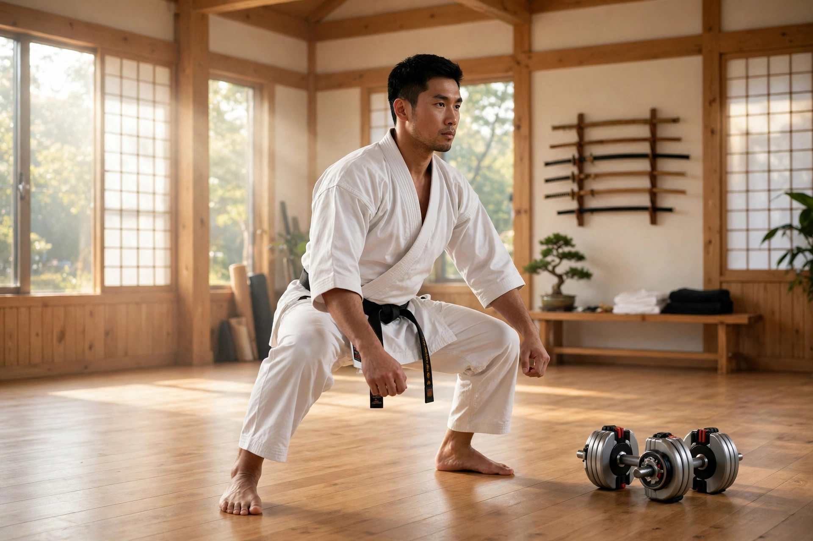
蹴りを打つと軸足がふらつく。踏み込んだ瞬間に膝が内側に入る。組手で前に出るとき、足がついてこない。こうした悩みは、脚の筋力そのものよりも、脚の使い方と土台の安定が整っていないことが原因になっている場合があります。この回では、蹴りと踏み込みの土台になる脚の考え方と、自宅でできる具体的なメニューを紹介します。
蹴りは脚を振り上げる動きに見えますが、実際には軸足で体を支え、床を押した力を腰の回転を経て蹴り足へ伝える動きです。軸足がぐらつけば、蹴り足の動きも小さくなります。踏み込みも同じで、前に出る一歩は、後ろ足で床を押す力と、着地した前足で体を受け止める力の両方でできています。脚のトレーニングは、太ももを太くすることではなく、「支える脚」と「動かす脚」の両方を、稽古の動きの中で使える形に整えることが目的です。
脚の種目は、3つの役割で考えます。一つは「支える」力。片足で立つ姿勢を保つ力で、蹴りの軸足や構えの安定に関わります。二つ目は「動かす」力。スクワットのように膝と股関節を曲げ伸ばしする力で、踏み込みや蹴りの推進力に関わります。三つ目は「受け止める」力。着地や踏み込みの瞬間に、膝や股関節で衝撃を受け止める力です。3つをバランスよく行うのが目安で、どれか一つだけを続けるより、3つの役割を週の中でそろえる形にします。進め方のコツは、まず自重でフォームを整えること。重さを足すのは、フォームが崩れずに決めた回数をこなせるようになってからです。
稽古のない日か、稽古の後の軽い補強として行います。各種目の間は1分ほど休みます。
5種目すべてを毎回行う必要はありません。最初の2週間はスクワット・カーフレイズ・ヒップリフトの3種目から始め、慣れてきたらスプリットスクワットとサイドランジを足します。2〜3週間続けられたら、回数を少しだけ増やすか、セットを1つ足します。回数とセットを同時に増やさず、どちらか一方だけを変えるのが、長く続けるコツです。
脚の筋力だけでなく、踏み込みの動きそのものも練習します。構えから前へ一歩踏み出し、着地した前足で体を受け止め、すぐに構えに戻る動きです。左右各6回 × 2セットを目安に、速さよりも着地の安定を優先します。着地のときに前足の膝が内側に入ったり、かかとが浮いたりしたら、一歩を小さくしてやり直します。後ろ足で床を押す感覚と、前足で受け止める感覚の両方を確かめながら行います。狭い部屋では、前に出す一歩を短くして行います。
自重のメニューに慣れてきたら、可変式ダンベルを使うと、1個で重さを変えながら負荷を足せます。可変式ダンベルには、ダイヤルを回して重さを変えるタイプと、プレートを付け替えるスクリュー式があります。ダイヤル式は種目ごとに重さを変えやすく、スクリュー式は価格を抑えて始めやすいのが特徴です。脚の種目で使うときは、ダンベルを胸の前で両手で持つゴブレットスクワットから始めるのが取り組みやすい形です。重さの選び方は、フォームが崩れずに決めた回数をこなせる重さから始め、回数が楽にこなせるようになってから一段重くします。使う前には、ダイヤルや留め具が正しく固定されているか毎回確かめます。床を傷つけないよう、マットを敷くか、台に置いて扱います。重さを変えるときは、ダンベルを床や台に置いた状態で行います。
脚メニューは、稽古の前日に強く追い込まないのが目安です。脚に疲れが残ると、翌日の稽古で踏み込みや構えが崩れやすくなります。稽古のある日は、稽古の後に軽めに1〜2種目だけ行うか、稽古のない日に20分まとめて行う形が続けやすい組み合わせです。試合や審査の前週は、新しい種目を増やさず、いつものメニューを軽めにこなすだけにします。脚は毎日鍛えるものではなく、週2回の積み重ねで少しずつ変わる部分です。記録は回数とセット数だけで十分で、ノートやスマートフォンのメモに残すと、変化が見えるようになります。
第4回は「引く力」を取り上げます。組技・投げの土台になる背中と握力のトレーニングと、自宅でできる引くメニューの組み立て方を紹介します。
連載「武術・格闘技のためのトレーニング入門」の第4回です。組技・投げの土台になる背中と握力の考え方と、自宅でできる引くメニューの組み立て方を紹介します。案内役はボクシング担当のかん太です。
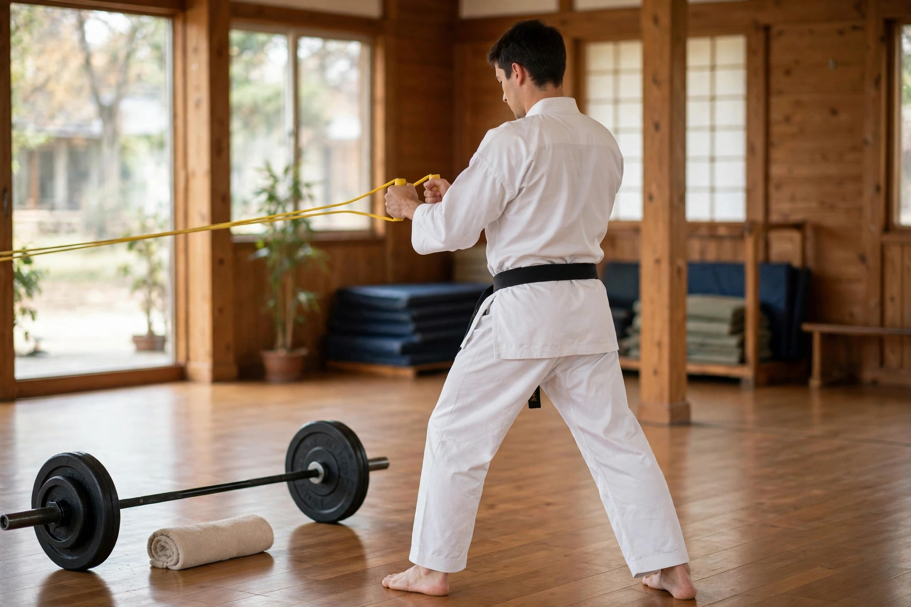
組み合うと、すぐに腕が疲れて握りがほどける。投げを掛けようとしても、相手が崩れてくれない。道着を掴む手に力が入らず、引き手が先に負けてしまう。こうした悩みは、腕の力そのものよりも、背中と握力の使い方、そして「引く力」の土台が整っていないことが原因になっている場合があります。この回では、組技・投げの土台になる背中と握力の考え方と、自宅でできる具体的なメニューを紹介します。
組技で相手を引き寄せるとき、腕だけで引こうとすると、腕の付け根や前腕が先に疲れます。引く動きの中心は、背中の筋肉です。背中が縮むことで肩甲骨が寄り、腕が体に引き寄せられます。腕は力を伝える部分で、力を生む中心は背中です。握力も同じで、手だけで握るのではなく、前腕から手のひら、指先までを連動させて握ります。引く力は「背中で引き、手で保つ」動きです。背中と握力の両方がそろうと、組んだ相手を崩す動きが、腕の力に頼らずにできるようになります。
引く種目は、3つの役割で考えます。一つは「引く」力。チューブや体を使って、物や体を自分の方へ引き寄せる力で、組技の引き手や投げの崩しに関わります。二つ目は「保つ」力。道着や相手を掴んだ握りを、稽古の間ずっと保ち続ける力です。短い時間の強い握りと、長く保つ握りは別の働きで、両方を練習します。三つ目は「ぶら下がる」力。自分の体重を手と腕で支える力で、握力と背中の連動を一度に使う練習になります。3つを週の中でそろえるのが目安で、どれか一つだけを続けるより、3つの役割をバランスよく行う形にします。進め方のコツは、まず軽い負荷・少ない回数でフォームを整えること。背中を使っている感覚がつかめないうちは、重さや回数を増やさず、ゆっくり引く・ゆっくり戻す動きから始めます。
稽古のない日か、稽古の後の軽い補強として行います。各種目の間は1分ほど休みます。
5種目すべてを毎回行う必要はありません。最初の2週間はチューブローイング・デッドハング・グリッパー握りの3種目から始め、慣れてきたら足つき懸垂とファーマーズウォークを足します。2〜3週間続けられたら、回数を少しだけ増やすか、セットを1つ足します。回数とセットを同時に増やさず、どちらか一方だけを変えるのが、長く続けるコツです。
握力は、いきなり強い負荷で鍛えるものではありません。段階を分けて進めます。まず「握る」段階。グリッパーやタオルを、決めた回数だけゆっくり握ります。次に「保つ」段階。握った状態を5〜10秒保ちます。保つ時間が長くなると、前腕に疲れが出ますが、保てなくなったらその場でやめます。最後に「ほどけない握り」の段階。デッドハングのように、自分の体重を手で支えながら、握りを保つ練習です。ぶら下がりの時間が少しずつ伸びれば、握りを保つ力が育っている目安になります。握力の練習は、毎日たくさん行うより、週2回のメニューの中で少しずつ積み重ねる形が続けやすい進め方です。手首や指に痛みが出たら、その日は握る練習を休みます。
引くメニューで使う道具の中心は、セラバンドのようなゴム製のバンドです。形は大きく2つあります。一つはチューブタイプ。細いゴムの管状で、手に巻いて使います。長さや太さで強さが分かれていて、弱い段階から選べるものもあります。もう一つは平たいバンドタイプ。幅のある平たいゴムで、手に巻いて使います。色ごとに強さが分かれているものが多く、購入前に商品ページの強度表示を確認します。使うときは、バンドをドアや柱に留めるか、足で踏んで固定します。引く方向は、正面から引く形から始め、慣れてきたら斜めや横からの向きも試します。使う前には、ゴムに傷や裂け目がないか毎回確かめます。ゴムが伸びきった状態で顔の近くに来ないよう、体の向きと距離に気をつけます。直射日光や高温の場所での保管は避け、ゴムの劣化を早めないようにします。
引くメニューは、稽古の前日に強く追い込まないのが目安です。背中や握りに疲れが残ると、翌日の稽古で組み合いや投げの動きが崩れやすくなります。稽古のある日は、稽古の後に軽めに1〜2種目だけ行うか、稽古のない日に20分まとめて行う形が続けやすい組み合わせです。試合や審査の前週は、新しい種目を増やさず、いつものメニューを軽めにこなすだけにします。引く力は毎日鍛えるものではなく、週2回の積み重ねで少しずつ変わる部分です。記録は回数とセット数、ぶら下がりの秒数だけで十分で、ノートやスマートフォンのメモに残すと、変化が見えるようになります。
第5回は「瞬発力」を取り上げます。プライオメトリクス入門として、跳ぶ・切り返す動きの考え方と、自宅でできる瞬発力メニューの組み立て方を紹介します。
※この記事にはアフィリエイトリンクが含まれます。当サイトはAmazonアソシエイト・プログラムに参加しています。価格・在庫はリンク先でご確認ください。紹介は一般的な選び方の観点からのもので、使用感の体験談ではありません。

チューブタイプのセラバンド。長さ1m、太さ7.2mm、強度レベル-1（メーカー表示の最も弱い段階）。天然ゴム製で、マニュアル付き（メーカー表示）。手に巻いて使う形で、本文の「軽い負荷から始める引く種目」に合わせやすい選択肢です。
Amazonで見る
平たいバンドタイプのセラバンド。色は青。幅のある平たい形で、手に巻いて使います。チューブタイプと形が違うため、引く種目のバリエーションを増やしたいときの選択肢です。強さは色ごとに分かれているため、購入前に商品ページの強度表示をご確認ください。
Amazonで見る連載「武術・格闘技のためのトレーニング入門」の第5回です。突き・蹴りの切れを生む瞬発力の考え方と、自宅でできるプライオメトリクス入門のメニューの組み立て方を紹介します。案内役はボクシング担当のかん太です。
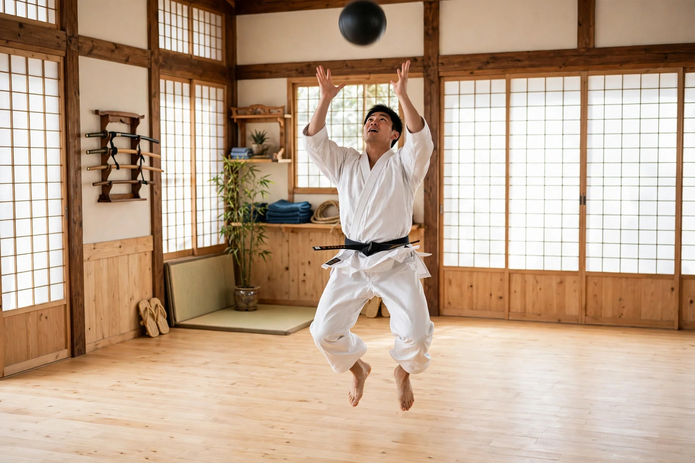
突きを出したのに、相手に読まれてかわされる。蹴りの切り返しが遅れて、次の動きにつなげられない。ジャンプして着地したときに体がふらついて、構えが崩れる。こうした悩みは、筋力が足りないのではなく、「短い時間で力を出す」瞬発力の使い方が整っていないことが原因になっている場合があります。この回では、瞬発力の考え方と、自宅でできるプライオメトリクス入門のメニューを紹介します。
筋力は「どれだけ大きな力を出せるか」ですが、瞬発力は「どれだけ短い時間で力を出せるか」です。突きや蹴りは、力を出す時間がとても短い動きです。ゆっくり大きな力を出せても、動きの瞬間に力を出し切れなければ、技の切れにはつながりにくい面があります。瞬発力のトレーニングでは、筋肉を一度伸ばしてから素早く縮める「伸張-短縮サイクル」と呼ばれる働きを使います。しゃがんでから跳ぶ、腕を引いてから投げる――こうした「ためてから出す」動きが、瞬発力の基本です。
プライオメトリクスは、跳ぶ・投げる・切り返すといった、短い時間で力を出す動きを繰り返すトレーニングの進め方です。3つの要素で考えます。一つ目は「ためる」。しゃがむ、腕を引く、体をひねるといった、力をためる姿勢です。二つ目は「切り返す」。ためた姿勢から、ためらわずに素早く動き出します。切り返しの速さが、瞬発力の練習の中心です。三つ目は「止まる」。着地や投げ終わりの姿勢を、ふらつかずに止めます。止まる練習を入れないと、動きが大きくなるほど着地が乱れやすくなります。進め方のコツは、回数を多くしないことです。瞬発力の種目は、1回1回に集中して行うため、疲れて動きが崩れてきたら、その日はそこで終えます。
稽古のない日か、稽古の後の軽い補強として行います。各種目の間は1分ほど休みます。床が硬い場所では、着地の衝撃が響きやすいため、マットや畳の上で行うか、低い高さから始めます。
5種目すべてを毎回行う必要はありません。最初の2週間はスクワットジャンプ・サイドホップ・着地練習の3種目から始め、慣れてきたらメディシンボールの2種目を足します。2〜3週間続けられたら、回数を少しだけ増やすか、セットを1つ足します。回数とセットを同時に増やさず、どちらか一方だけを変えるのが、長く続けるコツです。
瞬発力のメニューで使う道具の中心は、メディシンボールです。重さのあるボールで、両手で持って投げる・押し出す・受け止める動きに使います。重さの選び方は、軽めから始めるのが目安です。初めての場合は1〜3kg程度の軽いものから始め、投げ終わりの姿勢がふらつかずに止まれる重さを選びます。重すぎると、投げるフォームが崩れたり、受け止めるときに手首や指に負担がかかったりします。硬さは大きく2つあります。一つはハードタイプ。ゴム製で表面に凹凸があり、滑りにくいものが多く、床や壁に投げて跳ね返らせる使い方に向いています。もう一つはソフトタイプ。表面が柔らかく、受け止めるときの衝撃が和らぎやすいものが多く、室内での投げ合いの練習や、壁への投げに使われます。使うときは、投げる方向に人や壊れやすい物がないこと、床や壁を傷つけないことを毎回確かめます。集合住宅では、音や振動が下の階に伝わるため、時間帯や場所に配慮します。ボールの表面に傷やへたりがないかも、使う前に確かめます。
瞬発力のメニューは、稽古の前日に強く追い込まないのが目安です。跳ぶ・投げる動きで脚や体幹に疲れが残ると、翌日の稽古で突きや蹴りの動きが崩れやすくなります。稽古のある日は、稽古の後に軽めに1〜2種目だけ行うか、稽古のない日に15分まとめて行う形が続けやすい組み合わせです。試合や審査の前週は、新しい種目を増やさず、いつものメニューを軽めにこなすだけにします。瞬発力は毎日鍛えるものではなく、週2回の積み重ねで少しずつ変わる部分です。記録は回数とセット数、着地の安定感だけで十分で、ノートやスマートフォンのメモに残すと、変化が見えるようになります。
第6回は「スタミナ」を取り上げます。インターバルと縄跳びの組み立て方として、稽古で息が上がりにくくなるための考え方と、自宅でできるスタミナメニューの組み立て方を紹介します。
※この記事にはアフィリエイトリンクが含まれます。当サイトはAmazonアソシエイト・プログラムに参加しています。価格・在庫はリンク先でご確認ください。紹介は一般的な選び方の観点からのもので、使用感の体験談ではありません。

ゴム製のハードタイプのメディシンボール。表面に凹凸があり、滑りにくい作りです。重さは1.8kg、直径は約19.3cm（販売ページ表示）。同じシリーズで重さの違うものが選べるため、本文の「軽めから始める」という考え方に合わせやすい選択肢です。
Amazonで見る
ソフトタイプのウォールボール（メディシンボール）。表面が柔らかく、受け止めるときの衝撃が和らぎやすい作りです。重さは2kg〜10kgから選べるため、慣れてきたら重さを変えられる選択肢です。壁への投げや、室内での投げ合いの練習に使うときの選択肢です。
Amazonで見る連載「武術・格闘技のためのトレーニング入門」の第6回です。組手や乱取りで息が上がりにくくなるためのスタミナの考え方と、インターバルと縄跳びを組み合わせた自宅でできるスタミナメニューの組み立て方を紹介します。案内役はボクシング担当のかん太です。
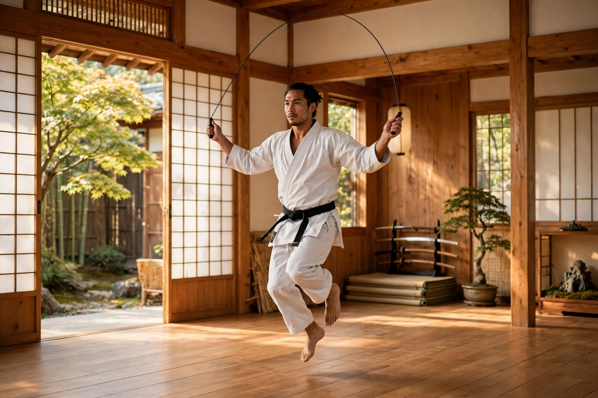
組手が始まって1分もたたないうちに息が上がって、構えが下がってしまう。乱取りの後半になると、足が止まって技が出なくなる。稽古の最後の方は、動くこと自体がつらくなって、受け身を取るのが精一杯になる。こうした悩みは、筋力が足りないのではなく、「動き続ける力」と「動きの合間に回復する力」が整っていないことが原因になっている場合があります。この回では、スタミナの考え方と、インターバルと縄跳びを使った自宅でできるスタミナメニューを紹介します。
スタミナというと、長い時間走り続けられる力だけを思い浮かべる人が多いかもしれません。けれど、武術や格闘技の稽古で求められるスタミナは、少し違います。組手や乱取りは、動く時間と、動きが止まる時間が交互に来る動きです。攻めて、離れて、また攻める。スタミナは、この「動く・休む」を繰り返す中で、動きの質を保ち続ける力です。もう一つ大事なのが、回復の速さです。動いたあとに息が整うまでの時間が短いほど、次の動きに早く入ることができます。息が上がったまま動くと、構えが崩れて、技の判断も遅れやすくなります。スタミナのトレーニングでは、この二つを一緒に育てます。動き続ける時間を少しずつ長くすることと、休んだときに息を整える力を育てることです。走るだけの練習では、組手のリズムにはつながりにくい面があります。動く時間と休む時間を区切って繰り返す「インターバル」の考え方が、稽古の動きに近い練習になります。
インターバルは、「動く時間」と「休む時間」をあらかじめ決めて、それを繰り返す練習の進め方です。たとえば、30秒動いて30秒休む、を繰り返します。組手のラウンドと同じように、動く時間と休む時間がはっきり分かれているのが特徴です。組み立ての目安は、動く時間と休む時間を同じ長さから始めることです。最初は30秒動いて30秒休む、を6回繰り返すくらいから始めます。慣れてきたら、動く時間を45秒、休む時間を30秒へと、少しずつ動く時間を長くします。休む時間は、ただ立ち止まるのではなく、ゆっくり歩いたり、肩を回したりして、体を動かしながら息を整えます。完全に止まってしまうと、次に動き出すときに体が重く感じやすくなります。進め方のコツは、最初のうちは「まだ余裕がある」と感じる速さで動くことです。最初から全力で動くと、途中で動けなくなって、回数をこなせなくなります。最後まで同じ速さで動けるペースを見つけることが、スタミナの練習の第一歩です。心拍数やタイムを測る必要はありません。自分の息の上がり方を目安にします。動く時間の終わりに「少し息が上がっているけれど、まだ話せるくらい」で、休む時間の終わりに息がだいたい整っている、という状態が目安です。
稽古のない日か、稽古の後の軽い補強として行います。縄跳びは、床に物がない広さを確かめてから行います。集合住宅では、下の階に音や振動が伝わらない時間帯と場所を選びます。
5種目すべてを毎回行う必要はありません。最初の2週間は基本の縄跳びとインターバル縄跳びの2種目から始め、慣れてきたら片足ずつのリズム跳びや、縄跳びとシャドーの組み合わせを足します。2〜3週間続けられたら、インターバルの回数を1回ずつ増やすか、動く時間を15秒だけ長くします。回数と動く時間を同時に増やさず、どちらか一方だけを変えるのが、長く続けるコツです。
スタミナのメニューで使う道具の中心は、縄跳びです。長さの合わせ方が、跳びやすさを大きく左右します。長さの目安は、縄の真ん中を片足で踏み、両端のグリップを脇の下あたりまで引き上げたときに、グリップが脇の下に届くくらいです。長すぎると縄が床に大きく当たり、短すぎるとつまずきやすくなります。多くの縄跳びは、グリップの部分で長さを調節できる作りになっています。初めて買う場合は、長さ調節ができるものを選ぶのが目安です。縄の種類は、大きく3つあります。一つはPVC製のロープ。軽くて扱いやすく、初めての人に向いている種類です。もう一つはワイヤー製のロープ。細くて回転が速く、速いリズムで跳ぶ練習に向いています。重さのあるロープは、縄の重さを感じながら跳ぶ練習に向いていますが、初めての場合は軽いものから始めるのが目安です。三つ目はエア縄跳び。ロープがなく、ハンドルだけを回して跳ぶ道具です。天井の低い部屋や狭い場所、音を立てられない時間帯に使えます。ロープが足に当たらないため、つまずきにくいのも特徴です。使うときは、周囲に人や壊れやすい物がないこと、床が滑らないことを毎回確かめます。屋外では、縄が地面に当たって傷むため、コンクリートの上では長持ちしにくい面があります。縄にねじれや傷がないかも、使う前に確かめます。
スタミナのメニューは、稽古の前日に強く追い込まないのが目安です。縄跳びやインターバルで脚や体幹に疲れが残ると、翌日の稽古でフットワークが重くなりやすくなります。稽古のある日は、稽古の後に軽めに1〜2種目だけ行うか、稽古のない日に20分まとめて行う形が続けやすい組み合わせです。試合や審査の前週は、新しい種目を増やさず、いつものメニューを軽めにこなすだけにします。スタミナは毎日鍛えるものではなく、週2〜3回の積み重ねで少しずつ変わる部分です。記録は、インターバルの回数と、動く時間の長さ、跳べた回数だけで十分で、ノートやスマートフォンのメモに残すと、変化が見えるようになります。
第7回は「柔軟性・可動域」を取り上げます。股関節と肩を開く考え方と、自宅でできる柔軟メニューの組み立て方を紹介します。
※この記事にはアフィリエイトリンクが含まれます。当サイトはAmazonアソシエイト・プログラムに参加しています。価格・在庫はリンク先でご確認ください。紹介は一般的な選び方の観点からのもので、使用感の体験談ではありません。

長さ3mで調節できる、標準タイプの縄跳び。ボールベアリング式のハンドルで回転が滑らかで、フォームグリップが手にフィットする作りです。本文の「長さを調節できるものを選ぶ」という考え方に合わせやすい選択肢です。
Amazonで見る連載「武術・格闘技のためのトレーニング入門」の第7回です。蹴りの高さと突きの届きに関わる柔軟性・可動域の考え方と、股関節と肩を開く自宅でできる柔軟メニューの組み立て方を紹介します。案内役はボクシング担当のかん太です。
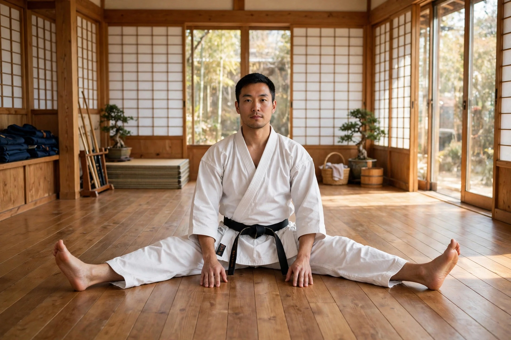
蹴りを高く上げようとすると、脚が途中で止まってしまう。型の蹴りで、軸足の膝が曲がってしまう。突きを伸ばしたときに、肩が上がってしまう。組手で相手の頭を狙う蹴りが出ない。こうした悩みは、筋力が足りないのではなく、股関節や肩の「動ける範囲」が狭いことが原因になっている場合があります。この回では、柔軟性と可動域の考え方と、股関節と肩を開く自宅でできる柔軟メニューを紹介します。
柔軟性というと、体が柔らかいかどうかだけを思い浮かべる人が多いかもしれません。けれど、武術や格闘技で求められるのは、開脚が180度できるかどうかではなく、自分の技に必要な範囲を、力まずに動かせるかどうかです。蹴りなら、蹴りたい高さまで脚を上げられること。突きなら、肩をすくめずに腕を伸ばせること。受け身なら、転がるときに体を丸められること。動ける範囲が狭いと、体は別の場所で無理に動いて補おうとします。股関節が開かない分を腰で反らしたり、肩が上がらない分を肘でごまかしたりします。そうした代わりの動きが続くと、腰や膝、肩に負担がかかりやすくなります。可動域を広げる目的は、技の見た目をきれいにすることではなく、体に無理のない動き方を取り戻すことです。柔軟性は、1日で変わるものではありません。少しずつ、毎日続けることで、少しずつ変わっていく部分です。
柔軟メニューの進め方で大事なのは、三つのことです。一つ目は、無理に広げないことです。痛みを感じる手前で止めて、そこから少しずつ慣らしていきます。痛いところまで押すと、体は守ろうとして筋肉を固くするため、かえって動きにくくなります。「気持ちいい」と感じるくらいの伸びが目安です。二つ目は、反動を使わないことです。体を勢いよく揺らして伸ばすやり方は、関節や筋肉に急な力がかかりやすく、稽古の前の準備運動としては向いていません。この回で紹介するメニューは、ゆっくりと伸ばして、その姿勢を保つ進め方です。三つ目は、呼吸とセットにすることです。息を止めて力むと、体は固くなります。伸ばすときにゆっくり息を吐き、保っている間も呼吸を続けます。息を吐くたびに、体が少しずつ緩んでいく感覚を確かめながら進めます。進み具合の目安は、回数ではなく「前より少し楽に同じ姿勢が取れるようになったか」です。数字を追うよりも、体の感覚を確かめることが、長く続けるコツです。
稽古のない日か、稽古の後の整理運動として行います。体が冷えている状態でいきなり深く伸ばさないのが目安で、軽く体を動かして温めてから始めます。畳やマットの上で、滑らない場所を選びます。
6種目すべてを毎回行う必要はありません。最初の2週間は開脚ストレッチとあぐらで膝を下げる、肩回しと胸開きの3種目から始め、慣れてきたら股関節の前後開きや壁を使った肩のストレッチを足します。2〜3週間続けられたら、保つ時間を5秒だけ長くするか、セット数を1つ増やします。時間とセット数を同時に増やさず、どちらか一方だけを変えるのが、長く続けるコツです。
柔軟メニューで使う道具は、フォームローラーとストレッチバンドの二つです。フォームローラーは、円筒形のローラーで、体の下に置いて体重をかけて転がす道具です。長さは30cm前後のものが自宅では扱いやすく、表面に凹凸のあるものは刺激が強めで、平らなものは穏やかな感触です。初めての場合は、平らに近いものや、やわらかめのものから始めるのが目安です。使うときは、ローラーの上にゆっくり体重をのせ、呼吸をしながら転がします。急に体重をかけると痛みを感じやすいため、両手や両足で支えながら、かける重さを調整します。ストレッチバンドは、長さ1m前後のゴムの帯やチューブで、足にかけたり、手で持ったりして、伸ばす方向へ体を導く道具です。色や太さで強さが分かれているものが多く、初めての場合は一番やわらかいものから選びます。バンドは、体を引っ張るためではなく、伸ばす姿勢を保つのを助けるために使います。バンドを強く引いて無理に伸ばすのではなく、バンドに軽く体重を預けて、呼吸とともに少しずつ伸ばすのが目安です。どちらも、使う前に傷や劣化がないか確かめ、床が滑らない場所で使います。
柔軟メニューは、稽古の前と後で役割が変わります。稽古の前は、体を動かす準備として、軽く体を温める動きと、短い時間のストレッチを組み合わせます。稽古の前に深く長く伸ばしすぎると、体が緩みすぎて、技のキレが出にくくなる場合があります。稽古の前は、肩回しや軽い開脚など、短いものを中心にします。稽古の後は、体が温まっているため、ゆっくりと長めに伸ばすのに向いています。稽古の後の15分を柔軟の時間にすると、続けやすい組み合わせです。試合や審査の前日は、新しい種目を増やさず、いつものメニューを軽めにこなすだけにします。柔軟性は、週3〜4回の積み重ねで少しずつ変わる部分です。記録は、開脚の角度や、肩の動きの感覚など、自分で分かる目安だけで十分で、ノートやスマートフォンのメモに残すと、変化が見えるようになります。
第8回は「首・肩の補強とケア」を取り上げます。組手や乱取りで負担のかかりやすい首と肩の補強の考え方と、自宅でできるケアのメニューを紹介します。
※この記事にはアフィリエイトリンクが含まれます。当サイトはAmazonアソシエイト・プログラムに参加しています。価格・在庫はリンク先でご確認ください。紹介は一般的な選び方の観点からのもので、使用感の体験談ではありません。

直径14cm・長さ33cmの円筒形フォームローラー。表面に凹凸のある作りで、太ももや背中の下に置いて体重をかけ、ゆっくり転がして使います。刺激が強く感じる場合は、両手や両足で支えてかける重さを調整するのが目安です。長さや硬さの表示は商品ページでご確認ください。
Amazonで見る
チューブタイプのセラバンド。長さ1m、太さ7.2mm、強度レベル-1（メーカー表示の最も弱い段階）。天然ゴム製で、マニュアル付き（メーカー表示）。足にかけたり手に持ったりして、伸ばす姿勢を保つのを助ける道具です。本文の「一番やわらかいものから選ぶ」という考え方に合わせやすい選択肢です。
Amazonで見る連載「武術・格闘技のためのトレーニング入門」の第8回です。組手や乱取りで負担のかかりやすい首と肩の補強の考え方と、自宅でできる首・肩のメニューの組み立て方を紹介します。案内役はボクシング担当のかん太です。
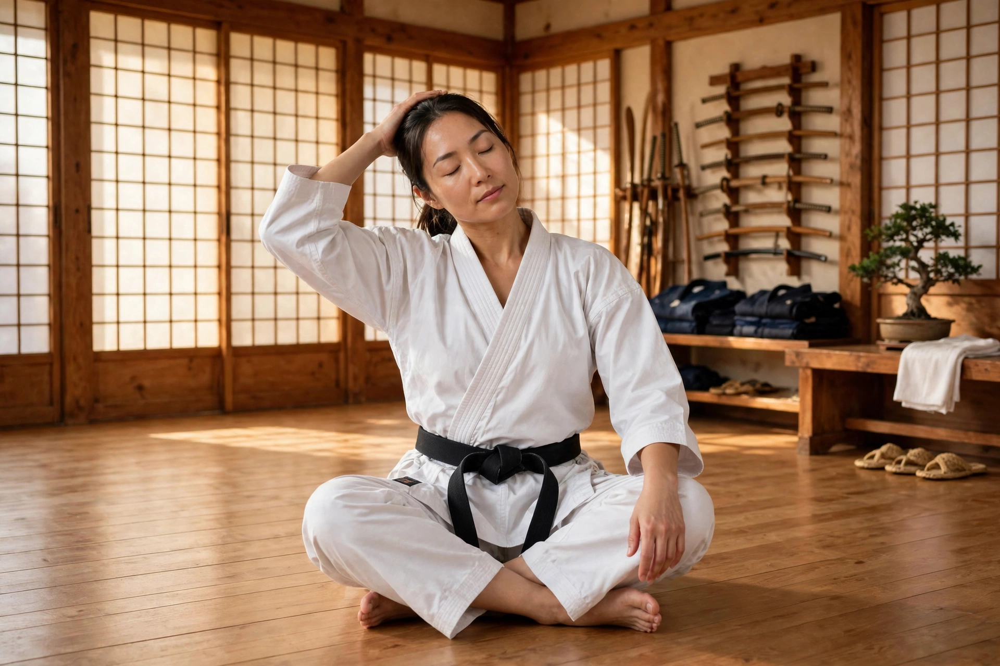
組手で相手の突きを受け止めたあと、首の後ろが張る。乱取りで組み合ったあと、肩が上がったまま下りない。型の受けで腕を大きく回すと、肩の前がつっぱる。寝技で頭を押さえられたあと、首が回しにくい。こうした悩みは、首や肩の筋力が足りないのではなく、首と肩まわりの「支える力」と「ほぐす時間」のバランスが崩れていることが原因になっている場合があります。この回では、首・肩の補強の考え方と、自宅でできる首・肩のメニューを紹介します。
首と肩は、武術・格闘技の動きの中で三つの役割を担っています。一つ目は、頭を支える役割です。頭の重さは体重のおよそ10分の1ほどとされ、首の筋肉はその重さを一日中支え続けています。稽古中は、姿勢が前かがみになったり、相手の動きに合わせて頭の向きを変えたりするため、首の後ろや横の筋肉には常に力が入っています。二つ目は、受け止める役割です。組手で相手の突きや蹴りを受けるとき、衝撃は腕から肩、肩から首へと伝わります。受けの形が崩れて肩がすくんだ状態だと、衝撃をうまく逃がせず、首や肩に負担が残りやすくなります。三つ目は、腕を動かす土台の役割です。突き・受け・投げの動きは、どれも肩甲骨の動きから始まります。肩甲骨が動かないまま腕だけを動かすと、肩の前側に力が集中し、動きのたびに肩が詰まった感じがします。首と肩は、こうした三つの役割を同時にこなしているため、疲れがたまりやすく、ケアを後回しにすると、稽古の翌日に重さや張りが残りやすくなります。この回で扱うのは、首と肩を「鍛える」ことと「ほぐす」ことの両方です。鍛えるだけでも、ほぐすだけでも片手落ちで、両方をセットで行うのが、長く稽古を続けるための組み立て方です。
首と肩の補強で大事なのは、三つのことです。一つ目は、軽い負荷から始めることです。首は体のなかでも細い部分で、重い負荷をいきなりかけると、痛みや違和感につながりやすくなります。チューブを使う場合も、一番やわらかいものから始め、手で押さえるだけの自重の動きから慣らしていきます。負荷を上げるのは、軽い動きを2〜3週間続けられてからで十分です。二つ目は、動かす範囲を大切にすることです。首や肩の筋肉は、動かさないでいると固まりやすく、固まったまま力むと、さらに動きにくくなります。補強のメニューには、力を入れる動きだけでなく、肩を大きく回す、首をゆっくり傾けるといった「動かす」動きを必ず入れます。三つ目は、鍛える時間とほぐす時間を分けることです。稽古の前は軽く動かして温めるのが中心で、負荷をかける補強は稽古のない日か、稽古の後の整理の時間に行います。稽古の直前に首へ強い負荷をかけると、稽古中の動きが硬くなる場合があります。進み具合の目安は、回数や重さではなく「稽古の翌日に首や肩の重さが残りにくくなったか」です。数字を追うよりも、稽古のあとの体の感覚を確かめることが、長く続けるコツです。
稽古のない日か、稽古の後の整理運動として行います。椅子に座るか、畳やマットの上に座って行い、滑らない場所を選びます。どの種目も、痛みを感じる手前で止めるのが目安です。
6種目すべてを毎回行う必要はありません。最初の2週間は首のゆっくり傾けと肩回し、肩甲骨寄せの3種目から始め、慣れてきたらチューブの種目を1つずつ足します。2〜3週間続けられたら、保つ時間を5秒だけ長くするか、セット数を1つ増やします。時間とセット数を同時に増やさず、どちらか一方だけを変えるのが、長く続けるコツです。
首・肩のメニューで使う道具は、チューブとフォームローラーの二つです。チューブは、ゴムの帯や管状のもので、引く強さが色や太さで分かれています。首や肩の補強では、一番やわらかいものから選ぶのが目安です。チューブを強く引いて無理に伸ばすのではなく、軽い抵抗を感じながら、ゆっくり動かすために使います。使うときは、チューブに傷や劣化がないか確かめ、両端をしっかり持って、滑らない場所で行います。手に巻いて使う場合は、巻いた部分がきつくなりすぎないようにします。フォームローラーは、円筒形のローラーで、体の下に置いて体重をかけて転がす道具です。首・肩のケアでは、肩甲骨のまわりや背中の上部に使います。首そのものの上に直接当てないのが目安で、首の付け根の少し下から、肩甲骨の間にかけて、ゆっくり転がします。長さは30cm前後のものが自宅では扱いやすく、表面に凹凸のあるものは刺激が強めで、平らなものは穏やかな感触です。初めての場合は、平らに近いものや、やわらかめのものから始めるのが目安です。使うときは、ローラーの上にゆっくり体重をのせ、呼吸をしながら転がします。急に体重をかけると痛みを感じやすいため、両手や両足で支えながら、かける重さを調整します。どちらも、使う前に傷や劣化がないか確かめ、床が滑らない場所で使います。
首・肩のメニューは、稽古の前と後で役割が変わります。稽古の前は、体を動かす準備として、首のゆっくり傾けや肩回しなど、軽く動かすものを中心にします。稽古の前に首へ強い負荷をかけたり、長く伸ばしすぎたりすると、体が緩みすぎて、受けの動きが鈍くなる場合があります。稽古の前は、短いものを中心にします。稽古の後は、体が温まっているため、チューブを使った補強や、フォームローラーでのほぐしをゆっくり行うのに向いています。稽古の後の10〜15分を首・肩の時間にすると、続けやすい組み合わせです。試合や審査の前日は、新しい種目を増やさず、いつものメニューを軽めにこなすだけにします。首・肩の重さや張りは、週2〜3回の積み重ねで少しずつ変わる部分です。記録は、肩の上がりやすさや、首の回しやすさなど、自分で分かる目安だけで十分で、ノートやスマートフォンのメモに残すと、変化が見えるようになります。
第9回は「栄養と回復」を取り上げます。稽古のあとのたんぱく質の摂り方の目安と、睡眠の整え方を紹介します。
※この記事にはアフィリエイトリンクが含まれます。当サイトはAmazonアソシエイト・プログラムに参加しています。価格・在庫はリンク先でご確認ください。紹介は一般的な選び方の観点からのもので、使用感の体験談ではありません。
平たいバンドタイプのセラバンド。色は青。幅のある平たい形で、手に巻いて使います。首の支えや肩の外回しのように、軽い抵抗でゆっくり動かす種目に合わせやすい選択肢です。強さは色ごとに分かれているため、購入前に商品ページの強度表示をご確認ください。
Amazonで見る
直径14cm・長さ33cmの円筒形フォームローラー。表面に凹凸のある作りで、肩甲骨のまわりや背中の上部の下に置いて体重をかけ、ゆっくり転がして使います。刺激が強く感じる場合は、両手や両足で支えてかける重さを調整するのが目安です。長さや硬さの表示は商品ページでご確認ください。
Amazonで見る連載「武術・格闘技のためのトレーニング入門」の第9回です。稽古と自宅補強を続ける人のための、栄養と睡眠による回復の基本を紹介します。案内役はボクシング担当のかん太です。
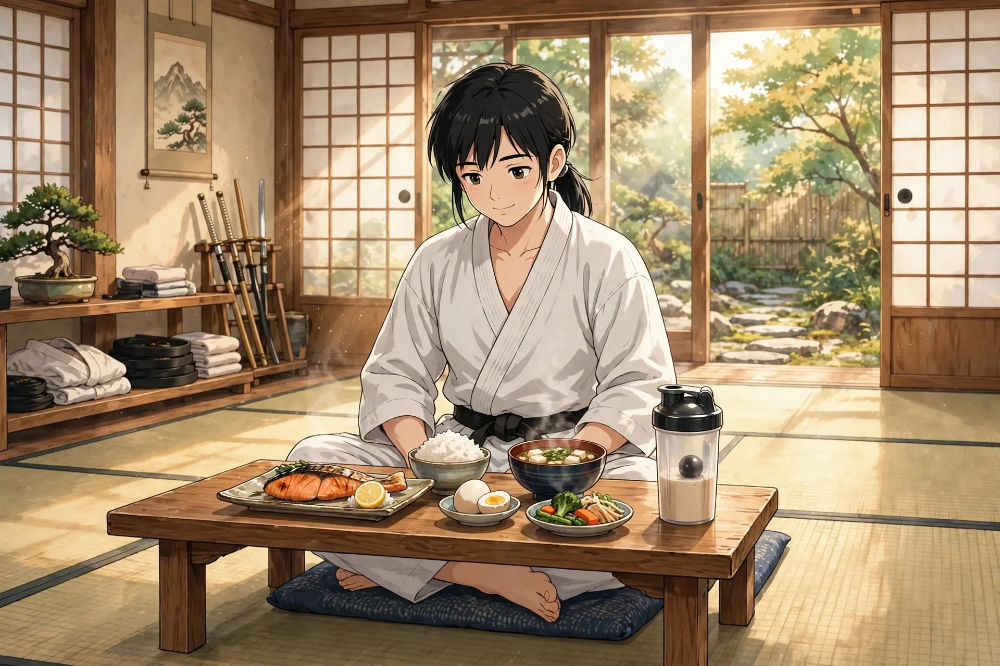
「道場で一生懸命に稽古をして、家でも補強運動を続けているのに、どうも疲労が抜けにくい……」「しっかり体を動かしているはずなのに、なかなか思うように体づくりが進まない……」
武術や格闘技の稽古に励む中で、このような壁に突き当たった経験はないでしょうか。
かん太「押忍！ ボクシング担当のかん太です！ 稽古を頑張るのは最高にカッコいいですが、体が重いままじゃ良い動きはできませんよね。今回は『回復』のお話です。しっかり学んで、明日の稽古に備えましょう！」
稽古でどれだけ自分を追い込んでも、疲労が残ったままでは次の稽古で十分な動きを見せることが難しくなります。今回は、稽古と自宅補強を並行して行う道場生・格闘家が知っておきたい「栄養と睡眠」による回復の基本について整理していきましょう。
武術や格闘技の稽古、そして自宅で行う補強運動（自重トレーニングや器具を使った補強など）は、体に「刺激」を与える作業です。稽古によって筋肉や体の組織には細かな負荷がかかり、エネルギーも消費されます。
この刺激を受けた体が、元通りの状態へ戻ろうとしたり、より強い負荷に耐えられるように変化したりするプロセスこそが「回復」であり「体づくり」です。そして、その回復プロセスを支える両輪となるのが「栄養（食事）」と「睡眠」です。
どれほど質の高い稽古や補強を行っても、体を構成する材料となる栄養が不足していたり、修復を行う時間である睡眠が足りなかったりすると、せっかくの努力の成果が得にくくなってしまうと考えられています。稽古・栄養・睡眠の3つをセットで捉えることが、日々の稽古を安全に続け、パフォーマンスを維持する土台となります。
回復や体づくりの材料となる代表的な栄養素が「たんぱく質」です。まずはその具体的な摂り方と1日の流れについて見ていきます。
たんぱく質は、筋肉をはじめとする皮膚、髪、内臓、骨など、人体のあらゆる組織を構成する重要な栄養素です。運動量が比較的多い人や、日常的に稽古を行っている人の場合、1日に必要なたんぱく質の量は「体重1kgあたり1.2〜2.0g程度」が一般的な目安として紹介されることが多くあります（※あくまで目安であり、健康状態や稽古の強度、目的によって個人差があります）。
体重70kgの人の場合、目安となる1日のたんぱく質摂取量は以下のようになります。・下限（1.2g/kg）：70kg × 1.2g ＝ 約84g ・上限（2.0g/kg）：70kg × 2.0g ＝ 約140g つまり、1日あたり約84〜140gのたんぱく質を目指す計算になります。
「運動直後にまとめて大量に摂れば良い」と考えがちですが、1度に体が消化・吸収できる量には限りがあると言われています。そのため、特定の一回だけにこだわりすぎず、「1日の必要総量を、朝・昼・晩の3食＋必要に応じた間食（補食）に分けて摂る」という考え方が基本です。
たとえば、体重70kgの人で1日あたり約100gを目指す場合の配分例です。・朝食：約25g（肉、魚、卵、納豆など） ・昼食：約30g（定食スタイルや肉・魚料理を中心に） ・夕食：約30g（バランスの良い主菜・副菜） ・間食 / 補食：約15g（手軽に摂れる食品など）
このように1日の中で細かく分けることで、体に途切れなく材料を供給するイメージを持ちましょう。
「稽古＋自宅での補強」を行う日の食事と回復の組み立て例です。
起床後にコップ1杯の水分を補給。朝食でしっかりたんぱく質とエネルギー源（炭水化物）を摂ります（例：ご飯、納豆、焼き魚、味噌汁）。
昼食をバランスよく摂ります。仕事や学業の合間に、必要に応じて補食（おにぎりや和菓子、ゆで卵など）を活用するのも一手です。
稽古の1〜2時間前までに軽めのエネルギー補給を済ませておきます。道場での稽古や自宅での補強運動を実施し、稽古中はこまめに水分補給を行います。稽古終了後は、できるだけ時間をおかずにバランスの良い夕食を摂り、体を労わりましょう。
スポーツ店やドラッグストアでよく見かける「プロテイン（粉末状のたんぱく質補給飲料）」ですが、これはあくまで「食事で不足したたんぱく質を補うための栄養補助食品（道具）」という位置づけです。
食事の代わりにプロテインだけで済ませてしまうと、ビタミン、ミネラル、食物繊維、エネルギー源となる炭水化物などが不足しがちになります。まずは普段の3食（肉、魚、卵、大豆製品、乳製品など）から栄養を摂るのが基本です。
・「忙しくて朝食の肉・魚類が十分に摂れなかったとき」 ・「稽古直後に帰宅が遅くなり、すぐ食事が摂れない場合のつなぎ」 ・「1日の必要量を目指しているが、食事だけでは目標量に届かないとき」
使い方は、指定された量の水や牛乳などに溶かして飲むのが一般的です。ご自身の1日の食事内容を振り返り、「足りない分を補う道具」として賢く利用することが推奨されます。
栄養と並んで、回復の成否を大きく左右するのが「睡眠」と「水分補給」です。
睡眠中には、疲労した体の修復に関わる様々なホルモンが分泌されるとされています。一般的には成人の睡眠時間は7〜9時間程度が推奨されることが多いですが、時間だけでなく質の良い睡眠を確保するための環境づくりが大切です。
1. 就寝前のスマートフォンやPCの閲覧を控える ― 画面から出る強い光（ブルーライト）は脳を覚醒させ、睡眠の質を低下させると言われています。就寝前の30分〜1時間程度は画面を見ない習慣を心がけるのが望ましいとされています。
2. 毎朝の起床時間をそろえる ― 休日に極端に遅くまで寝ていると、体内時計が乱れやすくなります。平日・休日問わず、起きる時間を一定に保つことがスムーズな入眠につながります。
3. 就寝直前の激しい運動や大量の食事を避ける ― 稽古や強度の高い補強運動を寝る直前に行うと、交感神経が優位になり寝付きにくくなります。稽古から就寝までは数時間あけるのが理想です。また、胃腸が消化活動を行っていると睡眠が浅くなるため、夕食は就寝の2〜3時間前までに済ませるのが望ましいとされています。
忘れがちなのが水分補給です。武術や格闘技の稽古では大量の汗をかきます。体内から水分が失われると、疲労感が増したりパフォーマンスの低下につながったりすることが知られています。稽古中はもちろん、稽古前後や日常の生活の中でもこまめに水やスポーツドリンクを口にし、脱水状態を防ぐ意識を持ちましょう。
かん太「押忍！ 稽古と同じくらい、食事と睡眠が大事なんですね！ 僕も今日の夜はスマホを早めに置いて、ぐっすり寝て明日からの稽古に備えます！」
稽古で体を追い込むことと同じくらい、しっかりと休めること・栄養を満たすことも武術家・格闘家としての重要なスキルです。「稽古・食事・睡眠」のサイクルをきっちり整えて、日々の稽古を一層充実させていきましょう。
次回、第10回はいよいよ本連載の総集編です！ 「目的別の週メニュー例」と題して、打撃系・組技系・自宅補強を中心とした具体的なスケジュールの組み方を分かりやすく解説します。どうぞお楽しみに！
※この記事にはアフィリエイトリンクが含まれます。当サイトはAmazonアソシエイト・プログラムに参加しています。価格・在庫はリンク先でご確認ください。紹介は一般的な選び方の観点からのもので、使用感の体験談ではありません。
国内メーカー（明治）のホエイプロテイン。1食（28g）あたりたんぱく質19.5g（メーカー表示）。食事で足りない分を補う用途の定番品です。アンチドーピング認証『インフォームドチョイス』取得（メーカー表示）。
Amazonで見る連載『武術・格闘技のためのトレーニング入門』の第10回（基本編・総集編）です。これまで9回の柱を目的別に組み合わせ、打撃系・組技系・総合系の週間メニュー例を紹介します。案内役はボクシング担当のかん太です。
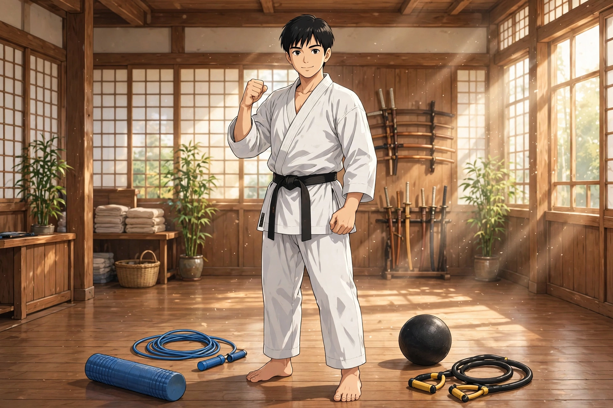
こんにちは！ボクシング担当の「かん太」です。連載「武術・格闘家のためのトレーニング入門」も、いよいよ第10回を迎えました。これまで第1回から第9回まで、自宅でも取り組める体づくりの基本について順番にお伝えしてきましたが、いかがでしたか？
読者の方からは「それぞれの種目のやり方はわかってきたけれど、普段の稽古や練習とどう組み合わせればいいのか迷ってしまう」「全部を毎日やろうとすると時間が足りないし、疲れが抜けない」といった声もよく耳にします。
確かに、限られた時間の中で道場やジムでの稽古を行いながら、筋力やスタミナ、柔軟性のトレーニングをすべてこなすのは簡単ではありません。そこで今回は基本編の総集編として、これまで学んできた要素を「打撃系」「組技系」「総合系」の3つの目的に合わせて整理し、1週間のメニューとして組み立てる考え方をご紹介します。ご自身の競技スタイルや生活リズムに合わせて、無理なく続けられる形を一緒に探していきましょう！
週間メニューを組み立てる前に、これまでの9回で取り上げてきたテーマを改めて整理しておきましょう。武術や格闘技の土台を支えるトレーニングは、大きく分けて次の「9つの柱」で構成されています。
これら9つの柱をすべて毎日全力で行う必要はありません。大切なのは、ご自身が取り組んでいる武術・格闘技の特性に合わせて「重点的に伸ばしたい要素」と「維持・ケアとして取り入れる要素」を振り分け、1週間のスケジュールの中でバランスよく配置することです。
ここからは、目的別に3つの週間メニュー例をご紹介します。いずれも、仕事や学業と両立しながら、道場やジムでの稽古（週2〜3回を想定）に加えて自宅などで補強トレーニングを行うイメージで組んでいます。回数やセット数は一般的な目安ですので、体力やその日の疲労度に合わせて調整してください。
方針：週2回の補強トレーニング／「体幹」「下半身」「瞬発力」を中心に構成
打撃系では、ステップワークや踏み込みを支える下半身、腰の回転を腕や足に伝える体幹、そして一瞬の踏み込みや連打に関わる瞬発力が特に重要になります。稽古でのミット打ちやシャドーと重なりすぎないよう、下半身の疲れを翌日に残しすぎないペース配分を意識します。
方針：週2回の補強トレーニング／「引く力」「握力」「スタミナ」を中心に構成
組技系では、道着や相手の体を掴んで引きつける力、組み合いの攻防で張り続けるための背中の筋力、そして息が上がりやすい長い膠着や連続した動きに耐えるスタミナが求められます。また、頭や首への負担がかかる場面も多いため、首周りのケアや補強も計画的に組み込みます。
方針：週3回の補強トレーニング／「9つの柱」をバランスよく回す
打撃・投げ・寝技のすべてが関わる総合系では、特定の要素だけに偏らず、全身の連動性とスタミナ、引く力と押す力のバランスが大切になります。補強の日を週3回設ける場合は、1回の練習時間を短め（20〜30分程度）に抑え、疲労を溜めすぎない工夫が有効です。
これまで紹介してきたように、自宅での補強トレーニングは自分の体重（自重）だけでも十分に行えますが、身近にあるシンプルな道具を目的別に組み合わせることで、刺激のバリエーションを広げることができます。
週間メニューを実践するうえで、何よりも優先していただきたいのが「ご自身の体調と安全性」です。
トレーニングや稽古を続けていると、筋肉痛による張りや疲労感が出ることがあります。軽い筋肉の疲労であれば休息やストレッチ、十分な栄養と睡眠で回復に向かいますが、関節に鋭い痛みがある場合や、特定の動きをすると違和感が走る場合は、決して無理をしてはいけません。痛みがあるときは該当する種目を中止し、迷わず休む勇気を持ってください。
また、寝不足や仕事・学業の忙しさから体調が優れない日、風邪気味のときなどもトレーニングはお休みしましょう。体調が万全でない状態で無理に体を動かすと、フォームが崩れて思わぬケガにつながりやすくなります。もし、休養を取っても痛みが引かない場合や、しびれ・強い腫れなどが続く場合は、自己判断で続けずに医療機関や専門家に相談してください。
今回ご紹介した週2回や週3回のメニュー、回数やセット数はあくまで「一般的な目安」です。道場での練習がハードだった週は補強を1回減らしてストレッチと睡眠に充てる、逆に練習に行けない週は自宅トレーニングを少し丁寧に行うなど、ご自身の生活と体の声に合わせて柔軟にアレンジしていくことが、長く安全に武術・格闘技を続ける秘訣です。
本記事は一般的なトレーニング情報であり、治療やリハビリの代わりにはなりません。
ここまでお読みいただき、ありがとうございます。再び「かん太」です！
全10回にわたってお届けしてきた「基本編」は、今回でひと区切りとなります。自宅での姿勢づくりから始まり、体幹、下半身、引く力、瞬発力、スタミナ、柔軟性、首・肩、そして栄養と回復、最後に目的別の組み立て方まで、武術・格闘技の土台となる要素をひと通り整理してきました。
最初からすべてを完璧にこなそうとしなくて大丈夫です。「まずは週に2回、自分のテーマに合ったメニューから試してみよう」という小さな一歩が、日々の稽古をより充実したものにしてくれます。焦らず、ご自身のペースで積み上げていきましょう！
そして次回からは、いよいよ「継続編」がスタートします。継続編では、基本編で学んだ内容をさらに深掘りし、部位別・種目別・目的別のテーマを1日1本ずつ、具体的で実践しやすい形でお届けしていく予定です。
次回のテーマは「フットワークの土台：ふくらはぎと足首のトレーニング」です。ステップの軽やかさや踏み込みの安定感に関わる足元をどう整えていくのか、一緒に学んでいきましょう。それでは、継続編でもまたお会いしましょう！かん太でした！
※この記事にはアフィリエイトリンクが含まれます。当サイトはAmazonアソシエイト・プログラムに参加しています。価格・在庫はリンク先でご確認ください。紹介は一般的な選び方の観点からのもので、使用感の体験談ではありません。
回転式のグリップで手の向きを調整できるプッシュアップバー。第1回で紹介した、自宅での押す種目の道具です。手首の角度を自然に保ちたい人向けの選択肢です。
Amazonで見る連載『武術・格闘技のためのトレーニング入門』の第11回（継続編・第1回）です。ステップが重くなる、踏み込みが安定しない――そんな悩みの土台になる、ふくらはぎと足首のトレーニングを紹介します。案内役はボクシング担当のかん太です。
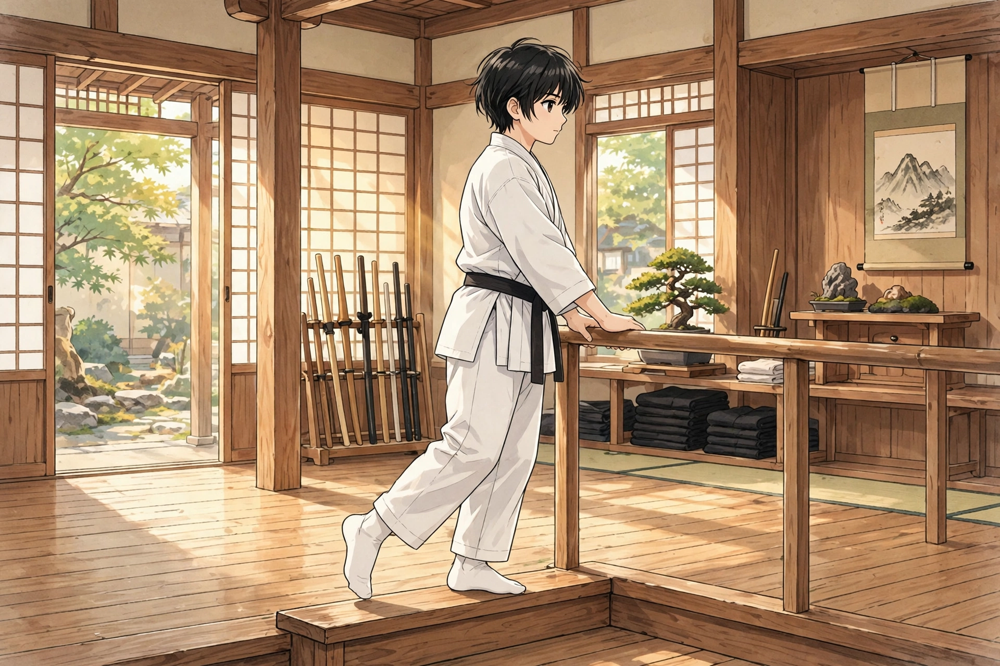
こんにちは、ボクシング担当のかん太です！連載「武術・格闘家のためのトレーニング入門」、今回から継続編のスタートです。第11回のテーマは「フットワークの土台：ふくらはぎと足首のトレーニング」。ボクシングの軽快なステップはもちろん、空手やさまざまな武術の踏み込み・立ち回りを支える「足元」に目を向けていきます。ぜひ普段の稽古を思い浮かべながら読んでみてくださいね。
日々の稽古やスパーリング、組手の中で、こんな感覚を覚えたことはないでしょうか。
技のキレや威力を高めようとするとき、どうしてもパンチや蹴り、投げといった上半身や大きな動作の練習に意識が向きやすくなります。しかし、どれだけ上半身のフォームを意識していても、その体を運び、支えている「足元」が不安定だったり疲労が溜まりやすかったりすると、思うような動きを最後まで維持しにくくなってしまいます。
格闘技のフットワークのトレーニングというと、ラダーを使った俊敏なステップや長時間の走り込みなどをイメージする方も多いかもしれません。もちろんそうした練習も大切ですが、そのさらに手前にある「ふくらはぎ」と「足首」の働きを整えておくことが、日々の稽古をスムーズに進めるための大切な土台になります。
武術や格闘技では、太ももやお尻、体幹といった大きな筋肉の重要性がよく語られます。たしかに強い踏み込みやバランス維持において、股関節周りや体幹が大きな力を生み出すことは間違いありません。ただ、その力を最終的に地面へ伝え、地面からの反発を受け止めているのは、体の末端にある「足元」です。大きな筋肉だけで動こうとするのではなく、足元の小さな動きや支える力を丁寧に育てておくことが、結果として全身の安定した動作を支える土台になります。
ここで、フットワークを支える「ふくらはぎ」と「足首」の役割を、一般的な視点から整理してみましょう。
まずふくらはぎは、主に「地面を押す力」と「ステップの切り返し」に関わるパーツです。たとえばボクシングのステップを軽く保ちたい場面や、空手などの立ち技で前後に素早く出入りしたい場面では、かかとを少し浮かせて母趾球（親指の付け根あたり）を中心に地面を捉え、リズムよく体を弾ませる動きが多くなります。このとき、ふくらはぎの筋肉がバネのように伸び縮みすることで、地面を押し返して次のステップへと切り返す動きを支えています。また、ステップを踏み続ける間はずっと働き続けるため、筋力だけでなく粘り強く動き続ける持久的な要素も求められます。空手におけるふくらはぎの鍛え方を考えるうえでも、ただ太く硬くするのではなく、「押して、受け止めて、また押す」というリズムを保てる状態を目指すことがポイントになります。
一方、足首は、「着地の安定」と「方向転換の土台」としての役割を担います。どれほどふくらはぎのバネが強くても、着地した瞬間に足首がグラグラと左右に揺れてしまっては、生み出した力が逃げてしまい、体勢も崩れやすくなります。武術における足首の強化は、前後左右や斜めへの移動、あるいは相手からの圧力を受け止めて踏ん張る場面で、足裏全体や特定の位置でしっかり地面を捉え続けるために欠かせません。また、足首には適度な柔軟性も必要です。足首が硬く動きが制限されていると、低い姿勢で踏み込んだときに重心が後ろに残りやすくなったり、急な方向転換の際に無理な角度で負担がかかったりすることがあります。
つまり、「地面を押し出して体を運ぶふくらはぎ」と、「着地を受け止めて次の方向へ繋ぐ足首」という2つの役割が噛み合うことで、はじめて軽やかで安定したフットワークの土台が整っていきます。
ここからは、自宅でも取り組みやすい具体的なトレーニングメニューを紹介します。いずれも一般的な運動として広く行われているもので、格闘技のフットワークトレーニングの基礎として取り入れやすい内容です。
① カーフレイズ（基本形）――ふくらはぎを鍛えるもっとも基本的な種目です。
目安：10〜15回 × 2〜3セット
② 片足カーフレイズ（片足版）――両足の基本形に余裕が出てきたら、片足ずつ行う形にステップアップします。左右それぞれの筋力やバランスの取りやすさの違いに気づきやすくなります。
目安：左右各8〜12回 × 2〜3セット
③ 段差を使ったカーフレイズ――平らな床よりも可動域を広く使ってふくらはぎを刺激する方法です。
目安：10〜15回 × 2〜3セット（慣れてきたら片足で行うこともできますが、負荷が高くなるため最初は両足から始めましょう）
④ 足首回し――足首の可動域を確認し、動きを滑らかにするための基礎的なケア・運動です。
目安：左右それぞれ内回し・外回し各10〜15回
⑤ つま先立ち歩き――足首の安定性と、ふくらはぎを使って姿勢を保つ感覚を養うメニューです。
目安：20〜30歩（または数メートル程度） × 2〜3セット
⑥ タオルギャザー――足裏のアーチや足指の細かな筋肉を使い、地面を掴むような感覚を育てるトレーニングです。
目安：タオル1枚分をたぐり寄せる動きを左右各2〜3回
⑦ バランスをとる片足立ち――着地や踏み込みで体勢が崩れにくいよう、足首周りで細かなバランスを調整する練習です。
目安：左右各20〜30秒 × 2〜3セット
組み合わせ例（週2〜3回・約10分）――これらのメニューをすべて一度にこなそうとすると大変なので、まずは週2〜3回を目安に、1回10分前後で終わる短い組み合わせから始めてみるのがおすすめです。
また、道場やジムでの稽古に組み込む場合は、「稽古前」と「稽古後・別日」で目的を分けると取り入れやすくなります。稽古前に行う場合は、筋肉を疲れさせることが目的ではありません。足首回しや軽い片足立ち、5回程度の軽いカーフレイズなど、足元の感覚を呼び覚まし、動きをスムーズにするためのウォーミングアップとして短時間で済ませるのが無難です。一方、回数やセット数をしっかりこなして筋力や粘り強さを養いたい場合は、稽古後に余裕があるときや、稽古のない別日の自宅トレーニングとして組み込む方が、メインの稽古で足が重くなるのを避けやすくなります。
足元のトレーニングは、専用のマシンや高価な器具がなくても、自宅にある身近なものだけで十分に取り組むことができます。
まず活用しやすいのが、階段や玄関の上がり框（あがりかまち）などの段差です。段差を使ったカーフレイズは、平地よりもふくらはぎを大きく伸ばしてから縮めることができるため、同じ回数でもしっかりとした手応えを感じやすくなります。階段で行う場合は手すりを握れる位置を選び、玄関などの段差を使う場合は壁に手を添えて、バランスを崩してもすぐに支えられる体勢をとってください。なお、分厚い本や踏み台などを代用する場合は、体重をかけたときに滑ったりグラついたりしないか、安定性をよく確認してから使うようにしましょう。
次に、フェイスタオルはさまざまな使い方ができる便利な道具です。先ほど紹介したタオルギャザーに使う場合、フローリングのような滑りのよい床の上で行うとスムーズにたぐり寄せやすくなります。反対にカーペットの上では引っかかりが強くなるため、場所によって難易度を調整することもできます。また、トレーニングの仕上げに仰向けに寝て、片方の足裏にタオルを引っ掛けて両手で手前に軽く引けば、ふくらはぎや足裏を心地よく伸ばすストレッチにも役立ちます。
もし自宅にトレーニング用のゴムチューブ（バンド）があるなら、足首の繊細な動きを養うのに応用できます。床に長座で座り、足裏のつま先側にチューブを引っ掛けて両手で端を持ちます。その状態からつま先を前へ押し出したり、チューブの角度を変えて足首を内側や外側にゆっくり動かしたりすることで、自分の力加減に合わせた適度な抵抗を加えることができます。このとき、強すぎる負荷で反動を使って動かすのではなく、足首の動きをコントロールできる程度の強さを選ぶのがポイントです。
もちろん、道具がまったくない状態でもできる形はたくさんあります。カーフレイズの基本形や片足版、つま先立ち歩き、足首回し、片足立ちはいずれも体ひとつあればその場で実践できます。タオルギャザーの代わりとして、椅子に座ったまま床の上で足の指を「グー・チョキ・パー」のように大きく開いたり閉じたりする運動や、裸足になって床を足指で軽く掴むような動きを繰り返すだけでも、足元への意識を高めるよい練習になります。まずは道具を使わない形から習慣にし、物足りなさや工夫の余地を感じたときに身近な道具を取り入れてみるのが長続きのコツです。
足元のトレーニングは地味に見えますが、体重のすべてを支える部位を扱うため、安全面や体調への配慮がとても重要です。以下の点に気をつけながら取り組んでください。
本記事は一般的なトレーニング情報であり、治療やリハビリの代わりにはなりません。
いかがでしたか？ステップワークや踏み込みの安定感、そして稽古の終盤まで動き続けられる粘り強さは、華やかな技の陰で体を支え続ける「ふくらはぎ」と「足首」の働きと深く関わっています。足元のトレーニングは一つひとつが小さく地味なものですが、週に2〜3回、1回10分ほどの短い時間でも丁寧に積み重ねていくことで、日々の稽古での「自分の足で地面を捉える感覚」が少しずつ確かになっていくはずです。焦らず、安全第一で続けてみてくださいね。
さて、足元から地面を押す力と安定の土台が見えてきたところで、次回はさらにその力を上半身の技へと伝えていくためのテーマに進みます。
第12回のテーマは「回旋の力：腹斜筋と体のひねり（突き・投げの回転）」です。足で踏ん張って生まれた力を、いかにして体幹のひねりを通じてパンチや突き、投げの回転へとつなげていくのか。そのための基礎トレーニングをわかりやすく紹介していきますので、どうぞお楽しみに！かん太でした！
※この記事にはアフィリエイトリンクが含まれます。当サイトはAmazonアソシエイト・プログラムに参加しています。価格・在庫はリンク先でご確認ください。紹介は一般的な選び方の観点からのもので、使用感の体験談ではありません。
足裏に引っ掛けて使うゴムチューブ。足首を前後・内外へゆっくり動かす練習で、自分の力加減に合わせた適度な抵抗を加えられる道具です。第4回で紹介したものと同じ商品です。
Amazonで見る連載『武術・格闘技のためのトレーニング入門』の第12回（継続編・第2回）です。突き・蹴り・投げの回転を支える腹斜筋と骨盤の安定の考え方と、ロシアンツイスト・サイドプランク・メディシンボールを使った回旋メニューを紹介します。案内役はボクシング担当のかん太です。
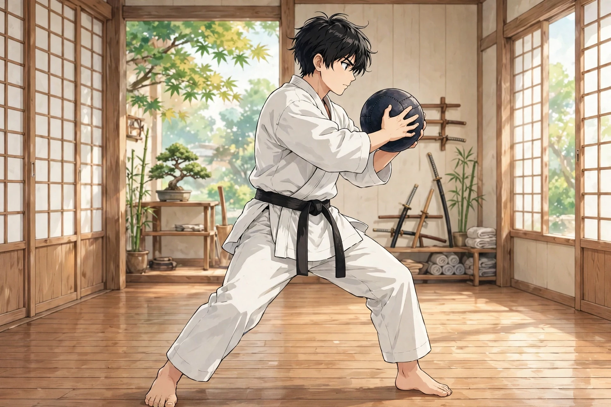
こんにちは！ボクシング担当のかん太です。連載「武術・格闘家のためのトレーニング入門」も第12回になりました。今回は、突きや蹴り、投げ技など、さまざまな競技で欠かせない「体のひねり（回旋）」をテーマにお届けします。
日々の稽古や練習の中で、こんな悩みを感じたことはありませんか？
これらは、空手やボクシング、柔道、そして各種の武術や格闘技に取り組む多くの方が一度はぶつかる、いわゆる「稽古あるある」ではないでしょうか。自分では全力で動いているつもりでも、鏡を見たり指導者から指摘されたりすると、「腕だけで打っている」「上半身と下半身がバラバラに動いている」と言われてしまうケースは少なくありません。
こうした悩みの背景には、筋力そのものの不足だけでなく、体をひねって力を伝える「回旋（かいせん）のコントロール」が関係していることがあります。手先や足先だけで技を出そうとするのではなく、体の中心部にある体幹からしっかりとひねりを生み出し、それをスムーズに受け止める土台をつくることが、格闘技における回旋トレーニングの大切な目的になります。
格闘技や武術において、突き・蹴り・投げといった技の回転は、腕や脚の筋肉だけで生み出されているわけではありません。たとえば、空手やボクシングのストレートやフック、武術における体のひねりを伴う突きでは、地面を踏みしめた足から伝わった力が、骨盤や背骨の回転を経由して、最終的に肩から腕、そして拳へと伝わっていきます。柔道などの投げ技でも同様に、相手を引き寄せて回転しながら崩す際には、体幹の力強いひねりと軸の安定が求められます。
この「体のひねり（回旋）」をつくる上で中心的な役割を果たすのが、お腹の横側に位置する「腹斜筋（ふくしゃきん）」です。腹斜筋には、表層にある外腹斜筋と、その深部にある内腹斜筋があり、これらが左右で斜めに交差するように走っています。片側の筋肉が縮み、反対側の筋肉が伸びることで、胴体を左右にひねったり、横に倒したりする動きが生まれます。
ここで重要なのが、「腰をひねる動き」と「骨盤の安定」はセットで働いているという点です。よく「腰を回して打て」「腰を入れて投げろ」と指導されることがありますが、解剖学的な視点で見ると、実は背骨の腰の部分（腰椎）自体は、構造上それほど大きく回旋するようにはできていません。主に大きく回旋するのは胸のあたりの背骨（胸椎）や股関節であり、腰のあたりはむしろ「グラつかないように支える（安定させる）」役割を担っています。
もし腹斜筋をはじめとする体幹の支えが弱い状態で、腕の力や勢いだけで体を無理に回そうとすると、土台となる骨盤や体幹が安定しないまま上半身だけがねじれるため、動きの連動が途切れて力が逃げやすくなるだけでなく、構造上あまりひねるのに向いていない腰まわりに過度なねじれや負担がかかりやすくなってしまいます。稽古の終盤で「なんだか腰が重だるく疲れる」と感じる場合、体の軸を保ちながらひねる支えが不足している可能性が考えられます。
つまり、腹斜筋の鍛え方を考える場合も、投げの回転を支える体幹を養う場合も、ただガムシャラに体をねじればよいというわけではありません。「お腹まわりと骨盤を安定させて軸を保ちつつ、腹斜筋の働きでスムーズに体をひねり、その動きをコントロールしてピタッと止める」というバランスを意識することが大切です。
ここからは、基礎的な腹斜筋のトレーニングから、全身の連動を意識した動きまで、具体的なメニューを紹介します。どの種目も、反動に頼らず「お腹の横側がしっかり使われている感覚」を確かめながら行うのがポイントです。
座った姿勢で上体をひねり、腹斜筋を集中的に刺激する定番のメニューです。
基本形のやり方：床に座り、両膝を軽く曲げて揃えます。背筋を伸ばしたまま、上体を後ろに少し（床と45度くらいを目安に）傾けます。このとき、背中が丸まりすぎないように注意します。お腹に力を入れてバランスを取りながら、両足を床から数センチほど軽く浮かせます。両手を胸の前で組み、息を吐きながら上体をゆっくりと右へひねります。このとき、腕だけを動かすのではなく、おへそから上の胸まわりごと左右に向ける意識を持ちます。息を吸いながら正面に戻し、続いて息を吐きながら左へひねります。
足を浮かせない軽めの形：足を浮かせる基本形ではバランスが取れず腰に力が入ってしまう場合や、運動に慣れていない段階では、両足のかかとを床につけたまま行います。かかとを床に置くことで骨盤が安定しやすくなり、腰への負担を抑えながら腹斜筋のひねりに集中できます。
回数・セット・頻度の目安：左右交互に1回ずつひねって1往復とし、10〜15往復を目安に2〜3セット行います。週に2〜3回のペースが一般的です。
体をひねる力だけでなく、回転したときに軸がブレないように支える「安定性」を養う種目です。蹴りや投げで片足立ちになったときにも体幹が崩れにくくなる土台づくりに役立ちます。
基本形のやり方：横向きに寝て、下側の肘を肩の真下につきます。前腕は体の正面に向けて床に安定させます。両足を伸ばして上下に重ねるか、バランスが取りにくい場合は上の足を少し前にずらして床につけます。お尻を床から持ち上げ、頭からかかとまでが一直線になるように姿勢を保ちます。お尻が後ろに引けたり、下に落ちたりしないように、下側のお腹の横（腹斜筋）とお尻に軽く力を入れます。呼吸を止めずに、自然な呼吸を繰り返しながらキープします。
膝つきの軽めの形：足先まで伸ばす基本形がきつい場合や、肩にばかり力が入ってしまう場合は、両膝を軽く曲げて膝から先を後ろに流し、下側の膝と肘で体を支える形で行います。頭から膝までが一直線になるように意識すれば、無理のない負荷で腹斜筋の支える感覚を養えます。
回数・セット・頻度の目安：左右それぞれ20〜30秒程度のキープを目安に、2〜3セット行います。週に2〜3回が目安です。
実際の突きや投げと同じ「立った姿勢」で、骨盤の安定と上半身のひねりをコントロールする練習です。
やり方：足を肩幅より少し広めに開いて立ち、膝をほんの少しだけ緩めます（突っ張らないようにします）。両腕を胸の前で組むか、軽くファイティングポーズのように構えます。下半身（膝の向きや骨盤）が左右に大きくブレないように軽く踏みしめたまま、息を吐きながら胸から上を右へひねります。次に息を吸いながら正面に戻り、反対側へも同様にひねります。慣れてきたら、ひねる側と反対の足のかかとを少し浮かせて股関節から一緒に回す形と、骨盤を正面に固定して胸まわりだけをひねる形の2パターンを試すと、動きの違いが分かりやすくなります。
回数・セット・頻度の目安：左右交互に10〜20往復を目安に、2〜3セット行います。負荷が軽いため、稽古前のウォーミングアップとして取り入れるのも適しています。
少し重さのあるボールを使うことで、体幹から生み出した力を腕や手先へ伝える連動性を意識しやすくなります。
やり方：足を肩幅程度に開いて立ち、両手でボールを胸の前（またはお腹の前）で抱えます。肘を張りすぎず、脇を軽く締めておきます。後ろ足の親指の付け根あたりで軽く地面を押し、股関節と体幹をひねりながらボールを横方向へ移動させます。腕の力だけでボールを振るのではなく、胴体の回転に腕がついてくるイメージで行います。反対側へも同様に、下半身から体幹、腕という順番で連動させてひねりを切り返します。慣れてきたら、斜め下から斜め上へ引き上げるような軌道（投げ技の崩しに近い軌道）や、斜め上から斜め下へ振り下ろす軌道を取り入れると、多角的な回旋の動きを練習できます。
回数・セット・頻度の目安：左右10回ずつ（合計20回）を目安に、2〜3セット行います。スピードを上げすぎず、ピタッと止めるコントロールを意識する場合は週2〜3回が目安です。
自分の回転が「体ごと流れていないか」を確認しながら、コンパクトにひねりを出すための練習です。
やり方：壁に向かって正対し、壁からこぶし1〜2個分ほど離れた位置に立ちます（構えのスタンスでも、両足を揃えた平行立ちでも構いません）。両手を胸の前で合わせるか、構えの位置に置きます。顔や鼻が壁にぶつからないよう注意しながら、その場で体を左右にひねります。前に突っ込んだり、軸が左右に傾いたりすると、肩や肘が壁に当たりやすくなります。壁にぶつからずに、頭のてっぺんから骨盤まで貫く一本の軸の上でクルッと回旋できる感覚を確かめます。
回数・セット・頻度の目安：ゆっくりした動作で左右10往復を1〜2セット行います。負荷はほとんどないため、毎日の確認作業として取り入れることもできます。
忙しい毎日の中で継続するためには、1回あたりの時間を短くまとめるのがコツです。
自宅で行う短いメニュー例（週2〜3回・約10分）：立ったままの体ひねり：15往復 × 2セット（動きの確認・準備）／サイドプランク（基本形または膝つき）：左右20〜30秒 × 2セット（支える力）／ロシアンツイスト（基本形またはかかと着き）：10〜15往復 × 2セット（ひねる力）
稽古の前後に組み込む場合の考え方：稽古の「前」に取り入れる場合は、筋肉を疲れさせすぎないことが大切です。たとえば「壁に向かって行うひねりの練習」や「立ったままの体ひねり」を1〜2セットだけ行い、体幹が動きやすい状態をつくってから基本稽古やミット打ちに入ると、ひねりの感覚をつかみやすくなります。反対に、ロシアンツイストやサイドプランク、メディシンボールを使ったやや負荷の高いメニューは、稽古で疲労した状態で行うとフォームが崩れやすいため、稽古のない日（オフの日）に集中して行うか、稽古の「後」に軽めのセット数で実施する方が安全に続けやすいでしょう。
先ほどのメニューではメディシンボールを紹介しましたが、自宅に専用の器具がなくても、身近なもので代用したり、道具を使わずに工夫したりすることが可能です。
ペットボトルやクッションでの代用（メディシンボールの代わり）：水を入れたペットボトル（500ミリリットル〜2リットル程度、中身が漏れないようキャップをしっかり閉めたもの）や、少し重みのあるクッション、あるいは雑誌を重ねて紐や袋でまとめたものなどは、ロシアンツイストや立ったままの体ひねりで「手先に少し重りを持つ」練習に活用できます。重いものを選ぶ必要はなく、500グラム〜2キログラム程度の軽い負荷でも、腕を伸ばさずに体の近くで抱えてひねることで、体幹の連動を感じやすくなります。
トレーニングチューブを使った工夫：もし自宅に弾力のあるトレーニングチューブがある場合は、柱や丈夫なドアノブ（反対側から開かないように確認した上で）に結びつけ、横向きに立ってチューブを両手で握り、体の中心の前で腕を伸ばしたまま、チューブの張力に逆らって体をひねる（またはひねられずに耐える）練習ができます。ゴムの引っ張る力が加わることで、投げ技で相手を引き崩すときの「引き手と釣り手の連動」や、打ち終わりに戻す力への抵抗を感じやすくなります。
道具がなくてもできる工夫：道具が一切ない場合でも、自分の手やタオルを使うことで十分に工夫が可能です。たとえば、フェイスタオルを肩幅ほどの長さで両手でピンと左右に引っ張りながら「立ったままの体ひねり」を行うと、肩甲骨まわりと体幹が連動しやすくなり、腕だけでひねる癖を抑える助けになります。また、手を軽く握って空中で突きや引きの動きをイメージしながらゆっくり回旋するだけでも、自重を使った立派な回旋トレーニングになります。
体のひねりを伴うトレーニングは、正しく行えば技の土台づくりに役立ちますが、やり方を誤ると腰や背中に負担がかかりやすい側面もあります。以下の点に気をつけて取り組みましょう。
本記事は一般的なトレーニング情報であり、治療やリハビリの代わりにはなりません。
ここまで、腹斜筋の働きと骨盤の安定、そして具体的な回旋トレーニングについて見てきました。
改めまして、かん太です！パンチを打つときも、蹴りや投げ技を繰り出すときも、「腕や足だけで頑張らないで、体の中心からひねって伝える」という意識を持つだけで、稽古での感覚が少しずつ変わってくることがあります。もちろん、1回や2回トレーニングしただけですぐに動きが劇的に変わるわけではありませんが、軽いメニューからコツコツと回旋の土台づくりを続けていくことで、安定した軸とスムーズな体のひねりが身につきやすくなります。まずは週に2回、10分程度の短い時間からでも、無理のない形で取り入れてみてくださいね。
さて、次回は第13回「前腕と握力の段階練習：懸垂に向けた引く力づくり」をお届けします。組技での引きつけや、パンチを打つ際の手首の安定にも関わる「握る・引く力」を、段階的に養う方法をご紹介しますので、ぜひお楽しみに！
※この記事にはアフィリエイトリンクが含まれます。当サイトはAmazonアソシエイト・プログラムに参加しています。価格・在庫はリンク先でご確認ください。紹介は一般的な選び方の観点からのもので、使用感の体験談ではありません。
連載『武術・格闘技のためのトレーニング入門』の第13回（継続編・第3回）です。道着を掴んでもすぐ手が開いてしまう、懸垂が1回もできない。そんな悩みの土台になる前腕と握力の考え方と、ぶら下がり・タオル・チューブを使った段階別の練習メニューを紹介します。案内役はボクシング担当のかん太です。
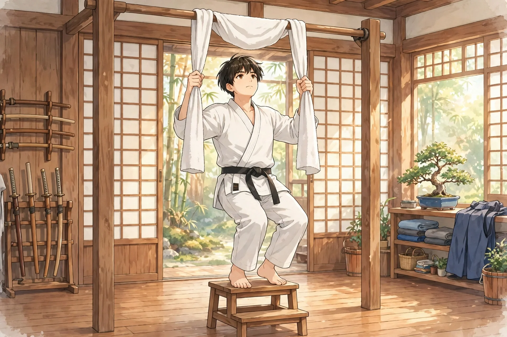
こんにちは！『武術・格闘技のためのトレーニング入門』の案内役、ボクシング担当のかん太です！継続編もいよいよ第3回になりました。ボクシングをしている僕から見ても、パンチを打つ瞬間に手首をぐっと安定させたり、ガードを固めたりするとき、実は「前腕」と「握る力」がすごく大切な役割を果たしています。そして、柔道や柔術、レスリング、古流の武術など、相手を掴んだり引き寄せたりする競技ならなおさらですよね。
道場やジムで稽古をしている皆さんから、こんなお悩みを聞くことはありませんか？「柔道の組手で道着を掴んでも、相手に払われるとすぐに手が開いてしまう……」「組技の攻防で相手を引きつけたいのに、腕がすぐパンパンになって引く力が続かない」「道場の補強で懸垂をやることになったけれど、1回も体が持ち上がらない！」これ、すごくよくわかる「稽古あるある」なんです。特に、これから武術や格闘技を始める方や、稽古を始めて間もない方にとって、「自分の体重を腕と背中で持ち上げる」という懸垂の動きは、想像以上にハードルが高く感じられるものです。
でも、焦る必要はありません！懸垂ができないからといって、いきなり無理にバーへ飛びついたり、力任せに反動をつけたりしても、狙った場所にうまく刺激が入らないことが多いんです。大切なのは、前腕や握力、そして「引く力」を段階的に育てること。今回は「前腕と握力の段階練習：懸垂に向けた引く力づくり」をテーマに、柔道の握力トレーニングや格闘技における前腕の鍛え方、さらには懸垂ができないときのトレーニング方法まで、自宅と道場の練習をつなぐステップを一緒に確認していきましょう！
具体的なメニューに入る前に、まずは「なぜこの練習をするのか」という考え方を整理しておきましょう。理由がわかっていると、自宅での地味な補強トレーニングもぐっと前向きに取り組みやすくなりますよ！
武術における握力強化や前腕のトレーニングというと、「リンゴを潰すような強い握力」をイメージするかもしれません。もちろん一瞬でぐっと握り込む力も大事ですが、実際の稽古でよく使われるのはもう少し違った性質の力です。たとえば、柔道や柔術のように道着を掴む場面では、相手の動きに合わせて「指を引っ掛けた状態を長く維持する力」が求められます。また、組技で手首をコントロールしたり、打撃系の格闘技で拳を握り込んで手首の角度を保ったりするときには、手のひらを閉じる力だけでなく、手首を反らしたりひねったりして支える「前腕全体の安定感」が活きてきます。武器術を稽古している方であれば、木刀や棒を振ってピタッと止める瞬間に、指先から前腕にかけての連動したコントロールが欠かせません。つまり、武術や格闘技では「ただ強く握る」だけでなく、「必要なときにしっかり支え、しなやかに維持する」ための前腕と握力の使い方が大切になってくるのです。
懸垂は、自分の体重を腕だけで引っ張り上げる種目と思われがちですが、実はメインで働くのは「背中（広背筋や僧帽筋など）」の大きな筋肉です。しかし、背中の筋肉がどれだけ力を発揮しようとしても、バーを掴んでいる「手（握力）」や「前腕」が先に疲れて離れてしまっては、その力を伝えることができません。また、相手を自分の方に引き寄せる組技の動作も、仕組みは懸垂とよく似ています。指先や手のひらで相手（あるいはバー）をしっかり捉え、前腕から肘を通って背中の大きな筋肉へと力を伝える。この一連の連動がスムーズになると、腕先だけの力みに頼らず、体全体を使って「引く」感覚が掴みやすくなります。つまり、懸垂に向けた練習に取り組むことは、そのまま「掴んだ力を逃がさずに背中を使って引く」という、武術・格闘技の土台となる動きの練習にもなるんです！
「よし、今日から毎日懸垂に挑戦だ！」と意気込む気持ちはとても素敵ですが、まだ1回もできない段階からいきなり本番の懸垂ばかりを繰り返すと、腕や肘、肩に過度な負担がかかってしまうことがあります。特に、前腕の筋肉や手首・肘のまわりの腱は、大きな筋肉に比べてゆっくりと負荷に慣れていく特徴があります。また、最初から無理な負荷をかけると、肩がすくんだり腰が反ったりして、本来の「背中で引く」フォームが崩れやすくなります。そこで役立つのが「段階練習（プログレッション）」です。まずはぶら下がって体重を支える感覚を覚えるところから始め、少しずつ引く角度や負荷を調整し、最終的に懸垂の動きにつなげていく。こうしてステップを踏むことで、自分の体力やその日のコンディションに合わせて、無理なく着実に体を慣らしていくことができます。
それでは、ここから具体的な練習メニューを紹介していきます！ご自身の今の状態に合わせて、まずは「これなら無理なく正しい姿勢でできそうだな」と思えるレベルから始めてみてください。最初はレベル1から順番に進めるのがおすすめですよ！
懸垂がまだできない方や、稽古の後半になると握力がすぐ抜けてしまう方に向けた基礎の段階です。自重を支える感覚と、前腕を満遍なく動かす習慣をつけていきましょう。
1. ぶら下がり（デッドハング）：鉄棒やぶら下がりバーを肩幅より少し広めに握り、足を浮かせてまっすぐぶら下がります。このとき、指先だけで引っ掛けるのではなく、手のひらの付け根までしっかりバーに当てて握るのがポイントです。慣れてきたら、肩を耳から遠ざけるように少しだけ下に引き下げる意識（肩甲骨を少し下げる感覚）を持つと、背中とのつながりを感じやすくなります。目安：10秒〜20秒キープ × 2〜3セット（セット間の休憩は1分〜1分半）
2. タオル絞り＆手首の開閉運動：自宅ですぐできる前腕のセルフ補強です。濡らしたタオル（または乾いた長めのタオル）を両手で持ち、雑巾を絞るようにぎゅっと捻って5秒キープします。順手と逆手、両方の向きで絞ってみましょう。そのあと、手を前に伸ばして「パー」に大きく開き、勢いよく「グー」に握るグーパー運動を続けて行うと、前腕の表側と裏側をバランスよく動かせます。目安：タオル絞り 左右各5回 × 2セット ／ グーパー運動 20〜30回 × 2セット
3. 足つき斜め懸垂（やさしい角度）：低い鉄棒や頑丈な手すりなどを使い、足を地面につけたまま体を斜めにしてバーを引きます。体の角度が垂直に近い（立っている状態に近い）ほど負荷が軽くなります。胸をバーに近づけるように、肘を後ろに引く意識で行いましょう。背中が丸まらないように気をつけるのがコツです。目安：8〜12回 × 2〜3セット
レベル1の週の頻度目安：週2〜3回（道場の稽古がない日、または稽古後の余力があるとき）
レベル1のメニューが余裕を持ってこなせるようになってきたら、レベル2へ進みましょう！ここでは「ゆっくり耐える力」と「タオルを使った実践的な握り方」を取り入れていきます。
1. タオル・ローイング（斜め引き）：頑丈な柱や鉄棒、公園の遊具などに長めのタオルを巻きつけ、両端をそれぞれ左右の手で握ります。足を少し前に出して体重を後ろに預け、体を斜めに倒した状態から、タオルを胸の横に引き寄せるように体を起こします。タオルの端を握って引く動きは、柔道の道着を掴んで相手を引きつける感覚によく似ており、指先と前腕の連動を意識しやすい練習になります。目安：8〜10回 × 3セット
2. ネガティブ懸垂（ゆっくり降りる練習）：懸垂は「引き上げる」よりも「ゆっくり降りる」ほうが、筋肉が力を発揮しやすいという特徴があります。これを利用したのがネガティブ懸垂です。バーの下に安定した踏み台を置くか、軽くジャンプして、顎がバーの上に出る位置からスタートします。そこから、3〜5秒ほどかけてゆっくりと腕が伸びる位置まで体を降ろしていきましょう。ストンと落ちないように耐えることで、懸垂に必要な筋肉や神経の働きを養う練習になります。目安：3〜5回 × 2〜3セット（1回ごとに台に降りて一息入れてOKです）
3. タオル・ぶら下がり（ショートキープ）：レベル1のぶら下がりを少し発展させたメニューです。鉄棒やぶら下がりバーに丈夫なタオルを2本（または長いタオルを1本）掛け、バーではなくそのタオルを握ってぶら下がります。縦方向に布を握るため、通常のバーを握るときよりも前腕と指先にしっかりとした刺激が入ります。最初は足を少し地面に残して体重を逃がしながら始めても構いません。目安：10〜15秒キープ × 2〜3セット
レベル2の週の頻度目安：週2〜3回（前腕に強い張りや疲れが残っているときは1〜2日休養を挟みましょう）
さあ、いよいよ懸垂の完成形に向けた仕上げの段階です！ここでは補助を少しずつ減らしながら、フルレンジ（腕を伸ばした位置から顎がバーを越える位置まで）の動きを体に覚えさせていきます。
1. チューブ補助懸垂（または足台サポート懸垂）：トレーニング用の長めのゴムチューブ（バンド）をバーに結び、輪っかの部分に片足または両膝を掛けて懸垂を行います。チューブの反発力が一番苦しい下の位置で助けてくれるため、正しいフォームのまま上下の動きを練習しやすくなります。チューブがない場合は、バーの下に置いた椅子や台に「つま先だけ」を軽く乗せ、足の力で少しだけサポートしながら引き上げる方法でも代用できます。腕だけで引こうとせず、胸をバーに迎えにいくように背中の筋肉を意識しましょう。目安：5〜8回 × 3セット
2. トップホールド＋ゆっくりダウン：懸垂の一番上の姿勢（バーを握って胸を張り、顎がバーより上にある状態）を空中でキープする練習です。台を使って上の位置まで上がり、足を離してその姿勢を5〜10秒ほど保ちます。その後、レベル2と同じようにゆっくりと体を降ろします。引き切った位置で体を支える感覚がつかめると、あと一踏ん張りの引き上げがイメージしやすくなります。目安：5〜10秒キープ＋ゆっくり降りる × 2〜3セット
3. 通常の懸垂へのチャレンジ（低回数から）：これまでの練習で「肩を下げて背中で引く感覚」と「バーを離さない握力」が馴染んできたら、補助なしでの懸垂に1回から挑戦してみましょう！最初は顎がバーに届かなくても構いません。腕を少し伸ばした状態から半分くらいまで引き上げる「ハーフ懸垂」や、1回だけしっかり引き上げて休憩し、少し時間を空けてもう1回行う練習でも十分な刺激になります。焦らず、1回1回のフォームを丁寧に行うことを大切にしてください。目安：できる範囲で1〜3回 × 2〜3セット（足りない分はネガティブ懸垂や斜め懸垂で補う）
レベル3の週の頻度目安：週2回程度（負荷が高くなるため、しっかり休息日を設けて取り組みましょう）
道場やジムに行けない日でも、ちょっとした道具があれば自宅で前腕や引く力の補強ができます。ここでは、特別な高級器具がなくても工夫できる道具の使い方をお伝えしますね。
自宅にあるスポーツタオルやフェイスタオルは、握力や前腕の練習において本当に優秀な道具です。先ほど紹介した「タオル絞り」や「タオル・ローイング」だけでなく、たとえばペットボトル（水を入れたもの）にタオルを結びつけて手首で巻き上げる練習や、道着の襟に見立てて2つ折りにしてしっかり掴み、左右の手で引っ張り合うような静的な練習にも使えます。使うときのコツ：引っ張りやぶら下がりに使う場合は、破れたりほつれたりしていない丈夫なタオルを選び、巻きつけた部分が滑って外れないか事前にしっかり確認してくださいね。
1本あると便利なのがトレーニングチューブです。懸垂の補助として使えるのはもちろん、部屋の柱や安全な固定箇所に引っ掛けて、座ったまま両手で引っ張る「シーテッド・ローイング」を行えば、自分の体調に合わせて引く角度や強さを細かく調整できます。また、チューブを少し太めに握って手首を内側に曲げる練習をすれば、前腕の補強にも応用できます。使うときのコツ：チューブは劣化すると切れることがあるため、ひび割れや傷がないか毎回チェックしましょう。また、引っ掛ける場所が外れて顔や体に跳ね返らないよう、安定した固定点を選ぶことが大切です。
自宅に設置するタイプのぶら下がりバーや健康器具、あるいは近所の公園にある鉄棒も心強い味方です。公園の鉄棒は高さが何段階かに分かれていることが多いので、レベル1の「斜め懸垂」からレベル3の「通常の懸垂」まで、同じ場所で段階を上げていきやすいというメリットがあります。使うときのコツ：室内用の突っ張り棒タイプのバーを使う場合は、製品の耐荷重や取り付け方法をよく確認し、壁やドア枠が傷まないか、滑って落下しないかをテストしてから体重を掛けるようにしましょう。最初は必ず足がすぐ地面につく高さ・姿勢で安全を確かめてくださいね。
やる気にあふれて練習を頑張っていると、ついつい無理をしてしまいがちです。でも、長く稽古を続けていくためにも、以下の点はぜひ心に留めておいてください。
本記事は一般的なトレーニング情報であり、治療やリハビリの代わりにはなりません。
今回は、柔道や武術・格闘技の稽古に直結する「前腕と握力の段階練習」と「懸垂に向けた引く力づくり」について、レベル1からレベル3までのステップをお話ししました。最初は1回も懸垂ができなくても、道着をすぐ離してしまっても、まったく気にする必要はありません。まずはタオルを絞ったり、10秒ぶら下がったりするところから始めてみましょう。小さな「できた！」を積み重ねていくうちに、きっと自分の体をコントロールする楽しさを感じられるはずです！
さて、次回の第14回は、自宅でのトレーニングの幅がぐっと広がる「ダンベル1組でできる全身メニュー」をお届けします！自重トレーニングに慣れてきた方や、「家にあるダンベルをもっと武術・格闘技の補強に活かしたい！」という方に向けて、効率よく全身を動かすメニューをわかりやすく紹介する予定です。どうぞお楽しみに！
それでは、今日も無理なく楽しく、いい汗をかいていきましょう！かん太でした！
※この記事にはアフィリエイトリンクが含まれます。当サイトはAmazonアソシエイト・プログラムに参加しています。価格・在庫はリンク先でご確認ください。紹介は一般的な選び方の観点からのもので、使用感の体験談ではありません。
連載『武術・格闘技のためのトレーニング入門』の第14回（継続編・第4回）です。ジムに通う時間が取れない、家にあるのはダンベル1組だけ。そんな悩みに応える、ダンベル1組で上半身・下半身・体幹をバランスよく動かす全身メニューと、狭い部屋での安全な扱い方を紹介します。案内役はボクシング担当のかん太です。
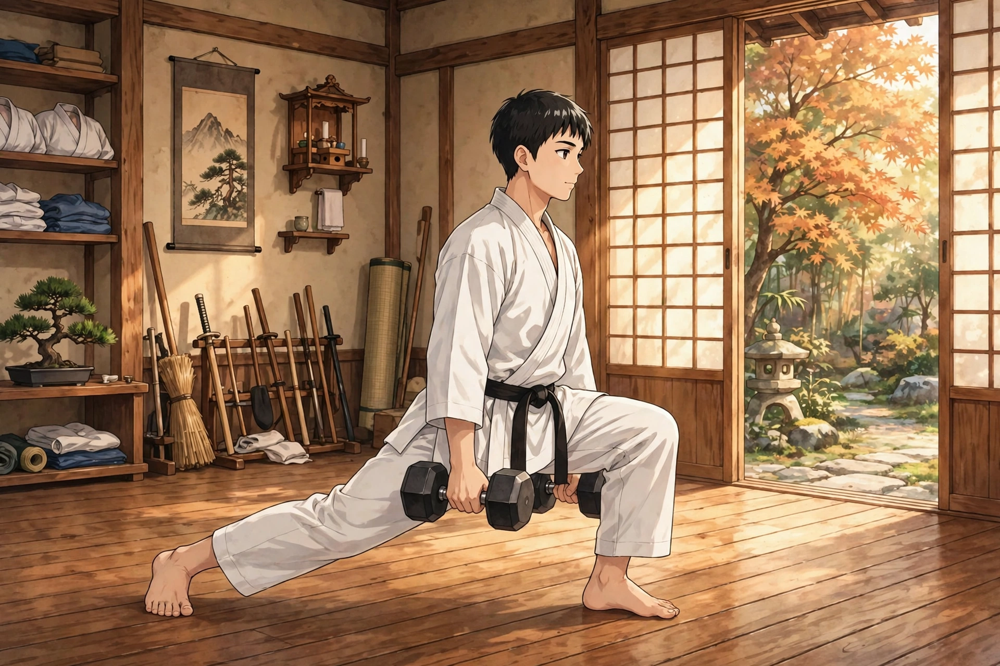
こんにちは！『武術・格闘技のためのトレーニング入門』、案内役のかん太です！いつも道場やジムでの稽古、本当にお疲れさまです！
突然ですが、みなさんこんなお悩みはありませんか？「仕事や学校が終わってから道場に通うだけで精一杯で、筋トレのために別のジムへ行く時間なんてとても取れない……」「自宅での補強トレーニングを取り入れたいけれど、部屋にあるのはダンベル1組だけ。これだけで本当に全身のトレーニングができるのかな？」
その気持ち、すごくよくわかります！ボクシングの練習でも、空手や柔術、キックボクシングや古武道の稽古でも、道場での技術練習に加えて基礎体力を養うことはとても大切ですよね。でも、毎日忙しいなかでジムを掛け持ちしたり、いくつものトレーニング器具を買い揃えたりするのは現実的ではありません。
そこで今回は、「ダンベル 自宅 全身」をテーマに、自宅にあるダンベル1組だけで取り組める格闘技・武術向けの補強プログラムをお届けします！道具は最小限でも、工夫次第で「格闘技 ダンベル 筋トレ 自宅」のメニューをしっかり組み立てることができるんですよ。さあ、今日も元気よく一緒に学んでいきましょう！
「ジムにある大きなマシンやバーベルがないと、全身をバランスよく鍛えるのは難しいのでは？」と思う方もいらっしゃるかもしれません。ですが、実はダンベル1組というシンプルな環境には、武術や格闘技の稽古と相性の良いポイントがたくさんあるんです。
バーベルのように一本の棒を両手で持つ道具とは違い、ダンベルは左右それぞれの手に持って動かします。そのため、動作の途中で「右腕ばかりに力が入っていないかな？」「左右で同じようにコントロールできているかな？」と、自分の体の左右差やバランスに意識を向けやすくなります。片手で扱えば、体が横に傾かないように体幹で支える感覚も自然と意識できるようになりますよ。
武術や格闘技のあらゆる動きは、体の一部だけで行われているわけではありません。たとえば「突く」という動きひとつをとってみても、最初は足で地面を踏み込み、その力を膝や股関節、腰のひねりへと伝え、しっかり安定した体幹を通して、最後に背中や胸、肩、腕を通って拳へと伝えていきます。
同じように、「蹴る」動きでは軸足で体を真っ直ぐ支える下半身の安定と股関節の働きが欠かせませんし、「組む」動きでは相手を引きつける背中の筋肉や腕の働きに加えて、足腰で踏ん張る土台が関わってきます。「踏み込む」動作では、お尻や太ももの筋肉をスムーズに連動させることが求められます。
だからこそ、自宅でのダンベルトレーニングでも「腕だけ」「胸だけ」といった一部分に偏るのではなく、上半身・下半身・体幹をバランスよく動かす全身メニューを組むことが大切なのです。全身を連動させて動かす習慣をつけておくと、道場やジムでの稽古中にも「今、足の力を体幹から腕へ伝えているな」といった体のつながりを意識しやすくなります。
「自宅にダンベルが1組あるけれど、重さが合っているか不安」「これから用意する場合、どのくらいの重さを選べばいい？」という声もよく聞かれます。
一般的な考え方としては、「正しいフォームを崩さずに、1セットあたり8〜12回程度を無理なく、かつ程よい達成感を持ってこなせる重さ」がひとつの目安とされています。軽すぎて何十回も余裕でできてしまう場合は筋肉への刺激が弱くなりやすいですし、逆に重すぎて反動を使わないと持ち上がらない場合は、フォームが崩れて関節に負担がかかりやすくなってしまいます。
もしご自宅にすでにあるダンベル1組が「種目によっては少し軽いな」と感じるときは、動作のスピードをゆっくり丁寧にして筋肉に力が入っている時間を長くしたり、両足・両手で行う種目を片足・片手で行う種目に切り替えたりすることで、負荷の感じ方を調整することができます。逆に「少し重く感じるな」という種目では、2本ではなく1本のダンベルを両手で持って行うなど、工夫しながら自分のコンディションに合わせて調整してみてくださいね！
それでは、いよいよ具体的な「ダンベル1組 トレーニング メニュー」をご紹介します！今回は、格闘技や武術の動きに必要な「踏ん張る・踏み込む（下半身）」「押す・突く（上半身前面）」「引く・組む（上半身背面）」「全身で力を伝える（連動）」「軸を保つ・ひねる（体幹）」の5つの要素をバランスよく取り入れました。トレーニングベンチなどの大きな台がなくても、床の上だけで安全に行える種目ばかりです。
さあ、それぞれの種目のやり方と意識するポイントを詳しく見ていきましょう！
足を前後に大きく開いて行うスクワットです。両足で行う通常のスクワットに比べて片脚ずつにかかる負荷が大きくなるため、自宅の限られた重さのダンベルでも下半身をしっかり意識しやすいのが魅力です。
前後開脚の姿勢は、構えや踏み込み、あるいは片足に体重を乗せて蹴りを出すときのバランスと共通する部分が多いです。最初は少しフラフラするかもしれませんが、お腹に軽く力を入れて軸を保つことで、下半身の土台を意識する良い練習になりますよ！
トレーニング用のベンチがなくても、床の上に仰向けに寝転がって行うことで胸や肩の前側、二の腕をしっかりと使うことができる種目です。
腕を前に押し出す動作は、ストレートやジャブを突く動き、あるいは組んだ相手を押し離す動きの土台を意識しやすい種目です。床がストッパーの役割をしてくれるので、腕を下ろしすぎて肩を痛める心配が減るのも自宅トレーニングならではのメリットですね！
打撃系の競技でも組み技系の競技でも、相手を引きつける動きや打撃を素早く構えに戻す動きなど、「引く力」はとても重要です。この種目では背中の大きな筋肉を意識して動かします。
腕の力だけで持ち上げようとすると、すぐに前腕や力こぶばかりが疲れてしまいます。「手はダンベルを引っ掛けるフックにして、肘を天井に向かって引く」というイメージを持つと、背中の筋肉を使っている感覚がつかみやすくなりますよ！
脚で地面を押した力を体幹に通し、そのまま両腕で頭上へ押し上げる、まさに格闘技的な「全身の連動」を意識しやすいダイナミックな種目です。
腕だけの力で押し上げるのではなく、「脚がエンジン、体幹がパイプ、腕が出口」というようにタイミングを合わせる意識が大切です。腰が反ってしまうと負担がかかるので、頭上へ押し上げた瞬間もお腹をギュッと締めて真っ直ぐな姿勢を保つようにしましょう！
最後は体幹、特にお腹の横側の筋肉（腹斜筋）を意識する種目です。突く、蹴る、相手をさばくといった動きの中で生まれる「ひねり」や、軸をブレさせない支えの感覚を養うサポートになります。
呼吸を止めてしまうと動きが硬くなりがちです。「フッ、フッ」と短く息を吐きながら、おへそのあたりから体を回す意識を持つと、体幹全体が引き締まる感覚をつかみやすくなりますよ！
せっかく自宅でできるメニューが揃っても、「いつやればいいの？」と迷ってしまいますよね。大切なのは、道場やジムでの稽古で疲れすぎないよう、休養の日とうまく組み合わせることです。ここでは2つのスケジュール例をご紹介します。
1回のトレーニングにかかる時間は、休憩を含めても20〜30分程度です。テレビを観ながらダラダラ行うのではなく、集中してサッと終わらせてしっかり休むのが、稽古との両立をうまく進めるポイントですよ！
ここでは、限られた自宅のスペースでダンベル1組を上手に使いこなすためのコツや、保管・取り扱い時の工夫についてお話しします。
「ダンベルが1組しかないから、種目ごとに重さを変えられない」という場合でも、持ち方を工夫するだけで活用の幅がぐっと広がります。たとえば、先ほどのプッシュプレスやスプリットスクワットのように2本を両手に1本ずつ持つ方法もあれば、ロシアンツイストのように1本を両手で抱えて持つ方法もあります。1本だけを両手で持てば重さが半分になるため、肩や腕などの小さな筋肉を使うときや、まずは軽い負荷でフォームを丁寧に確認したいときにとても便利です。逆に、2本をぴったり揃えて両手で抱えるように持てば、1本分の重さよりも強い負荷でスクワットなどを行うこともできます。
これから自宅用にダンベルを用意しようと考えている方や、買い替えを検討している方のために、ダンベルの一般的な特徴の違いも整理しておきましょう。自宅用のダンベルには大きく分けて「可変式」と「固定式」の2種類があります。
どちらのタイプにもそれぞれの良さがありますので、ご自身の部屋のスペースや、「どんな種目を中心に続けたいか」という目的に合わせて考えると選びやすくなります。
日本の住宅事情では、トレーニング専用の部屋を用意するのはなかなか難しいですよね。でも、安心してください！今回ご紹介した5つの種目は、ヨガマット1枚分、あるいは畳一畳〜二畳程度のスペースがあれば十分に行うことができます。
ただし、狭い部屋で行うからこそ「周囲との距離」には気をつけましょう。特にダンベル・プッシュプレスのように頭上へ腕を伸ばす種目では、天井の照明器具やエアコン、本棚、テレビなどにダンベルをぶつけないよう、始める前に手を伸ばして安全圏を確認しておくことが大切です。
また、床を傷つけたり、階下に音や振動が響いたりするのを防ぐために、床には厚手のマットや、しっかり折り畳んだバスタオル・ラグなどを敷いておくと安心です。使い終わったダンベルを部屋の中央に置きっぱなしにすると、うっかり足の小指をぶつけてしまう危険がありますから、トレーニングが終わったら必ず部屋の隅や壁際など、普段の動線の邪魔にならない場所に片付けましょう。もしダンベルの形状が丸くて転がりやすい場合は、転がりにくい向きで置いたり、壁や家具の隙間に安定させて保管したりする工夫も忘れずに！
武術や格闘技の稽古をより充実させるための自宅トレーニングですから、その補強でケガをして本末転倒になってしまっては悲しいですよね。安全に長く続けるために、以下の4つのポイントを必ず守って取り組みましょう。
「せっかくやる気を出したから、多少の痛みは我慢してやり切ろう」という頑張り方は禁物です。筋肉が程よく疲れる感覚とは違い、関節に鋭い痛みや引っかかるような嫌な違和感があるときは、すぐにその動きを中止して休むようにしてください。道場での稽古で疲れが溜まっているときも、無理に負荷をかけず、その日の体調に合わせたメニューに切り替える勇気を持ちましょう。もし休んでも痛みや違和感が続く場合は、自己判断でトレーニングを再開せず、無理をせず専門家・医療機関へ相談してくださいね。
重たいダンベルを持ち上げること自体が目的になってしまうと、腰を反らせたり、反動をつけて無理やり振り回したりと、フォームが大きく崩れてしまいます。これでは狙った筋肉をうまく意識できないばかりか、腰や肩などを痛める原因にもなりかねません。「最後までコントロールして丁寧に下ろせる重さ・回数」を守るのが、結果的に一番の近道になります。
トレーニングが進んで汗をかいてくると、手のひらが滑ってダンベルを落としやすくなります。近くにタオルを用意しておき、セットの合間にこまめに汗を拭くようにしましょう。また、プレートを付け替えるタイプの可変式ダンベルを使っている場合は、「プレートを留めるネジやストッパーが緩んでいないか」を毎回トレーニングの前に手で触って確認する習慣をつけてください。種目が終わったあとも、疲れたからといって床にドスンと落とすのではなく、最後の瞬間まで力を抜かずにゆっくり丁寧に床へ下ろしましょう。
自宅は道場やジムと違って、生活用品が身の回りに置かれていることが多い環境です。トレーニングをするスペースの足元に、スマートフォンやリモコン、脱いだ上着、小さなクッションなどが落ちていると、踏みつけて滑ったりバランスを崩したりする原因になります。ダンベルを手に取る前に「足元よし、周囲の家具との距離よし！」と指差し確認をするくらいの気持ちで、安全なスペースを作ってからスタートしてくださいね！
みなさん、第14回の「ダンベル1組でできる全身メニュー」はいかがでしたか？自宅にあるダンベル1組だけでも、やり方と組み合わせを工夫すれば、突く・蹴る・組む・踏み込むといった武術・格闘技の動きにつながる全身の土台づくりにしっかり取り組めることがおわかりいただけたのではないでしょうか。まずは週2〜3回、ご自身のペースで楽しく続けてみてくださいね！
さて、次回の第15回（継続編第5回）のテーマは、「チューブだけで作る週3回メニュー」です！「部屋にダンベルを置くスペースがない」「出張や遠征先にも持ち歩ける道具で補強したい」「関節に優しい負荷からコツコツ始めたい」という方にぴったりの、トレーニングチューブを使った全身プログラムをお届けします。実はチューブならではの伸び縮みの特性は、格闘技の動きを意識するうえでも面白い使い方ができるんですよ！
次回も元気いっぱいにお届けしますので、どうぞお楽しみに！かん太でした！
少林寺拳法の成り立ちから、剛法・柔法・鎮魂行という三つの柱、法衣・道衣の扱い、級から段へ進む稽古の段階の目安までを整理した入門です。中国の少林拳とは別の、日本で生まれた武道として紹介します。
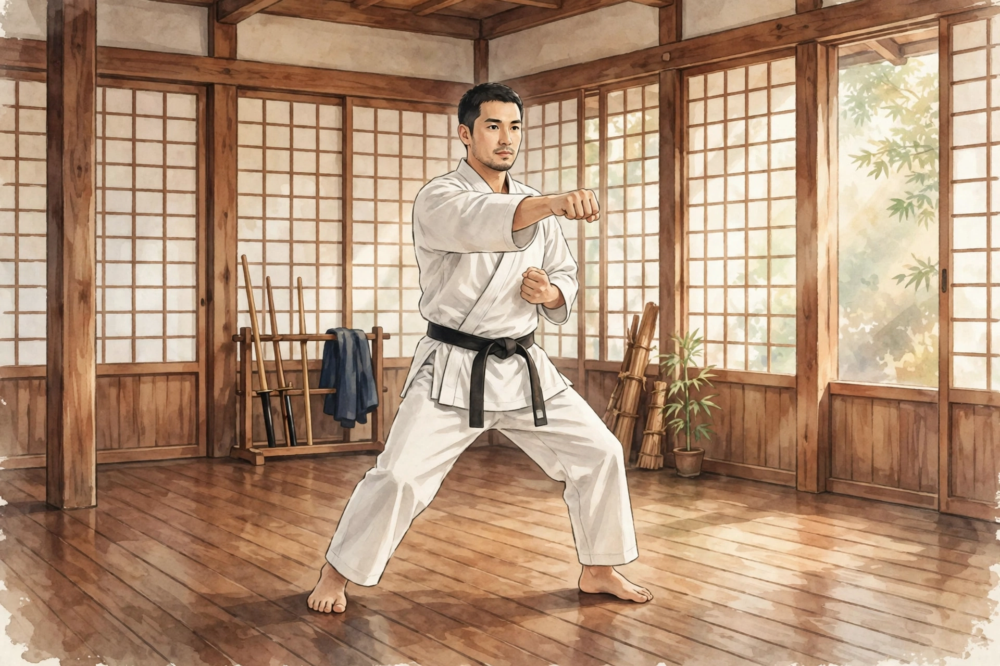
少林寺拳法は、突き・蹴りを中心とする「剛法」と、投げ・固めなどを扱う「柔法」を組み合わせて稽古し、坐禅や読経を取り入れた「鎮魂行」で心を整える時間をあわせ持つ、日本の武道です。名前に「少林」の文字を含むため、中国の少林拳と混同されることがありますが、両者は成り立ちの異なる別の武道です。この記事では、少林寺拳法の成り立ち、剛法と柔法の組み合わせ、鎮魂行の位置づけ、法衣・道衣の扱い、級から段へ進む稽古の段階の目安を、初心者向けに一般的な解説として整理しました。
少林寺拳法は、1947年（昭和22年）に宗道臣（そう・どうしん）が香川県多度津町で創始した武道です。宗道臣は中国で拳法を学んだ経験を持ち、帰国後に、日本の地で独自の技法と教えの体系として少林寺拳法を形づくりました。本山は香川県多度津町に置かれ、現在は各地の道院や支部、学校の部活動など、さまざまな場で稽古が行われています。
注意しておきたいのは、少林寺拳法と中国の少林拳は別の武道だという点です。少林拳は、中国・河南省の少林寺に伝わる拳法を源流とする中国武術で、基本功と型（套路）を積み上げる稽古が特徴です。一方、少林寺拳法は20世紀の日本で創始された武道で、剛法・柔法・鎮魂行を柱とする独自の組み立てを持ちます。名前が似ているため混同されやすいのですが、道場や教室を探すときは、どちらの武道の案内なのかを確認してください。中国の少林拳そのものについては、この記事の末尾に挙げた関連の読み物もあわせてご覧ください。
少林寺拳法の技法は、大きく「剛法」と「柔法」に分けられます。どちらか一方だけではなく、両方を組み合わせて学ぶことが、この武道の稽古の大きな特徴です。
稽古では、まず決められた攻撃と受けの形で技の成り立ちを確認し、段階に応じて、二人で組んで動きの中で技をつなげる練習へ進んでいく進め方が一般的です。剛法で学んだ距離の取り方や体の使い方が柔法の土台になり、柔法で学んだ身のこなしが剛法にも関わってくるというように、両方を行き来しながら全体を組み立てていきます。
鎮魂行（ちんこんぎょう）は、少林寺拳法の稽古に組み込まれた行の一つで、坐禅と読経（教典の言葉を唱えること）を組み合わせて行われます。稽古の始めや終わりに時間を取って行われることが多く、姿勢を正して座り、呼吸を整え、教えの言葉に触れることで、技の稽古とは別の角度から心を整える時間として位置づけられています。
少林寺拳法では、技の修練とあわせて、教えを学び、心のあり方を考えることも稽古の一部とされています。鎮魂行はその表れの一つです。具体的な進め方や唱える言葉は、所属する団体や道場の案内に従います。見学の際は、技の稽古だけでなく鎮魂行の時間も含めて稽古全体の流れを眺めてみると、この武道の考え方が伝わりやすくなります。
少林寺拳法の稽古では、白い道衣（稽古着）を着用するのが基本です。道衣は上衣とズボンの上下で構成され、帯を締めて稽古します。段階が進んだ稽古生や指導者は、道衣の上に「法衣（ほうい）」と呼ばれる黒い衣を着用する姿が見られます。法衣を着用できる段階や場面には所属先の定めがあるため、入門当初から用意するものではありません。
少林寺拳法の1回の稽古は、多くの道場で「準備運動・基本の確認」「技の稽古」「鎮魂行や整理運動」といった流れで進められます。その日の内容や道場の方針で配分は変わりますが、段階ごとの学び方はおおむね次のような順序です。
向いているかどうかは、運動経験の有無だけで決まるものではありません。剛法と柔法の両方を扱う稽古の進め方が自分に合いそうかどうかは、実際に見学してみるとよく分かります。
候補の道場を見学・体験する際は、一般的な道場選びの確認点に加えて、少林寺拳法ならではの次の点を確認すると、入会後のイメージがつかみやすくなります。
少林寺拳法の道場を探す場合は、通える地域で候補を挙げ、公式サイトの案内で見学・体験の受け付けを確認してみてください。まずは鎮魂行を含む稽古全体の流れを眺める見学から始めるのが、無理のない一歩です。
テコンドーの成り立ちから、足技を中心とする型（プムセ）と組手（キョルギ）の特徴、道着と防具の扱い、級から段へ進む稽古の段階の目安までを整理した入門です。韓国の武道として紹介します。

テコンドーは、足技を中心とする韓国の武道です。突きや受けも扱いますが、回し蹴りや横蹴り、回転して放つ蹴りなど、足を使った技の種類の多さと高さが大きな特徴です。稽古は、型にあたる「プムセ」と、相手と向き合う「キョルギ（組手）」の二つの柱で進みます。この記事では、テコンドーの成り立ち、プムセとキョルギの進め方、道着と防具の扱い、級から段へ進む段階の目安を、初心者向けに一般的な解説として整理しました。
テコンドーは、第二次世界大戦後の韓国で、複数の館（クァン）が統合される形で整理され、1950年代から60年代にかけて型や段級の仕組みが整えられた武道です。名前は「跆（足で踏む・蹴る）」「拳（拳）」「道（道）」の三つの字からなり、足技と拳の技をあわせて学ぶ武道であることを表しています。
現在は国技院（クッキウォン）を中心とする流れと国際テコンドー連盟（ITF）の流れという二つの大きな流れがあり、世界テコンドー連盟（現・ワールドテコンドー）は1973年に発足しました。テコンドーは2000年のシドニー五輪からオリンピックの正式種目になっています。なお、このポータルではテコンドーに単独のジャンルを設けておらず、道場探しでは「その他・複合」から探す形になっています。
テコンドーの稽古は、大きく「プムセ」と「キョルギ」に分けられます。どちらか一方だけではなく、両方を組み合わせて学ぶことが、この武道の稽古の大きな特徴です。
このほか、基本動作の反復、ミットやサンドバッグを使った蹴りの練習、柔軟性や体力を整える運動が稽古に組み込まれることもあります。1回の稽古は、多くの道場で「準備運動・基本の確認」「プムセやキョルギの稽古」「整理運動」といった流れで進みます。蹴り技が多いため、足腰の柔軟性やバランスを整える時間が取られるのも特徴の一つです。
テコンドーの稽古では、白い道着（トボク）を着用するのが基本です。道着は上衣とズボンの上下で構成され、帯を締めて稽古します。帯の色は級の段階の目安で、黒帯は段位の目安です。道着の形や帯の区分には団体や道場による違いがあるため、入門時に案内を確認してください。
テコンドーの学び方は、段階ごとに次のような順序で進むのが一般的です。
向いているかどうかは、運動経験の有無だけで決まるものではありません。蹴り技を中心とする稽古の進め方が自分に合いそうかどうかは、実際に見学してみるとよく分かります。
候補の道場を見学・体験する際は、一般的な道場選びの確認点に加えて、テコンドーならではの次の点を確認すると、入会後のイメージがつかみやすくなります。
通える地域で候補を挙げ、公式サイトの案内で見学・体験の受け付けを確認してみてください。このポータルではテコンドーは「その他・複合」から探す形になっています。稽古全体の流れを眺める見学から始めるのが、無理のない一歩です。道場の探し方や選び方の目安は、道場を探すとはじめての道場選びもあわせてご覧ください。
この記事にはアフィリエイトリンクが含まれます。当サイトはAmazonアソシエイト・プログラムに参加しています。価格・在庫はリンク先でご確認ください。ここで紹介する商品は、運営者が実際に使った感想（体験談）ではありません。
寒い時期の稽古に向けた準備運動の組み立て方から、体を温める工夫、冬場の体調管理の考え方、稽古の頻度や内容の調整、稽古納めなど冬の行事の過ごし方までを整理した、季節の読み物です。

冬は、稽古場に着いたときの体の冷えや、動き出しのこわばりが気になる季節です。寒い時期の稽古は、夏場と同じ進め方をそのまま当てはめるのではなく、準備運動の組み立て方や服装、体調の見方を少し調整するだけでも取り組みやすくなります。この記事では、準備運動と体を温める工夫、冬場の体調管理の考え方、稽古の頻度や内容の調整、稽古納めなど冬の行事の過ごし方を、初心者向けに一般論として整理しました。進め方の細部は流派や道場ごとに異なるため、通っている場所の案内に沿って調整してください。
寒い時期は、道場に着いた直後の体が冷えていて、関節や筋肉の動き出しが重く感じられることがあります。冷えたままの体で急に大きな動きや速い動きを始めると、思うように動けないだけでなく、無理な力が入りやすくなります。冬の稽古では「本格的な動きに入る前に、体を温める時間をいつもより丁寧に取る」ことが、全体を通しての土台になります。
また、稽古場の環境も季節で変わります。畳や床の冷たさ、暖房の有無、窓からの冷気などは道場ごとに異なります。初めての冬を迎える道場では、稽古場の様子を一度確認しておくと、服装や持ち物の準備がしやすくなります。
冬の準備運動は、一度に体を伸ばし切ろうとするのではなく、小さな動きから大きな動きへと段階を踏む組み立て方が向いています。多くの道場で見られる進め方を、一般的な順序として挙げます。
じっくり伸ばす静的なストレッチは、冷えた体のまま無理に行うのではなく、体が温まった後や、稽古終わりの整理運動の時間に行う進め方が一般的です。準備運動の内容や時間配分は道場の進め方に従い、痛みを感じる動きはその場で指導者に伝えてください。
稽古中の服装は道着が基本ですが、寒さ対策として工夫できる余地は道場の決まりの範囲内にあります。見学・体験や入会のときに、次の点を確認しておくと冬の準備がしやすくなります。
冬は気温の低下や乾燥で、体調を崩しやすい季節でもあります。稽古を続けるうえでは、休む判断も含めた体調管理が大切です。特定の方法の効果を断定するものではなく、一般的な考え方として整理します。
寒い時期は、無理に稽古の頻度を増やすよりも、続けられる間隔を保つことを優先する考え方が向いています。年末年始は仕事や家庭の予定も重なりやすいため、休む週があっても計画のうちと捉えると、再開の負担が軽くなります。
内容の面では、冬は型や基本動作の確認のように、自分の動きをじっくり見直す稽古と相性のよい季節です。速さや強さを追う日だけでなく、姿勢や呼吸、技の手順を確認する日を組み合わせると、寒さで体がこわばりやすい時期でも取り組みやすくなります。組む相手との稽古では、お互いの体の温まり具合に差があることも意識し、最初のうちは力加減を確認しながら進める進め方が一般的です。自宅での補強運動を取り入れる場合も、暖かい室内で準備運動を済ませてから行うなど、道場と同じ考え方で組み立ててください。
多くの道場では、年末に「稽古納め」としてその年最後の稽古を行い、年明けに「稽古始め」で新しい年を始める節目を設けています。道場によっては、稽古納めの日に大掃除を組み合わせたり、年明けに鏡開きの行事を行ったりする場合もあります。また、寒さの中で行う「寒稽古」の期間を設ける道場もありますが、実施の有無や内容は道場ごとに大きく異なります。
行事への参加は任意の場合も多く、都合が合わないときに無理に合わせる必要はありません。日程や参加の扱いは、所属する道場の案内で確認してください。
冬に道場探しを始める方は、一般的な確認点に加えて、寒い時期ならではの次の点を見学・体験で確かめておくと、入会後のイメージがつかみやすくなります。
寒い季節は、始めるきっかけとしては静かな時期ですが、その分、落ち着いて見学や体験に臨める時期でもあります。まずは稽古場の雰囲気を眺める見学から始めて、自分の生活リズムに合うかどうかを確かめてみてください。
ムエタイの成り立ちから、パンチ・蹴り・肘打ち・膝蹴り・首相撲の特徴、道具と服装の目安、稽古の段階の目安までを整理した入門です。タイの国技として紹介します。
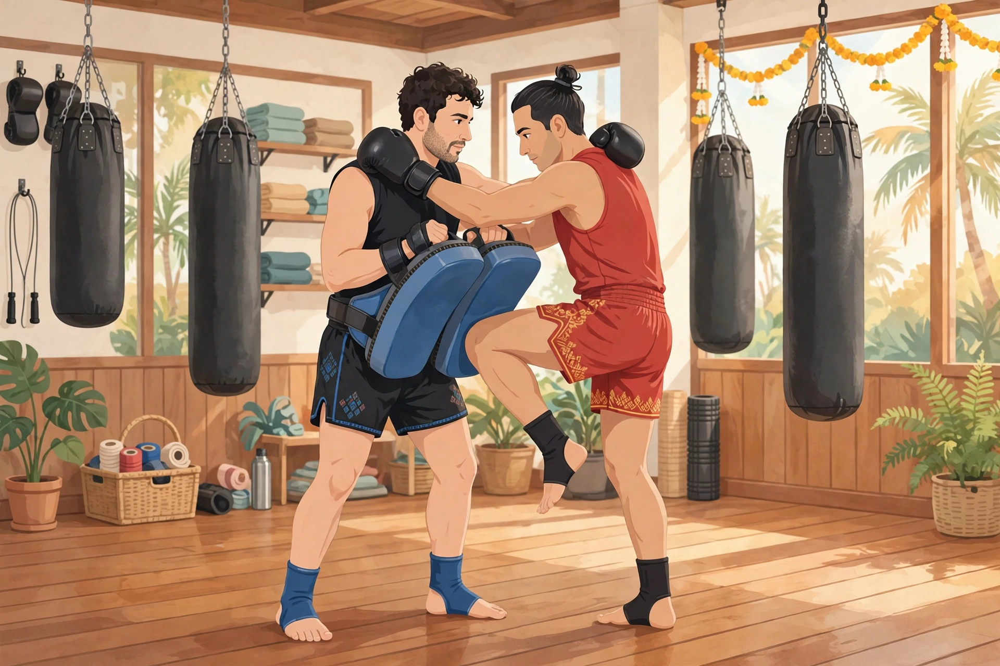
ムエタイは、パンチと蹴りに加えて、肘打ちと膝蹴り、そして首相撲と呼ばれる組み合う技術までを使う、タイの立ち技格闘技です。両手・両肘・両膝・両足の八つを武器として使うことから「八つの武器の技芸」とも呼ばれます。日本ではキックボクシングと近い存在として知られていますが、肘打ちや首相撲の扱いなど、ムエタイならではの特徴があります。この記事では、ムエタイの成り立ちと稽古の進み方、道具の目安、見学・体験で確認したい点を、初心者向けに整理しました。
ムエタイは、タイの国技として知られる格闘技です。その源流は、かつてのシャム王国で兵士の訓練として行われていた武術にあるとされています。長い歴史の中で素手で行う競技へと姿を変え、20世紀に入って近代スポーツとしての形が整えられました。
試合の前には、選手が音楽に合わせてゆっくりと舞う「ワイクルー」と呼ばれる儀礼が行われます。師への敬意や感謝を示す所作です。
このポータルではムエタイに単独のジャンルを設けておらず、道場探しでは「キックボクシング」からムエタイ系のジムも探せる形になっています。キックボクシングの成り立ちにもムエタイの影響が大きく関わっており、両者は近い関係にあります。
ムエタイの技は、使う部位によって次のように整理できます。
ムエタイの稽古は、多くのジムで次のような流れで進みます。内容や順序はジムによって異なります。
1回の稽古は、多くのジムで1時間半から2時間程度の枠で組まれています。
ムエタイの稽古で使う道具の目安は次のとおりです。指定の有無はジムごとに異なるため、体験のときに確認してください。
道具の詳しい種類や選び方の目安は、読み物「稽古着と道具の基礎知識」もあわせてご覧ください
ムエタイの学び方は、段階ごとに次のような順序で進むのが一般的です。
級や段のような段級の仕組みは、ムエタイには一般的にありません。
向いているかどうかは、運動経験の有無だけで決まるものではありません。
候補のジムを見学・体験する際は、一般的な道場選びの確認点に加えて、ムエタイならではの次の点を確認すると、入会後のイメージがつかみやすくなります。
通える地域で候補を挙げ、公式サイトの案内で見学・体験の受け付けを確認してみてください。このポータルではムエタイ系のジムは「キックボクシング」から探す形になっています。道場の探し方や選び方の目安は、道場を探すとはじめての道場選びもあわせてご覧ください。
この記事にはアフィリエイトリンクが含まれます。当サイトはAmazonアソシエイト・プログラムに参加しています。価格・在庫はリンク先でご確認ください。ここで紹介する商品は、運営者が実際に使った感想（体験談）ではありません。

タイ製のボクシンググローブで、ムエタイやキックボクシングの稽古向けとして販売されているモデルです。ミット打ちやサンドバッグ打ち、組手の稽古で使うグローブの候補として、サイズやオンスは商品ページで確認してください。
Amazonで見る
グローブの下に巻くバンテージです。手首と拳を支える帯状の道具で、長さ120インチのモデルです。巻き方や洗濯の扱いは商品ページで確認してください。
Amazonで見る
ムエタイの稽古向けに作られたショーツです。膝や足を大きく動かしやすい短めの作りで、サイズは商品ページで確認してください。
Amazonで見るブラジリアン柔術の成り立ちから、寝技を中心とする組み技、ポジションの考え方、道具と服装の目安、稽古の段階の目安までを整理した入門です。寝技中心の組み技として紹介します。
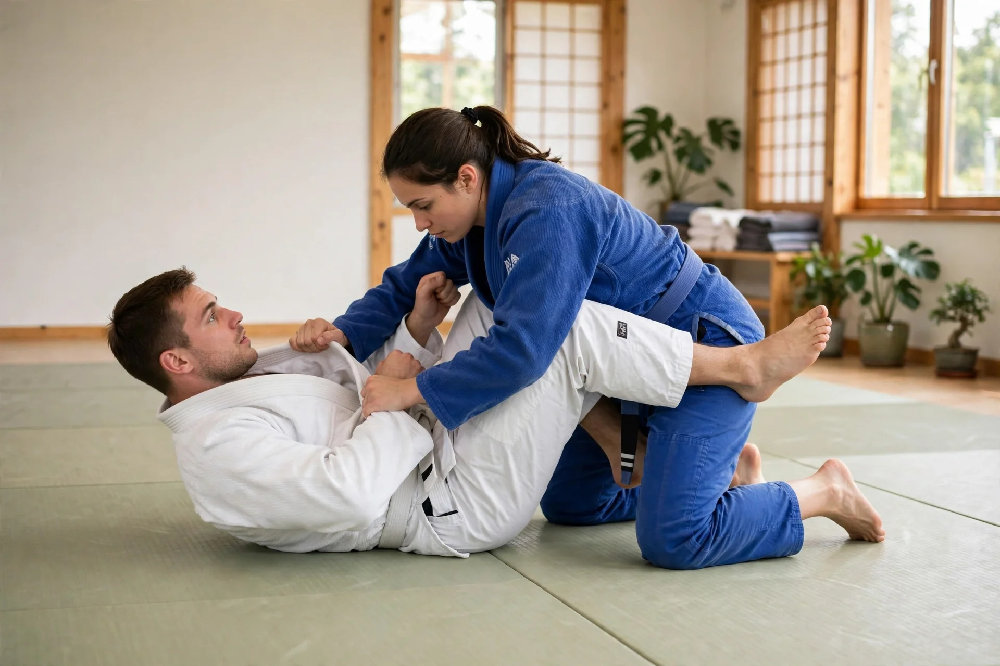
ブラジリアン柔術は、寝技を中心とする組み技の武術です。相手と組み合い、ポジションと呼ばれる有利な体勢を取って関節技や絞め技へつなげるのが特徴で、床の上での攻防が中心になります。ブラジルで発展したことからこの名で呼ばれ、日本では「BJJ」と略されることもあります。この記事では、成り立ちと稽古の進み方、道具の目安、見学・体験で確認したい点を初心者向けに整理しました。
ブラジリアン柔術は、20世紀の初めにブラジルへ伝わった柔道を土台として、グレイシー家をはじめとするブラジルの柔術家たちが寝技を中心に発展させた武術とされています。投げ技よりも、倒れたあとの攻防や相手を押さえ込む技術が重んじられてきました。
体格や力の差があっても、技術や体勢の考え方で対応することを目指す武術として紹介されることが多く、体格の小さい人や女性の参加者も少なくありません。
道場やジムを探すときは、紹介文に「ブラジリアン柔術」や「柔術」と書かれているかを確認すると、候補を絞りやすくなります。
ブラジリアン柔術では、相手との体勢を「ポジション」と呼び、有利な体勢を取ることが攻防の軸になります。代表的なポジションは次のとおりです。
関節技や絞め技は、相手が「タップ」（体や床を叩いて合図する）ことで終了します。タップをしたらすぐに技を解くのが決まりです。
ブラジリアン柔術の稽古は、多くの道場で次のような流れで進みます。内容や順序は道場によって異なります。
1回の稽古は、多くの道場で1時間半から2時間程度の枠で組まれています。
ブラジリアン柔術の稽古には、道着を着て行う「ギ」と、道着を着ない「ノーギ」の2つの形があります。
道場によってギ中心・ノーギ中心・両方ありと形態が異なります。体験の前に確認しておくと、服装の準備がしやすくなります。
ブラジリアン柔術の稽古で使う道具の目安は次のとおりです。指定の有無は道場ごとに異なるため、体験のときに確認してください。
道具の詳しい種類や選び方の目安は、読み物「稽古着と道具の基礎知識」もあわせてご覧ください
ブラジリアン柔術の学び方は、段階ごとに次のような順序で進むのが一般的です。
帯の色が変わる目安は道場や団体によって異なります。昇帯までの期間の目安は、道場の案内で確認してください。
向いているかどうかは、運動経験の有無だけで決まるものではありません。
候補の道場を見学・体験する際は、一般的な確認点に加えて、次の点を確認すると入会後のイメージがつかみやすくなります。
通える地域で候補を挙げ、公式サイトの案内で見学・体験の受け付けを確認してみてください。道場の探し方や選び方の目安は、道場を探すとはじめての道場選びもあわせてご覧ください。
この記事にはアフィリエイトリンクが含まれます。当サイトはAmazonアソシエイト・プログラムに参加しています。価格・在庫はリンク先でご確認ください。ここで紹介する商品は、運営者が実際に使った感想（体験談）ではありません。

ブラジリアン柔術の稽古向けに作られた柔術着です。パールウィーブの上着とコットンのズボンの組み合わせで、色とサイズは商品ページで確認してください。
Amazonで見る総合格闘技（MMA）の成り立ちから、打撃・組み技・寝技を組み合わせた稽古の特徴、道具と服装の目安、稽古の段階の目安までを整理した入門です。打撃・組み技・寝技を組み合わせた武道として紹介します。
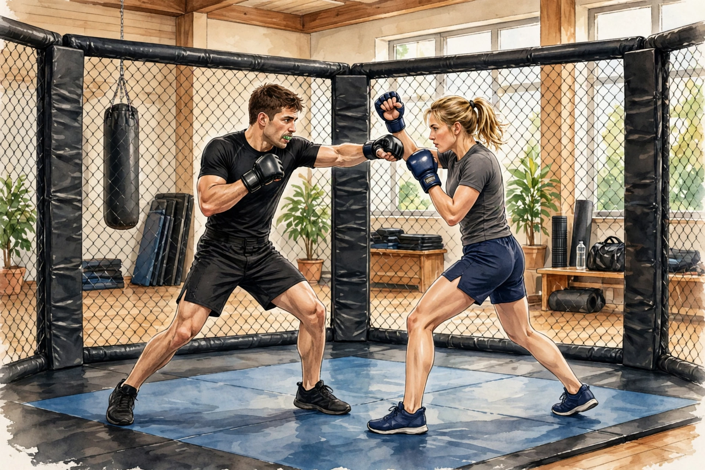
総合格闘技（MMA）は、打撃・組み技・寝技を組み合わせた武道・格闘技です。立ち技だけ、寝技だけといった一つの領域に限らず、パンチやキック、投げ技、関節技や絞め技までを一つのルールの中で行うのが特徴で、「MMA」は英語の Mixed Martial Arts の略です。この記事では、成り立ちと稽古の進み方、道具の目安、見学・体験で確認したい点を初心者向けに整理しました。
総合格闘技では、立ち技の打撃（パンチ・キック・肘打ち・膝蹴り）、相手を倒す組み技（投げ技・タックル）、倒れたあとの寝技（関節技・絞め技・押さえ込み）の3つの領域を組み合わせて戦います。試合は、金網で囲まれたケージと呼ばれる場所や、リングで行われることがあります。相手が「タップ」（体や床を叩いて合図する）ことで試合や練習が終了する決まりは、組み技の武術と共通しています。
一つの技術だけを磨くのではなく、打撃から組み技へ、組み技から寝技へと、場面の移り変わりに対応することが求められる武道です。打撃が得意な選手、組み技や寝技が得意な選手など、選手によって得意な領域が異なります。
総合格闘技という競技が広く知られるようになったのは、1990年代のことです。1993年にアメリカで始まった大会「UFC」では、異なる流派・格闘技の選手が同じルールで対戦し、その様子が注目を集めました。日本でも、1980年代末に始まった修斗や、1990年代のパンクラス、1997年に始まったPRIDEなど、打撃と組み技を組み合わせた大会が開かれてきました。
2000年ごろには統一ルールが整えられ、反則の範囲やラウンド制などが整理されていきました。現在では、世界各地で大会が開かれる競技として知られています。
総合格闘技の稽古は、打撃・組み技・寝技の3つの領域を分けて練習し、少しずつ組み合わせていく進め方が一般的です。内容や順序は道場・ジムによって異なります。
1回の稽古は、多くの道場・ジムで1時間から2時間程度の枠で組まれています。クラスが打撃・グラップリング・MMAと分かれている道場・ジムもあります。
総合格闘技の稽古で使う道具の目安は次のとおりです。指定の有無は道場・ジムごとに異なるため、体験のときに確認してください。
道具の詳しい種類や選び方の目安は、読み物「稽古着と道具の基礎知識」もあわせてご覧ください
総合格闘技の学び方は、段階ごとに次のような順序で進むのが一般的です。
向いているかどうかは、運動経験の有無だけで決まるものではありません。
候補の道場・ジムを見学・体験する際は、一般的な確認点に加えて、次の点を確認すると入会後のイメージがつかみやすくなります。
通える地域で候補を挙げ、公式サイトの案内で見学・体験の受け付けを確認してみてください。道場の探し方や選び方の目安は、道場を探すとはじめての道場選びもあわせてご覧ください。
この記事にはアフィリエイトリンクが含まれます。当サイトはAmazonアソシエイト・プログラムに参加しています。価格・在庫はリンク先でご確認ください。ここで紹介する商品は、運営者が実際に使った感想（体験談）ではありません。

総合格闘技の稽古向けに作られたオープンフィンガー型のMMAグローブです。打撃と組み技の両方で使われる形で、色とサイズは商品ページで確認してください。
Amazonで見る級と段の考え方の違いから、段階の目安、昇級・昇段の審査の一般的な流れ、流派や団体で仕組みが異なる点、見学・体験で確認したい質問例までを整理した読み物です。

道場の案内や見学の場面で目にする「級」と「段」は、稽古の段階を示す仕組みです。入門したばかりの人は級から始まり、段階を進めると段へ進む、という大まかな流れは多くの武道・武術に共通しますが、級の数や審査の進め方、段の認定の範囲は流派や団体によって異なります。この記事では、級と段の考え方の違い、段階の目安、昇級・昇段の審査の一般的な流れ、仕組みが流派や団体で異なる理由、見学・体験で確認したい質問例を、初心者向けに一般的な解説として整理しました。具体的な基準は所属先の案内で確認してください。
級と段は、どちらも稽古の進み具合を示す段階ですが、数え方と位置づけが逆向きになっています。
級は「段までの距離」を、段は「段に入ってからの積み重ね」を示すものと考えると、全体の流れがつかみやすくなります。ただし、級と段のどちらにも共通して言えるのは、段階そのものが稽古の目的ではなく、目標を区切って稽古を続けるための目安として設けられている点です。
段階の進み方は、ジャンルや団体で幅がありますが、一般的な流れとして整理すると次のようになります。級の数そのものが団体によって異なるため、ここに挙げる数字は一例としての目安です。
各段階にかかる期間は、通う頻度や所属先の基準、審査の実施回数によって幅があり、一律の期間を示すことはできません。週に通う回数が少ない場合は、その分だけ次の審査までに時間がかかるのが一般的です。進級・昇段の見通しは、入会先の案内や指導者への質問で確認してください。
級や段を進めるには、多くの団体で「審査」を受ける形が取られています。審査の呼び方や細部は団体ごとに異なりますが、一般的な流れは次のとおりです。
段位の審査は、級の審査よりも実施の間隔が長く、求められる内容の範囲も広くなる傾向があります。特に高段位の審査では、受験までの最低期間（在位期間）が年単位で定められていることが一般的です。
同じジャンルの中でも、級・段の仕組みは流派や団体によって異なります。道場を比べるときに戸惑いやすい点として、代表的な違いを挙げます。
このように仕組みが異なるため、異なる団体の級・段を単純に並べて比べることはできません。「何段か」だけでなく、どの団体の認定かを含めて捉えるのが、級・段の見方として一般的です。
級・段の仕組みは、入会後の稽古の進み方に長く関わる点です。見学・体験のときに、次のような質問例を参考に確認しておくと、入会後のイメージがつかみやすくなります。質問への回答の細部は道場ごとに異なるため、気になる点は一つずつ聞いてみてください。
費用に関わる点は、審査料のように月謝とは別にかかる場合があるため、料金表全体の見方とあわせて確認しておくと、後から戸惑うことが少なくなります。審査を受けるかどうか自体は、目標の持ち方によって考え方が分かれる点です。段階を区切りに稽古を進めたい方もいれば、審査にとらわれず自分のペースで続けたい方もいます。どちらの考え方でも稽古を続けられるかどうかも含め、見学の場で雰囲気を確かめてみてください。
月謝・入会金・年会費といった費用の考え方、道着や道具にかかる費用、稽古回数と月謝の関係、休会・退会の制度の確認ポイント、見学・体験で聞いておきたい質問例を、一般論として整理した読み物です。
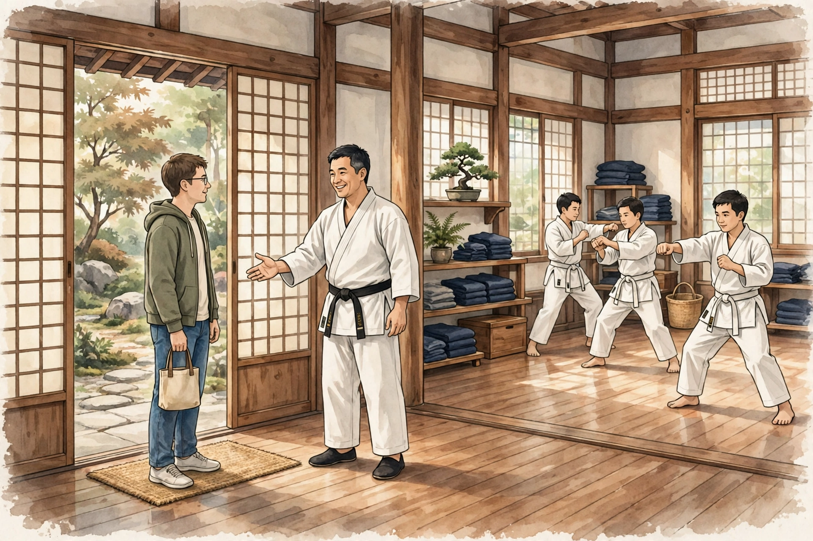
道場やジムを比べるとき、つい目が向くのは月謝の金額ですが、実際にかかる費用は月謝だけではありません。入会金や年会費、道着や道具の費用、審査など節目ごとにかかる費用まで含めて見ると、道場ごとの料金の組み立て方が見えてきます。また、同じ月謝でも、月に通える稽古回数が違えば意味合いは変わります。この記事では、月謝・入会金・年会費・道着や道具の費用の考え方、稽古回数と月謝の関係、休会・退会の制度の確認ポイント、見学・体験で聞いておきたい質問例を、特定の道場の料金ではなく一般論として、初心者向けに整理しました。実際の金額や制度は道場ごとに異なるため、入会先の料金表と案内で確認してください。
道場の費用は、大きく分けると「入会時に一度だけかかる費用」「毎月・毎年かかる費用」「節目ごとにかかる費用」の三つで組み立てられていることが一般的です。料金表を見るときは、この三つに分けて読むと全体像がつかみやすくなります。
月謝の金額だけで比べると、この三つの配分が違う道場同士では、年単位で見たときの負担が逆転することもあります。見学・体験の場では、月謝の額だけでなく「ほかにどのような費用が、どのタイミングでかかりますか」と聞いて、全体像で比べるのが読み方のコツです。
それぞれの費用が何のために設定されているのかを知っておくと、料金表の数字の意味が読み取りやすくなります。
家族で複数人が通う場合の割引や、兄弟・親子での入会の扱いを設定している道場もあります。該当しそうな場合は、見学のときにあわせて聞いておくと、世帯単位での費用の見通しが立てやすくなります。
稽古を始めるにあたっては、道着や道具の費用も見ておきたい費目です。ジャンルによって必要なものが大きく異なります。
道具の費用は、月謝と違って一度にまとまった金額になることがあります。入会直後に必要になるものと、稽古が進んでから必要になるものを分けて聞いておくと、初期費用の見通しが立てやすくなります。
月謝の金額は、「月に何回通えるか」とセットで読むことが大切です。同じ金額でも、通える回数の仕組みが違えば、一回あたりの費用感は変わってきます。
読み替えの目安として、自分の生活の中で「月に何回なら無理なく通えそうか」を先に思い描き、その回数で月謝を割ってみると、道場ごとの費用感を自分の通い方に引き寄せて比べられます。回数を増やしたくなったときに、途中でコースや区分を変更できるかどうかも、あわせて聞いておきたい点です。
入会の時点では想像しにくいのが、休会と退会の制度です。仕事の繁忙期、引っ越し、体調の変化など、稽古を続ける環境は変わっていくものなので、始める前に制度の形を確認しておくことが、長く続けるうえでの備えになります。
休会・退会の質問は、入会をためらうためのものではなく、長く続けるための確認です。見学・体験の場で制度を丁寧に説明してもらえるかどうか自体も、道場の案内の丁寧さを知る手がかりになります。
料金と制度は、料金表だけでは読み切れない部分が残ります。見学・体験のときに、次のような質問例を参考に確認しておくと、入会後の費用と制度のイメージが具体的になります。気になる点を一つずつ聞いてみてください。
費用の質問は、値引きを求めるためではなく、仕組みを理解して納得して始めるためのものです。料金表をもらえる場合は持ち帰り、家族と相談してから決める進め方も一般的です。その場で即決を迫られることがあっても、制度の確認が済んでいない点があれば、一度持ち帰って整理してから返事をする形で問題ありません。自分の通い方と費用の全体像が重なるところに、長く続けられる道場選びの手がかりがあります。
年始最初の稽古である初稽古・稽古始めについて、その位置づけと一般的な流れ、年末年始の休み明けに気をつけたい準備運動と体調管理の考え方、稽古始めの目標の立て方の目安、年始から新しく始める方が見学・体験で確認したい点までを整理した、季節の読み物です。
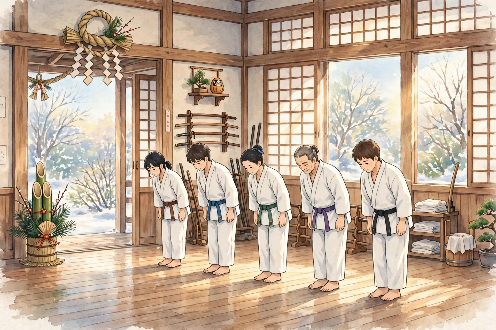
初稽古（稽古始め）は、年が明けて最初に行われる稽古のことです。年末の稽古納めで一区切りをつけたあと、新しい年の稽古を始める節目として、多くの道場や教室で大切にされています。ただし、年末年始は生活リズムが変わりやすく、稽古にも数日から数週間の間隔が空く時期です。久しぶりの稽古をいきなり普段どおりの強さで始めると、体がついていかないこともあります。この記事では、初稽古の位置づけと一般的な流れ、年始の稽古で気をつけたい準備運動と体調管理の考え方、稽古始めの目標の立て方の目安、年始から新しく始める方が見学・体験で確認したい点を、初心者向けに一般論として整理しました。日程や進め方の細部は道場ごとに異なるため、所属する場所や見学先の案内に沿って確認してください。
初稽古は、その年の稽古の始まりを示す行事としての側面と、休み明けに体と気持ちを稽古のリズムへ戻していく実務的な側面を、あわせ持つ稽古です。年末の稽古納めと対になる節目で、道場によっては年始の挨拶や、その年の稽古の進め方についての話が稽古の前後に組み込まれる場合があります。鏡開きの行事とあわせて行う道場や、寒さの中で行う寒稽古の期間の始まりと重なる道場もありますが、実施の有無や形は場所ごとに大きく異なります。通常の稽古に近い形で静かに始める場所もあれば、普段より多くの稽古生が集まる日として位置づけている場所もあります。
なお、初稽古は「初めて参加する稽古」とは別の言葉です。体験や入会直後の最初の一回は、年始かどうかに関わらず、その方にとっての初めての稽古です。この記事で扱う初稽古は、暦の節目としての年始最初の稽古を指します。年始から新しく武道・武術を始める方に向けた確認点は、後半で分けて紹介します。
初稽古の進め方は道場ごとに異なりますが、多くの場所で見られる要素を一般的な順序として挙げます。当てはまらない項目があっても、それは道場の考え方の違いです。
初稽古の日は、久しぶりに顔を合わせる稽古仲間との再会の場でもあります。稽古そのものの内容だけでなく、挨拶や近況の共有を含めて「今年もこの場所で稽古を続ける」という区切りをつける日と捉えると、位置づけがつかみやすくなります。
年始の稽古で意識したいのは、年末年始の休みの間に体が稽古から離れていたことと、寒い時期であることが重なる点です。特定の方法の効果を断定するものではなく、一般的な考え方として整理します。
初稽古は、一年の目標を置く区切りとして使われることも多い日です。目標は大きく掲げることよりも、稽古の中で確かめられる形にしておくことが、続けるうえでの目安になります。
目標は、初稽古の日に完璧に決め切る必要はありません。年の最初の稽古で体の感覚を確かめたうえで、数週間かけて調整していく進め方も一般的です。
「新しい年から何かを始めたい」という気持ちで、年始に道場探しを始める方も少なくありません。その場合に知っておきたいのは、初稽古の日がそのまま体験や見学の受け入れ日とは限らない点です。初稽古は在籍している稽古生が集まる節目の日として組まれている場合があり、体験の受け付けは年始の通常稽古が始まってから、という道場もあります。逆に、年始の節目に合わせて見学を受け付けている場所もあります。扱いは道場ごとに異なるため、初稽古の日に体験したい場合は、事前に案内を確認してから申し込むのが確実です。通常の稽古の日から始める形でも、年始に始めたことに変わりはありません。
年始に道場探しや再開の相談をする方は、一般的な確認点に加えて、次の点を確認しておくと、年の始まりの予定が立てやすくなります。
初稽古は、続けてきた方にとっては一年の区切り、始める方にとっては年始のきっかけになる日です。どちらの立場でも、まずは無理のない強さで体を稽古のリズムに戻すところから、一年の稽古を始めてみてください。
レスリングの成り立ちから、フリースタイルとグレコローマンの特徴、タックルや投げ技、押さえ込みの稽古の進み方、道具の目安、稽古の段階の目安までを整理した入門です。打撃のない組み技の格闘技として紹介します。
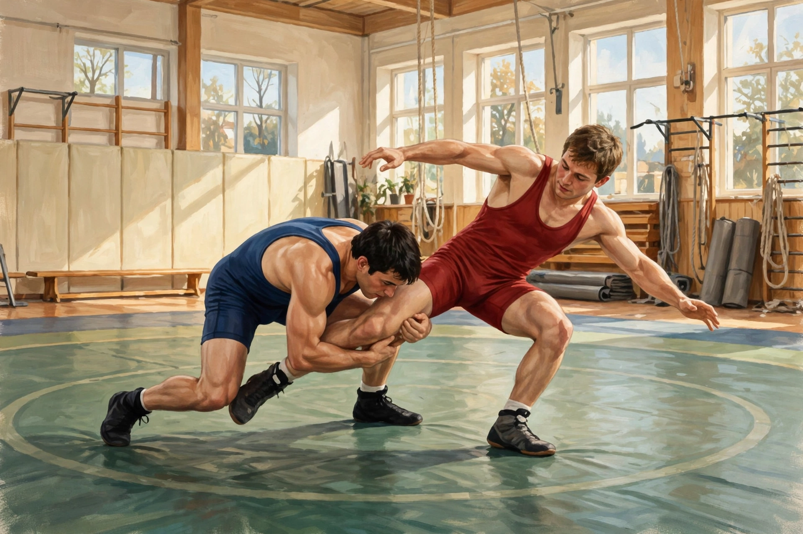
レスリングは、相手を投げたり押さえたりして競う組み技の格闘技です。打撃はなく、タックルや投げ技、押さえ込みを中心に、相手の体勢を崩してマットへ倒し、両肩をマットにつけることを目指します。国際大会ではフリースタイルとグレコローマンの2つのスタイルが行われ、オリンピックの正式種目としても知られています。この記事では、成り立ちと稽古の進み方、道具の目安、見学・体験で確認したい点を初心者向けに整理しました。
レスリングは、素手で相手と組み合い、投げ技やタックル、押さえ込みで競う格闘技です。パンチやキックといった打撃は行いません。試合は円形のマットの上で行われ、相手の両肩をマットにつける「フォール（ピンフォール）」で勝敗が決まるほか、技の得点の合計でも競います。
大きく分けて2つのスタイルがあります。フリースタイルは脚への攻撃も含め、全身を使った攻防が認められるスタイルです。グレコローマンは腰より下への攻撃と、脚を使った攻撃が認められないスタイルで、上半身の組み合いと投げ技が中心になります。
相手と密着して組み合うため、体勢の感覚やバランスが求められます。技の種類は多く、タックル、投げ技、押さえ込み、返し技など、場面に応じた技術があります。
組み合って競う競技の原型は古くからあります。近代のレスリングは19世紀のヨーロッパで競技として整理され、1896年の第1回近代オリンピック（アテネ大会）からグレコローマンが正式種目になりました。フリースタイルは1904年のセントルイス大会から加わっています。
日本へは明治時代の終わりごろに伝わり、学校の部活動を通じて広がりました。戦後は大学や高校の部活動を中心に競技人口が広がりました。現在では、世界レスリング連合（UWW）が国際ルールを定め、世界選手権やオリンピックで競技が行われています。
レスリングの稽古は、基本の動きと受け身の確認から始まり、少しずつ組み合う練習へ進むのが一般的です。内容や順序は道場・クラブによって異なります。
1回の稽古は、多くの道場・クラブで1時間から2時間程度の枠で組まれています。
レスリングの稽古で使う道具の目安は次のとおりです。指定の有無は道場・クラブごとに異なるため、体験のときに確認してください。
道具の詳しい種類や選び方の目安は、読み物「稽古着と道具の基礎知識」もあわせてご覧ください
レスリングの学び方は、段階ごとに次のような順序で進むのが一般的です。
向いているかどうかは、運動経験の有無だけで決まるものではありません。
候補の道場・クラブを見学・体験する際は、一般的な確認点に加えて、次の点を確認すると入会後のイメージがつかみやすくなります。
通える地域で候補を挙げ、公式サイトの案内で見学・体験の受け付けを確認してみてください。道場の探し方や選び方の目安は、道場を探すとはじめての道場選びもあわせてご覧ください。
この記事にはアフィリエイトリンクが含まれます。当サイトはAmazonアソシエイト・プログラムに参加しています。価格・在庫はリンク先でご確認ください。ここで紹介する商品は、運営者が実際に使った感想（体験談）ではありません。
その年最後の稽古である稽古納めについて、その位置づけと一般的な流れ、一年の稽古の振り返り方、忙しい年末の稽古の進め方、年明けの初稽古へのつなげ方までを整理した、季節の読み物です。
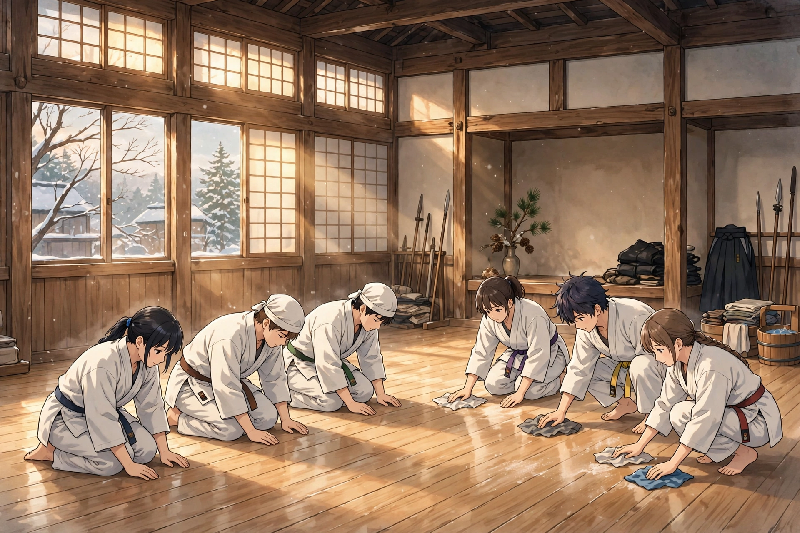
稽古納めは、その年最後に行われる稽古のことです。一年続けてきた稽古に区切りをつけ、年明けの初稽古へつなぐ節目として、多くの道場や教室で大切にされています。年末は仕事や家庭の予定が重なりやすく、稽古の間隔も空きがちな時期です。だからこそ、稽古納めの日を「一年を締めくくる日」として意識しておくと、年末の稽古を無理なく組み立てやすくなります。この記事では、稽古納めの位置づけと一般的な流れ、一年の稽古の振り返り方、忙しい年末の稽古の進め方、年明けへのつなげ方を、初心者向けに一般論として整理しました。対になる年始の稽古については初稽古の過ごし方｜年始の稽古始めの進め方と心構えにまとめています。日程や進め方の細部は道場ごとに異なるため、所属する場所の案内に沿って確認してください。
稽古納めは、その年の稽古の終わりを示す行事としての側面と、一年の稽古を振り返って気持ちを整える実務的な側面を、あわせ持つ稽古です。年始の初稽古（稽古始め）と対になる節目で、道場によっては稽古のあとに道場の大掃除を組み合わせたり、一年の締めくくりの挨拶や、年明けの予定についての話が稽古の前後に組み込まれたりする場合があります。通常の稽古に近い形で静かに締めくくる場所もあれば、普段より多くの稽古生が集まる日として位置づけている場所もあります。実施の形は場所ごとに大きく異なるため、「稽古納めだから特別なことをしなければならない」と身構える必要はありません。
なお、その年に道場へ通い始めた方にとっては、初めて迎える稽古納めになります。長く続けている稽古生と同じように構える必要はなく、その年自分が参加できた稽古の締めくくりとして、その日の流れに沿って参加する形で十分です。
稽古納めの進め方は道場ごとに異なりますが、多くの場所で見られる要素を一般的な順序として挙げます。当てはまらない項目があっても、それは道場の考え方の違いです。
稽古納めの日は、一年間ともに稽古をしてきた仲間と顔を合わせる場でもあります。稽古そのものの内容だけでなく、挨拶や近況の共有を含めて「今年もこの場所で稽古を続けてきた」という区切りをつける日と捉えると、位置づけがつかみやすくなります。
稽古納めは、一年の稽古を振り返る区切りとしても使える日です。振り返りは上手になったかどうかを判定する場ではなく、来年の稽古で意識したいことを見つけるための材料集めと捉えると取り組みやすくなります。
振り返りは、稽古納めの当日に全て終える必要はありません。当日は区切りをつけるところまでにとどめ、年末の落ち着いた時間に少しずつ書き足していく進め方も一般的です。
年末は、稽古納めまでの数週間そのものが慌ただしくなりやすい時期です。普段どおりの頻度を保つことよりも、稽古納めの日に無理なく参加できる状態を保つことを目安に組み立てると、締めくくりまで続けやすくなります。
稽古納めが終わると、多くの道場では年末年始の休館期間に入ります。この休みの過ごし方が、年明けの稽古の入りやすさにつながります。特別な練習を詰め込む必要はなく、生活リズムを大きく崩さないことと、体を動かす機会を少し残しておくことが目安になります。休み明けの稽古では、初日は感覚を取り戻す日と位置づけ、準備運動を長めに取って強度を抑えめに始める進め方が一般的です。具体的な進め方は、対になる読み物の初稽古の過ごし方｜年始の稽古始めの進め方と心構えで整理しています。
来年の目標は、稽古納めの振り返りを材料に、初稽古の前後に一つか二つ置く形が立てやすくなります。「週1回の稽古を続ける」「基本の立ち方と構えを毎回確認する」など、稽古の中でできたかどうかを確かめられる言い方にしておくと、年の途中で見直すときにも役立ちます。
稽古納めへの参加や、年末年始の予定を立てる際は、次の点を確認しておくと当日の動きが決めやすくなります。
稽古納めは、一年の稽古を締めくくる区切りの日です。派手な行事でなくても、その日の礼と掃除と挨拶を丁寧に行うことで、年明けの初稽古へ気持ちよくつなげられます。まずは所属する道場の年末の案内を確認するところから、締めくくりの準備を始めてみてください。
日本拳法の成り立ちから、防具を着けた乱取り形式の特徴、突き・蹴り・投げ・関節技の稽古の進み方、道具の目安、級・段の目安までを整理した入門です。
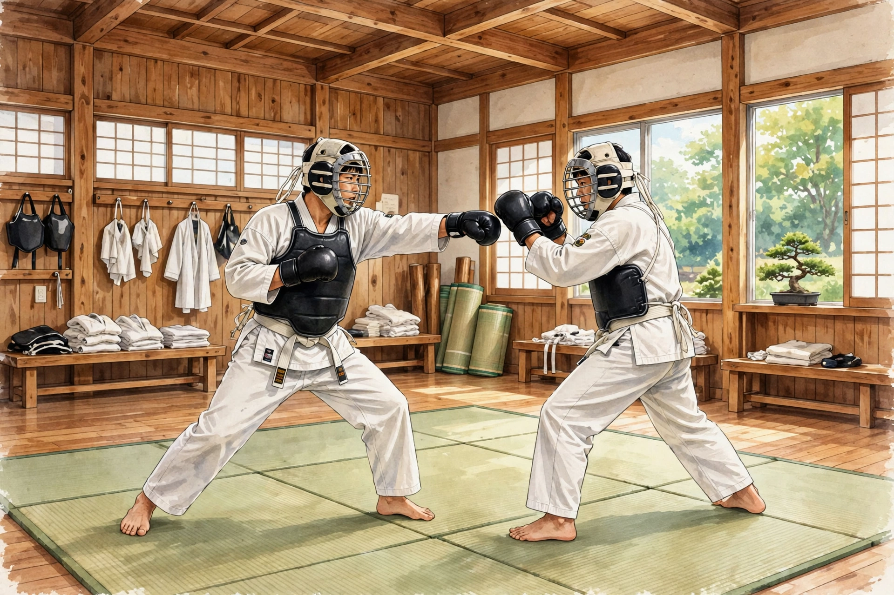
日本拳法は、防具（面・胴・グローブ）を着けて突きや蹴り、投げ技、関節技を行う日本の拳法です。防具を着けることで、相手と実際に打ち合う乱取り形式の稽古が中心になるのが大きな特徴です。1932年（昭和7年）に大阪で生まれ、大学の部活動を中心に広がってきました。この記事では、成り立ちと稽古の進み方、道具の目安、見学・体験で確認したい点を初心者向けに整理しました。
日本拳法は、突き、蹴り、受けといった打撃の技術に加え、投げ技や関節技、押さえ込みも扱う総合的な拳法です。稽古や試合では、顔を守る面、体を守る胴、手を守るグローブといった防具を着けます。防具があることで、相手と実際に打ち合う乱取り形式の稽古を、比較的安全な形で行えるのが特徴です。
試合では、防具を着けた状態で突き・蹴り・投げなどを競います。防具の面や胴、グローブは、日本拳法競技連盟の公認のものを使う決まりになっています。同じ流派でも、稽古の進め方や重視する内容は道場によって異なるため、見学・体験で確かめることが大切です。
日本拳法は1932年（昭和7年）、澤山宗海によって大阪で創始されました。澤山は柔道や空手などの武道の経験をもとに、防具を着けて安全に打ち合える拳法の形をまとめました。防具を使うことで、型だけではなく相手と組む稽古を日常的に行えるようにした点が、当時としては新しい考え方でした。
戦後は大学の部活動を中心に広がり、全国の大学に拳法部がつくられました。現在では、大学の大会を中心に、一般の道場や教室でも稽古が行われています。統括団体として日本拳法競技連盟があり、試合の規則や防具の規格、級・段の制度を定めています。
日本拳法の稽古は、基本の動きの確認から始まり、少しずつ相手と組む練習へ進むのが一般的です。内容や順序は道場によって異なります。
1回の稽古は、多くの道場で1時間から2時間程度の枠で組まれています。
日本拳法の稽古で使う道具の目安は次のとおりです。指定の有無は道場ごとに異なるため、体験のときに確認してください。
防具は道場で貸し出しがある場合もあります。道具の詳しい種類や選び方の目安は、読み物「稽古着と道具の基礎知識」もあわせてご覧ください
日本拳法の学び方は、段階ごとに次のような順序で進むのが一般的です。
向いているかどうかは、運動経験の有無だけで決まるものではありません。
候補の道場を見学・体験する際は、一般的な確認点に加えて、次の点を確認すると入会後のイメージがつかみやすくなります。
通える地域で候補を挙げ、公式サイトの案内で見学・体験の受け付けを確認してみてください。道場の探し方や選び方の目安は、道場を探すとはじめての道場選びもあわせてご覧ください。
この記事にはアフィリエイトリンクが含まれます。当サイトはAmazonアソシエイト・プログラムに参加しています。価格・在庫はリンク先でご確認ください。ここで紹介する商品は、運営者が実際に使った感想（体験談）ではありません。
空道の成り立ちから、フェイスマスクとグローブを着けて顔面への打撃を認める特徴、打撃・投げ・寝技の稽古の進み方、道具の目安、級・段の目安までを整理した入門です。
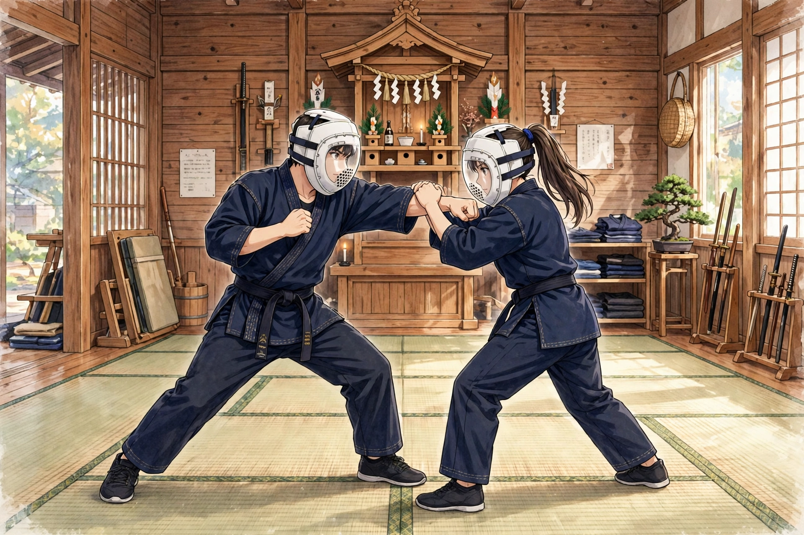
空道は、フェイスマスクとグローブを着けて、突きや蹴り、投げ技、寝技を行う着衣総合格闘技です。防具を着けることで、顔面への突きや蹴りも認める稽古と試合が行われているのが大きな特徴です。1981年に仙台で大道塾として生まれ、2001年に「空道」として新たな武道になりました。この記事では、成り立ちと稽古の進み方、道具の目安、見学・体験で確認したい点を初心者向けに整理しました。
空道は、突き、蹴り、受けといった打撃の技術に加え、投げ技や関節技、絞め技、寝技も扱う総合的な武道です。稽古や試合では、頭部を守るフェイスマスク（スーパーセーフ）と、指先が出るオープンフィンガータイプのグローブを着けます。防具があることで、顔面への突きや蹴りを含めた組手の稽古を、比較的安全な形で行えるのが特徴です。
空道の試合は、全日本選手権が体力別と無差別で年に2回、世界大会が4年に一度開かれています。同じ団体でも、稽古の進め方や重視する内容は道場によって異なるため、見学・体験で確かめることが大切です。
空道の母体である大道塾は、1981年2月17日、東孝によって宮城県仙台市で発足しました。東は極真空手の実践者で、顔面への攻撃を認めないフルコンタクトのルールに限界を感じ、防具を着けて顔面への突きや蹴りを認める形をまとめました。フェイスマスクとグローブの着用で顔面への攻撃を認めたのは、日本の空手団体として初めてのことでした。
2001年には第1回北斗旗空道世界選手権大会が23か国の参加で開かれ、この大会を機に、それまでの「空手」の名称から新たな武道である「空道」へと名前を変えました。2002年には国際空道連盟がNPO法人として認証され、2004年からは文部科学省の後援で全日本選手権が行われています。現在では日本各地と世界50か国以上に支部があり、競技人口はロシアが最も多いとされています。
空道の稽古は、基本の動きの確認から始まり、少しずつ相手と組む練習へ進むのが一般的です。内容や順序は道場によって異なります。
1回の稽古は、多くの道場で1時間から2時間程度の枠で組まれています。
空道の稽古で使う道具の目安は次のとおりです。指定の有無は道場ごとに異なるため、体験のときに確認してください。
防具は道場で貸し出しがある場合もあります。道具の詳しい種類や選び方の目安は、読み物「稽古着と道具の基礎知識」もあわせてご覧ください
空道の学び方は、段階ごとに次のような順序で進むのが一般的です。
向いているかどうかは、運動経験の有無だけで決まるものではありません。
通える地域で候補を挙げ、公式サイトの案内で見学・体験の受け付けを確認してみてください。道場の探し方や選び方の目安は、道場を探すとはじめての道場選びもあわせてご覧ください。
この記事にはアフィリエイトリンクが含まれます。当サイトはAmazonアソシエイト・プログラムに参加しています。価格・在庫はリンク先でご確認ください。ここで紹介する商品は、運営者が実際に使った感想（体験談）ではありません。
入会が決まったあとに迷いやすい「最初に何をそろえればいいのか」を、道場で用意してくれるものと自分で買うものの切り分けから、系統別の目安まで整理しました。案内役はボクシング担当のかん太です。

「道場は決まった。でも、最初に何を買えばいいんだろう」――武術・格闘技を始める方の多くが、入会の前後にぶつかるのがこの疑問です。必要な道具はジャンルごとに違い、同じジャンルでも道場によって指定や貸し出しの扱いが異なります。あれもこれもと先に買いそろえてしまうと、指定と違うものを買ってしまったり、続けられるかまだ分からない段階で出費がかさんだりします。この記事では、道場で用意してくれるものと自分で買うものの切り分けから始め、打撃系・組み技系・武器系という系統別に「最初にそろえるもの」の目安を整理しました。道具の種類や選び方の全体像は稽古着と道具の基礎知識｜道着・帯・防具などの種類と選び方の目安で詳しく紹介していますので、この記事は「最初の一式をどう絞るか」に絞った入門として読んでください。案内役はボクシング担当のかん太です。
スターターセットを考えるうえでの最初の原則は、シンプルに「買う前に、まず道場に確認する」ことです。必要な道具の一覧は、入会案内や公式サイトに載っている場合もあれば、見学・体験のときに案内される場合もあります。特に次の3点は、購入の前に確かめておきたいポイントです。
確認のしかたは、見学・体験のときに「入会したら、最初に何を用意すればよいですか」とそのまま聞くのが確実です。道具の一覧を案内してもらえると、道具代を含めた初期費用の見通しもあわせて立てやすくなります。費用全体の見方は見学・体験で確認したい料金と制度の見方でも触れています。
確認が済んだら、次は自分のジャンルでは何が「最初の一式」になるのかを見ます。武術・格闘技の道具は、大きく打撃系・組み技系・武器系の3つの系統で考えると整理しやすくなります。細部はジャンルと道場で異なりますが、出発点の目安として挙げます。
①打撃系（空手・キックボクシング・ボクシングなど）
突きや蹴りを中心に学ぶ系統です。空手のように道着で稽古するジャンルと、ボクシングやキックボクシングのように練習着で稽古するジム系とで、最初の一式が少し分かれます。
②組み技系（柔道・合気道・ブラジリアン柔術など）
相手と組んで投げたり、抑えたりする系統では、道衣（道着）が最初の一式の中心です。
③武器系（剣道・居合道・杖道など）
竹刀や刀、杖といった道具を使う系統では、道具そのものの扱いに決まりが多い分、「道場の指示に合わせてから買う」ことが特に大切になります。
道具売り場や通販サイトを見ると、上位モデルや本格仕様の道具が目に入ります。「長く続けるなら良いものを」という気持ちは自然ですが、最初の一式については、入門用で十分な場合がほとんどです。理由は大きく2つあります。
入門用で物足りなく感じる場面が出てきたら、それは稽古が続いている証拠でもあります。その段階で指導者や先輩に相談しながら次の道具を選ぶと、自分の稽古に合った買い替えができます。サイズの見方や手入れの考え方は稽古着と道具の基礎知識でも紹介しています。
系統を問わず稽古のたびに役立つのは、実は特別な道具ではなく、身近な日用品です。スターターセットというと道着や防具を思い浮かべますが、通い始めの快適さを左右するのは、むしろこちらの方です。
これらは新しく買いそろえなくても、家にあるものでまかなえる場合がほとんどです。まずは手持ちのもので通い始め、足りないものがあれば稽古の帰りにメモしておくくらいの進め方で十分です。
まとめると、スターターセットの順序は「①道場に確認する」「②系統に合わせて最初の一式だけをそろえる」「③共通の日用品は手持ちでまかなう」「④慣れてきたら段階的に買い足す」です。最初の一式は小さく始めるほど、道場の指定や自分の続け方に合わせて調整がしやすくなります。道具がそろって稽古が回り始めたら、体づくりの面では武術・格闘技のためのトレーニング入門｜稽古と両立する自宅トレーニングの始め方もあわせてご覧ください。稽古のない日に自宅で少しだけ行う補強トレーニングの考え方を、連載で紹介しています。
最後に、道具を使う稽古ならではの注意を挙げておきます。グローブや防具、マウスガードといった道具は、安全に配慮して稽古を進めるための装備ですが、痛みや違和感があるときに無理をして続けるためのものではありません。稽古中に痛みを感じたり、道具が体に合わず擦れたりする場合は、その場で指導者に伝えて、動きを止めることや道具を見直すことを相談してください。痛みが続く場合は、医療機関や専門家への相談も検討してください。本記事は道具選びの一般的な目安を整理したもので、けがの予防や治療の効果を保証するものではありません。
※この記事にはアフィリエイトリンクが含まれます。当サイトはAmazonアソシエイト・プログラムに参加しています。価格・在庫はリンク先でご確認ください。紹介は一般的な選び方の観点からのもので、使用感の体験談ではありません。
本文で触れた道具の中から、最初の一式として検討しやすいものを4点紹介します。道場で指定がある場合は、そちらを優先してください。
老舗武道用品メーカー九桜の空手衣です。上衣・ズボン・帯がそろった一般普及・初心者向けのセットで、号数やサイズは商品ページで確認してください。道場で指定がある場合は、そちらを優先してください。
Amazonで見る
九桜の柔道衣上下セットです。IJF・全日本柔道連盟の新規格認定品として販売されているモデルで、号数やサイズは商品ページで確認してください。道場の指定がある場合はそちらを優先してください。
Amazonで見る
Venumのボクシンググローブです。重さ（オンス）や色・サイズは商品ページで確認してください。使える重さはジムの方針で案内される場合があります。
Amazonで見る
組手の稽古で使うマウスガードです。熱で成形して自分の歯型に合わせるタイプです。防具の要否や形式は流派・道場の方針で異なるため、事前に確認してください。
Amazonで見る始めたあとの年月の中で、年齢や体力、生活の変化に合わせて稽古の進め方を見直していくための読み物です。「始める」ではなく「続ける」側に絞り、年単位の見直しの観点を整理しました。案内役は太極拳担当のまる太です。
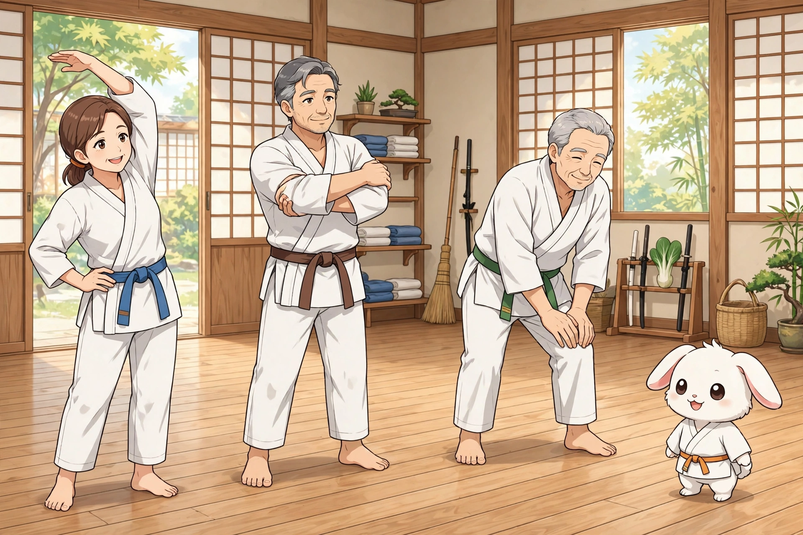
武道・武術の稽古は、始めることよりも、続けることのほうが長い時間を占めます。始めたころと同じ体のつもりで稽古を組み立て続けると、年齢を重ねるにつれて、疲れの残り方や関節への負担、回復にかかる時間に少しずつ変化が出てきます。この記事は、大人になってから始める方に向けた「始める側」の解説とは切り分け、すでに稽古を続けている方、これから長く続けていきたい方に向けて、「続ける側」の考え方を整理したものです。週単位の頻度の組み立て方そのものは稽古の頻度と続け方の目安｜週1回から始める無理のない続け方で扱っていますので、この記事では、頻度よりもさらに長い目で見た、年単位の見直しと、その日の体に合わせた進め方に絞って紹介します。案内役は太極拳担当のまる太です。まる太の「ゆっくりでも、止まらなければ続いている」という一言が、この記事の土台です。
稽古を始める段階の悩みは、「どのジャンルが合うか」「体力が持つか」「ついていけるか」といった、入り口での迷いが中心です。一方、数年単位で続けている方の悩みは、質が変わってきます。代表的なのは次のようなものです。
これらは、稽古をやめる理由というより、「進め方を見直す時期が来た」という合図として捉えるほうが、実情に合っています。体と生活は年単位で変わるものなので、稽古の進め方も年単位で見直していくもの、と考えると整理しやすくなります。
長く続けるための土台は、稽古の強さを上げることではなく、「無理をした日の翌週も、また道場に戻ってこられる」組み立てにあります。具体的には、次のような考え方が目安になります。
季節によって体の動き出しや疲れの出方が変わる点は、寒い時期に絞った冬の稽古の進め方｜寒い時期の体づくりと稽古の工夫でも触れています。この記事の考え方とあわせて、季節ごとの調整も年単位の見直しの一部として捉えてください。
長く続けるうえでは、稽古に行く前の「今日の体はどうか」を短く確認する習慣が役立ちます。精密な測定である必要はなく、次のような大まかな目安で十分です。
本記事は体調管理の一般的な考え方を整理したもので、特定の症状への対処や、稽古による体への効果を断定するものではありません。痛みや不調が続く場合は、稽古の工夫で済ませようとせず、医療機関や専門家への相談を優先してください。
年齢や体力に合わせて稽古を続けるというのは、稽古そのものをやめてしまうことではなく、「負担の大きい部分のやり方を変えながら、できる部分を残していく」ことです。ジャンルを問わず使える見方として、次のような分け方があります。
どの部分を調整できるかは、流派の方針や道場の運営によって異なります。「年齢のせいで全部を諦める」のではなく、「どの部分なら続けられるか」を指導者と話し合うことが、長く続けるための実質的な第一歩になります。
長く続ける方ほど、「休む」ことへのためらいが強くなりがちです。しかし、数年・数十年という単位で見れば、数週間から数か月の休みは、全体の中では小さな区切りです。判断の目安として、次の3つの選択肢を使い分ける考え方があります。
大切なのは、休むときに「戻る時期の目安」を自分の中で持っておくことです。「○週間休んで、回復の様子を見てから見学で復帰する」といった見通しがあると、休みがそのまま離脱につながりにくくなります。復帰の初回は、以前の強度に戻そうとせず、軽い日から再開する進め方が一般的です。
週単位の頻度は生活リズムの中で自然に決まっていきますが、年単位の見直しは、意識して機会を作らないと行われないまま過ぎていきます。誕生日や年始、昇級・昇段の審査のあとなど、自分なりの節目を決めて、次の点を棚卸ししてみてください。
見直しの結果は、大きな変更である必要はありません。「対人稽古の前に指導者へ一言伝えるようにする」「軽めの日を月に1回入れる」といった小さな調整の積み重ねが、結果として稽古を続けられる年数を支えていきます。
これから長く通う場所を探す方、ブランクを経て別の場所で再開する方にとっては、見学・体験の段階で「長く続けられる場所かどうか」を見ておくことが大切です。一般的な確認点に加えて、続ける側の観点では次の点が材料になります。体験そのものの服装や持ち物、稽古の一般的な流れは稽古を始める前に知っておきたいこと｜服装・持ち物・稽古の流れと心構えにまとめていますので、あわせて確認してください。
まる太のように、まずはゆっくりと見学席から道場全体を眺めてみてください。「長く続けている人が、無理のない顔で稽古しているか」は、案内文だけでは分からない、その場所の大切な情報です。
武道・武術を長く続けるとは、同じ進め方を何十年も繰り返すことではなく、年齢や体力、生活の変化に合わせて、進め方を少しずつ変え続けていくことです。その日の体で判断すること、負担の大きい部分は調整を相談すること、休むときは戻る見通しを持って休むこと、そして年に一度、稽古の置き場所を棚卸しすること。この繰り返しが、稽古を年単位で支えていきます。体の変化に合わせた進め方に迷ったときは、一人で抱え込まず、まずは通っている道場の指導者に相談してみてください。
子どもに武道・武術を習わせたい保護者に向けた読み物です。習わせる側の視点から、年齢・発達に合ったクラス選びと、見学・体験で確認したい道場選びのポイントを整理しました。
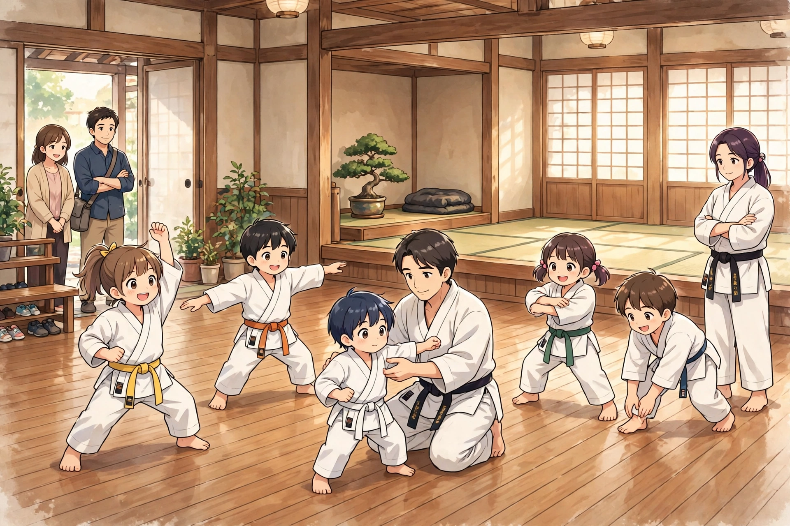
「子どもに武道・武術を習わせてみたい」と思ったとき、どのジャンルがよいかと同じくらい迷うのが、どの道場・教室を選ぶかです。子どもが通う場所選びは、大人自身が始める場合とは確認する観点が少し異なります。大人向けの始め方については大人から始める武道・武術｜年齢を気にせず稽古を始めるための見方で整理していますので、この記事では「子どもを習わせる側」の視点に絞り、年齢・発達に合ったクラス選び、指導体制や安全面、雰囲気といった道場選びの確認ポイント、見学・体験で見ること、保護者が確認しておきたい送迎や費用の考え方、無理なく続けるための目安を、一般論としてまとめました。対象年齢やクラスの分け方は道場ごとに異なるため、最後は候補先の案内と見学・体験で確かめてください。
習い事としての武道・武術を考えるときは、まず「何のために通わせたいか」と「子ども自身がどう感じているか」の両方を整理しておくと、候補を絞りやすくなります。保護者の願いと子どもの気持ちがずれていないかを確認することが、長く続けるうえでの土台になります。
この記事は、特定のジャンルや道場が子どもにどのような変化をもたらすかを断定するものではありません。あくまで、選び方と確認の観点を整理したものです。
子ども向けのクラスは、道場によって対象年齢の下限も、年齢や学年での分け方も異なります。同じ年齢でも発達の進み方や体格、集中できる時間の長さには個人差があるため、「何歳から始められるか」だけでなく「その子に合った進め方のクラスかどうか」を見ることが大切です。
子どもが通う場所を選ぶうえで、保護者が特に見ておきたいのは、指導体制、安全面、そして雰囲気の3点です。どれも案内文だけでは判断しにくいため、見学・体験とあわせて確認する前提で整理します。
挨拶や礼といった作法がどの程度大切にされているかも、道場の雰囲気を見る手がかりになります。作法の一般的な目安は稽古のマナーと礼儀の基礎｜初めての道場で戸惑わないための挨拶・礼・服装の目安にまとめていますので、見学の前に目を通しておくと、当日の様子を眺める観点が増えます。
見学と体験は、道場選びで最も情報量の多い機会です。子ども自身に参加させる体験だけでなく、保護者が見学席から眺める時間も含めて、次のような観点で見てみてください。
体験当日の服装や持ち物、稽古の一般的な流れについては、稽古を始める前に知っておきたいこと｜服装・持ち物・稽古の流れと心構えに一般的な準備をまとめています。子ども向けの体験では指定が異なる場合もあるため、申し込み時に体験先の案内もあわせて確認してください。
入会を決める前に、通い続ける前提で保護者側の事情も並べて確認しておきましょう。稽古そのものが合っていても、送迎や費用の負担が重なると続きにくくなります。
子どもが武道・武術を続けるかどうかは、稽古の内容だけでなく、家庭側の関わり方やペースの作り方にも左右されます。目安として、次のような考え方があります。
子どもに武術を習わせるときの道場選びで大切なのは、有名かどうかや進度の速さだけで比べることではなく、年齢・発達に合ったクラスがあり、指導体制と安全面に納得でき、子ども自身が「また行きたい」と感じられる雰囲気があるか、そして送迎や費用を含めて家庭が無理なく通わせ続けられるか、という組み合わせです。候補をいくつか見学し、この記事の確認ポイントを手に、子どもと一緒に眺めて比べてみてください。それが、後悔のない一歩目につながります。
躰道の成り立ちから、体軸を傾け・回して攻防する特徴、五つの操体と法形・実戦・展開の稽古の進み方、道具の目安、見学・体験で確認したい点までを整理した入門です。
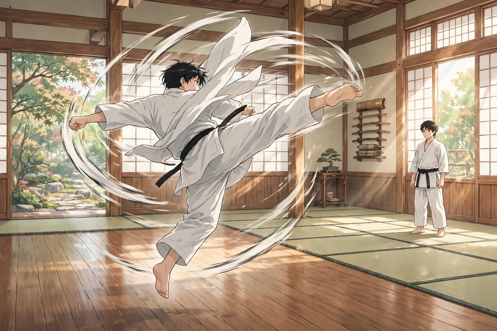
躰道は、体軸を傾けたり回したりしながら攻防を展開する、日本発祥の武道です。側転や宙返りのような体操的な動きも技として使い、直線的な打撃のやり取りとは異なる立体的な動きが特徴です。1965年に祝嶺正献によって発表され、空手を源流に持ちながら、体を大きく動かす独自の体系として発展してきました。この記事では、成り立ちと稽古の進み方、道具の目安、見学・体験で確認したい点を初心者向けに整理しました。
躰道の考え方の中心にあるのは「体軸の変化」です。体を垂直に保ったまま攻防するのではなく、体軸を傾け、回し、倒すことで相手の攻撃をかわしながら、回転や落下の勢いを乗せた打撃や蹴りを繰り出します。防御では、相手の攻撃を受け止めるよりも、体を動かしてかわすことが重視されます。
躰道の動きを支えるのが「操体」と呼ばれる五つの基本動作です。旋体は足を軸に体軸を旋回させる動き、運体は跳躍で体ごと前へ飛び出す動き、変体は倒れ込むように屈みながら攻撃をよけつつ攻める動き、捻体は体軸や上半身・下半身をねじる力を利用する動き、転体は体軸を前後左右上下へ回転させる動きです。転体の動きには、前転や側転、宙返りのような体操競技に近いものもあります。
競技には、1対1で有効な打突を競う「実戦」、決められた形の美しさと冴えを競う「法形」、1人の主役と5人の脇役が約束組手の形式で攻防を繰り広げる「展開」の3種目があります。段級位は六級から九段までが設けられています。
躰道は1965年（昭和40年）1月23日、祝嶺正献によって発表されました。祝嶺は1953年に玄制流空手道を創始した武術家で、空手を基にしながら、体軸を変化させて攻防する新しい武道の体系をまとめました。発表と同時に日本躰道本院と日本躰道協会が設立され、国内の普及と指導が進められました。
1980年代には世界躰道連盟が発足し、躰道は海外へも広がりました。世界躰道選手権大会は1993年に東京で第1回が開かれ、以後は4年に一度、日本と海外で交互に開催されています。普及が進んでいるのはフィンランド、スウェーデン、デンマーク、ノルウェーなどの北欧諸国をはじめ、アメリカ、オーストラリア、イギリス、フランスなどで、日本を含む10か国が世界躰道連盟に加盟しています。
躰道の稽古は、構えと運足の確認から始まり、少しずつ操体の動きへ進むのが一般的です。内容や順序は道場によって異なります。
1回の稽古は、多くの道場で1時間から2時間程度の枠で組まれています。側転や宙返りのような動きは、いきなり行うのではなく、受け身や基本の転回から段階を追って習うのが一般的です。
躰道の稽古で使う道具の目安は次のとおりです。指定の有無は道場ごとに異なるため、体験のときに確認してください。
道具の詳しい種類や選び方の目安は、読み物「稽古着と道具の基礎知識」もあわせてご覧ください
躰道の学び方は、段階ごとに次のような順序で進むのが一般的です。
向いているかどうかは、運動経験の有無だけで決まるものではありません。
通える地域で候補を挙げ、公式サイトの案内で見学・体験の受け付けを確認してみてください。道場の探し方や選び方の目安は、道場を探すとはじめての道場選びもあわせてご覧ください。
この記事にはアフィリエイトリンクが含まれます。当サイトはAmazonアソシエイト・プログラムに参加しています。価格・在庫はリンク先でご確認ください。ここで紹介する商品は、運営者が実際に使った感想（体験談）ではありません。
初めて武術の試合・大会を観戦する方に向けた読み物です。大会の種類のあらましから、初めての観戦での楽しみ方、型・組手の観るポイント、会場でのマナーと注意点まで、特定の大会や団体に依らない一般論として整理しました。
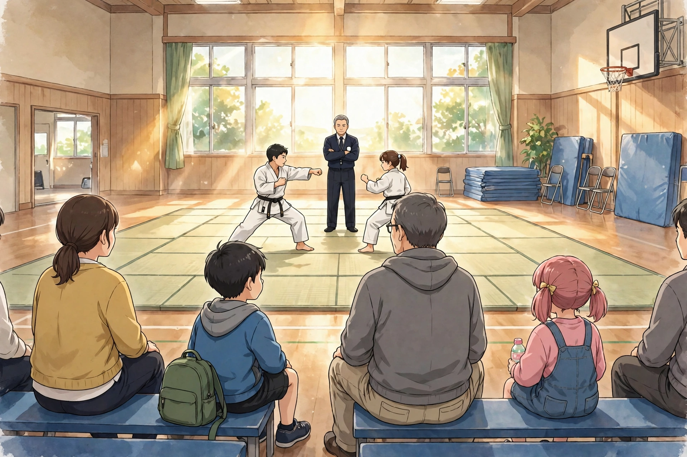
武術の大会を初めて観戦するとき、「何を見ればよいのか分からない」と感じる方は少なくありません。技の名前や判定の基準を知らなくても、見る順番と注目点を押さえておくと、試合の流れや選手の工夫が少しずつ見えてきます。この記事では、大会の種類のあらまし、初めての観戦での楽しみ方、型・組手それぞれの観るポイント、そして会場でのマナーを、ジャンル共通の一般論として整理します。ジャンルごとの特徴は武道・武術のジャンル入門｜空手・柔道・合気道・剣道・居合道の特徴と向いている人の目安で紹介していますので、あわせて目を通しておくと、当日の種目や部門の位置づけがつかみやすくなります。
武術の大会の形式は、ジャンルや流派、主催する団体によって大きく異なります。同じジャンル名でも、競い方や判定の仕方が違うことがあります。一般的には、次のような区分けで捉えると全体像が見えてきます。
当日の進み方については、会場で配られるプログラムや主催者の案内が最も確かな情報源です。部門名や種目名の意味が分からないときは、近くの係員に尋ねてみてください。
初めての観戦では、最初から細部を追おうとすると疲れてしまいます。案内役のみけ丸（空手担当）も「最初は一試合を通して眺めるのがいちばん」と話します。目安として、次のような順番で見ていくと、少しずつ目が慣れていきます。
知っている道場の選手や、家族・知人の出場がある場合は、その応援を軸に観戦するのも自然な楽しみ方です。出場がない場合でも、プログラムで部門の構成を眺めるだけでも、大会の全体像はつかめます。
型の演武を観るときは、個々の技の名前を知らなくても、次のような点に注目すると選手ごとの違いが見えてきます。
同じ型を複数の選手が続けて演じる部門では、選手ごとの解釈や体の使い方の違いを比べやすく、型観戦の面白さを感じやすい場面です。
対戦形式の試合では、技が決まる一瞬だけでなく、その前後の駆け引きに注目すると見応えが増します。
判定の基準はルールによって異なるため、「なぜ今の技がポイントになったのか」が分からない場面もあります。その場合は、審判の合図や場内アナウンス、プログラムのルール説明を確認すると理解が深まります。
武術の大会では、試合の前後に行われる礼や、入退場の所作も大切な要素です。選手同士が向き合って礼をし、試合が終われば勝敗にかかわらず礼で締める進め方は、多くのジャンルに共通しています。日ごろの稽古での作法の考え方は稽古のマナーと礼儀の基礎｜初めての道場で戸惑わないための挨拶・礼・服装の目安にまとめています。観戦の前に目を通しておくと、選手の所作の意味がつかみやすくなります。
会場全体の空気にも目を向けてみてください。演武や試合の合間の静けさ、決着の瞬間の拍手、選手を送り出す声援など、観客席の反応も大会の一部です。初めての観戦では、まずその空気ごと味わうつもりで座ると、細部にとらわれずに楽しめます。
ルールやマナーの細部は大会ごとに異なります。最終的には、当日の主催者の案内と場内アナウンスが基準です。
武術の大会観戦は、技の名前や判定基準を全て知らなくても楽しめます。大会の種類のあらましを知り、一試合を通して眺め、型の流れや組手の間合いに少しずつ目を向けていく。それだけでも、ふだんの稽古では見えにくい「本番での姿」が見えてきます。観戦をきっかけに稽古そのものへ関心が広がった方は、続ける側の視点を整理した武道・武術を長く続けるための考え方もあわせてご覧ください。まずは気軽に観客席に座り、選手たちの礼から礼までを、一度通して眺めてみてください。
エリア別ガイドの第1弾です。大阪府に掲載中の12件の道場・ジムを、ジャンル別の顔ぶれとエリアの分布から紹介し、道場選びで押さえたいポイントを整理しました。

大阪府は、このポータルに12件の道場・ジムが掲載されている地域です。空手や少林寺拳法、ボクシング、ムエタイといった打撃系から、ブラジリアン柔術や合気道の組技・寝技系、そして剣道・弓道・居合道・杖道といった武道系まで、ジャンルの幅が広くそろっているのが特徴です。案内役のみけ丸（空手担当）と一緒に、掲載中の12件をジャンル別に眺めながら、エリアの分布と選び方のポイントを整理していきます。大阪・関西で武道や武術を始めるときの探し方の一般論は大阪・関西で武道・武術を始める｜地域×流派の読み物にもまとめていますので、あわせて参考にしてください。
打撃系は掲載12件のうち半数の6件を占め、大阪で最も顔ぶれの厚いグループです。空手は流派の異なる2件が掲載されています。
同じ空手でも、松濤館流と沖縄剛柔流では型の形や稽古の進め方が異なります。流派ごとの特徴の違いは空手の流派入門｜松濤館流・剛柔流・糸東流・和道流の特徴と稽古の進め方で整理しています。少林寺拳法の道院が大阪市内に2件あるのも、この地域の打撃系の顔ぶれを特徴づけています。パンチ中心のボクシング、肘や膝も使うムエタイと並べて見ると、打撃系の中でも稽古の内容はさまざまです。
組み合って技をかける組技・寝技系は2件です。寝技を中心に学ぶブラジリアン柔術と、相手の力を流して制する合気道という、対照的な2ジャンルがそろっています。
打撃系と迷っている方は、まず「当て合う稽古」と「組み合う稽古」のどちらに興味が向くかを考えてみると、候補を絞りやすくなります。ジャンルごとの特徴や向いている人の目安は武道・武術のジャンル入門｜空手・柔道・合気道・剣道・居合道の特徴と向いている人の目安にもまとめています。
道具や武器を扱い、型や所作を重んじる武道系は4件です。大阪城公園内に拠点のある2件が並ぶのも、この地域らしい顔ぶれです。
剣道と居合道は同じ「剣」を扱いながら稽古の形が大きく異なり、弓道や杖道は静かな集中や型の所作が中心になります。掲載ジャンルの中でも道具との関わりが深いグループなので、見学の際は稽古の流れや道具の扱い方にも目を向けてみてください。
12件の所在地を市区町村別に見ると、大阪市に8件が集中しています。残りは吹田市に2件（心塾、大阪合気会 本部道場）、守口市に1件（守口杖道教室）、堺市に1件（無双直伝英信流居合道 錬信会）という分布です。大阪市内では、打撃系・組技系・武道系のいずれのジャンルも候補が見つかります。一方で、吹田市には空手と合気道、守口市には杖道、堺市には居合道と、市外の掲載はジャンルごとに拠点が分かれています。自宅や職場からの通いやすさを考えるときは、ジャンルの希望とエリアの分布を重ねて眺めると、現実的な候補が見えてきます。
候補が多い地域だからこそ、絞り込みの軸を持っておくと選びやすくなります。目安は次の3点です。
この3点を順に当てはめていくと、12件の中から自分に合う候補が自然と絞れてきます。最後は見学や体験で、道場の空気や指導の進め方を実際に確かめるのがおすすめです。
大阪は、打撃系から武道系まで幅広いジャンルの道場・ジムがそろう地域です。このページの道場を探すで都道府県に大阪府を選ぶと、今回紹介した12件を絞り込んで見られます。ジャンルや市区町村でさらに絞ることもできますので、気になる道場が見つかったら、各道場の公式案内で最新の稽古日や対象を確認し、見学・体験へ進んでみてください。初めて稽古に行く前の準備は稽古を始める前に知っておきたいこと｜服装・持ち物・稽古の流れと心構えにまとめています。
エリア別ガイドの第2弾です。東京都に掲載中の14件の道場・ジムを、ジャンル別の顔ぶれとエリアの分布から紹介し、道場選びで押さえたいポイントを整理しました。
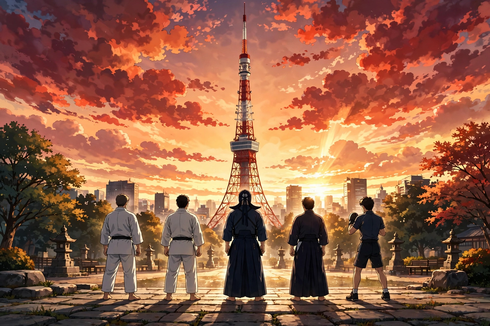
東京都は、このポータルに14件の道場・ジムが掲載されている地域です。空手やキックボクシングの打撃系、柔道やブラジリアン柔術、総合格闘技の組技・寝技系、合気道・剣道・居合道・少林寺拳法・古武道の武道系、そして太極拳・忍術・相撲まで、ジャンルの幅がとても広くそろっているのが特徴です。案内役のみけ丸（空手担当）と一緒に、掲載中の14件をジャンル別に眺めながら、エリアの分布と選び方のポイントを整理していきます。
打撃系は3件です。空手は流派の異なる2件が掲載されており、いずれも本部級の道場です。キックボクシングのジムが1件加わり、打撃系の中でも稽古の形はさまざまです。
同じ空手でも、新極真会のフルコンタクト系と松濤會の伝統空手では、稽古の進め方や組手の形が異なります。流派ごとの特徴の違いは空手の流派入門｜松濤館流・剛柔流・糸東流・和道流の特徴と稽古の進め方で整理しています。キックボクシングはパンチとキックを組み合わせた立ち技が中心で、空手の型稽古とはまた違った動きを学べます。
組み合って技をかける組技・寝技系は3件です。柔道の総本山と、寝技を中心に学ぶブラジリアン柔術、そして打撃・組み技・寝技を組み合わせる総合格闘技という、成り立ちの異なる3ジャンルがそろっています。
講道館は柔道の総本山で、一般・少年・外国人向けのクラスがあります。柔道の技の仕組みは柔道とは｜投げ技・寝技・礼法、寝技中心のブラジリアン柔術はブラジリアン柔術とは｜寝技中心の組み技、ポジションの考え方、総合的な動きを学ぶ総合格闘技は総合格闘技（MMA）とは｜打撃・組み技・寝技を組み合わせた総合武道にまとめています。打撃系と迷っている方は、まず「当て合う稽古」と「組み合う稽古」のどちらに興味が向くかを考えてみると、候補を絞りやすくなります。
型や所作を重んじる武道系は5件で、東京で最も顔ぶれの厚いグループです。合気道と剣道・居合道の本部級の道場が並ぶのが、この地域の大きな特徴です。
合気道の考え方と稽古の進め方は合気道とは？ 流派の特徴と稽古の進め方、剣道は剣道とは｜竹刀・防具・稽古の進め方、居合道は居合道とは｜刀の扱いと稽古の進め方、少林寺拳法は少林寺拳法とは｜剛法・柔法・鎮魂行にまとめています。同じ「剣」を扱う剣道と居合道でも稽古の形は大きく異なり、古武道の武器術や少林寺拳法の剛法・柔法まで並べて見ると、武道系の中でも学ぶ内容の幅が広いことが分かります。
上の3グループに入らないジャンルも3件あります。ゆったりした動きの太極拳、忍術、そして子どもが対象の相撲クラブと、それぞれ色合いの異なる顔ぶれです。
太極拳は健康クラスと武術クラスが分かれており、目的に合わせて選べる構成です。忍術は体術や武器の扱いを学ぶ珍しいジャンルで、相撲クラブは子どもが対象のため、親子で探している方にも候補になります。ジャンルごとの特徴や向いている人の目安は武道・武術のジャンル入門｜空手・柔道・合気道・剣道・居合道の特徴と向いている人の目安にもまとめています。
14件の所在地を市区町村別に見ると、文京区に2件（新極真会 東京お茶の水支部 小石川道場、講道館）、墨田区に2件（日本空手道松濤會 本部道場「松濤館」、CAVE BJJ）が集まっています。残りの10件は新宿区・台東区・渋谷区・世田谷区・練馬区・北区・多摩市・品川区・江東区・中野区に各1件と、都心から多摩まで広く点在しています。文京区と墨田区では打撃系と組技・寝技系の両方が見つかり、他の区ではジャンルごとに拠点が分かれています。自宅や職場からの通いやすさを考えるときは、ジャンルの希望とエリアの分布を重ねて眺めると、現実的な候補が見えてきます。
候補が多い地域だからこそ、絞り込みの軸を持っておくと選びやすくなります。目安は次の3点です。
この3点を順に当てはめていくと、14件の中から自分に合う候補が自然と絞れてきます。最後は見学や体験で、道場の空気や指導の進め方を実際に確かめるのがおすすめです。
東京は、打撃系から組技・寝技系、武道系まで幅広いジャンルの道場・ジムがそろう地域です。このページの道場を探すで都道府県に東京都を選ぶと、今回紹介した14件を絞り込んで見られます。ジャンルや市区町村でさらに絞ることもできますので、気になる道場が見つかったら、各道場の公式案内で最新の稽古日や対象を確認し、見学・体験へ進んでみてください。初めて稽古に行く前の準備は稽古を始める前に知っておきたいこと｜服装・持ち物・稽古の流れと心構えにまとめています。
エリア別ガイドの第3弾です。福岡県に掲載中の11件の道場・ジムを、ジャンル別の顔ぶれとエリアの分布から紹介し、道場選びで押さえたいポイントを整理しました。
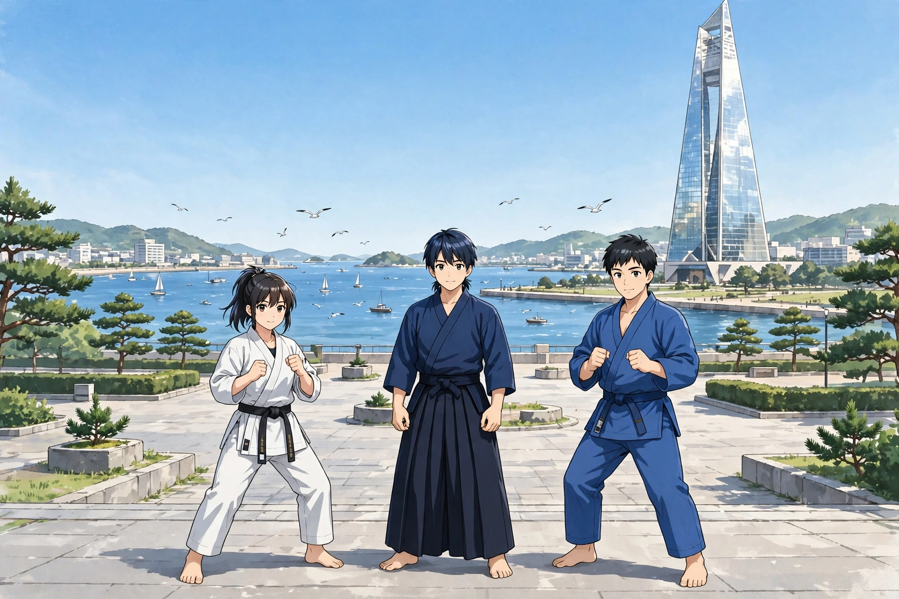
福岡県は、このポータルに11件の道場・ジムが掲載されている地域です。空手・ボクシング・キックボクシングの打撃系、柔道・総合格闘技の組技・寝技系、合気道・剣道・忍術の武道系、そして中国武術・太極拳・詠春拳・カポエイラまで、ジャンルの幅が広くそろっているのが特徴です。掲載の11件のうち10件は福岡市に集まり、残る1件は久留米市にあります。案内役のみけ丸（空手担当）と一緒に、掲載中の11件をジャンル別に眺めながら、エリアの分布と選び方のポイントを整理していきます。
打撃系は3件です。空手の道場に、ボクシングジムとキックボクシングジムが加わり、打撃系の中でも稽古の形はさまざまです。子どもから大人まで対象にしたクラス編成の道場が多く、始めやすい顔ぶれになっています。
同じ打撃系でも、空手の型や組手を中心にした稽古と、ボクシングやキックボクシングのミットやサンドバッグを使った稽古では、動きの学び方が異なります。空手の流派による稽古の違いについては空手の流派入門｜松濤館流・剛柔流・糸東流・和道流の特徴と稽古の進め方も参考になります。ボクシングやキックボクシングは、パンチやキックを組み合わせた立ち技が中心で、体を動かす楽しさから入りやすいジャンルです。
組み合って技をかける組技・寝技系は2件です。柔道の道場と、ブラジリアン柔術と総合格闘技を学べるジムという、成り立ちの異なる2件がそろっています。
柔道の技の仕組みは柔道とは｜投げ技・寝技・礼法、寝技中心のブラジリアン柔術はブラジリアン柔術とは｜寝技中心の組み技、ポジションの考え方、総合的な動きを学ぶ総合格闘技は総合格闘技（MMA）とは｜打撃・組み技・寝技を組み合わせた総合武道にまとめています。打撃系と迷っている方は、まず「当て合う稽古」と「組み合う稽古」のどちらに興味が向くかを考えてみると、候補を絞りやすくなります。
型や所作を重んじる武道系は3件です。合気道と剣道の道場に、忍術の道場が加わり、武道系の中でも学ぶ内容の幅が広い顔ぶれになっています。
合気道の考え方と稽古の進め方は合気道とは？ 流派の特徴と稽古の進め方、剣道は剣道とは｜竹刀・防具・稽古の進め方にまとめています。合気道と剣道では使う道具も稽古の形も異なり、忍術は体術や武器の扱いを学ぶ珍しいジャンルです。武道系の中でも、型を重んじるものと護身の動きを中心にしたものがあることを知っておくと、候補の見え方が変わってきます。
上の3グループに入らないジャンルも3件あります。中国武術と太極拳、詠春拳、カポエイラと、それぞれ色合いの異なる顔ぶれです。
太極拳はゆったりした動きの稽古が中心で、武術クラスと分かれているため目的に合わせて選べます。詠春拳は近接した間合いでの動きを学ぶ中国武術で、久留米市にある福岡県内では貴重な拠点です。カポエイラは音楽に合わせて動くブラジル発祥の武術で、親子で参加できるクラスもあります。ジャンルごとの特徴や向いている人の目安は武道・武術のジャンル入門｜空手・柔道・合気道・剣道・居合道の特徴と向いている人の目安にもまとめています。
11件の所在地を市区町村別に見ると、福岡市に10件、久留米市に1件です。福岡市の中では中央区に4件（柔道道場 明道館、護国少年剣道部、天行健中国武術館・福岡分館、GREED GYM）、南区に3件（正道会館 福岡校、合気道いぶき館、博多協栄ボクシングジム）、早良区に2件（福岡天神武神館道場、カポエイラ福岡）、博多区に1件（CARPE DIEM FUKUOKA）が集まっています。福岡市の中心部に多くのジャンルが集まっているため、ジャンルの希望と通いやすさを重ねて候補を比べやすい地域です。久留米市の日本詠春拳協会は、福岡市とは別エリアの拠点として、筑後地域から探している方にも候補になります。
候補が多い地域だからこそ、絞り込みの軸を持っておくと選びやすくなります。目安は次の3点です。
この3点を順に当てはめていくと、11件の中から自分に合う候補が自然と絞れてきます。最後は見学や体験で、道場の空気や指導の進め方を実際に確かめるのがおすすめです。
福岡は、打撃系から組技・寝技系、武道系まで幅広いジャンルの道場・ジムがそろう地域です。このページの道場を探すで都道府県に福岡県を選ぶと、今回紹介した11件を絞り込んで見られます。ジャンルや市区町村でさらに絞ることもできますので、気になる道場が見つかったら、各道場の公式案内で最新の稽古日や対象を確認し、見学・体験へ進んでみてください。初めて稽古に行く前の準備は稽古を始める前に知っておきたいこと｜服装・持ち物・稽古の流れと心構えにまとめています。
エリア別ガイドの第4弾です。愛知県に掲載中の8件の道場・ジムを、ジャンル別の顔ぶれとエリアの分布から紹介し、道場選びで押さえたいポイントを整理しました。
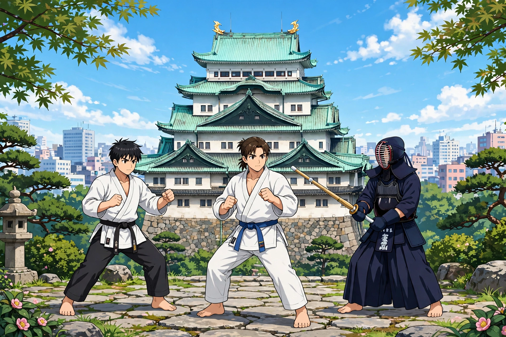
愛知県は、このポータルに8件の道場・ジムが掲載されている地域です。掲載の8件はすべて名古屋市にあり、空手・ボクシング・キックボクシングの打撃系、柔道・総合格闘技の組技・寝技系、合気道・居合道の武道系、そして中国武術・太極拳まで、ジャンルの幅が広くそろっているのが特徴です。名古屋市内では東区に3件、天白区に2件と、市の東部に集まる傾向があります。案内役のみけ丸（空手担当）と一緒に、掲載中の8件をジャンル別に眺めながら、エリアの分布と選び方のポイントを整理していきます。
打撃系は3件です。空手の道場に、ボクシングジムとキックボクシングジムが加わり、打撃系の中でも稽古の形はさまざまです。子どもから大人まで対象にしたクラス編成の道場が多く、始めやすい顔ぶれになっています。
同じ打撃系でも、空手の型や組手を中心にした稽古と、ボクシングやキックボクシングのミットやサンドバッグを使った稽古では、動きの学び方が異なります。空手の流派による稽古の違いについては空手の流派入門｜松濤館流・剛柔流・糸東流・和道流の特徴と稽古の進め方も参考になります。ボクシングやキックボクシングは、パンチやキックを組み合わせた立ち技が中心で、体を動かす楽しさから入りやすいジャンルです。
組み合って技をかける組技・寝技系は2件です。柔道の道場と、ブラジリアン柔術と総合格闘技を学べる道場という、成り立ちの異なる2件がそろっています。
柔道の技の仕組みは柔道とは｜投げ技・寝技・礼法の特徴と稽古の進め方、寝技中心のブラジリアン柔術はブラジリアン柔術とは｜寝技中心の組み技、ポジションの考え方、総合的な動きを学ぶ総合格闘技は総合格闘技（MMA）とは｜打撃・組み技・寝技を組み合わせた総合武道にまとめています。打撃系と迷っている方は、まず「当て合う稽古」と「組み合う稽古」のどちらに興味が向くかを考えてみると、候補を絞りやすくなります。
型や所作を重んじる武道系は2件です。合気道の道場と居合道の道場という、学ぶ内容の異なる2件がそろっています。
合気道の考え方と稽古の進め方は合気道とは？ 流派の特徴と稽古の進め方、居合道は居合道の特徴と歴史｜抜刀・納刀の型と向いている人の目安にまとめています。合気道と居合道では使う道具も稽古の形も異なりますが、どちらも型を重んじる武道です。武道系の中でも、相手との動きを中心にしたものと、刀の扱いを中心にしたものがあることを知っておくと、候補の見え方が変わってきます。
上の3グループに入らないジャンルが1件あります。中国武術と太極拳を学べる道場です。
太極拳はゆったりした動きの稽古が中心で、武術クラスと分かれているため目的に合わせて選べます。太極拳の特徴と始め方は太極拳の特徴と始め方｜ゆっくりした動きの稽古と教室で学ぶ内容にまとめています。ジャンルごとの特徴や向いている人の目安は武道・武術のジャンル入門｜空手・柔道・合気道・剣道・居合道の特徴と向いている人の目安にもまとめています。
8件の所在地を市区町村別に見ると、すべて名古屋市です。名古屋市の中では東区に3件（琉球少林流空手道月心会 名古屋本部道場、キックスターズジャパン、総合格闘技道場アライブ）、天白区に2件（石田道場、CENTRAL WUSHU 名古屋八事本部道場）、昭和区に1件（合気道昭和道場）、緑区に1件（緑ボクシングジム）が集まり、櫻千館 居合道場は市内に複数の稽古会場があります。名古屋市の東部に多くのジャンルが集まっているため、ジャンルの希望と通いやすさを重ねて候補を比べやすい地域です。名古屋市以外の愛知県内の道場は、現在の掲載にはありません。
候補が名古屋市に集まっている地域だからこそ、絞り込みの軸を持っておくと選びやすくなります。目安は次の3点です。
この3点を順に当てはめていくと、8件の中から自分に合う候補が自然と絞れてきます。最後は見学や体験で、道場の空気や指導の進め方を実際に確かめるのがおすすめです。
愛知は、打撃系から組技・寝技系、武道系まで幅広いジャンルの道場・ジムが名古屋市にそろう地域です。このページの道場を探すで都道府県に愛知県を選ぶと、今回紹介した8件を絞り込んで見られます。ジャンルや市区町村でさらに絞ることもできますので、気になる道場が見つかったら、各道場の公式案内で最新の稽古日や対象を確認し、見学・体験へ進んでみてください。初めて稽古に行く前の準備は稽古を始める前に知っておきたいこと｜服装・持ち物・稽古の流れと心構えにまとめています。
エリア別ガイドの第5弾です。広島県に掲載中の6件の道場・ジムを、ジャンル別の顔ぶれとエリアの分布から紹介し、道場選びで押さえたいポイントを整理しました。
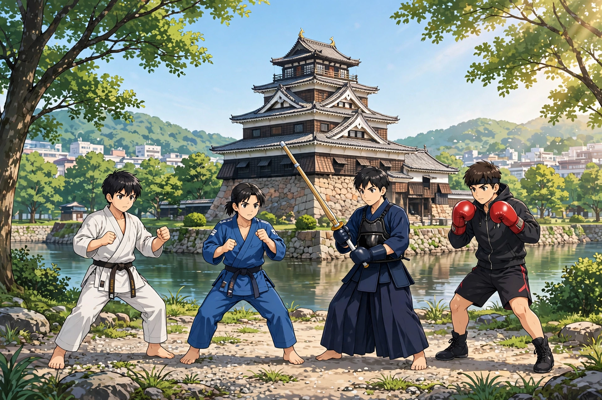
広島県は、このポータルに6件の道場・ジムが掲載されている地域です。掲載の6件のうち5件が広島市にあり、残る1件が呉市です。空手・ボクシング・キックボクシングの打撃系が3件、柔道の組技系が1件、なぎなたの武器術が1件、中国武術の詠春拳が1件と、ジャンルの幅が広くそろっているのが特徴です。広島市内では中区に3件、南区に2件と、市の中心部に集まる傾向があります。案内役のみけ丸（空手担当）と一緒に、掲載中の6件をジャンル別に眺めながら、エリアの分布と選び方のポイントを整理していきます。
打撃系は3件です。フルコンタクト空手の道場に、ボクシングジムとキックボクシングスタジオが加わり、打撃系の中でも稽古の形はさまざまです。子どもから大人まで対象にしたクラス編成の道場と、一般向けのジムがそろい、目的に合わせて選べる顔ぶれになっています。
同じ打撃系でも、空手の型や組手を中心にした稽古と、ボクシングやキックボクシングのミットやサンドバッグを使った稽古では、動きの学び方が異なります。空手の流派による稽古の違いについては空手の流派入門｜松濤館流・剛柔流・糸東流・和道流の特徴と稽古の進め方も参考になります。ボクシングはボクシングの特徴と始め方｜基本のパンチ・フットワークとジムでの稽古、キックボクシングはキックボクシングの特徴と始め方｜パンチとキックの稽古と向いている人にまとめています。
組み合って技をかける組技・寝技系は1件です。呉市の柔道場で、幼年から大人まで幅広い年代が稽古しています。
柔道の技の仕組みは柔道とは｜投げ技・寝技・礼法の特徴と稽古の進め方にまとめています。打撃系と迷っている方は、まず「当て合う稽古」と「組み合う稽古」のどちらに興味が向くかを考えてみると、候補を絞りやすくなります。
型や所作を重んじる武道系・武器術は1件です。なぎなたのクラブで、性別や年齢を問わず初心者と経験者が一緒に稽古しています。
なぎなたは長柄の武器を扱う武道で、型の稽古を中心に学びます。武器術を含む武道のジャンル全体の位置づけは武道・武術のジャンル入門｜空手・柔道・合気道・剣道・居合道の特徴と向いている人の目安にもまとめています。
上の3グループに入らないジャンルが1件あります。中国武術の詠春拳を学べる道場です。
詠春拳は近接した距離での攻防を特徴とする中国武術で、型と対人稽古を組み合わせて学びます。中国武術のジャンル全体の特徴や向いている人の目安は武道・武術のジャンル入門｜空手・柔道・合気道・剣道・居合道の特徴と向いている人の目安にもまとめています。
6件の所在地を市区町村別に見ると、広島市が5件、呉市が1件です。広島市の中では中区に3件（今岡賢覚ボクシングオーソリティー、Studio-K、詠春拳術道 広島）、南区に2件（新極真会 広島支部 大濱道場、広島市なぎなた安芸クラブ）が集まり、呉市には呉弘道館があります。広島市の中心部に多くのジャンルが集まっているため、ジャンルの希望と通いやすさを重ねて候補を比べやすい地域です。広島市と呉市以外の広島県内の道場は、現在の掲載にはありません。
候補が広島市の中心部に集まっている地域だからこそ、絞り込みの軸を持っておくと選びやすくなります。目安は次の3点です。
この3点を順に当てはめていくと、6件の中から自分に合う候補が自然と絞れてきます。最後は見学や体験で、道場の空気や指導の進め方を実際に確かめるのがおすすめです。
広島は、打撃系から組技系、武器術、中国武術まで幅広いジャンルの道場・ジムが広島市を中心にそろう地域です。このページの道場を探すで都道府県に広島県を選ぶと、今回紹介した6件を絞り込んで見られます。ジャンルや市区町村でさらに絞ることもできますので、気になる道場が見つかったら、各道場の公式案内で最新の稲古日や対象を確認し、見学・体験へ進んでみてください。初めて稽古に行く前の準備は稽古を始める前に知っておきたいこと｜服装・持ち物・稽古の流れと心構えにまとめています。
新連載「武術・格闘技漫画紹介」の第1回です。川原正敏の格闘漫画『修羅の門』の作品データとあらすじ、作中で描かれる武術の読みどころを、武術の視点から紹介します。
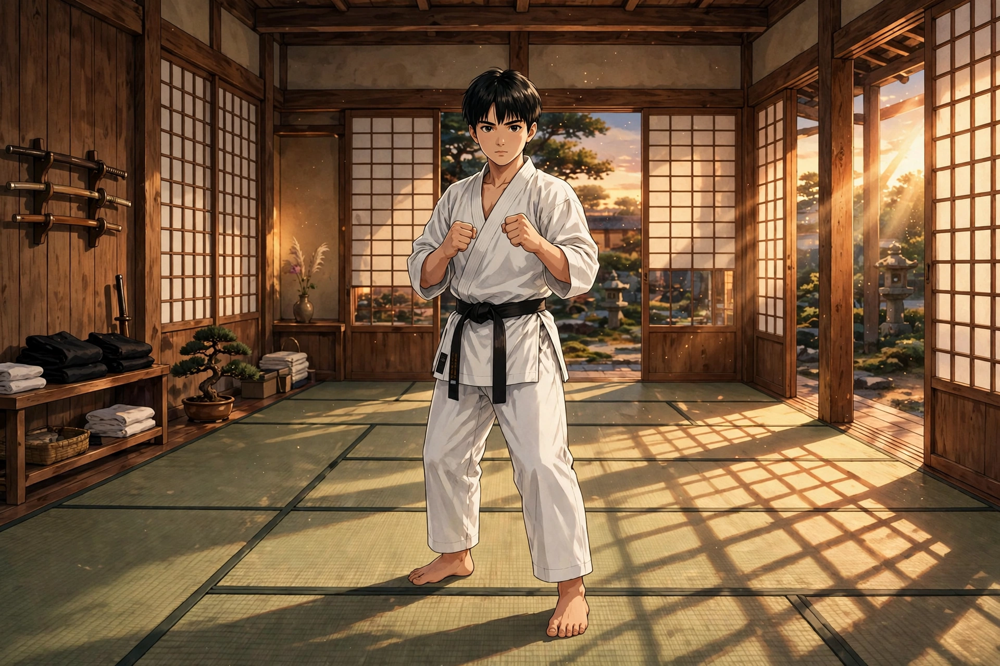
『修羅の門』（しゅらのもん）は、川原正敏による格闘漫画です。千年にわたり不敗を誇るとされる架空の古武術「陸奥圓明流（むつえんめいりゅう）」の継承者・陸奥九十九（むつ つくも）が、圓明流こそ地上最強であることを証明するため、各地の強敵たちと素手で戦い続ける物語です。1987年に連載が始まり、格闘漫画の代表作の一つとして長く読み継がれてきました。新連載「武術・格闘技漫画紹介」の第1回は、この作品を取り上げます。
物語は、山で修行を積んできた少年・陸奥九十九が、陸奥圓明流の強さを世に証明するために下山するところから始まります。最初の舞台は実戦空手の道場です。普段は飄々として掴みどころのない九十九が、体格も経験も勝る実戦空手の強豪たちに、武器を持たない素手の武術で挑みます。
その後、戦いの場は異種格闘技の大会、海外でのプロボクシングへの挑戦、総合格闘技の大会へと大きく広がっていきます。相手の流派も、試合のルールも、その都度まったく異なる戦いの中で、一つの流派の技がどこまで通用するのか。それが物語を通して問い続けられるテーマです。九十九が最後にたどり着く場所については、ここでは触れません。ぜひ本編で確かめてください。
陸奥圓明流は実在しない架空の流派ですが、その技の描写には、実際の武術・格闘技の考え方が色濃く反映されています。相手の攻撃を受け流すこと、間合いを詰める・外すこと、軸を保ったまま力を伝えること。こうした要素は、空手や柔道、中国武術など、現実の稽古でも大切にされるものばかりです。派手な技の応酬だけでなく、「なぜその技が効くのか」を考えながら読めるのが、本作の大きな読みどころです。
もう一つの読みどころは「ルールの違い」です。ポイントや反則のある競技の戦い方と、ルールのない戦いでは、同じ技でも意味が変わります。本作はその違いを物語の軸に据え、九十九が相手の土俵に合わせて戦い方を変えていく様子を描きます。また、空手家やボクサー、総合格闘家といった強敵たちも、それぞれの競技への誇りを持った人物として描かれるため、戦いは単なる勝ち負け以上の読み応えになっています。武術を稽古している人が読めば、型や基本で繰り返す動きが戦いの中でどう生きるのかを考えるきっかけにもなる作品です。
全31巻と長編ですが、部ごとに舞台と相手が変わる構成のため、区切りをつけて読み進めやすい作品でもあります。
『修羅の門』で九十九が最初に挑むのは、実戦空手の使い手たちです。実在の空手については、流派紹介「空手の特徴と歴史」で、型・基本・組手の稽古の進め方を紹介しています。作中に登場する総合格闘技については「総合格闘技（MMA）とは」もあわせてご覧ください。漫画で武術の世界に触れて「自分もやってみたい」と思ったら、道場を探すから、通える地域の道場を探してみてください。
この記事にはアフィリエイトリンクが含まれます。当サイトはAmazonアソシエイト・プログラムに参加しています。価格・在庫はリンク先でご確認ください。ここで紹介する商品は、運営者が実際に使った感想（体験談）ではありません。

物語の始まりとなる第1巻です。陸奥九十九が実戦空手道場・神武館に挑む、連載の出発点が収録されています。内容の詳細は商品ページで確認してください。
Amazonで見る型をこれから覚える方、覚えた型をもう一段深めたい方に向けた読み物です。型とは何かという基本から、覚えるときの進め方、深めるときの見直しポイント、つまずきやすい点、稽古の記録の取り方まで、特定の流派や道場のやり方に依らない一般論として整理しました。
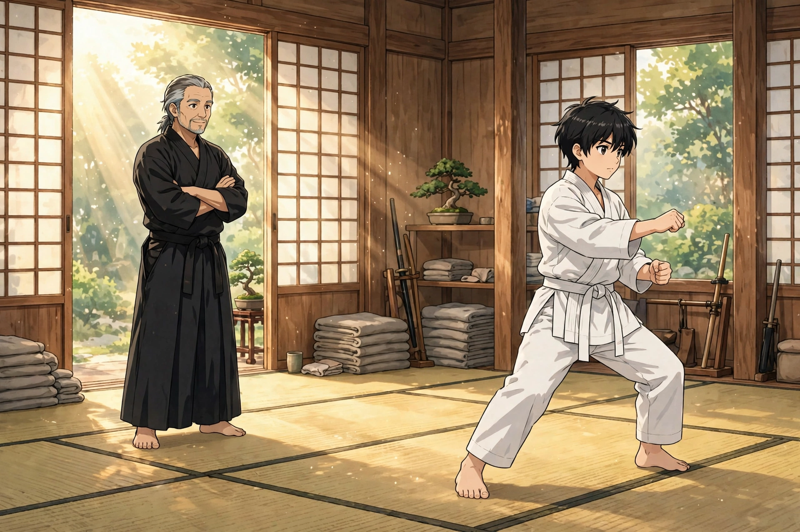
型の稽古は、順番を覚えるまでが第一の山で、覚えたあとにどう深めていくかが第二の山だと言われます。どちらも、進め方の目安を持っていると取り組みやすくなります。この記事では、型とは何かという基本の捉え方から、覚えるときの進め方、深めるときの見直しポイント、つまずきやすい点、記録と見直しの工夫、そして道場で指導者に聞くとよい質問の例までを、ジャンルや流派を問わない一般論として整理します。流派ごとの決まりや道場ごとの進め方はそれぞれ異なりますので、最終的には自分の道場の指導に沿って読み替えてください。
型とは、流派ごとに受け継がれてきた、決まった動きのまとまりのことです。一人で演じる形が中心のジャンルもあれば、二人一組で行う形や、武器を使う形を持つジャンルもありますが、多くの場合、突き・受け・蹴り・移動といった基本の動きの組み合わせでできています。型の中では、相手を想定した攻防の流れが一連の動きとして収められており、基本稽古で一つずつ身につけた動きを、実際の流れの中でつなげて使う練習台でもあります。
大切なのは、型の形や重視する点は流派によって違うということです。同じジャンルの中でも、立ち方の幅や力の込め方、動きの解釈に違いがあることは珍しくありません。空手であれば、型・基本・組手が稽古の柱として並ぶことが多く、その全体像は空手の特徴と歴史｜型・基本・組手の稽古と向いている人の目安にまとめています。また、流派によって型と組手のどちらを中心に置くかが異なる背景は、流派で違う稽古の考え方｜型・組手・護身、それぞれを重視する理由と自分に合う方向の見方でも触れています。自分の流派では型をどう位置づけているのかを知っておくと、日々の型稽古の意味合いが見えやすくなります。
新しい型を覚えるときは、いきなり細部まで正確に再現しようとするより、段階を踏むほうが結果として身につきやすいとされます。一般的な進め方の目安は次の通りです。
稽古を始めたばかりで道場の進め方自体にまだ慣れていない場合は、稽古を始める前に知っておきたいこと｜服装・持ち物・稽古の流れと心構えもあわせて目を通しておくと、型稽古が稽古全体の中でどう位置づくかが見えやすくなります。
順番を覚えたあとの段階では、動きの質を見直していく練習が中心になります。見直しの観点として、一般に次のような点が挙げられます。
見直しは一度に全部を直そうとせず、稽古ごとに一つか二つの観点に絞ると、意識が散らからずに取り組めます。
型稽古でつまずきやすい点には、ある程度共通した傾向があります。心当たりがないか、振り返りの参考にしてください。
型稽古は上達が目に見えにくい分、記録が助けになります。凝った道具は要らず、稽古のあとに短いメモを残すだけでも違いが出ます。
記録は上手・下手を判定するためのものではなく、自分の変化をあとから確かめるためのものです。過去のメモと今の感覚を比べると、少しずつでも積み上がっている部分が見えてきます。
覚え方や動きの意味に迷ったときは、自己判断で固めず、指導者に確認するのが近道です。質問の形にしておくと聞きやすくなります。
質問のしかたや稽古中の確認のタイミングは、道場の進め方や雰囲気によって異なります。稽古の区切りのよい場面を選ぶ、他の稽古生の指導の場面も観察するなど、場の流れに沿った聞き方を心がけてください。
型稽古は、「順番を覚える段階」と「動きの質を深める段階」を分けて考えると、取り組み方が整理できます。覚える段階では全体像から区切りへ、ゆっくりから少しずつ速く。深める段階では姿勢と重心、動きのつながりと間、呼吸、そして基本稽古との往復を観点にします。つまずきやすい点を早めに知り、記録と見直しの習慣を持ち、迷ったら指導者に確認する。この積み重ねが、型を通して基本の動きを自分のものにしていく道筋です。具体的な型の内容や指導の進め方は流派と道場によって異なりますので、この記事は一般的な目安として、日々の稽古の振り返りに役立ててください。
截拳道の成り立ちから、ブルース・リーの「型にはまらない」考え方、基本の稽古の進み方、道具の目安、見学・体験で確認したい点までを整理した入門です。
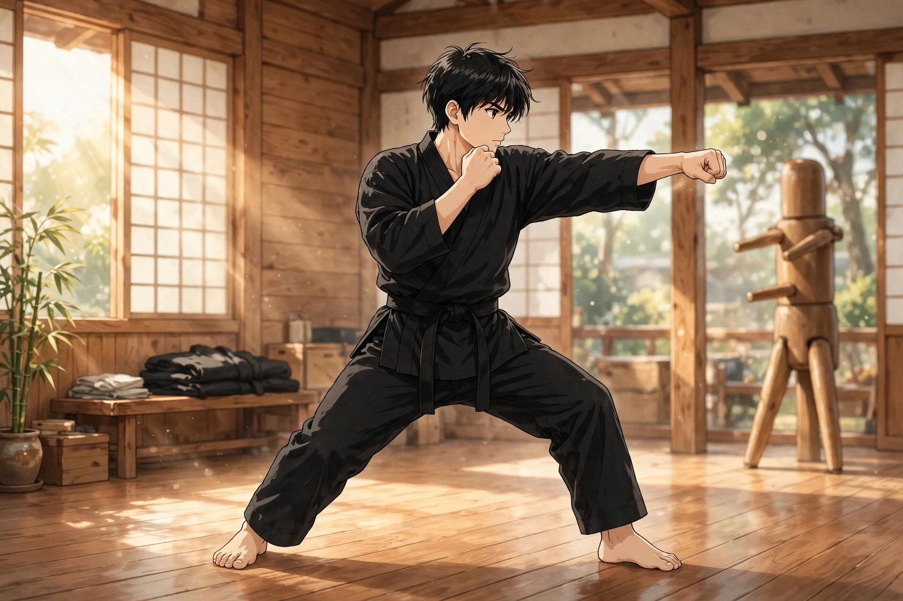
截拳道（ジークンドー）は、俳優・武術家のブルース・リーが創案した武術の考え方です。決まった型を覚えて繰り返すのではなく、相手の動きを迎え撃つように、無駄のない直接的な動きを身につけることを目指します。詠春拳を土台に、ボクシングやフェンシングなど他の武術の要素も取り入れながら、1960年代に香港とアメリカで形作られました。この記事では、成り立ちと稽古の進み方、道具の目安、見学・体験で確認したい点を初心者向けに整理しました。
截拳道の名前は「相手の拳を截（き）る（迎え撃つ）道」という意味で知られています。中心にあるのは、決まった形に自分を当てはめるのではなく、自分の体格や動きの癖に合わせて、無駄のない動きを選んでいく考え方です。ブルース・リーは「水のようになれ（Be water）」という言葉でも知られ、型や流派の枠にとらわれず、役立つものを取り入れる姿勢を大切にしました。
そのため截拳道には、他の武道のような決まった型の体系がありません。稽古では、基本の構えや足運び、突き・蹴りの動きを身につけながら、相手との距離やタイミングに合わせて動く練習を重ねます。同じ「截拳道」の名前でも、指導する団体や指導者によって稽古の内容や進め方が異なる場合があります。
ブルース・リー（1940〜1973）は香港で詠春拳を学び、後にアメリカへ渡りました。1960年代、アメリカで武術を教える中で、既存の型や流派の枠組みだけでは自分の考える動きを表しきれないと感じ、截拳道の考え方をまとめていきました。「截拳道」という名前が使われるようになったのは1967年ごろとされています。
リーは俳優としても活躍し、映画を通して截拳道の動きや考え方が世界に広まりました。1973年にリーが亡くなったあとも、教えを受けた弟子たちが各地で指導を続け、截拳道は世界各地の道場やジムで稽古されるようになりました。日本国内でも、截拳道を掲げる道場や教室があり、稽古の内容は指導者や団体によって異なります。
截拳道の稽古は、構えと足運びの確認から始まり、少しずつ対人での練習へ進むのが一般的です。内容や順序は道場によって異なります。
1回の稽古は、多くの道場で1時間から2時間程度の枠で組まれています。木人椿（ムックヤンジョン）と呼ばれる木製の練習器具を使う道場もありますが、扱いは道場ごとに異なります。
截拳道の稽古で使う道具の目安は次のとおりです。指定の有無は道場ごとに異なるため、体験のときに確認してください。
道具の詳しい種類や選び方の目安は、読み物「稽古着と道具の基礎知識」もあわせてご覧ください
向いているかどうかは、運動経験の有無だけで決まるものではありません。
通える地域で候補を挙げ、公式サイトの案内で見学・体験の受け付けを確認してみてください。道場の探し方や選び方の目安は、道場を探すとはじめての道場選びもあわせてご覧ください。
この記事にはアフィリエイトリンクが含まれます。当サイトはAmazonアソシエイト・プログラムに参加しています。価格・在庫はリンク先でご確認ください。ここで紹介する商品は、運営者が実際に使った感想（体験談）ではありません。

ブルース・リー本人が書き残した截拳道の考え方と稽古の記録をまとめた書籍です。英語版です。内容の詳細は商品ページで確認してください。
Amazonで見る武術の稽古で繰り返し意識される「呼吸」について、息を止めないことや力を出す場面で吐く目安、姿勢との関係、型や基本稽古で動きと呼吸を合わせる確認ポイントを、流派を問わない一般論として整理した読み物です。
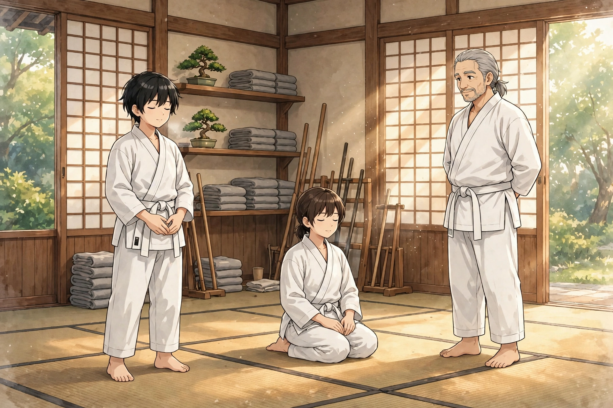
武術の稽古では、突きや蹴り、受け、投げといった動きと同じくらい、呼吸の扱いが繰り返し口にされます。「息を止めないで」「出すときに吐いて」といった声かけを聞いたことがある方も多いのではないでしょうか。この記事では、武術における呼吸法の基礎として、呼吸が土台として扱われる理由、息を止めない・力を出す場面で吐くといった基本の考え方、姿勢と呼吸の関係、型や基本稽古で動きと呼吸を合わせる目安、つまずきやすい点、そして道場で指導者に聞くとよい質問の例を、ジャンルや流派を問わない一般論として整理します。呼吸の教え方は流派や道場によって異なりますので、最終的には自分の道場の指導に沿って読み替えてください。
多くの武術では、呼吸は単に息を吸って吐く動作としてではなく、動きのリズムや姿勢の安定、力の出し方と関わる土台として扱われます。たとえば、力む場面で息を止めたまま動くと、動きが硬くなったり、次の動作への移り変わりが遅れたりすることがあるため、稽古では「止めずに呼吸を続ける」ことが基本として伝えられることが多いです。
呼吸への意識は、型稽古の中でも観点の一つとして挙がります。型の流れの中でどこで吸い、どこで吐くかは、動きの緩急や間（ま）の取り方ともつながります。その全体像は型を覚える・深める練習の進め方｜型稽古の進め方と見直しのポイントでも、姿勢や動きのつながりとあわせて整理しています。呼吸だけを切り離して考えるのではなく、姿勢と動きとセットで捉えることが、基礎を理解する近道になります。
流派を問わず、初心者向けの指導で比較的共通して見られる呼吸の目安は、次の三つに整理できます。
お腹まわりを使ってゆっくり呼吸する腹式呼吸と、胸まわりを使って呼吸する胸式呼吸という分け方も、呼吸法の説明ではよく登場します。どちらが正しいかという話ではなく、稽古の場面や目的によって意識の置き方が変わるものとして捉えてください。具体的な呼吸の回数や秒数といった決まりは、流派や指導者によって扱いが異なるため、この記事では一律の数字は示しません。
呼吸は姿勢の影響を大きく受けます。背中が丸まった姿勢や、逆に胸を張りすぎて反った姿勢では、息が浅くなりやすいとされます。稽古の始まりに立った姿勢や正座で静かに呼吸を整える時間を置く道場が多いのは、動き出す前に姿勢と呼吸の土台を確認するためです。
ゆっくりした動きの中で姿勢と呼吸を合わせて確認していく稽古の例としては、太極拳の進め方が参考になります。太極拳の特徴と始め方｜ゆっくりした動きの稽古と教室で学ぶ内容では、動作の流れに合わせて呼吸を乱さないことや、重心の移動を途切れさせないことが稽古の要点として紹介されています。速い動きのジャンルでも、まずはゆっくりした動きの中で「姿勢が崩れていないか」「息が止まっていないか」を確認する段階を置くと、自分の癖に気づきやすくなります。
動きと呼吸を合わせる練習は、稽古の段階に応じて少しずつ進めるのが一般的です。
呼吸を整えること自体を稽古の中心に置く教室の探し方については、気功教室の探し方と気功の始め方｜特徴・歴史・教室で学ぶ内容も参考になります。気功と武術では成り立ちは異なりますが、姿勢や呼吸に意識を向け、ゆっくりした動きを繰り返す点では近い要素を持ちます。
呼吸法の教え方は、ジャンルや流派によって違いが大きい分野です。型の決まった場面で強く短く吐くことを重視する流派もあれば、長く静かな呼吸を保つことを重視する流派もあります。稽古の中心に呼吸の確認を置く教室もあれば、動きの習得を優先し、呼吸は段階が進んでから扱う教室もあります。
そのため、書籍や動画で見た呼吸のやり方を、そのまま自分の道場の稽古に持ち込むと、指導と食い違うことがあります。違いは優劣ではなく、その流派が何を大切にして稽古を組み立てているかの表れです。見学や体験の際は、呼吸についてどの段階から、どのような言葉で指導しているかを見ておくと、その道場の進め方が伝わりやすくなります。
質問のしかたや確認のタイミングは、道場の進め方や雰囲気によって異なります。稽古の区切りのよい場面を選ぶなど、場の流れに沿った聞き方を心がけてください。
武術の呼吸法の基礎は、難しい技術を覚えることではなく、まず息を止めずに呼吸を続けること、力を出す場面で吐く目安を持つこと、そして姿勢とセットで確認することに整理できます。基本稽古では一動作ごとに、型では流れの中で、対人稽古では止まっていないかだけを、と段階に応じて意識の置き方を変えることが、無理のない進め方です。具体的な呼吸の教え方は流派と道場によって異なりますので、この記事は一般的な目安として、日々の稽古の振り返りに役立ててください。
カポエイラの成り立ちから、音楽とともに行う「ホーダ」での稽古、基本の動きと道具の目安、見学・体験で確認したい点までを整理した入門です。
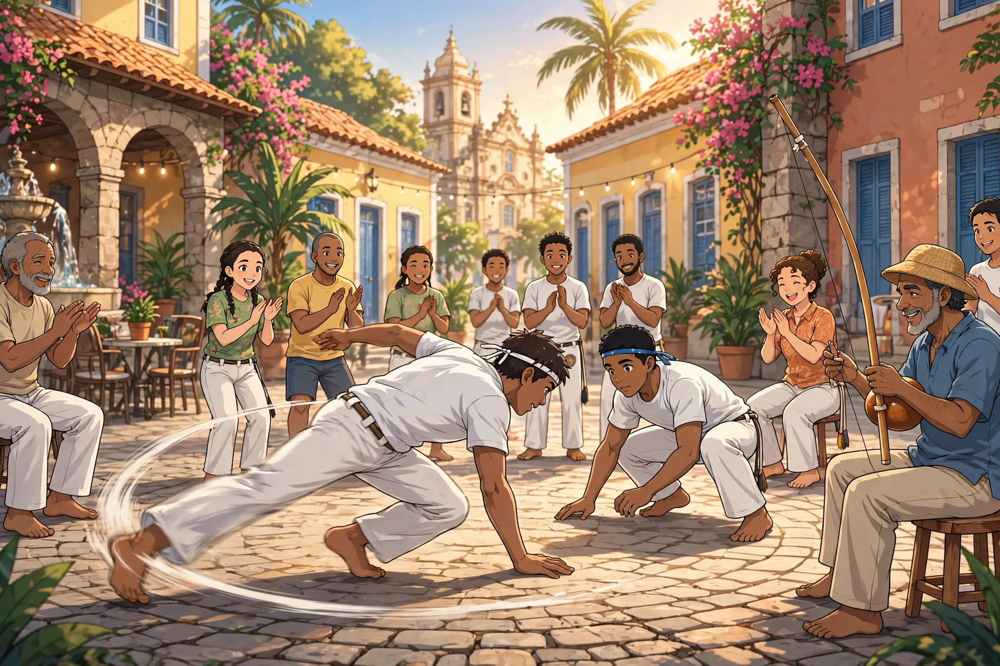
カポエイラは、ブラジルで生まれた武術です。音楽に合わせて二人一組で動きをやり取りする「ホーダ（輪）」と呼ばれる稽古の形が特徴で、蹴りやかわし、倒立や回転といったアクロバティックな動きが、歌と楽器のリズムに乗って展開します。武術と音楽・踊りの文化の両面をあわせ持つ点が、カポエイラの大きな魅力です。この記事では、成り立ちと稽古の進み方、道具の目安、見学・体験で確認したい点を初心者向けに整理しました。
カポエイラの稽古の中心にあるのが「ホーダ」と呼ばれる輪です。参加者が円になって歌い、手拍子をし、楽器を奏でる中で、輪の中央に入った二人が動きをやり取りします。楽器の中心はビリンバウと呼ばれる弓状の楽器で、そのリズムが二人の動きの速さや雰囲気を決めます。パンデイロやアタバケなどが加わることもあります。
中央でのやり取りは「ジョーゴ（ゲーム）」と呼ばれ、勝敗を決める試合というより、相手の動きに合わせて蹴りやかわしを繰り出す駆け引きです。蹴りを相手に当てるのではなく、相手の動きを読んでかわし、自分の動きを見せることが重んじられます。
基本の動きは、常に揺れながら前後に動く「ジンガ」と呼ばれるステップから始まります。ジンガの流れの中で蹴りを出し、相手の蹴りは体を沈めたりよけたりしてかわします。低い姿勢での動きが多く、倒立や回転、側転のようなアクロバティックな動きが入ることもあります。稽古では体の動かし方と同時に、リズムに乗る感覚も身につけていきます。
カポエイラは、ブラジルへ連れてこられたアフリカの人々の間で生まれたとされています。奴隷制の時代に、護身の練習を音楽や踊りの形に紛れ込ませて続けたという説が広く紹介されています。ただし成り立ちには諸説があり、見方は研究者によって分かれています。
20世紀に入ると、カポエイラは二つの流れに整理されていきました。メストレ・ビンバが体系化した「カポエイラ・ヘジョナウ」と、メストレ・パスティーニャが伝えた「カポエイラ・アンゴラ」です。ヘジョナウは動きの速さや技の多彩さを重視する傾向があり、アンゴラは低い姿勢でのゆっくりしたやり取りと伝統的な歌・楽器を大切にする傾向があるとされています。同じカポエイラでも、系統によって稽古の雰囲気は大きく異なります。
1930年代に禁止が解かれると、スポーツや文化として広がっていきました。2014年には「ホーダ・ジ・カポエイラ」がユネスコの無形文化遺産に登録され、ブラジルの文化として世界に知られるようになりました。日本国内でも各地に教室や団体があり、子どもから大人まで幅広い年代の方が稽古しています。
カポエイラの稽古は、基本のステップと動きの確認から始まり、少しずつホーダでのやり取りへ進むのが一般的です。内容や順序は教室や団体によって異なります。
1回の稽古は、多くの教室で1時間から2時間程度の枠で組まれています。稽古は裸足で行うことが多いため、動きやすい服装で参加するのが目安です。
カポエイラの稽古で使う道具の目安は次のとおりです。指定の有無は教室ごとに異なるため、体験のときに確認してください。
道具の詳しい種類や選び方の目安は、読み物「稽古着と道具の基礎知識」もあわせてご覧ください
向いているかどうかは、運動経験の有無だけで決まるものではありません。
通える地域で候補を挙げ、公式サイトの案内で見学・体験の受け付けを確認してみてください。道場の探し方や選び方の目安は、道場を探すとはじめての道場選びもあわせてご覧ください。
この記事にはアフィリエイトリンクが含まれます。当サイトはAmazonアソシエイト・プログラムに参加しています。価格・在庫はリンク先でご確認ください。ここで紹介する商品は、運営者が実際に使った感想（体験談）ではありません。

カポエイラの歴史と基本の動きを英語で解説した入門書です。英語版です。内容の詳細は商品ページで確認してください。
Amazonで見るその年最後の稽古である稽古納めから、年始最初の稽古始めまで。年末年始をはさむ冬の時期の稽古との向き合い方を、休みの期間の過ごし方や休み明けの戻り方まで含めて、一般論として整理した読み物です。
年末年始は、多くの道場で稽古の区切りとなる時期です。12月にはその年最後の稽古「稽古納め」があり、道場は年末年始の休みに入り、1月の年始最初の稽古「稽古始め（初稽古）」で新しい年が始まります。あわただしい年末と、生活リズムが変わりやすい正月をはさむため、この時期は稽古の進め方にも工夫が要ります。この記事では、稽古納めから稽古始めまでの流れ、道場が休みの期間の過ごし方、休み明けに無理なく稽古へ戻る目安、寒い冬の時期の体調管理の考え方を、ジャンルや流派を問わない一般論として整理します。行事の有無や休みの期間は道場によって異なりますので、自分の道場の案内に沿って読み替えてください。
年末年始の稽古は、大きく三つの場面に分けられます。一年の稽古を締めくくる稽古納め、道場が休みになる年末年始の期間、そして年始の稽古始めです。稽古納めでは一年の振り返りと稽古の場への感謝が、休みの期間では体を休めつつ動きの感覚を大きく落とさないことが、稽古始めでは新しい年の目標と無理のない再開が、それぞれ中心になります。まず全体の流れをつかんでおくと、12月から1月にかけての予定が立てやすくなります。
なお、稽古納めや稽古始めを特別な行事として行うかどうか、また休みの長さは道場ごとにさまざまです。通常の稽古日のまま年を越す道場もあれば、大掃除や納会を組み合わせる道場もあります。まずは自分の道場の年末年始の予定を確認することが出発点です。
稽古納めは、その年最後の稽古日です。通常の稽古に加えて、一年間使った道場の大掃除を稽古生全員で行う道場も多く、床拭きや道具の手入れを通じて、稽古の場への感謝を表す機会にもなっています。当日の一般的な進め方や一年の振り返り方は、稽古納めの過ごし方｜一年の稽古を締めくくる進め方と心構えに詳しくまとめています。
年末年始の休みは、数日から1週間ほど設ける道場が多いとされますが、期間は道場によって異なります。この期間は、一年の疲れを取るための休養の時間として使うのが基本です。一方で、まったく体を動かさない日が続くと、年始の稽古で動きの感覚が戻りにくく感じることもあります。休養と軽い動きのバランスを取ることが目安です。
稽古始め（初稽古）は、年始最初の稽古です。道場によっては、一年の安全と上達を願う新年の節目らしい進め方を取り入れる場合もあります。休み明けの体は、思っている以上に稽古の感覚から離れているものです。初日から休み前と同じ強度で動こうとせず、準備運動を丁寧に行い、基本の動きから少しずつ感覚を戻していく進め方が目安になります。当日の一般的な流れや目標の立て方は、初稽古の過ごし方｜年始の稽古始めの進め方と心構えでも紹介しています。
年末年始は、一年の中でも寒さが厳しくなる時期と重なります。道場の床の冷たさや、稽古前後の気温差は、冬の稽古ならではの条件です。準備運動の組み立て方や体を温める工夫など、寒い時期の稽古の進め方は冬の稽古の進め方｜寒い時期の体づくりと稽古の工夫に整理しています。年末年始の節目の過ごし方とあわせて確認しておくと、12月から1月の稽古を無理なくつなげられます。
これらは道場の掲示や案内で確認できることがほとんどです。分からない点は、稽古の区切りのよい場面で指導者に聞いてみてください。
年末年始の稽古は、稽古納めで一年を締めくくり、休みの期間に体と道具を整え、稽古始めで新しい年を始める、一続きの流れとして捉えると見通しが持ちやすくなります。寒い冬の時期だからこそ、強度よりも「無理なくつなげる」ことを優先し、休み明けは基本から少しずつ感覚を戻すことが目安です。行事や日程は道場によって異なりますので、この記事は一般的な目安として、自分の道場の案内とあわせて役立ててください。
シラットの成り立ちから、低い構えと足さばき、型（ジュルス）と組手、道具の目安、見学・体験で確認したい点までを整理した入門です。
シラットは、インドネシアやマレーシアを中心とするマレー諸島に伝わる武術です。低い構えから流れるように動き、打撃や投げ、関節技へとつなげる攻防が特徴で、素手の技だけでなく、クリス（短剣）やゴロック（なた状の刀）などの武器の稽古も伝わっています。型の稽古と組手、さらに演武としての美しい動きまで、幅広い顔を持つ武術です。この記事では、シラットの成り立ちと稽古の進み方、道具の目安、見学・体験で確認したい点を初心者向けに整理しました。
シラットの稽古でまず目に入るのが、腰を深く落とした低い構えです。この構えは「クダクダ」と呼ばれ、低い姿勢から素早く立ち上がったり、崩したりしながら攻防します。足さばきは「ランカ」と呼ばれ、三角形や円を描くように移動するのが特徴です。
技は手や足による打撃だけでなく、肘や膝、投げ技や関節技も組み合わされます。相手の力をかわしながら低い姿勢で入り込み、足払いや崩しへつなげる流れは、シラットらしい動きの一つです。
また、シラットには「ジュルス」と呼ばれる型の稽古があります。決められた動きの組み合わせを繰り返し練習し、体の使い方と技のつながりを身につけます。ジュルスには、実戦的なものから、舞のように美しい動きを見せる「クンバンガン」と呼ばれる演武的なものまであります。
武器の稽古もシラットの大きな特徴です。クリスと呼ばれる波状の刃を持つ短剣や、ゴロックと呼ばれるなた状の刀、さらにサロン（腰布）を使った稽古も伝えられています。武器の稽古は、素手の技がある程度身についてから、指導者の判断で段階的に行われるのが一般的です。
シラットの起源は、はっきりとは分かっていません。マレー諸島の各地で、村や集団を守るための武術として、長い時間をかけて育まれてきたとされています。交易で往来した中国やインド、アラブなどの影響を受けながら、各地の流派が生まれたという見方もあります。
「プンチャック・シラット」という呼び名は、「プンチャック（型や鍛錬の方法）」と「シラット（実戦の応用）」を組み合わせたものと説明されることがあります。地域や流派によって呼び方や考え方が異なるため、一つの決まった定義があるわけではありません。
インドネシアでは、1948年に全国組織が結成され、競技としてのシラットも整えられました。2019年には、インドネシアのプンチャック・シラットがユネスコの無形文化遺産に登録されました。
日本国内では、シラットを教える道場やグループは、他の武道に比べると多くありません。インドネシアやマレーシアの流派を学んだ指導者が、小規模な教室やサークルで教えている場合があります。
シラットの稽古は、基本の構えと足さばきの確認から始まり、少しずつ型と組手へ進むのが一般的です。内容や順序は流派や道場によって異なります。
1回の稽古は、多くの教室で1時間から2時間程度の枠で組まれています。稽古は裸足で行うことが多いため、動きやすい服装で参加するのが目安です。
シラットの稽古で使う道具の目安は次のとおりです。指定の有無は道場ごとに異なるため、体験のときに確認してください。
道具の詳しい種類や選び方の目安は、読み物「稽古着と道具の基礎知識」もあわせてご覧ください
向いているかどうかは、運動経験の有無だけで決まるものではありません。
通える地域で候補を挙げ、公式サイトの案内で見学・体験の受け付けを確認してみてください。道場の探し方や選び方の目安は、道場を探すとはじめての道場選びもあわせてご覧ください。
この記事にはアフィリエイトリンクが含まれます。当サイトはAmazonアソシエイト・プログラムに参加しています。価格・在庫はリンク先でご確認ください。ここで紹介する商品は、運営者が実際に使った感想（体験談）ではありません。

マレーシアのシラット流派セニ・ガヨンの歴史や技法、哲学を英語で紹介した書籍です。内容の詳細は商品ページで確認してください。
Amazonで見る
シラットの技を現代の護身の視点から解説した英語の書籍です。内容の詳細は商品ページで確認してください。
Amazonで見る
インドネシアのプンチャック・シラットの伝統と技を豊富な写真とともに紹介した英語の書籍です。内容の詳細は商品ページで確認してください。
Amazonで見る目的や生活リズムに合う道場を、どう見極めればよいのか。通いやすさ・雰囲気・指導の進め方・費用の見方、見学・体験での比べ方まで、一般論として整理した読み物です。
武術・武道を始めようと思ったとき、最初に迷うのが道場選びです。同じ流派やジャンルでも、道場ごとに稽古の進め方や雰囲気、通いやすさは大きく異なります。公式サイトの情報だけでは分からないことも多いため、見学や体験を通して自分の目で確かめることが大切です。この記事では、目的の整理から通いやすさ・雰囲気・指導の進め方・費用の見方、見学・体験での比べ方まで、自分に合う道場を見極めるための目安を一般論として整理します。特定の道場を勧める内容ではありません。最後は自分の感覚と生活リズムに合うかどうかで判断してください。
道場選びの出発点は、自分の目的を言葉にすることです。型や礼法をじっくり学びたいのか、体を動かして汗をかきたいのか、試合に出てみたいのか、護身の考え方を学びたいのか。目的が違うと、合う稽古の進め方も変わります。目的がはっきりしないまま選ぶと、通い始めてから「思っていた稽古と違う」と感じることがあります。まずは「何のために通うのか」を一つか二つ、自分の言葉で書き出してみてください。どのジャンルが自分の目的に近いかは、武道・武術のジャンル入門｜空手・柔道・合気道・剣道・居合道の特徴と向いている人の目安で、ジャンルごとの特徴と向いている人の目安を確認できます。
上達も健康づくりも、続けることが前提です。自宅や職場・学校からの距離、稽古の曜日と時間帯が、自分の生活リズムに合うかどうかは意外と大事なポイントです。電車やバスの便、夜の稽古の帰り道、駐車場や駐輪場の有無など、通う場面を具体的に想像してみてください。週に何回通えそうかも、入会前に目安を立てておくと、月謝や稽古回数の制度と照らし合わせやすくなります。少し遠くても通う価値がある道場もありますが、まずは「無理なく通い続けられるか」を基準に考えます。
雰囲気や指導の進め方は、行ってみないと分かりません。見学では、稽古の進み方や指導者の声かけ、稽古生同士の様子を自分の目で確かめます。初心者への声かけが丁寧かどうか、質問しやすい雰囲気かどうか、稽古の前後で礼儀が大切にされているかどうかなど、見て感じることが判断の材料になります。稽古の様子を見るだけでなく、休憩時間の雰囲気や、稽古後の片付けの様子も、道場の空気を知る手がかりになります。見学のときに何を見ればよいか迷う場合は、指導者に「初心者の稽古はどのように進みますか」と尋ねてみてください。
費用は月謝だけで判断しないことが大切です。入会金や登録料、道着・帯・防具などの道具代、大会や審査にかかる費用など、月謝以外にかかるものがあるかどうかを確認します。月謝の金額だけでなく、稽古回数との関係や、休んだ月の扱い、退会や休会の手続きなども、入会前に確かめておきたい点です。費用の細かな確認の仕方は、見学・体験で確認したい料金と制度の見方｜月謝・入会金・稽古回数の読み方にまとめています。分からない点は、見学のときに遠慮なく尋ねてください。
道場選びで迷ったときは、一つの道場だけで決めず、複数の道場を見学・体験して比べる方法があります。同じジャンルでも道場ごとに色があり、比べることで自分の好みや合う進め方が見えてきます。比べるときは、目的・通いやすさ・雰囲気・費用の四つの軸で、それぞれ感じたことを簡単に書き留めておくと、後から見返しやすくなります。体験稽古に参加するときの服装や持ち物、当日の流れは、稽古を始める前に知っておきたいこと｜服装・持ち物・稽古の流れと心構えで一般的な準備の考え方をまとめています。見学だけの場合と体験稽古に参加する場合とで、確認する点が変わることも意識しておきましょう。
条件を比べても迷うときは、「続けられそうかどうか」を決め手にするのが一つの考え方です。通いやすさと稽古の雰囲気、費用の見通しがそろっていれば、後は通い始めてみて、自分の体と生活リズムに合うかどうかを確かめていくことになります。最初から長く続けることを決め切らなくても問題ありません。まずは見学・体験で一歩を踏み出し、稽古の場を自分の目で確かめてみてください。
これらは道場の公式サイトや案内、見学の場で確認できることがほとんどです。分からない点は、見学のときに指導者へ直接尋ねてみてください。
道場選びは、目的・通いやすさ・雰囲気・費用の四つの軸で見ることが目安です。目的を言葉にし、通い続けられる場所かどうかを確かめ、見学で雰囲気と指導の進め方を見て、費用の全体像を確認します。複数の道場を同じ軸で比べれば、自分に合う道場が見えてきます。流派やジャンルの違いより先に、この四つの軸を確認しておくと、自分に合う道場を見つけやすくなります。